Prolongation, differential invariants and the projective group
GPT-6.1 Sol (OpenAI); Sections 4.2–4.10: GPT-6 Astra (OpenAI). Original exposition and diagrams: CC0 1.0.
A transformation of points also transforms derivatives of graphs. Prolongation records that transformation on a finite-dimensional jet space. It makes differential equations into geometric subsets and their symmetry conditions into tangency equations. Curvature and the Schwarzian derivative arise as coordinates transverse to the resulting orbits.
We use analytic graphs $u:\mathbb K^n\to\mathbb K^m$ and local point diffeomorphisms of $(x,u)$, with $\mathbb K=\mathbb R$ or $\mathbb C$. The regular-submanifold criterion and invariant count from Complete systems and invariants are available. Real oriented plane curves are used for Euclidean curvature. The invariant count is local at regular jets; the finite-generation theorem stated later has additional hypotheses.
1. Jets and transformed graphs
Two graphs have the same $k$-jet at $x$ when their derivatives through order $k$ agree there. Write coordinates on $J^k(\mathbb K^n,\mathbb K^m)$ as
$$ \begin{aligned} &(x^i,u^\alpha_J), |J|\le k, 1\le i\le n,\\ &1\le\alpha\le m. \end{aligned} $$Here $J$ is an unordered multi-index, including the empty index $u^\alpha_\varnothing=u^\alpha$. Mixed derivatives are symmetric, so each multi-index occurs once. The dimension is
$$ N_k=n+m\binom{n+k}{k}. \tag{1.1} $$The binomial coefficient counts all monomials in $n$ variables of degree at most $k$, equivalently all partial derivatives of those orders.
For a function $F$ of jets of order at most $k$, its total derivative is a function of order at most $k+1$:
$$ D_iF=\partial_{x^i}F+ \sum_{\alpha,\,|J|\le k}u^\alpha_{J,i}\partial_{u^\alpha_J}F. \tag{1.2} $$It satisfies $(D_iF)(j^{k+1}u(x))=\partial_i(F(j^ku(x)))$ by the ordinary chain rule. The total derivatives commute on functions of finite jet order, because mixed partial derivatives of every realizing graph commute. Every finite jet is realized by its Taylor polynomial, so this graph calculation proves the identity on jet coordinates.
Let a point transformation be $(x,u)\mapsto(\widetilde x,\widetilde u)=(X(x,u),U(x,u))$. On a graph, put
$$ A^j_i=D_iX^j. $$Where $\det A\ne0$, the transformed submanifold is again a graph over $\widetilde x$. Its derivatives are calculated using
$$ \begin{aligned} &\widetilde D_j=(A^{-1})^i_jD_i,\\ &\widetilde u^\alpha_j=(A^{-1})^i_jD_iU^\alpha. \end{aligned}\tag{1.3} $$Repeating (1.3) determines all transformed derivatives through order $k$. At each step, the result depends only on the original derivatives through that order, so it is independent of the realizing graph. This defines the prolonged transformation on $J^k$. Transforming a graph in two steps gives the same jet as transforming it by the composite; therefore prolongation preserves the transformation law. Its domain includes the graph-transversality condition $\det A\ne0$.
Prolongation also preserves the bracket. Let $\Phi_t$ and $\Psi_s$ be the local flows of point fields $v,w$, and work on a common graph chart for sufficiently small $t,s$. On a finite-order function, their pullbacks have first terms $1+tv$ and $1+sw$. Multiplying these four pullbacks gives
$$ \Phi_t^*\Psi_s^*\Phi_{-t}^*\Psi_{-s}^* =1+ts[v,w]+O(t^2s,ts^2). $$Indeed, the pure $t$ and $s$ terms cancel, and the mixed term is $vw-wv$; terms of degree at least two in either parameter cannot contribute to that coefficient. The same calculation on the jet chart gives the mixed term $[\operatorname{pr}^{(k)}v,\operatorname{pr}^{(k)}w]$. By the composition law just proved, its four jet transformations are the prolongation of the same point commutator. The finite chain rule (1.3), or its first variation in Theorem 2.1, makes their mixed coefficient $\operatorname{pr}^{(k)}[v,w]$. Equality of these coefficients on every jet coordinate proves
$$ [\operatorname{pr}^{(k)}v,\operatorname{pr}^{(k)}w] =\operatorname{pr}^{(k)}[v,w]. \tag{1.4} $$2. The prolongation formula
Let
$$ v=\sum_i\xi^i(x,u)\partial_{x^i} +\sum_\alpha\phi^\alpha(x,u)\partial_{u^\alpha}. $$The generator of its prolonged flow has the form
$$ \begin{aligned} &\operatorname{pr}^{(k)}v= \sum_i\xi^i\partial_{x^i}\\ &+\sum_{\alpha,\,|J|\le k}\phi^\alpha_J\partial_{u^\alpha_J}, \phi^\alpha_\varnothing=\phi^\alpha. \end{aligned}\tag{2.1} $$Theorem 2.1 (prolongation). Set $Q^\alpha=\phi^\alpha-\sum_i\xi^iu^\alpha_i$. Then
$$ \begin{aligned} &\phi^\alpha_{J,i} =D_i\phi^\alpha_J-\sum_j u^\alpha_{J,j}D_i\xi^j,\\ &\phi^\alpha_J=D_JQ^\alpha+\sum_i\xi^iu^\alpha_{J,i}. \end{aligned}\tag{2.2} $$In particular, the apparent order-$|J|+1$ derivatives in the second formula cancel.
Proof. Write the point flow to first order as $X^j=x^j+t\xi^j+O(t^2)$ and $U^\alpha=u^\alpha+t\phi^\alpha+O(t^2)$. Its total derivative matrix is $A^j_i=\delta^j_i+tD_i\xi^j+O(t^2)$, so (1.3) gives
$$ \widetilde D_i=D_i-t\sum_j(D_i\xi^j)D_j+O(t^2). $$If $\widetilde u^\alpha_J=u^\alpha_J+t\phi^\alpha_J+O(t^2)$, differentiate it with $\widetilde D_i$. The coefficient of $t$ is precisely the recurrence in (2.2). Its initial coefficient is $\phi^\alpha$. This proves the recurrence for every order by induction.
At the empty index, the characteristic formula is $Q^\alpha+\xi^iu^\alpha_i=\phi^\alpha$. Suppose it holds for $J$. Substitute it into the recurrence:
$$ \begin{aligned} &\phi^\alpha_{J,i} =D_iD_JQ^\alpha+ \sum_j(D_i\xi^j)u^\alpha_{J,j}\\ &+\sum_j\xi^ju^\alpha_{J,j,i} -\sum_j u^\alpha_{J,j}D_i\xi^j\\ &=D_{J,i}Q^\alpha+\sum_j\xi^ju^\alpha_{J,i,j}. \end{aligned} $$Commutation of total derivatives and symmetry of jet indices complete the induction. Since $Q^\alpha=\phi^\alpha-\xi^iu^\alpha_i$, its highest derivative term is $-\xi^iu^\alpha_{J,i}$, canceling the displayed correction. Alternatively, the recurrence directly proves that $\phi_J$ has order at most $|J|$. $\square$
The compact notation is
$$ \begin{aligned} &\operatorname{pr}v=\operatorname{pr}v_Q+\sum_i\xi^iD_i,\\ &\operatorname{pr}v_Q=\sum_{\alpha,J}D_JQ^\alpha\partial_{u^\alpha_J}. \end{aligned}\tag{2.3} $$These are identities on the infinite jet space, or on functions of finite order with one extra jet level available. The two terms on the right need not separately be vector fields on $J^k$; their sum has the cancellation just proved. This qualification avoids treating a top-order total derivative as an intrinsic vector field on a finite jet space.
3. Equations as jet submanifolds
Let $\Delta=(\Delta_1,\ldots,\Delta_s)$ be a system on $J^k$, with $d\Delta$ of rank $s$ on $E=\{\Delta=0\}$.
Theorem 3.1 (infinitesimal criterion). A connected local point group preserves the equation submanifold $E$ under prolongation exactly when
$$ \operatorname{pr}^{(k)}v(\Delta_a)=0\quad\text{on }E \tag{3.1} $$for each equation and each infinitesimal generator.
Proof. The rank assumption identifies $T_\zeta E$ with $\ker d\Delta_\zeta$. Condition (3.1) is exactly tangency of the prolonged fields. A tangent field has a restricted flow on $E$; uniqueness of the ambient ODE makes that flow agree with its ambient flow. Products of generator flows give every sufficiently small transformation of the connected group. Conversely, differentiating preservation of $E$ yields tangency and (3.1). $\square$
Preservation of $E$ implies that transformed solution graphs are still solutions, whenever they remain graphs. If “symmetry” means only preservation of actual solutions, necessity of (3.1) additionally requires that every equation jet being tested be locally realized by a solution. A maximal-rank system alone does not guarantee this realization for an arbitrary PDE system. The theorem above concerns the entire jet submanifold and is the precise geometric version proved here.
For singular defining equations, tangency can fail to be sufficient. For example $\Delta=u^2$ has zero derivative on $u=0$, so $v=\partial_u$ satisfies $v\Delta=0$ there, but its translations do not preserve $u=0$. Necessity survives for a preserved zero set.
Example 3.2: heat scaling and a boost. For $\Delta=u_t-u_{xx}$, take $v=x\partial_x+2t\partial_t$. Formula (2.2) gives $\phi_t=-2u_t$ and $\phi_{xx}=-2u_{xx}$, hence $\operatorname{pr}v(\Delta)=-2\Delta$.
For $w=2t\partial_x-xu\partial_u$, the same recurrence gives
$$ \begin{aligned} &\phi_t=-xu_t-2u_x, \phi_x=-u-xu_x,\\ &\phi_{xx}=-2u_x-xu_{xx}. \end{aligned} $$Thus $\operatorname{pr}w(\Delta)=-x\Delta$. Both are symmetries. Their finite transformations are
$$ \begin{aligned} &(x,t,u)\mapsto(e^\varepsilon x,e^{2\varepsilon}t,u),\\ &(x,t,u)\mapsto(x+2\varepsilon t,t,e^{-\varepsilon x-\varepsilon^2t}u). \end{aligned} $$The boost consequently sends a solution $f$ to $e^{-\varepsilon x+\varepsilon^2t}f(x-2\varepsilon t,t)$. The differing signs of the two exponential expressions come from expressing the transformed graph in its new independent variables.
4. Counting invariants and differentiating them
A differential invariant of order at most $k$ is a function on $J^k$ constant along prolonged orbits.
Theorem 4.1 (local infinitesimal count). If the prolonged infinitesimal distribution has constant rank $r_k$ on a regular analytic jet chart, there are $N_k-r_k$ functionally independent local analytic first integrals, and every analytic function annihilated by that distribution is a function of these. They are invariants for the identity local action.
Proof. The prolonged infinitesimal distribution is involutive by the bracket identity of Section 1. Complete systems and invariants, Theorem 2.1 provides coordinates $(s^1,\ldots,s^{r_k},I^1,\ldots,I^{N_k-r_k})$ with its integral plaques given by constant $I$. A function is annihilated exactly when it is independent of the $s$ coordinates. The $I$ are independent, and no larger independent family can be constant on a distribution of rank $r_k$. Its local flows preserve the first integrals; conversely flow invariance differentiates to zero derivative. Full disconnected-group invariance can impose additional conditions, as Example 4.20 illustrates. $\square$
An invariant derivative is a total derivative combination that carries invariants to invariants. For instance, if $n$ invariants $I^1,\ldots,I^n$ have invertible horizontal derivative matrix $A^a_i=D_iI^a$, define $\nabla_a$ by
$$ \nabla_a=(A^{-1})^i_aD_i. \tag{4.1} $$The horizontal differential of another invariant has the unique expression $d_HF=\sum_a(\nabla_aF)d_HI^a$. Point prolongations preserve horizontal differentiation, as (1.3) shows. Pulling back this equality and using invariance of $F,I^a$ proves invariance of its coefficients $\nabla_aF$. The invertibility condition is essential. In other actions, invariant derivatives can instead come from invariant geometric quantities such as arclength.
4.2. The global assertion and its precise scope
Scope. Theorem 4.45 proves global Lie–Tresse finite generation for a regular Cartan jet action in the stated transitive finite-order algebraic setting, including an action initially specified only on the equation. Proposition 4.46 gives the exact order and coefficient comparison for a specified intrinsic finite presentation. The base and its fibre-rational class are part of those hypotheses; Proposition 4.43 prevents their identification under an arbitrary change of base. The source used here is Boris Kruglikov and Valentin Lychagin, Global Lie–Tresse theorem, arXiv:1111.5480v3, revised 13 June 2015, §0.1–0.2, Theorems 1–2 and §3. Its setting is a Lie pseudogroup acting transitively on the point manifold, with algebraic finite-order isotropy actions, and an invariant, formally integrable, irreducible differential equation whose jet fibres are nonsingular algebraic varieties. Algebraicity is a condition on the fibre variables; it does not require the smooth base coordinates themselves to be algebraic.
The finite-generation assertion asks for one finite jet level $\ell$ and a proper invariant fibrewise algebraic exceptional set $S\subset E^\ell$. At every higher order the domain is restricted by the same condition: its projection to $E^\ell$ must avoid $S$. The function class is smooth in the base coordinates, rational in the fibre coordinates through order $\ell$, and polynomial in higher-order jet coordinates. Each function has finite jet order. The asserted generators are finitely many invariants $I_1,\ldots,I_t$ and finitely many invariant derivations $\nabla_1,\ldots,\nabla_s$ of this invariant algebra. Every invariant is to be a finite polynomial in the iterated derivatives $\nabla_{j_1}\cdots\nabla_{j_r}I_i$, with coefficients rational in the $I_i$. Thus generation is differential generation, not ordinary finite generation without derivatives. It also does not authorize denominators in arbitrary higher-order coordinates.
Theorem 4.1 and formula (4.1) do not prove this assertion. In particular, the matrix in (4.1) may fail to have full rank. The general construction must work with horizontal directions modulo those that annihilate every invariant; one cannot silently assume $s=n$ or replace the action by the special case admitting a full invariant frame. The earlier local results of this lesson remain valid on their stated domains, independently of the general theorem.
4.3. A complete algebraic input at one jet level
Proposition 4.2 (finite generators of a fixed-level invariant field). Let $k$ be a field of characteristic zero, let $X$ be an integral finite-type $k$-variety, and let $F$ be a subfield with $k\subseteq F\subseteq K=k(X)$. Then there are algebraically independent elements $t_1,\ldots,t_d\in F$ over $k$ and an element $w\in F$ such that
$$ \begin{aligned} &F=k(t_1,\ldots,t_d,w),\\ &{}[F:k(t_1,\ldots,t_d)]<\infty. \end{aligned}\tag{4.2} $$In particular, this applies to the field of rational invariants of an algebraic isotropy action on an integral finite-order equation fibre $X=E^\ell_a$, over $k=\mathbb R$ or $\mathbb C$. In this application $F$ means invariance under the full action, as an identity of rational functions, not merely annihilation by its infinitesimal generators.
Proof. A nonempty affine open of $X$ has a finitely generated integral coordinate algebra $A=k[a_1,\ldots,a_m]$. Its fraction field is $K=k(a_1,\ldots,a_m)$, so $K/k$ is finitely generated as a field. NOE-RAT-01, Theorem 1.2 therefore applies to the inclusions $k\hookrightarrow F\hookrightarrow K$ and proves that $F/k$ is finitely generated. Its proof uses Lemma 1.1, which bounds the degrees of algebraic intermediate extensions inside a finitely generated field. This is the step that rules out an infinite algebraic extension; finite transcendence degree alone would not do so.
Choose a finite transcendence basis $t_1,\ldots,t_d$ of $F/k$ and put $B=k(t_1,\ldots,t_d)$. A finite generating list for $F/k$ also generates $F/B$, and each generator is algebraic over $B$. Adjoining these generators successively multiplies finitely many finite degrees, so $[F:B]$ is finite. Since $B$ has characteristic zero, the derivative of a nonconstant irreducible polynomial over $B$ is nonzero and has smaller degree. It is therefore relatively prime to that polynomial. Hence every algebraic generator is separable over $B$.
Apply NT-LOC-04, Proposition 0.1 to the finite separable extension $F/B$. It supplies $w$ with $F=B(w)$, proving (4.2). Only the infinite-base-field branch of that proof is used: $B$ contains the prime field $\mathbb Q$. No valuation or completeness hypothesis is imposed by Proposition 0.1. If $F=B$, take $w=0$; the transcendence basis may also be empty. $\square$
This proposition establishes field generation at each specified integral finite jet level. It does not choose a uniform level $\ell$, identify $d$ with an orbit codimension, prove existence of a geometric quotient, separate individual real orbits, or express all higher-order invariants by invariant differentiation. Those are distinct assertions. No claim about the positive-characteristic branch of NOE-RAT-01, Theorem 1.3 is needed here.
4.4. Coefficient invariance for the full group
Lemma 4.3 (unique invariant polynomial coordinates). Let $K\subseteq L$ be fields. Let a group $\Gamma$ act on $L$ by automorphisms $g_L:L\to L$ with $g_L(K)=K$, and write $g_K:K\to K$ for the restrictions. Suppose $z_1,\ldots,z_r\in L$ are algebraically independent over $K$ and are fixed by every $g_L$. With
$$ K^\Gamma=\{a\in K:g_K(a)=a\text{ for every }g\in\Gamma\}, $$the invariant subring satisfies
$$ \begin{aligned} &\bigl(K[z_1,\ldots,z_r]\bigr)^\Gamma =K^\Gamma[z_1,\ldots,\\ &z_r]. \end{aligned}\tag{4.3} $$Proof. The evaluation homomorphism $\operatorname{ev}:K[T_1,\ldots,T_r]\to L$, $T_i\mapsto z_i$, is injective by algebraic independence. Consequently a polynomial $P=\sum_{\alpha\in A}h_\alpha z^\alpha$, for a finite set $A\subset\mathbb N^r$, has unique coefficients in $K$. If $P$ is fixed by $\Gamma$, applying any $g_L$ and subtracting gives
$$ 0=g_L(P)-P=\sum_{\alpha\in A} \bigl(g_K(h_\alpha)-h_\alpha\bigr)z^\alpha. $$Injectivity of $\operatorname{ev}$ implies $g_K(h_\alpha)=h_\alpha$ for every $\alpha$. The element $g$ was arbitrary, so every coefficient belongs to $K^\Gamma$. Conversely a polynomial with coefficients in $K^\Gamma$ and fixed variables $z_i$ is fixed, by applying $g_L$ to its finite sum. This proves both inclusions in (4.3), including the constant-polynomial case $r=0$. $\square$
The full-action comparison matters: the two-element group acting by $x\mapsto-x$ on $\mathbb R(x)$ has zero Lie algebra, yet $x$ is not invariant. Thus infinitesimal invariance of coefficients alone does not settle the disconnected-group case in the coefficient argument of the source's §3.2. Lemma 4.3 supplies that step when its hypotheses hold. For partially defined pseudogroup maps the same subtraction must be performed on common domains where the asserted polynomial expansion is unique. Establishing those domains, the fixed coordinates and the required rational-low-order/polynomial-higher-order expansion is still necessary; the lemma does not produce them.
4.5. Real orbits and the remaining proof obligations
The source also asserts orbit separation. Its passage from complexified orbits to individual real orbits in §2.1 and §3.1 is false without an additional distinction: real and imaginary parts of rational invariants cannot separate real orbits lying in one complex orbit. NOE-SYM-03, §6 gives a complete counterexample on the equation $u_{ijk}=0$, together with the transformation formulas and Figure 6.1. Its real orbits distinguish the sign of the Hessian determinant, whereas its rational invariant field is constant. Both signs meet every nonempty real Zariski-open domain. Therefore removal of a proper algebraic exceptional set does not repair the individual-real-orbit claim.
That counterexample does not disprove finite differential generation: its constant invariant field is already finitely generated. It also does not replace geometric orbits over an algebraic closure by real-point orbits. The explicit metric argument in NOE-SYM-03 and the local proofs in this lesson are retained with their own hypotheses.
Theorem 4.19 constructs finite-level rational orbit quotients. Lemma 4.34 and Theorems 4.35–4.36 give transitive invariant extension, full invariant differential spanning and flat geometric descent. Theorems 4.21, 4.24, 4.28, 4.30 and 4.32 supply quotient horizontal derivations, mixed observations, the actual common domain/full-symbol presentation, uniform quotient-symbol cohomology and polynomial equation coordinates. Theorem 4.38 combines these results into finite differential generation, affine geometric quotient projections and finite/formal geometric orbit separation for the precise induced point-action setting of Section 4.16. Theorem 4.45 identifies the actual regular Cartan action morphisms, full stabilizer schemes and orbit symbols, and applies these results to that action on the same base. Proposition 4.46 gives the order shift and coefficient class of a specified intrinsic finite presentation.
4.6. Symbolic stabilization: generators are not a free basis
The general theorem requires one finite order and one open set whose entire higher-jet inverse image has the asserted stabilization. A separate statement at each infinite jet does not give that conclusion. Here is a precise algebraic input, together with the distinction needed when using the cited proof.
In the proof of the stabilization theorem in §2.2 of the cited arXiv v3, the graded module $\mathfrak M$ is shown to be Noetherian over $\mathfrak A$. The next inference asserts a basis with unique $\mathfrak A$-coefficients. That implication is false: Noetherianity gives finite generation, not freeness. The subsequent uses of uniqueness and absence of relations therefore require an additional argument. This identifies a gap in that proof route, not a counterexample to the global finite-generation theorem.
Example 4.4 (a cyclic module with a relation in arbitrarily high degree). Let $F$ be a field, let $A=F[x]$ with $\deg x=1$, and choose an integer $r\geq2$. The graded $A$-module
$$ M=A/(x^r) $$is Noetherian and is generated by $\overline 1$ in degree zero. Indeed, $F$ is Noetherian because its only ideals are zero and $F$; AG-CA-03, Theorem 2.1 and Proposition 1.2 give the polynomial-ring and quotient assertions. The class $\overline 1$ is nonzero and $x^r\overline 1=0$. A free module over the domain $A$ has no nonzero element killed by a nonzero scalar: write a vector in a basis and apply the domain property to each coefficient. Thus $M$ is not free. In particular $0\overline 1=x^r\overline 1$ are distinct coefficient expressions for the same element.
This also shows why generator degrees alone do not bound the first Koszul homology. Define $M(-1)_d=M_{d-1}$. The one-variable Koszul complex, with its displayed graded $A$-linear differential, is
$$ 0\longrightarrow M(-1)\xrightarrow{\;x\;}M\longrightarrow0. $$Its degree-$r$ element $\overline{x^{r-1}}$ in the left term is nonzero and lies in the kernel, and there is no preceding nonzero term. Hence its first homology has a nonzero degree-$r$ class, although $M$ has a generator of degree zero. The relation degree, not just the module-generator degree, matters. Degree shifts give the same obstruction for a module starting at a positive degree.
Lemma 4.5 (eventual prolongation for one fixed symbolic system). Let $F$ have characteristic zero, and let $T$ and $V$ be finite-dimensional $F$-vector spaces. For each integer $j\geq0$, let
$$ g_j\subseteq S^j(T^*)\otimes_F V. $$We regard an element of $S^j(T^*)\otimes_F V$ as a symmetric $j$-linear map $T^j\to V$. For $v\in T$ define the $F$-linear insertion map
$$ \begin{aligned} &c_v:S^{j+1}(T^*)\otimes_F V\longrightarrow S^j(T^*)\otimes_F V,\\ &(c_vp)(v_1,\ldots,v_j)=p(v,v_1,\ldots,v_j). \end{aligned} $$Assume $c_v(g_{j+1})\subseteq g_j$ for all $j$ and all $v\in T$. Define the first prolongation by
$$ \begin{aligned} &g_j^{(1)}= \{p\in S^{j+1}(T^*)\otimes_F V:\\ &c_vp\in g_j\text{ for every }v\in T\}. \end{aligned} $$Then some integer $q\geq0$ satisfies $g_{j+1}=g_j^{(1)}$ for every $j\geq q$. No freeness of the graded dual module is assumed.
Proof. Put $A=S_F(T)$ and $P=A\otimes_F V^*$, graded by polynomial degree, with $P_j=S^j_F(T)\otimes_F V^*$. Pair $P_j$ with $S^j(T^*)\otimes_F V$ by
$$ \langle v_1\cdots v_j\otimes\lambda,p\rangle =\lambda\bigl(p(v_1,\ldots,v_j)\bigr). $$The pairing is nondegenerate: in a basis of $T$, a symmetric multilinear map is determined by its values on unordered basis tuples, and a basis of $V^*$ detects every such value. In degree zero it is the usual $V^*$–$V$ pairing. With this convention multiplication $P_j\to P_{j+1}$ by $v$ is adjoint to insertion: $\langle vb,p\rangle=\langle b,c_vp\rangle$.
Let $I_j\subseteq P_j$ be the annihilator of $g_j$, and set $I=\bigoplus_{j\geq0}I_j\subseteq P$. If $b\in I_j$ and $p\in g_{j+1}$, the contraction hypothesis gives
$$ \langle vb,p\rangle=\langle b,c_vp\rangle=0. $$Consequently $T I_j\subseteq I_{j+1}$, where $T I_j$ denotes the $F$-linear span of products $vb$. Since $T$ generates the $F$-algebra $A$, this proves that $I$ is a graded $A$-submodule of $P$.
Choose bases of $T$ and $V$. Then $A$ is a polynomial ring in finitely many variables over $F$, and $P$ is a finite free $A$-module. The full proofs in AG-CA-03, Theorem 2.1 and Theorem 1.1 / Proposition 1.2 imply that $I$ is finitely generated. Replace each chosen generator by its finitely many homogeneous components. Those components belong to $I$ because $I$ is graded, and they still generate it: their span contains the old generators and is contained in $I$. Write them as $b_1,\ldots,b_s$, of degrees $d_1,\ldots,d_s$, and put $q=\max_i d_i$, or $q=0$ if $I=0$.
For $j\geq q$ we claim
$$ I_{j+1}=T I_j. $$The inclusion from right to left was proved above. For the reverse, express $b\in I_{j+1}$ in the generators and take homogeneous degree $j+1$. This gives
$$ b=\sum_{i=1}^s a_i b_i,\qquad a_i\in A_{j+1-d_i}. $$Every nonzero coefficient has positive degree, since $j+1-d_i\geq1$. Each of its monomials has a degree-one factor, so $a_i$ is a finite sum of products $v a'$ with $v\in T$ and $a'\in A_{j-d_i}$. Each $a'b_i$ belongs to $I_j$, proving the claim. This also covers $T=0$: its positive-degree polynomial pieces are zero.
All pairings in a fixed degree are between finite-dimensional vector spaces. Taking the annihilator twice returns the original subspace: extend a basis of the subspace to a basis of the whole space and use the dual coordinate functionals to separate a vector outside it. Therefore, for $p\in S^{j+1}(T^*)\otimes_F V$,
$$ \begin{aligned} p\in g_{j+1} &\Longleftrightarrow \langle I_{j+1},p\rangle=0\\ &\Longleftrightarrow \langle T I_j,p\rangle=0\\ &\Longleftrightarrow \langle I_j,c_vp\rangle=0\quad\text{for all }v\in T\\ &\Longleftrightarrow c_vp\in g_j\quad\text{for all }v\in T. \end{aligned} $$This is exactly $g_{j+1}=g_j^{(1)}$. If $V=0$, the same proof reduces to zero spaces. The proof uses finite generation of the relation submodule $I$, not a claimed free basis of $P/I$. $\square$
Uniformity for the global theorem. At one fixed infinite jet, once its completed orbit symbols satisfy the contraction hypothesis, Lemma 4.5 supplies eventual equality. It does not give a common $q$ or one finite-level open set for every infinite jet above it. Uniform contraction and exact specialization over one finite-level invariant open are proved in Theorem 4.28. Theorem 4.30 supplies the quotient-symbol cohomology, and Theorem 4.38 proves the affine quotient and polynomial generation assertions. The descending chain of closures of total images in §2.2 of Kruglikov–Lychagin does not by itself identify every individual fibre image; Example 4.6 exhibits the distinction. Lemma 4.5 is a pointwise statement and does not replace these uniform arguments.
The author's erratum to the 2016 paper corrects an invariant derivation and the revisited example in §§3.5 and 4.5. It does not amend the module argument in §2.2.
4.7. Uniformity: total images do not determine fibre images
There is a second, distinct issue in the §2.2 argument of arXiv v3. In the proof of Proposition prp4, the closed sets obtained from the total images of the stabilizer bundles eventually coincide. The proof then asserts equality of the stabilizer images at every higher jet over one finite-level open set. These are different assertions: taking a union of images over all jets forgets which jet supplies a vector.
The precise constructibility statements and proofs are AG-MO-06, Theorem 3.1 and Theorem 4.2. They give a constructible image and, when that image is dense in an irreducible target, a nonempty open subset contained in it. They do not identify the image at each point of a separate parameter space. The following example has an even stronger property than constructibility: its total images are already the entire target at every level.
Example 4.6 (constant total images, arbitrarily late fibre-image loss). Work over $F=\mathbb C$. For $k\geq1$ put
$$ E^k=\mathbb A_F^{k-1},\qquad J^k=F^k, $$with coordinates $(x_2,\ldots,x_k)$ and $(v_0,\ldots,v_{k-1})$, respectively. Thus $E^1$ is a point. Let $\pi_{k+1,k}:E^{k+1}\to E^k$ forget $x_{k+1}$, and let $\rho_{k+1,k}:J^{k+1}\to J^k$ forget $v_k$. The former is an affine-line bundle and the latter is a surjective $F$-linear map. Define the algebraic vector subbundle
$$ \begin{aligned} &S^k=\bigl\{(x,v)\in E^k\times J^k: v_{i-1}\\ &=x_{i+1}v_i(1\leq i\leq k-1)\bigr\}. \end{aligned} $$It is a trivial line bundle. Indeed, set $s=v_{k-1}$ and recover its coordinates by
$$ v_i=\left(\prod_{r=i+2}^{k}x_r\right)s \quad(0\leq i\leq k-1), $$where an empty product is $1$. These polynomial formulas and the inverse coordinate $s=v_{k-1}$ give an isomorphism $E^k\times F\to S^k$, linear on every fibre. In particular no singular bundle rank is hidden in the example.
The product map $\pi_{k+1,k}\times\rho_{k+1,k}$ restricts to an algebraic map $\sigma_{k+1,k}:S^{k+1}\to S^k$: all of the first $k-1$ defining equations remain true after truncation. In the line-bundle coordinates it is
$$ \sigma_{k+1,k}(x_2,\ldots,x_{k+1},s) =(x_2,\ldots,x_k,x_{k+1}s). $$Define $\psi_k:S^k\to F$ by the same ambient coordinate projection $\psi_k(x,v)=v_0$ at every level. It is algebraic and fibrewise $F$-linear, and
$$ \psi_{k+1}=\psi_k\circ\sigma_{k+1,k},\qquad \psi_k(x,s)=\left(\prod_{r=2}^{k}x_r\right)s. $$Taking $x_2=\cdots=x_k=1$ shows that $\psi_k(S^k)=F$. Thus all total images, and not merely their closures, are equal. Nevertheless the individual image is
$$ \psi_k(S^k_x)= \begin{cases} F,&\prod_{r=2}^{k}x_r\ne0,\\ \{0\},&\prod_{r=2}^{k}x_r=0. \end{cases} $$Fix any integer $\ell\geq1$ and any nonempty Zariski-open $U\subset E^\ell$. There exists $x\in U$ with $x_2\cdots x_\ell\ne0$. To see this without an implicit generic-point argument, choose a nonempty principal open $D(f)\subset U$. The polynomial $f\prod_{r=2}^{\ell}x_r$ is nonzero in the polynomial ring over $F$. A nonzero polynomial over an infinite field cannot vanish at every point: induct on the number of variables, choose values where a nonzero coefficient in the last variable remains nonzero, then avoid the finitely many roots of that resulting one-variable polynomial. This supplies the required point. For $\ell=1$, the same assertion concerns the sole point and the empty product $1$.
Lift this point to $y=(x_2,\ldots,x_\ell,0)\in E^{\ell+1}$. Then
$$ \begin{aligned} &\pi_{\ell+1,\ell}(y)=x\in U, \psi_\ell(S^\ell_x)=F,\\ &\psi_{\ell+1}(S^{\ell+1}_y)=\{0\}. \end{aligned} $$In particular the vector $1$ in the lower image has no preimage in this higher fibre. Hence no such finite-level open set makes all the individual images equal at subsequent levels. Along any one infinite coordinate sequence they do stabilize: either every coordinate is nonzero, or the image becomes zero when its first zero coordinate appears. That first zero can occur beyond any prescribed finite level. Pointwise eventual stabilization therefore does not imply the required uniform assertion. $\square$
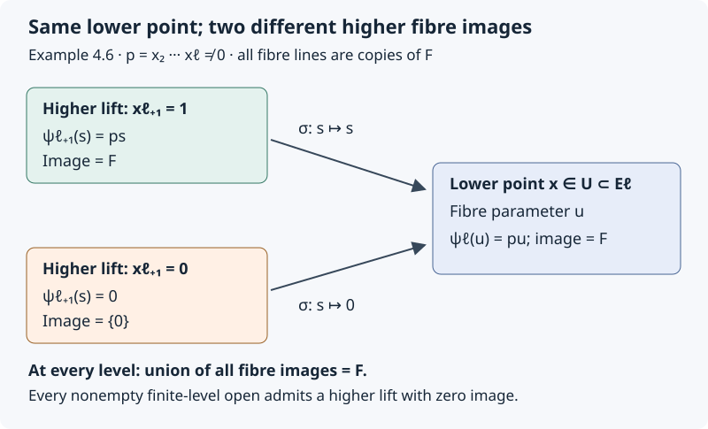
Open Figure 4.2 at full size (editable SVG)

Figure 4.2. Exact fibre maps in Example 4.6. At a lower point with product $p=x_2\cdots x_\ell\ne0$, the lift $x_{\ell+1}=1$ has image $F$, whereas the lift $x_{\ell+1}=0$ has image zero. Both project to the same point of $U$. The diagram concerns the displayed algebraic tower, not an asserted realization by a Lie pseudogroup.
The example disproves the general inference from stabilized total images to uniform fibre-image equality, even with affine-bundle base projections, constant-rank stabilizer-like subbundles, fixed ambient coordinate projections and compatible truncations. It is not a realization of those bundles as stabilizers of the prolonged pseudogroup in the Lie–Tresse theorem. Thus it identifies the missing step in that proof; it is not a counterexample to Proposition prp4 with all of its geometric hypotheses. Any inference for actual pseudogroup stabilizers needs additional geometric hypotheses that prevent this fibre-image loss.
4.8. What a uniform relation presentation would prove
The fixed-system argument in Lemma 4.5 does extend uniformly when one relation module genuinely controls every specialization. The following precise statement separates that useful algebra from the still-required comparison with orbit symbols.
Lemma 4.7 (one bound for the specializations of a single relation module). Let $R$ be a commutative Noetherian $\mathbb Q$-algebra, and let $T,V$ be finite free $R$-modules. Set
$$ \begin{aligned} &A=\operatorname{Sym}_R T, V^\vee=\operatorname{Hom}_R(V,R),\\ &P=A\otimes_R V^\vee. \end{aligned} $$Let $I=\bigoplus_{j\geq0}I_j\subseteq P$ be a graded $A$-submodule. For every unital homomorphism $\alpha:R\to K$ into a field, write $T_K=T\otimes_RK$, $V_K=V\otimes_RK$ and define
$$ \begin{aligned} &J_j(\alpha)=\operatorname{im}\bigl(I_j\otimes_RK\longrightarrow P_j\otimes_RK\bigr),\\ &h_j(\alpha)=J_j(\alpha)^\perp \subseteq S^j(T_K^*)\otimes_K V_K. \end{aligned} $$The map defining $J_j$ is induced by the inclusion $I_j\hookrightarrow P_j$; it is not asserted to be injective after tensoring. The annihilator uses the evaluation pairing of Lemma 4.5. Its coefficient field has characteristic zero because $\alpha$ is unital and $R$ is a $\mathbb Q$-algebra. There is an integer $q\geq0$, independent of $\alpha$ and $K$, such that
$$ h_{j+1}(\alpha)=h_j(\alpha)^{(1)}\qquad(j\geq q). $$Proof. Bases of $T$ and $V$ identify $A$ with a polynomial ring in finitely many variables over $R$ and $P$ with a finite free $A$-module. AG-CA-03, Theorem 2.1 and Theorem 1.1 / Proposition 1.2 therefore give a finite set of generators of $I$. Taking their homogeneous components, as in Lemma 4.5, gives homogeneous generators $b_1,\ldots,b_s$. Let $q$ be the greatest generator degree, with $q=0$ for $I=0$.
For $j\geq q$ we have $I_{j+1}=T I_j$. Indeed, an element of degree $j+1$ is a sum of $a_i b_i$ with $a_i\in A_{j+1-\deg b_i}$. Each nonzero $a_i$ has positive degree and is a sum of degree-one generators of $A$ multiplied by elements of one lower degree. Thus each $a_i b_i$ lies in $T I_j$. The other inclusion holds because $I$ is a submodule. This proof works over $R$ with zero divisors; it does not divide by a coefficient.
For finite free modules, their chosen bases give the identifications
$$ P_j\otimes_RK \cong \operatorname{Sym}_K^j(T_K)\otimes_K V_K^*. $$These identifications agree with evaluation: a specialized dual basis evaluates on the corresponding specialized basis. In particular multiplication by a specialized vector of $T$ is adjoint to the insertion map used in Lemma 4.5. The equality just proved implies
$$ J_{j+1}(\alpha)=T_KJ_j(\alpha). $$For completeness, every vector on the left is a sum of images of $b\otimes c$ with $b\in I_{j+1}$, $c\in K$. Write $b$ as a sum of products $tu$ with $t\in T$, $u\in I_j$, and specialize; its image belongs to the right side. Conversely the right side is spanned by products of images of $t\otimes c$ and $u\otimes d$, and each is the image of $tu\otimes cd$. This proves both inclusions even when tensoring destroys injectivity.
Taking annihilators in the displayed finite-dimensional pairing gives, for $p\in S^{j+1}(T_K^*)\otimes_KV_K$,
$$ \begin{aligned} &p\in h_{j+1}(\alpha) \Longleftrightarrow \langle T_KJ_j(\alpha),p\rangle=0\\ &\Longleftrightarrow \langle J_j(\alpha),c_vp\rangle=0 \text{for every }v\in T_K\\ &\Longleftrightarrow c_vp\in h_j(\alpha) \text{for every }v\in T_K. \end{aligned} $$This is the required prolongation equality, with the same $q$ for every field specialization. Zero-rank $T$ or $V$ causes no exception; if $R$ is the zero ring, there are no unital maps to a field and the quantified assertion is vacuous. $\square$
Orbit-symbol application. To use Lemma 4.7 for Lie–Tresse, one must construct such a relation module over an actual finite-level base and prove that the annihilator of every relevant higher-jet orbit symbol is exactly $J_j(\alpha)$ at every point under consideration. Existence of a relation module at each separate infinite jet does not do this. Neither may one replace the image in the definition of $J_j$ by a kernel after specialization without proof. For example, multiplication by $t$ on $\mathbb Q[t]$ has zero kernel; at the specialization $t=0$ its induced map $\mathbb Q\to\mathbb Q$ is zero and has kernel $\mathbb Q$. Thus specialization of a kernel is not in general the kernel of the specialized map.
The orbit-symbol application requires both a common finite-level invariant domain and an actual specialization comparison for the full symbol annihilators. Lemma 4.7 supplies the algebraic bound after that comparison. In the point-action setting of Section 4.16, Theorem 4.28 constructs the domain and the full relation presentation, including the required first-derivative stabilizer-image equality. Theorem 4.30 supplies the quotient-symbol cohomology argument. Theorem 4.38 proves the affine quotient and polynomial induction arguments, and Theorem 4.45 identifies the actual regular differential jet action to which they apply.
Figure 4.2 and Sections 4.7–4.8: GPT-6 Astra (OpenAI). CC0 1.0.
4.9. An actual pseudogroup: stable total images and a necessary domain restriction
Example 4.6 concerned an algebraic tower, without asserting that it was a pseudogroup stabilizer tower. The following computation instead uses actual prolonged transformations of curves. It tests the whole-space image-to-section inference in Kruglikov–Lychagin, Global Lie–Tresse theorem, version 3, Section 2.2, proof of Proposition 4. It also proves the proposition's eventual symbol inclusion for this particular action. It is not a counterexample to that proposition or to the general Lie–Tresse theorem.
Example 4.8 (translations and common scalings). Work over a field $F$ equal to $\mathbb R$ or $\mathbb C$. On the affine plane $M=\mathbb A^2_F$, with coordinates $(x,u)$, consider the algebraic group
$$ \begin{aligned} &G=F^\times\ltimes F^2,\\ &g_{\lambda,b,c}(x,u)=(\lambda x+b,\lambda u+c). \end{aligned} $$The multiplication and inverse, obtained by composing these maps, are
$$ \begin{aligned} &(\lambda,b,c)(\mu,d,e)=(\lambda\mu,\lambda d+b,\lambda e+c),\\ &(\lambda,b,c)^{-1}=(\lambda^{-1},-\lambda^{-1}b,-\lambda^{-1}c). \end{aligned} $$Thus this is an algebraic action by invertible maps. Translations send any point of $M$ to any other point, so it is transitive. Local restrictions, allowing separate parameters on separate connected components, form a pseudogroup: compositions and inverses have the displayed form locally, and maps that agree on overlaps glue. In transformed coordinates $(X,U)$ its first-order defining equations are
$$ X_u=0,\qquad U_x=0,\qquad X_x=U_u\ne0. $$These equations give exactly the stated local maps on connected coordinate neighborhoods. Indeed $X$ depends only on $x$, $U$ only on $u$, and differentiating $X_x=U_u$ gives $X_{xx}=U_{ux}=0$ and $U_{uu}=X_{xu}=0$. All second derivatives therefore vanish, and so do all their derivatives. An admissible first jet, with common nonzero derivative $\lambda$ and prescribed image of its base point, consequently has exactly one extension at every higher order: the jet of the corresponding affine map. This proves surjectivity of every prolonged jet projection and formal integrability of these equations; the order-one conditions and all their prolongations are algebraic. No infinite collection of independent transformation parameters has been introduced.
Use the invariant chart of curve jets that are graphs $u=f(x)$. Set $u_j=f^{(j)}(x)$ and
$$ \begin{aligned} &E^k=\mathbb A^2_F\times\mathbb A^k_F =\{(x,u,u_1,\ldots,u_k)\},\\ &\pi_{k,k-1}:E^k\longrightarrow E^{k-1}. \end{aligned} $$The map $\pi_{k,k-1}$ forgets $u_k$ and is an affine-line bundle. There are no differential equations on the graph, so every finite graph jet extends, and each fiber over a base point is an irreducible affine space. The action preserves this chart because $dX/dx=\lambda\ne0$. The transformed graph has $U(X)=\lambda f((X-b)/\lambda)+c$. Repeated differentiation gives, for every $j\ge1$,
$$ u'_j=\lambda^{1-j}u_j. $$Differentiating the action at the identity, with infinitesimal parameters $(a,b,c)\in F^3$, gives the vector field and its prolongation
$$ X_{a,b,c}=(ax+b)\partial_x+(au+c)\partial_u, $$ $$ \begin{aligned} &X_{a,b,c}^{(k)}=(ax+b)\partial_x+(au+c)\partial_u\\ &+\sum_{j=2}^k(1-j)a u_j\partial_{u_j}. \end{aligned} $$The missing $j=1$ summand is zero, not an omitted constraint: slopes are unchanged by common scaling.
Fix a base point $p=(x_0,u_0)$ and a first jet of slope $m$, with tangent line
$$ \tau=F(\partial_x+m\partial_u)\subset T_pM. $$A field fixes $p$ precisely when $b=-ax_0$ and $c=-au_0$. Its derivative at $p$ is $a\,\mathrm{id}_{T_pM}$, which preserves every line and therefore fixes this first jet. For a higher jet $z_k$ above that first jet, its infinitesimal stabilizer and the derivative map are exactly
$$ \begin{aligned} &\operatorname{st}(z_k) =\{a\in F:(j-1)a u_j=0\text{ for }2\\ &\le j\le k\}, \psi_{k,z_k}:\operatorname{st}(z_k)\longrightarrow \operatorname{End}_F(\tau),\\ &a\longmapsto a\,\mathrm{id}_\tau. \end{aligned} $$Here the scalar description of the stabilizer uses the uniquely determined $b,c$ above, and $\psi_{k,z_k}$ is an $F$-linear map. Since $F$ has characteristic zero, for $k\ge2$ this stabilizer is $F$ when $u_2=\cdots=u_k=0$, and is zero otherwise. At order one it is always $F$.
The affine-line graph with this first jet has all higher derivatives zero. Consequently the union of the images of $\psi_{k,z_k}$, as $z_k$ runs through all higher extensions of the fixed first jet, is $F\,\mathrm{id}_\tau$ at every order. It is already Zariski closed. Allowing the slope to vary gives the whole endomorphism line bundle over the graph first-jet chart, again at every order. These full-space total images stabilize from the start. In contrast, on the nonempty open set $u_2\ne0$ each individual stabilizer and its image are zero.
There are two distinct failures of the proposed section argument. If the chosen order is one, every first jet has a lift with $u_2=1$; its scalar derivative image drops from $F$ to zero. Thus no nonempty first-order domain makes all its higher lifts preserve that image. If the chosen order is $\ell\ge2$, a rational section of the stabilizer family over a nonempty open set has a rational scalar component $a(z_\ell)$ satisfying $u_2a(z_\ell)=0$. The graph-jet space is irreducible and $u_2$ is a nonzero element of its function field, so $a(z_\ell)=0$. Every rational section is therefore zero wherever defined. No finite collection of such sections can span the full-space total image $F\,\mathrm{id}_\tau$. The same argument applies after fixing $p$ and the slope, since the remaining jet coordinates form an affine space with coordinate $u_2$.
Rank and scope caution. This actual stabilizer family jumps in rank along the affine-line jets. It is an algebraic family of vector spaces, not a constant-rank vector bundle over the entire graph-jet space. It is therefore different from the constant-rank tower of Example 4.6. The cited proof takes total images over the whole jet fiber before selecting its section domain. The calculation disproves that literal full-space image-to-section inference. If a preliminary regular-locus restriction is intended instead, its choice and effect on the images must be supplied explicitly. They cannot be deduced from the unchanged full-space total image. The next proposition supplies such a restriction for this action, without claiming to supply it for every pseudogroup.
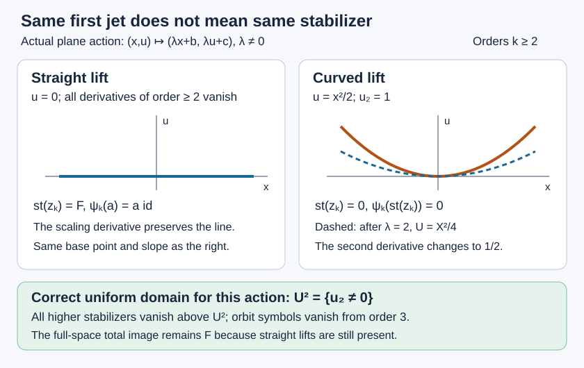
Open Figure 4.3 at full size (editable SVG)

Figure 4.3. At the origin, $u=0$ and $u=x^2/2$ have the same horizontal tangent. Their second derivatives are respectively zero and one. Scaling by $\lambda=2$ fixes the line but sends the parabola to $U=X^2/4$, whose second derivative is $1/2$. The displayed curves and derivative images are the exact objects used in Example 4.8; the figure is not a claim about the general theorem. Diagram and proof: GPT-6 Astra (OpenAI). CC0 1.0.
Proposition 4.9 (a uniform domain proved directly). For this action the invariant nonempty Zariski open subset
$$ U^2=\{z_2\in E^2:u_2\ne0\} $$has the following properties. Every higher jet above $U^2$ has zero infinitesimal stabilizer. Its orbit tangent spaces $\Delta_k(z_k)\subset T_{z_k}E^k$ have dimension three for $k\ge2$, and projection induces an isomorphism
$$ d\pi_{k,k-1}:\Delta_k(z_k)\xrightarrow{\ \sim\ } \Delta_{k-1}(z_{k-1}),\qquad k\ge3. $$In particular $\varpi_k=\ker(d\pi_{k,k-1}|_{\Delta_k})=0$ for $k\ge3$, and $\varpi_{k+1}\subset\varpi_k^{(1)}$ for every $k\ge2$ along every infinite jet above $U^2$.
Proof. The transformation rule $u'_2=\lambda^{-1}u_2$ proves invariance, and a parabola supplies a point of $U^2$. The stabilizer formula proves its vanishing at every higher lift. Subtracting the translation components from the scaling generator gives the following concrete spanning set for the orbit tangent space:
$$ \begin{aligned} &\Delta_k(z_k)=\operatorname{span}_F\{\partial_x,\partial_u,V_k\},\\ &V_k=\sum_{j=2}^k(1-j)u_j\partial_{u_j}. \end{aligned} $$The first two vectors are independent base-coordinate vectors. Above $U^2$ the $\partial_{u_2}$ coefficient of $V_k$ is $-u_2\ne0$, so the third vector is independent of them. Projection carries the three displayed vectors to the corresponding three vectors at order $k-1$. For $k\ge3$ these are bases on both sides, proving the claimed isomorphism and zero kernel. At orders zero and one the orbit tangent spaces are spanned by the two translations; hence $\varpi_1=0$, while $\varpi_2=F V_2$ above $U^2$. For $k=2$ the asserted inclusion has zero left side, and for every $k\ge3$ both sides are zero. This proves all orders on one specified finite-level domain. $\square$
The exclusion is mathematically necessary for a uniform conclusion over the full chart. For any $r\ge2$, the graph $u=x^r/r!$ at the origin has $u_2=\cdots=u_{r-1}=0$ and $u_r=1$. At order $r-1$ its orbit tangent space has rank two, and at order $r$ it acquires the nonzero vertical generator $(1-r)\partial_{u_r}$. Thus $\varpi_{r-1}=0$ and $\varpi_r\ne0$, so $\varpi_r\not\subset\varpi_{r-1}^{(1)}$. Such a failure can occur at an arbitrarily high order on the full space. For $r>2$ these jets lie outside the pullback of $U^2$, exactly as Proposition 4.9 requires. For $r=2$ the failure precedes its order-two starting bound. These examples distinguish a uniform finite-level restriction from a bound chosen separately along each infinite jet.
Scope. The general algebraic-pseudogroup application requires a proof of the existence of a suitable common finite-level invariant domain and the required higher-jet stabilizer lifting there, or supply another full-scope route to symbolic stabilization. This example settles neither that existence statement nor the relation-specialization comparison of Section 4.8. The hypotheses for the general application are those described in Sections 4.5–4.8.
4.10. Which representative makes the bracket a symbol contraction?
The domain issue of Section 4.9 is not the only input requiring proof. The next step in Kruglikov–Lychagin, Global Lie–Tresse theorem, version 3, Section 2.2, proof of Proposition 4, uses a bracket with a tangent-valued infinitesimal transformation to lower the order of an orbit symbol. Its displayed calculation is not justified merely by making the first derivative of the representative vanish. The following example has constant-rank stabilizers and surjective stabilizer projections at every order. Thus its issue is independent of the preceding rank-jumping example.
Example 4.10 (a lower-order term that the bracket retains). On the plane over $F=\mathbb R$ or $\mathbb C$, take the local transformations
$$ T_{f,g}(x,u)=(f(x),u+g(x)),\qquad f'(x)\ne0. $$Here $f,g$ are smooth in the real case and holomorphic in the complex case; all statements below also concern their finite formal jets. Direct composition gives
$$ T_{f,g}\circ T_{h,t}=T_{f\circ h,\,t+g\circ h},\qquad T_{f,g}^{-1}=T_{f^{-1},\,-g\circ f^{-1}}. $$Restrictions and locally agreeing maps glue, so these maps form a pseudogroup. Their equations in target coordinates are $X_u=0$ and $U_u=1$, with $X_x\ne0$. At each higher order the pure $x$ derivatives of $f$ and $g$ are free; the other derivatives are fixed by these equations. Every admissible jet therefore extends by arbitrary choices of the next two pure derivatives. The equations and these projection maps are algebraic, and the projections are surjective smooth bundles. Translations belong to the pseudogroup and prove transitivity on the plane. This verifies finite differential order and formal integrability directly.
Graph jets are an invariant chart because $f'\ne0$. Write
$$ E^k=\{(x,u,u_1,\ldots,u_k)\},\qquad u_j=h^{(j)}(x) $$for a graph $u=h(x)$. The infinitesimal fields are precisely
$$ X=\alpha(x)\partial_x+\beta(x)\partial_u. $$Put $\alpha_i=\alpha^{(i)}(x_0)$ and $\beta_i=\beta^{(i)}(x_0)$. The prolonged coefficient in the $u_j$ direction follows by differentiating the transformed graph: it is
$$ \beta_j-\sum_{i=1}^j {j\choose i}\alpha_i u_{j-i+1},\qquad j\ge1. $$Indeed the first variation at fixed transformed abscissa is $\beta-\alpha h'$. Differentiating it $j$ times and adding $\alpha_0 u_{j+1}$ for motion of the base abscissa cancels precisely the $i=0$ term. The base-coordinate coefficients are $\alpha_0$ and $\beta_0$.
Consequently the stabilizer of a graph jet is given by
$$ \begin{aligned} &\alpha_0=\beta_0=0, \beta_j=\sum_{i=1}^j {j\choose i}\alpha_i u_{j-i+1}\\ &(1\le j\le k). \end{aligned} $$The $k$ numbers $\alpha_1,\ldots,\alpha_k$ are arbitrary. These equations exhibit a rank-$k$ vector bundle over the whole graph-jet chart. The tangent line is spanned by $\partial_x+u_1\partial_u$; the derivative of $X$ sends this vector to $\alpha_1(\partial_x+u_1\partial_u)$. Its derivative image is therefore the whole scalar endomorphism line at every jet and every order $k\ge1$. A stabilizer at order $k$ lifts to any prescribed next graph jet by choosing $\alpha_{k+1}$ and then the required $\beta_{k+1}$. Both the full stabilizer projection and its derivative image thus lift, not merely at generic jets.
Now fix the flat graph $N=\{u=0\}$ at the origin and an integer $k\ge4$. Consider
$$ \begin{aligned} &X_*=x^2\partial_x+x^k\partial_u, X_0=x^k\partial_u,\\ &Z=X_*-X_0=x^2\partial_x, Y=\partial_x+x\partial_u. \end{aligned} $$These are genuine infinitesimal transformations, not just arbitrary formal fields. The flows of $X_0,Y,Z$ are respectively
$$ \begin{aligned} &(x,u)\mapsto(x,u+t x^k),\\ &(x,u)\mapsto(x+t,u+t x+t^2/2),\\ &(x,u)\mapsto\bigl(\frac{x}{1-tx},u\bigr). \end{aligned} $$For $X_*$ the flow is
$$ \begin{aligned} &(x,u)\mapsto\bigl(\frac{x}{1-tx},\; u+\frac{x^{k-1}}{k-1}\bigl((1\\ &-tx)^{1-k}-1\bigr)\bigr). \end{aligned} $$On a neighborhood where $1-tx\ne0$, differentiation in $t$ verifies the displayed generating fields, and parameter $-t$ supplies each inverse. All these maps have the required triangular form. Both $X_*$ and $X_0$ have zero ordinary first jet at the origin. Their prolongations vanish at the flat $(k-1)$-jet, and their common value at its $k$-jet is
$$ q_k=k!\,\partial_{u_k}\ne0. $$The difference $Z$ stabilizes every flat graph jet: its base coefficient vanishes at the origin and all its vertical prolonged coefficients vanish there. Also $Y(0)=\partial_x\in T_0N$. Nevertheless, direct differentiation of the vector-field coefficients gives
$$ \begin{aligned} &{}[Y,X_0]=k x^{k-1}\partial_u,\\ &{}[Y,X_*]=2x\partial_x+(k x^{k-1}-x^2)\partial_u. \end{aligned} $$At the flat $(k-1)$-jet the respective prolonged values are
$$ \begin{aligned} &{}[Y,X_0]^{(k-1)}=k!\,\partial_{u_{k-1}},\\ &{}[Y,X_*]^{(k-1)}=k!\,\partial_{u_{k-1}}-2\partial_{u_2}. \end{aligned} $$Because $k\ge4$, the second term survives projection to order $k-2$. Thus the second vector is not in the orbit symbol $\varpi_{k-1}$, even though the original $q_k$ is in $\varpi_k$ and the stated first-derivative normalization holds. In particular the bracket value is not determined by the class modulo the order-$k$ stabilizer. The difference of the two bracket values is exactly $[Y,Z]^{(k-1)}=-2\partial_{u_2}$.
This does not show that no good representative exists: $X_0$ is one. Nor does it refute symbolic stabilization for this pseudogroup. At a graph jet, varying $\beta_0,\ldots,\beta_k$ supplies every vertical jet direction, and varying $\alpha_0$ supplies the base $x$ direction. The orbit tangent space is all of $T E^k$. Hence $\varpi_k$ is the full vertical symbol, and its prolongation is the next full vertical symbol. What fails is the assertion that the indicated first-order normalization alone licenses the displayed bracket calculation. An additional choice or a different argument is required.
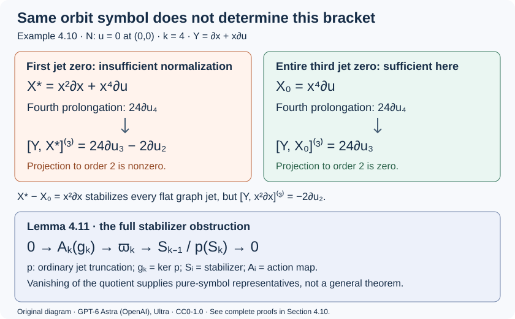
Open Figure 4.4 at full size (editable SVG)

Figure 4.4. The case $k=4$ of Example 4.10. Both fields represent $24\partial_{u_4}$ and have zero first jet. Only one of the displayed bracket values lies in $\varpi_3$. The lower panel is the exact sequence of Lemma 4.11, not an identification of its last term with a derivative image. Diagram and proofs: GPT-6 Astra (OpenAI). CC0 1.0.
Lemma 4.11 (the exact obstruction to a pure transformation-symbol representative). Let $L_k,L_{k-1}$ be finite-dimensional spaces of admissible infinitesimal transformation jets at a fixed base point, with surjective truncation $p:L_k\to L_{k-1}$. Suppose their action maps at compatible equation jets are
$$ \begin{aligned} &A_k:L_k\to T_{z_k}E^k,\\ &A_{k-1}:L_{k-1}\to T_{z_{k-1}}E^{k-1},\\ &d\pi\circ A_k=A_{k-1}\circ p. \end{aligned} $$Define $S_i=\ker A_i$, $\Delta_i=\operatorname{im}A_i$, $g_k=\ker p$, and $\varpi_k=\ker(d\pi|_{\Delta_k})$. Then there is a natural exact sequence of $F$-vector spaces
$$ \begin{aligned} &0\longrightarrow A_k(g_k)\longrightarrow\varpi_k \xrightarrow{\,\omega_k\,}S_{k-1}/p(S_k)\\ &\longrightarrow0, \omega_k(A_kv)=[p(v)]. \end{aligned} $$Proof. Compatibility implies $p(S_k)\subset S_{k-1}$ and $A_k(g_k)\subset\varpi_k$. If $A_kv\in\varpi_k$, then $A_{k-1}p(v)=0$, so the displayed class exists. Two choices for $v$ differ by an element of $S_k$, and hence give the same class. This proves well-definedness and linearity. Every $s\in S_{k-1}$ has a lift $v\in L_k$ because $p$ is onto; compatibility then puts $A_kv$ in $\varpi_k$, proving surjectivity of $\omega_k$. Finally $[p(v)]=0$ means $p(v)=p(w)$ for some $w\in S_k$. Then $v-w\in g_k$ and $A_k(v-w)=A_kv$. Conversely a vector represented in $g_k$ maps to zero. This proves exactness at every term. $\square$
In particular, every orbit symbol has a representative whose entire ordinary $(k-1)$-jet is zero if and only if $p(S_k)=S_{k-1}$. This concerns the full stabilizers, not just their first-derivative images. Equality of images under a linear map does not imply equality of its domain subspaces: in $F^2$, the subspaces $F^2$ and $F(1,0)$ have the same image under $(a,b)\mapsto a$, although their quotient has dimension one. This last observation is linear algebra, not a claimed pseudogroup realization. It explains why replacing full stabilizer lifting by derivative-image lifting requires its own proof.
Lemma 4.12 (a sufficient normalization, with all its hypotheses). Let $k\ge2$. Suppose an admissible infinitesimal field $X$ has zero ordinary $(k-1)$-jet at $a$, and its prolonged value at a submanifold $k$-jet $z_k$ is $q_k$. Let $Y$ be another admissible infinitesimal field, with $Y(a)=\xi\in\tau=T_aN$, and assume the admissible fields are closed under Lie brackets. Using symmetric multilinear derivative tensors, define
$$ \begin{aligned} &(\iota_\xi q_k)(v_1,\ldots,v_{k-1}) =q_k(\xi,v_1,\ldots,\\ &v_{k-1}), v_i\in\tau. \end{aligned} $$Then $[Y,X]$ has zero ordinary $(k-2)$-jet and
$$ [Y,X]^{(k-1)}_{z_{k-1}}=\iota_\xi q_k\in\varpi_{k-1}. $$Proof. Take coordinates $(x^1,\ldots,x^n,u^1,\ldots,u^r)$ centered at $a$ with $\tau=\{u=0\}$, so a representative submanifold is $u=h(x)$ with $h(0)=0$ and $Dh(0)=0$. All Taylor terms of the coefficients of $X$ below degree $k$ vanish. Write its leading homogeneous term as $X_k=(\alpha_k,\beta_k)$. Restricted to $N$, its normal characteristic is $\beta(x,h(x))-Dh(x)\alpha(x,h(x))$. Its degree-$k$ term is exactly $\beta_k(x,0)$: replacing a normal variable by $h(x)$ increases degree, and the second term has degree at least $k+1$. Its $k$th derivative tensor is therefore the normal restriction of $d^kX_a$ to $\tau^k$, which is $q_k$. All lower prolonged coefficients vanish.
In the coordinate convention $[Y,X]=DX\,Y-DY\,X$, the Taylor terms below degree $k-1$ vanish, and the term of degree $k-1$ is $DX_k\,\xi$. Terms involving $Y-Y(a)$ or $DY\,X$ have degree at least $k$. Restriction to $N$ and passage to its normal characteristic now identify the leading term with the directional derivative of $\beta_k(x,0)$ along $\xi$. In multilinear derivative-tensor notation this is precisely $\iota_\xi q_k$; the factorials cancel between the degree-$k$ and degree-$(k-1)$ Taylor conventions. The zero lower ordinary jet gives zero prolonged value at order $k-2$, and bracket closure supplies an admissible transformation. The stated vector therefore lies in $\varpi_{k-1}$. The argument concerns finite Taylor jets and applies equally to compatible formal infinitesimal jets with their jet bracket. $\square$
Lemmas 4.11–4.12 give a correct sufficient route: full stabilizer lifting at the required orders supplies pure transformation-symbol representatives, and their brackets give the contractions. The earlier inclusion $\varpi_k\subset S^k\tau^*\otimes\nu$ then implies $\varpi_k\subset\varpi_{k-1}^{(1)}$, since the first prolongation consists exactly of symmetric tensors whose contractions belong to $\varpi_{k-1}$. This route has a stronger hypothesis than stability of the first-derivative image. Its hypothesis has not been proved for the general action, and it is not asserted necessary for the desired inclusion.
Scope. The general theorem requires both a common finite-level invariant domain and a justified contraction argument on that domain. Full stabilizer lifting would suffice for the latter; alternatively one must supply a weaker, fully justified representative or Spencer-operator construction. Neither equality of total images, equality of first-derivative images, nor the constant-rank hypothesis by itself proves the particular bracket formula used in the cited argument. These observations do not prove the general theorem.
4.11. Contraction from a section and its Spencer difference
An infinitesimal transformation jet can vary with the submanifold jet at which it is evaluated. Differentiating such a section is different from taking the bracket of two fixed fields. The section variation supplies precisely the term that the calculation in Example 4.10 lacks.
Here is a finite-order construction. Work over the real or complex numbers in a graph chart with ambient coordinates $y=(x^1,\ldots,x^n,u^1,\ldots,u^r)$. A transformation jet has components $s_I^b$, representing the ordinary derivatives $\partial_y^I X^b$ of a vector field. Suppose its admissible jets $R_j\subset J^j(TM)$, at the orders used below, are the solutions of a finite-order homogeneous linear determining system and all its ordinary differential consequences. If its defining order is $q$, take $k\geq\max(2,q+1)$. All bundles and action maps in the statement are restricted to their indicated regular neighborhoods; no common neighborhood at infinitely many orders is assumed.
For an equation jet $z_k\in E^k$ over $a\in M$, put $z_{k-1}=\pi_{k,k-1}z_k$. Let
$$ A_j(z_j):R_j(a)\longrightarrow T_{z_j}E^j $$be the infinitesimal prolonged action, with compatible truncations. Define $\Delta_j=\operatorname{im}A_j$ and $\varpi_j=\ker(d\pi_{j,j-1}|_{\Delta_j})$, as in Section 4.10. The first prolongation condition for the equation means that each horizontal vector
$$ \begin{aligned} H_i(z_k)&=\partial_{x^i}+\sum_{|J|\leq k-1}u^\alpha_{Ji}\partial_{u^\alpha_J},\\ H_i(z_k)&\in T_{z_{k-1}}E^{k-1}. \end{aligned} \tag{4.13} $$Its projection to the ambient base is $v_i=\partial_{x^i}+u_i^\alpha\partial_{u^\alpha}$. If $s$ is a section of the pullback of $R_k$ to $E^{k-1}$, define the transformation $(k-1)$-jet
$$ \begin{aligned} (\mathcal D_i s)^b_I &=H_i(s^b_I)-s^b_{I+e_{x^i}}\\ &\quad-\sum_\alpha u_i^\alpha s^b_{I+e_{u^\alpha}},\\ &\hspace{1em}|I|\leq k-1. \end{aligned} \tag{4.14} $$The differentiation in the first term is of the coefficient function of the section. The other terms shift its ordinary transformation-jet index. Equation (4.14) is the horizontal Spencer difference. It is linear over constants, and satisfies $\mathcal D_i(fs)=H_i(f)\,p(s)+f\mathcal D_i s$ for a scalar function $f$, where $p$ is truncation to $R_{k-1}$. In particular it is a first-order differential operator on sections, not a linear map on their point values alone.
Lemma 4.13 (a section supplies the missing contraction term). Suppose the map
$$ \begin{gathered} B(z):R_k(a(z))\longrightarrow T_zE^{k-1},\\ B(z)=A_{k-1}(z)\circ p. \end{gathered} \tag{4.15} $$has constant rank near $z_{k-1}$. Let $a_k\in R_k(a)$ satisfy $B(z_{k-1})a_k=0$ and $A_k(z_k)a_k=q_k\in\varpi_k$. Assume that the first ordinary derivative of $a_k$ vanishes on $\tau=T_aN$. This derivative is intrinsically defined because the value of $a_k$ at $a$ is zero. Then, for every $\xi\in\tau$, there is an admissible transformation $(k-1)$-jet $b_{\xi,k-1}\in R_{k-1}(a)$ such that
$$ \begin{gathered} A_{k-1}(z_{k-1})b_{\xi,k-1}=\iota_\xi q_k,\\ \iota_\xi q_k\in\varpi_{k-1}. \end{gathered} \tag{4.16} $$No vanishing of the entire ordinary $(k-1)$-jet of $a_k$ is required.
Proof. First, (4.14) takes values in $R_{k-1}$. To check this rather than assume it, write any one of the defining linear equations for $R_{k-1}$ as
$$ \sum_{b,I}c_{bI}(y)t^b_I=0. \tag{4.17} $$These equations include all differentiated determining equations of order at most $k-1$. Since $s$ takes values in $R_k$, its truncated coefficients satisfy (4.17) identically on the neighborhood. Apply $H_i$. The coefficients $c_{bI}$ depend only on the ambient base, so their derivatives are $v_i(c_{bI})$. The same jet $s$ also satisfies the ordinary derivative of (4.17) in direction $v_i$, because its order is at most $k$. Subtracting the latter equality from the differentiated section identity gives
$$ \sum_{b,I}c_{bI}(y)(\mathcal D_i s)^b_I=0. \tag{4.18} $$This proves the assertion for every determining equation. It uses their actual differential consequences, not only the abstract vector spaces $R_k$ and $R_{k-1}$.
Next extend $a_k$ to a local section $s$ of $\ker B$. The constant-rank hypothesis permits this explicitly. Trivialize the source and target bundles, choose a nonzero maximal minor of the matrix of $B$, solve its pivot coordinates in terms of its free coordinates, and extend the free coordinates of $a_k$ as constant functions. Constant rank makes the remaining rows consequences of the pivot rows. If the rank is zero, the matrix is zero and every coordinate is free. The resulting section has $s(z_{k-1})=a_k$ and $B(z)s(z)=0$ throughout the chosen neighborhood. In the algebraic case the same construction is rational on the nonvanishing-minor chart. This is a finite-order chart, not an assertion that one minor works at every higher order.
Choose a representative graph $N$ of $z_k$. The coordinate change $\widetilde u=u-h(x)$ makes its jet flat through order $k$. This is an invertible change of ambient coordinates, with inverse $u=\widetilde u+h(x)$; it carries both the determining equations and their ordinary differential consequences to those for the transported vector fields. The action is conjugated by this coordinate change. Thus admissibility and the displayed action equality can be checked in these coordinates and then transported back. The normal symmetric tensor and its insertion are transported by the same tangent and normal linear maps. This coordinate step does not assert that the coordinate change belongs to the pseudogroup.
In the flattened coordinates all $u_J^\alpha$ through order $k$ vanish at $z_k$. Write $s^{x^j}_0=\alpha^j_0$ and $s^{u^\alpha}_J=\beta^\alpha_J$ for its pure tangential derivative components. The action at a flat graph jet has base components $\alpha^j_0$ and normal jet components $\beta^\alpha_J$. This follows from the prolongation formula of Section 2: every other term contains a graph derivative, and the terms containing an order-$(j+1)$ graph derivative cancel. Since $s$ belongs to $\ker B$, those action coefficients vanish identically on $E^{k-1}$.
Differentiate these zero coefficient functions by $H_i(z_k)$. At the flat jet this horizontal vector has zero component in every graph-derivative coordinate through order $k-1$. Therefore, differentiating the action formulas introduces no term from variation of a graph derivative. It follows that
$$ \begin{gathered} H_i(\alpha^j_0)=0,\qquad H_i(\beta^\alpha_J)=0,\\ |J|\leq k-1,\quad\text{at }z_k. \end{gathered} \tag{4.19} $$In these coordinates (4.14) consequently gives
$$ \begin{aligned} (\mathcal D_i s)^{x^j}_0&=-\alpha^j_{e_i}=0,\\ (\mathcal D_i s)^{u^\alpha}_J&=-\beta^\alpha_{J+e_i}. \end{aligned} \tag{4.20} $$The first equality uses the assumed vanishing of the derivative on $\tau$. For $|J|\leq k-2$ the second right side is zero, because $a_k$ acts trivially through order $k-1$. For $|J|=k-1$ it is exactly the negative insertion of the degree-$k$ normal derivative tensor representing $q_k$. Ordinary derivative coordinates agree with evaluation on repeated coordinate vectors, so no factorial factor is introduced.
We have proved that $A_{k-1}(\mathcal D_i s)=-\iota_{\partial_{x^i}}q_k$ and that this action projects to zero at order $k-2$. Set $b_{\xi,k-1}=-\sum_i\xi^i\mathcal D_i s$. Equation (4.18) proves that it is admissible; (4.20) proves (4.16). Transporting back gives the result in the original coordinates.
The resulting transformation jet may depend on the chosen extension $s$. Its action value does not: the calculation gives the same $\iota_\xi q_k$ for every such extension. Equivalently, two choices differ by an element of $\ker A_{k-1}$. The same conclusion holds for two normalized representatives of $q_k$. This proves the independence actually needed for the contraction. $\square$
Corollary 4.14 (first-derivative image lifting suffices for the section construction). In Lemma 4.13 also suppose $p:R_k(a)\to R_{k-1}(a)$ is onto. Put $S_j=\ker A_j(z_j)$. Since a stabilizing jet fixes $a$ and preserves $\tau$, its first derivative restricted to $\tau$ defines a linear map
$$ \begin{gathered} \rho_j:S_j\longrightarrow\operatorname{End}(\tau),\\ \rho_j(t)=dt_a|_\tau. \end{gathered} \tag{4.21} $$Assume $\rho_k(S_k)=\rho_{k-1}(S_{k-1})$ at the compatible jets in question. Then every $q_k\in\varpi_k$ has a representative satisfying Lemma 4.13, and
$$ \begin{gathered} \iota_\xi\varpi_k\subseteq\varpi_{k-1}\quad(\xi\in\tau),\\ \varpi_k\subseteq\varpi_{k-1}^{(1)}. \end{gathered} \tag{4.22} $$Proof. Choose $a_k$ representing $q_k$. Its truncation belongs to $S_{k-1}$. The image equality supplies $t_k\in S_k$ with $\rho_k(t_k)=\rho_{k-1}(p(a_k))$. Replace $a_k$ by $a_k-t_k$. Its action remains $q_k$ and its derivative on $\tau$ is zero. Lemma 4.13 applies. In the flattened coordinates used there, preservation of $\tau$ follows directly from $\beta_0=\beta_{e_i}=0$ for a stabilizing jet of order at least one; this also verifies that (4.21) is well typed. Finally $q_k$ is a symmetric normal tensor, and the defining condition for the first prolongation is precisely that every insertion lies in $\varpi_{k-1}$. $\square$
This corollary uses equality of first-derivative images. It does not infer surjectivity of the full stabilizer projection, and it does not validate the raw bracket of Example 4.10. Its construction uses a differentiable section of the kernel and its Spencer difference instead.
Example 4.15 (the section variation in the triangular action). For the pseudogroup of Example 4.10 and $k\geq4$, work at the flat graph jet. Define a section of the order-$k$ transformation jets over the order-$(k-1)$ graph chart by
$$ \begin{gathered} \alpha_0=\alpha_1=0,\qquad \alpha_2=2,\\ \alpha_j=0\ (3\leq j\leq k),\\ \beta_0=\beta_1=0,\\ \beta_j=j(j-1)u_{j-1},\\ 2\leq j\leq k-1,\\ \beta_k=k!. \end{gathered} \tag{4.23} $$All normal ordinary derivatives are zero, as required by the triangular determining equations. Equation (4.23) obeys the stabilizer equations through order $k-1$, so it is a section of $\ker B$. At the flat jet its value is the ordinary $k$-jet of $X_*$ from Example 4.10. There $H_x=\partial_x$ on the order-$(k-1)$ chart. Its Spencer difference satisfies
$$ \begin{aligned} (\mathcal D_xs)^{x}_1&=-2,\\ (\mathcal D_xs)^{u}_{k-1}&=-k!. \end{aligned} \tag{4.24} $$with all other pure tangential normal coefficients of orders at most $k-1$ zero. Hence its action at order $k-1$ is $-k!\partial_{u_{k-1}}$. The negative Spencer difference represents exactly the desired contraction, although its ordinary first derivative is nonzero. The unwanted order-two term of the raw bracket is absent. Here the section differentiation changes the transformation jet with the graph; it is not the jet of one fixed vector field as the graph varies.
The cancellation also holds away from the flat graph. Retain the lower coefficients in (4.23) and set $\beta_k=k(k-1)u_{k-1}+Q$, for a prescribed constant $Q$. The order-$k$ action is then $Q\partial_{u_k}$. Applying $H_x(u_j)=u_{j+1}$ in (4.14) gives
$$ \begin{aligned} &(\mathcal D_xs)^x_1=-2,\\ &(\mathcal D_xs)^u_j=-2j u_j\\ &(1\leq j<k-1),\\ &(\mathcal D_xs)^u_{k-1}=-2(k-1)u_{k-1}\\ &-Q. \end{aligned}\tag{4.25} $$The prolonged coefficient formula in Example 4.10 subtracts $-2j u_j$ at each positive order. Thus every coefficient below order $k-1$ cancels, and the last one is $-Q$. This is an identity on the entire graph chart. The same computation works for $k=2$, when the middle range is empty.
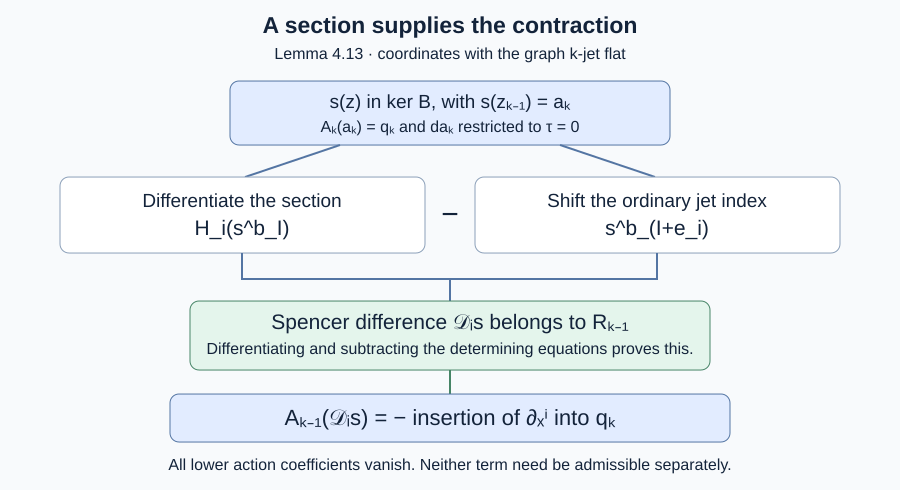
Open Figure 4.5 at full size (editable SVG)

Figure 4.5. The maps and hypotheses of Lemma 4.13. The two terms in the difference need not separately be admissible. Equations (4.18) and (4.20) establish admissibility and the action of their difference. Diagram and Section 4.11: GPT-6.1 Sol (OpenAI). CC0 1.0.
Scope of the contraction result. Lemma 4.13 gives the Spencer representative construction under its finite-order regularity and tangent-derivative normalization hypotheses. Corollary 4.14 obtains that normalization from adjacent first-derivative stabilizer-image equality. For the point actions specified in Section 4.16, Theorem 4.28 supplies these hypotheses on the entire higher inverse image of one invariant finite-level open. Examples 4.6 and 4.8 distinguish the argument from an inference based only on total images. Theorems 4.30 and 4.38 give the quotient-symbol cohomology and finite-generation consequences in that setting.
4.12. A common parameter domain for pure transformation symbols
The highest ordinary derivatives of a transformation act on submanifold jets through a particularly simple linear map. Its coefficients depend on the tangent plane, rather than on the higher derivatives of the submanifold. This permits a uniform specialization argument for that part of the orbit symbol. We first prove the elimination statement that makes the argument work in every degree.
Lemma 4.16 (monic elimination after one localization). Let $R$ be an integral Noetherian ring, let $K$ be its fraction field, and put
$$ \begin{gathered} S_R=R[t_1,\ldots,t_n,z_1,\ldots,z_r],\\ M_R=S_R^d. \end{gathered} $$Choose a subset $C$ of the coordinate basis of $M_R$, and set $P_R=\bigoplus_{e\in C}R[t_1,\ldots,t_n]e\subset M_R$. Let $I\subset M_R$ be generated by finitely many homogeneous vectors, with the basis vectors in degree zero. There is a nonzero $f\in R$ and a finite homogeneous set $G_C\subset I_f\cap P_{R_f}$ with the following property. For a unital map $\alpha:R_f\to L$ to a field, write $I(\alpha)=\operatorname{im}(I_f\otimes_{R_f}L\to M_L)$. Then
$$ \begin{aligned} I_f\cap P_{R_f}&=R_f[t]G_C,\\ I(\alpha)\cap P_L&=L[t]G_C(\alpha). \end{aligned} \tag{4.26} $$Here $I_f=I\otimes_RR_f\subset M_R\otimes_RR_f$, and $G_C(\alpha)$ denotes coefficientwise specialization. In particular, the intersection on the second line is the image of the intersection on the first line. No injectivity of an arbitrary tensor-induced map is assumed.
Proof. We give the finite Gröbner-basis argument, including its specialization step. A module monomial is a polynomial monomial times one coordinate basis vector. Order these monomials first by the exponent tuple of the $z$ variables, using a lexicographic monomial order, then by whether the component belongs to $C$ (a component outside $C$ is larger), and then by a monomial order in the $t$ variables and a fixed order within each component class. This is a well-order compatible with multiplication by polynomial monomials. Every monomial outside $P$ is larger than every monomial in $P$. Consequently, a vector whose leading monomial belongs to $P$ belongs entirely to $P$.
Over $K$, start with the given generators of $I_K$, discarding zero generators, and normalize leading coefficients to one. A division step subtracts a scalar monomial multiple of a generator when its leading monomial divides a term in the same component. Each subtraction strictly decreases the current leading monomial. If no subtraction applies, move that leading term to the remainder. Well-ordering proves that this process ends after finitely many steps, with no remainder monomial divisible by an available leading monomial.
For two monic vectors whose leading monomials lie in the same component, form their $S$-vector by multiplying each to their least common polynomial monomial and subtracting. Add a nonzero reduced remainder to the list, again made monic. Each addition strictly enlarges the submodule generated by the leading monomials, since the new leading monomial was not divisible by any previous one. The Hilbert basis theorem and the finite-module results proved in Noetherian and Artinian rings, Theorems 1.1 and 2.1 and Proposition 1.2 imply that the finite free $K[t,z]$-module is Noetherian. Thus only finitely many additions occur. Processing the finite list of remaining pairs then ends. All vectors remain homogeneous, since an $S$-vector and its reductions preserve the common total degree.
For completeness, the resulting monic list $G$ is a Gröbner basis. Represent a nonzero vector $h$ in its span as a sum of scalar monomial multiples of vectors of $G$. Choose such a representation with the smallest possible largest leading module monomial, and then the smallest number of summands attaining that maximum. If the maximal terms cancel, they have the same component. Pairing their cancelling coefficients rewrites their sum using monomial multiples of the corresponding $S$-vectors. The recorded reductions of those $S$-vectors express them using strictly smaller leading monomials. This decreases the chosen maximum or the number of its occurrences, a contradiction. Therefore the leading monomial of $h$ is divisible by one from $G$. This is the Gröbner property and also proves that division of an element of the span has zero remainder.
Only finitely many coefficients were used: those of $G$, the expressions of $G$ in the original generators, the expressions of the original generators in $G$, and the zero-remainder reductions of the finitely many $S$-vectors. Choose $f\ne0$ to clear the denominators of all these coefficients. Thus $G\subset M_{R_f}$ is still monic and generates $I_f$, and all the recorded identities hold over $R_f$. Localization is injective here because $R$ is integral and $M_R$ is free. The zero ideal causes no exception: take $G$ empty and $f=1$.
After any map $\alpha:R_f\to L$, each leading coefficient is still one. Thus no leading monomial of $G$ disappears. The recorded reductions of the $S$-vectors still have leading monomials strictly below the relevant least common monomial; terms can disappear on specialization, but cannot become larger. The cancellation argument above therefore proves that $G(\alpha)$ is a Gröbner basis of the image of $I_f$ in $M_L$.
Let $G_C$ consist of those members of $G$ with leading monomial in $P$. By the chosen elimination order they belong entirely to $P$. Divide an element of $I_f\cap P_{R_f}$ by $G$. Only members of $G_C$ can reduce its leading monomials, and their multipliers involve only $t$. Every subsequent remainder stays in $P$. The remainder is zero, since it is also an element of $I_K$ and no leading monomial of $G$ divides it. This proves the first line of (4.26), without division by a nonunit of $R_f$. In a specialization the same argument applies. Moreover a member outside $G_C$ cannot acquire a leading monomial in $P$, because its original leading coefficient remains one. Thus the same finite list $G_C(\alpha)$ gives precisely the specialized intersection. This proves the second line. Its homogeneous degree pieces also agree, because each generator and every identity used above is homogeneous. $\square$
We apply this result to actual transformation symbols. Fix a base point $a$, let $W=T_aM$, and write $\dim W=n+r$. Let $\mathfrak g_j\subset S^jW^*\otimes W$ be the ordinary symbols of the infinitesimal determining equations. Suppose these equations are a regular prolongation system of finite defining order $q$, as in Section 4.11. Thus contraction preserves the symbolic system and, from order $q$ onward, its higher symbols are the successive algebraic prolongations of $\mathfrak g_q$.
For an ordinary prolongation this description of the higher symbols follows directly from its equations. A variation with all lower transformation derivatives zero enters a differentiated determining equation only through the highest derivative tensor. Differentiating the order-$q$ equations therefore imposes precisely their contractions on that tensor. Iterating gives the successive algebraic prolongations; no assertion that an arbitrary projected equation has this property is being made.
For a tangent plane $\tau\subset W$ put $\nu=W/\tau$. Define the pure-action symbol
$$ \begin{aligned} \sigma_j(\tau):\mathfrak g_j&\longrightarrow S^j\tau^*\otimes\nu,\\ \sigma_j(p)&=\operatorname{pr}_\nu\circ p|_{\tau^j},\\ H_j(\tau)&=\operatorname{im}\sigma_j(\tau). \end{aligned} \tag{4.27} $$For $j\ge1$, this is exactly the action of transformation jets whose entire lower ordinary jet vanishes. To check it, flatten a representative graph through order $j$. Its highest normal variation is the normal restriction of the ordinary $j$th derivative tensor, by the Taylor argument in Lemma 4.12. Changing back gives (4.27). In degree zero the same formula simply defines a normal projection; no identification of this degree-zero space with the whole point-orbit tangent space is made.
Proposition 4.17 (uniform pure-symbol presentation). Let $B$ be an integral algebraic subvariety of the Grassmannian of allowed tangent planes at $a$, and work on a nonempty affine Grassmannian chart in $B$. There is a nonempty principal open subset $D(f)$ of that chart, a single graded relation submodule $J$ over its coordinate ring, and an integer $b\ge1$ such that at every field-valued point of $D(f)$:
- The degree-$j$ image of $J$ under specialization is exactly the annihilator of the actual pure-action symbol $H_j(\tau)$, for every $j\ge0$.
- The equality $H_{j+1}(\tau)=H_j(\tau)^{(1)}$ holds for every $j\ge b$.
The same $f$ and $b$ work in all these degrees. The parameter domain is at first-jet level; no higher submanifold-jet denominator is introduced.
Proof. Let $F$ be the real or complex coefficient field and $R$ the coordinate ring of the chosen affine chart of $B$. It is an integral Noetherian $F$-algebra: irreducibility gives the domain property, and the Hilbert basis theorem gives Noetherianity. The Grassmannian chart supplies free modules $T_R,N_R$ with
$$ \begin{gathered} W_R=W\otimes_FR,\\ W_R=T_R\oplus N_R. \end{gathered} \tag{4.28} $$The second summand represents the normal quotient. If necessary the nonvanishing chart minor has already been inverted. Set
$$ \begin{aligned} M_R&=\operatorname{Sym}_R(W_R)\otimes_RW_R^\vee,\\ P_R&=\operatorname{Sym}_R(T_R)\otimes_RN_R^\vee,\\ P_R&\hookrightarrow M_R. \end{aligned} \tag{4.29} $$The last inclusion uses $T_R\subset W_R$ and the inclusion of the covectors annihilating $T_R$. In the adapted coordinate bases it is precisely the coordinate submodule of Lemma 4.16: no normal polynomial variables and only normal-dual components.
Let $I_j$ be the annihilator of $\mathfrak g_j$ in $S^jW\otimes W^*$. Contraction of the symbolic system makes $I=\bigoplus I_j$ a module over $\operatorname{Sym}_F W$, by the pairing of Lemma 4.5. Algebraic prolongation gives $I_{j+1}=W I_j$ for $j\ge q$: taking annihilators in the defining contraction conditions for $\mathfrak g_j^{(1)}$ gives exactly this equality. Hence bases of the finitely many spaces $I_0,\ldots,I_q$ generate $I$. Base extension to $R$ and the adapted change of coordinates give a finitely generated homogeneous submodule $I_R\subset M_R$.
At every field-valued point of the chart, the degree-$j$ specialization of $I_R$ is the annihilator of the corresponding ordinary symbol. Indeed, before the adapted basis change, the symbol and its annihilator are fixed finite-dimensional $F$-vector spaces. Extending a basis and its dual basis preserves their annihilator equality under every extension field. The adapted change of basis and its inverse are defined throughout the chart and specialize to inverse matrices. This verifies the comparison directly; it does not assume that kernels generally commute with specialization.
The pairing of an element of $P_j$ with (4.27) is its pairing, under (4.29), with the original ordinary symbol. Thus
$$ H_j(\tau)^\perp=(I_R(\tau))_j\cap P_j(\tau). \tag{4.30} $$Apply Lemma 4.16 to $I_R\subset M_R$. On its principal open $D(f)$, put $J=I_{R_f}\cap P_{R_f}$. This is a module over $\operatorname{Sym}_{R_f}T_{R_f}$, since both terms of the intersection are preserved by tangent-variable multiplication. Equation (4.26), degree by degree, proves precisely the specialization comparison in the first assertion. Its generators and all the identities establishing it use only $R_f$, which depends on the tangent-plane parameters.
Finally apply Lemma 4.7 to the relation submodule $J\subset\operatorname{Sym}_{R_f}(T_{R_f})\otimes N_{R_f}^\vee$. The ring is a Noetherian $\mathbb Q$-algebra, and its two modules are finite free. The maximum degree of the finite homogeneous generating set gives one bound for every field specialization. Increasing this bound to at least one yields the second assertion in the actual positive degrees. If the normal rank is zero the symbols are zero and the same conclusion is immediate. Since $f$ is nonzero in the domain $R$, $D(f)$ is nonempty. This proves the proposition. $\square$
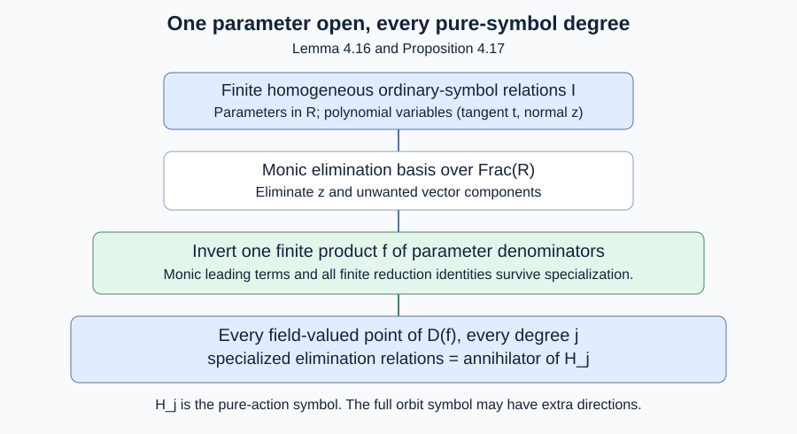
Open Figure 4.6 at full size (editable SVG)

Figure 4.6. Lemma 4.16 and Proposition 4.17. The ring variables $t$ describe the tangent directions; the eliminated variables describe the complementary ambient directions. The single parameter denominator $f$ is independent of symbol degree. Diagram and Section 4.12: GPT-6.1 Sol (OpenAI). CC0 1.0.
Example 4.18 (a genuine tangent-plane exceptional set). For Euclidean plane motions, use the infinitesimal fields $\partial_x,\partial_u,x\partial_u-u\partial_x$ and the tangent line $\tau=F(1,p)$. Their first ordinary symbol is spanned by the rotation matrix, and all ordinary symbols of degree at least two are zero, because all three fields are affine. The normal coordinate of a vector $(v_x,v_u)$ is $v_u-pv_x$. Applying the rotation matrix to $(1,p)$ gives $(-p,1)$, whose normal coordinate is $1+p^2$. Thus
$$ \begin{gathered} H_1(\tau)=\\ \begin{cases} S^1\tau^*\otimes\nu,&1+p^2\ne0,\\ 0,&1+p^2=0, \end{cases}\\ H_j(\tau)=0\\ (j\ge2). \end{gathered} \tag{4.31} $$Here $H_0=\nu$. On $D(1+p^2)$ the annihilator relation module, after choosing its one normal-dual generator, is $(t^2)\subset F[p,(1+p^2)^{-1}][t]$. At the two complex isotropic slopes its degree-one fibre acquires the extra relation $t$. There are no real exceptional slopes in this chart, but these complex field-valued fibres show why the specialization assertion must retain its parameter domain.
Comparison with the full orbit symbol. The constructed module controls $H_j$, not automatically $\varpi_j$. At a compatible higher equation jet, Lemma 4.11 gives
$$ 0\longrightarrow H_j\longrightarrow\varpi_j \longrightarrow S_{j-1}/p(S_j)\longrightarrow0 $$when the transformation-jet truncation is onto. Thus $\varpi_j^\perp\subseteq H_j^\perp$, and the possible additional orbit directions correspond to the full stabilizer-lifting quotient. Proposition 4.17 neither makes that quotient vanish nor proves a uniform formula for it. Nor is vanishing necessary for using the different contraction route of Corollary 4.14. The full Lie–Tresse argument still requires its common invariant domain, the stated regularity and first-derivative-image comparison or another general contraction argument, and a correct relation presentation for the full orbit symbols. This proposition does not prove the quotient, horizontal-rank, invariant-derivation, cohomology or order-induction assertions of the general theorem.
4.13. A rational orbit quotient at a fixed jet level
The algebraic group acting at a specified finite jet level has a rational orbit quotient. This assertion concerns that level. It does not assert regularity at every higher level above its domain.
Let $k=\mathbb C$, let $G$ be a smooth affine algebraic group, and let $X$ be an integral separated variety with a regular $G$-action. The group may be disconnected. An invariant rational function means an identity for the full action on its domains of definition. An orbit quotient below means a surjective morphism of varieties whose fibres on algebraically closed extension fields are the group orbits, together with the asserted identification of rational function fields. No assertion about a quotient of individual real-point orbits is implicit in this definition.
Theorem 4.19 (a finite-level rational orbit quotient). There are a nonempty $G$-invariant open subset $U\subset X$, an integral finite-type variety $Y$, and invariant rational functions $c_1,\ldots,c_N$ regular on $U$, giving a surjective morphism
$$ q:U\longrightarrow Y, $$such that, for every algebraically closed extension $\Omega\supset k$ and every $x,x'\in U(\Omega)$,
$$ \begin{aligned} q(x)=q(x')&\Longleftrightarrow x'\in G(\Omega)x,\\ k(X)^G&=k(c_1,\ldots,c_N)\\ &=k(Y). \end{aligned} \tag{4.32} $$The same construction is defined over $\mathbb R$ for a geometrically integral real variety and a geometrically reduced real affine algebraic group. Its orbit assertion is then about the action after extension to $\mathbb C$, and to algebraically closed extension fields. It need not distinguish different real orbits in one complex orbit.
Proof. We first give the algebraic ingredients, including the specialization and field-generation steps.
Monic elimination with parameters. Let $R$ be a finite-type integral $k$-algebra, $K=\operatorname{Frac}R$, and $J\subset R[g_1,\ldots,g_s,y_1,\ldots,y_m]$ a finitely generated ideal. There is a nonzero $f\in R$ such that elimination of the $g$ variables commutes with every field map $a:R_f\to L$:
$$ \begin{aligned} &J(a)=\operatorname{im}(J_f\otimes_{R_f}L\to L[g,\\ &y]),\\ &J(a)\cap L[y]=L[y]B_y(a),\\ &J_f\cap R_f[y]=R_f[y]B_y. \end{aligned}\tag{4.33} $$Here $B_y$ specializes to the reduced Gröbner basis of the eliminated ideal for one fixed monomial order on $y$.
To prove this, order monomials by a block order eliminating $g$ before $y$, and compute a monic Gröbner basis over $K$. The algorithm does not require homogeneous equations: division strictly decreases the monomial, and every added nonzero $S$-polynomial remainder strictly enlarges the leading-monomial ideal in $K[g,y]$. The Hilbert basis theorem, proved in Noetherian and Artinian rings, Theorem 2.1, makes this process finite. The cancellation argument of Lemma 4.16 proves the Gröbner criterion: a representation of a nonzero ideal element with minimum maximum monomial cannot have its maximum cancel, since an $S$-polynomial reduction replaces that cancellation by smaller monomials.
Reduce the finite basis so that every leading coefficient is one and no other monomial is divisible by a leading monomial of the basis. This uses finitely many divisions. Retain the finite identities expressing the resulting basis in the original generators and conversely, and reducing all its $S$-polynomials to zero. Invert the product $f$ of all coefficient denominators in these identities. Monic division and those identities are valid over $R_f$ and survive every map to a field. Every leading monomial survives, and the reduction inequalities survive. Thus the specialized list is a Gröbner basis of the specialized ideal. It stays reduced: deleting a coefficient that becomes zero introduces no forbidden monomial and does not change a leading monomial.
A basis element whose leading monomial has no $g$ has no $g$ anywhere, by the elimination order. Division of a polynomial in $y$ uses only these elements and only $y$ monomial multipliers. This proves (4.33). Finally a reduced monic basis is unique. Its leading monomials are the unique minimal monomial generators of the leading ideal. Subtract two basis elements with the same leading monomial: the difference is in the ideal and consists of standard monomials, so it must be zero. This also proves the asserted uniqueness after specialization. No freeness of an ideal on its generators has been assumed.
Vanishing and closure. We use the following point test over an algebraically closed field $\Omega$. A function in a reduced finite-type $\Omega$-algebra is zero if it vanishes at every $\Omega$-point. Here is a proof of the required Nullstellensatz. A field finitely generated as an $\Omega$-algebra is algebraic and finite over $\Omega$: choose an algebraically independent sublist $t_1,\ldots,t_r$ of its generators. After inverting one nonzero polynomial $h(t)$, the other generators satisfy monic equations over $A=\Omega[t_1,\ldots,t_r,h^{-1}]$. The given field is then integral over $A$, since it already contains $h^{-1}$. If a field is integral over a subring, that subring is a field: a monic equation for $a^{-1}$, multiplied by $a^{n-1}$, places $a^{-1}$ in the subring for every nonzero $a$ there. But if $r>0$, some $t_1-b$, $b\in\Omega$, does not divide $h$ and remains a nonunit of $A$. There are infinitely many such linear factors and only finitely many can divide $h$. Thus $r=0$, and algebraic closedness makes the field equal to $\Omega$.
Every maximal ideal of a nonzero finite-type $\Omega$-algebra therefore gives an $\Omega$-point. If $p$ vanishes at every point of the zero set of an ideal $I$, the ideal $(I,zp-1)$ in one extra variable is the unit ideal; otherwise a maximal ideal would give a point with $p\ne0$. Substitute $z=p^{-1}$ in an expression for 1 and clear denominators to obtain $p^r\in I$ for some $r$. For radical $I$ this gives $p\in I$. This proves the point test and identifies the kernel of a coordinate map from a reduced affine variety with the ideal of the closure of its image.
We shall also use the point test for products. A tensor in the product of two reduced finite-type $\Omega$-algebras can be written $\sum_i a_i\otimes b_i$ with the $b_i$ linearly independent over $\Omega$. If it vanishes at all pairs of points, then for each point of the first factor the point test in the second factor gives $\sum_i a_i(x)b_i=0$. Independence gives $a_i(x)=0$ for every $i$ and $x$, and the point test gives $a_i=0$. Thus product functions are determined by pairs of points; in particular the product algebra is reduced, since every nilpotent vanishes at those points. The same argument proves that a reduced finite-type algebra over an algebraically closed field stays reduced after any field extension: write a tensor as a linear combination of elements of the original algebra with linearly independent field coefficients, and evaluate at the original field's points. A nilpotent has zero evaluation, forcing all its original coefficients to vanish. The same statements on affine charts apply to varieties.
The family of orbit ideals. Choose a nonempty affine open $V\subset X$ and write $R=k[V]$. Embed $V$ in an affine space with coordinates $y$, and embed the affine group $G$ in an affine space with coordinates $g$. The graph
$$ \Gamma=\{(g,x,y)\in G\times V\times V:y=gx\} $$is closed in $G\times V\times V$: it is the restriction of the graph of the morphism $G\times V\to X$, and $X$ is separated. Thus it has a finite ideal $J$ in $R[g,y]$. It is also isomorphic to the open subset $\{(g,x):gx\in V\}$ of $G\times V$. At every field-valued $x$ its fibre is the open subset $\{g:gx\in V\}$ of $G$. In particular it is reduced after extension to an algebraically closed field and is nonempty, because it contains the identity.
Apply (4.33). For every algebraically closed extension $\Omega$ and $x\in V_f(\Omega)$, the list $B_y(x)$ is the reduced basis of the ideal of
$$ \overline{G(\Omega)x\cap V_\Omega}^{\,V_\Omega}. \tag{4.34} $$Indeed the fibre of the graph is exactly the indicated orbit-map domain, and the preceding point test identifies its elimination ideal with the closure ideal. This treats all components of $G$; no component has been discarded by choosing a single group-coordinate denominator.
Let $c_1,\ldots,c_N\in R_f$ be the nonconstant coefficients of $B_y$. Two points in $V_f(\Omega)$ have equal coefficient tuples if and only if the closures (4.34) are equal. Equality in the forward direction follows from equality of the bases; in the reverse direction it follows from uniqueness of the reduced monic basis. If the list has no nonconstant coefficients, its coefficient tuple is the unique point of the zero-dimensional affine space.
Orbits and their closures. Every algebraic-group orbit is open in its closure. To see this without a connectedness assumption, its orbit map has constructible image by Chevalley's theorem, AG-MO, Theorem 4.2. A dense constructible subset contains a nonempty relatively open subset of its closure. For completeness in the reducible case, remove the intersections of the finitely many irreducible components; on a component met densely, the irreducible constructibility criterion gives such an open subset away from the other components. Choose a point of that subset in the orbit. Every other point of the orbit is its translate. Translates preserve the orbit closure, and the translates of the chosen relatively open subset cover the orbit. Their union is therefore relatively open.
The intersection of an orbit with $V_\Omega$ is likewise open and dense in its closure there. Two such intersections with the same closure meet: two open dense subsets of any nonempty space have nonempty intersection. Since group orbits are disjoint, they must be the same orbit. Thus the coefficient tuple separates the $G(\Omega)$-orbits meeting $V_f(\Omega)$. Points already in the same orbit give the same tuple. It follows also that each $c_i$ is an invariant rational function for the full group.
Generation of the invariant field. Put $F=k(c_1,\ldots,c_N)\subset k(X)^G$ and $K=k(X)$. The reduced orbit basis $B_y$ has its coefficients in $F$. If $h=p(x)/r(x)\in k(X)^G$, choose representatives $p,r\in k[y]$ for its numerator and denominator on $V$, with $p(x),r(x)\ne0$ for $h\ne0$. The zero function needs no argument. Invariance on the graph gives
$$ \begin{gathered} r(x)p(y)-p(x)r(y)\\ \in J_K\cap K[y]. \end{gathered} \tag{4.35} $$This is an identity of rational functions on the graph, including each group component. Reduce $p(y)$ and $r(y)$ by the monic basis $B_y$. Their normal forms $A(y),C(y)$ have coefficients in $F$, because the input coefficients are in $k$ and monic division uses only coefficients of $B_y$. Neither normal form is zero. Otherwise the corresponding polynomial belongs to the generic orbit ideal, and evaluation at the identity point $y=x$ would give $p(x)=0$ or $r(x)=0$ in $K$. Reducing (4.35) now gives
$$ r(x)A(y)=p(x)C(y). $$Choose a monomial whose coefficient $C_\alpha$ is nonzero. Comparing that coefficient yields
$$ h=\frac{p(x)}{r(x)}=\frac{A_\alpha}{C_\alpha}\in F. \tag{4.36} $$This proves $k(X)^G=F$, with no appeal to a quotient theorem or to orbit separation by infinitesimal invariants.
An invariant open domain and a finite-type target. For $k=\mathbb C$, set $U_1=\bigcup_{g\in G(k)}gV_f$. This is a nonempty invariant open subset. Define $c_i$ on $gV_f$ by transporting its regular function from $V_f$. On an overlap the two preimages are in the same orbit and their coefficients agree, by the orbit comparison. The functions therefore glue to regular invariant functions on $U_1$. They define a morphism $q_1:U_1\to\mathbb A^N$. Their geometric fibres are single orbits: move any pair of points to $V_f$ and use the coefficient comparison. The same construction holds over every algebraically closed extension. Indeed $U_1$ is quasi-compact, so finitely many of the displayed translates cover it, and this cover remains a cover after extension. Its invariance also persists: the closed complement is stable under $G(k)$, and the point test on the reduced product of that complement with the smooth group makes this an identity for the algebraic action. It therefore holds after every field extension.
Let $\overline Y$ be the closure of the image. It is integral, and its function field is $k(c_1,\ldots,c_N)$. Chevalley's theorem and the dense-constructible criterion give a nonempty open $Y\subset\overline Y$ contained in the image. Set $U=q_1^{-1}(Y)$. This is nonempty, open and invariant, and $q=q_1|_U$ is surjective. Geometric surjectivity follows too: a nonempty finite-type fibre remains nonempty under field extension, and a nonempty finite-type scheme over an algebraically closed field has a point by the point test proved above. These are the required properties.
For real data, perform the finite elimination over $\mathbb R(X)$. Its identities and monic bases remain valid over algebraically closed extension fields. The complex invariant open $U_1$ is stable under conjugation. Its closed complement is consequently defined over $\mathbb R$: on a real affine chart its ideal is stable under conjugation, and the real and imaginary parts of its elements generate the same ideal after extension to $\mathbb C$. The same argument descends the regular coefficient functions and the image closure. Choose the target open contained in the image over $\mathbb R$ by Chevalley's theorem. The normal-form proof (4.35)–(4.36) applies over $\mathbb R$ as written. All orbit comparisons remain geometric comparisons. This proves the real assertion. $\square$
Application to finite equation jets. At a fixed $a\in M$ and fixed order $j$, suppose that the algebraic equation fibre $X=E^j_a$ is integral over $\mathbb C$, or geometrically integral over $\mathbb R$, and that the affine algebraic isotropy group $G=G^j_a$ acts regularly on it with the corresponding group hypotheses of the theorem. The theorem constructs its finite-type rational orbit quotient and invariant field, including disconnected isotropy. It imposes no conclusion about a common domain for the actions at all larger orders. In particular it does not establish the regularity or image equality assumed in Corollary 4.14, or the full orbit-symbol comparison in Section 4.12.
Example 4.20 (disconnected and real actions). The two-element group acting on the line by $x\mapsto-x$ has orbit ideal $(y^2-x^2)$ at a generic point. Its coefficient gives $x^2$, and (4.36) gives $k(x)^G=k(x^2)$. Its Lie algebra is zero, so infinitesimal invariance alone would give the wrong field. For $\mathbb G_m$ acting on the plane by $(x,y)\mapsto(\lambda x,\lambda^{-1}y)$, the locus $xy\ne0$ has orbit equation $XY=xy$, and its invariant field is $k(xy)$. Finally $\mathbb G_m$ acting on the real punctured line by $x\mapsto\lambda^2x$ has one geometric orbit and constant rational invariant field, but two real-point orbits, distinguished by sign. The theorem's real assertion makes precisely this distinction.
The orbit-basis construction and coefficient rewriting are treated in Evelyne Hubert and Irina A. Kogan, Rational invariants of a group action. Construction and rewriting, author's manuscript, Proposition 2.7, Theorem 2.14, Lemma 2.15 and Theorem 2.16. Equations (4.33)–(4.36) supply the elimination, specialization, separation and rewriting arguments used here.
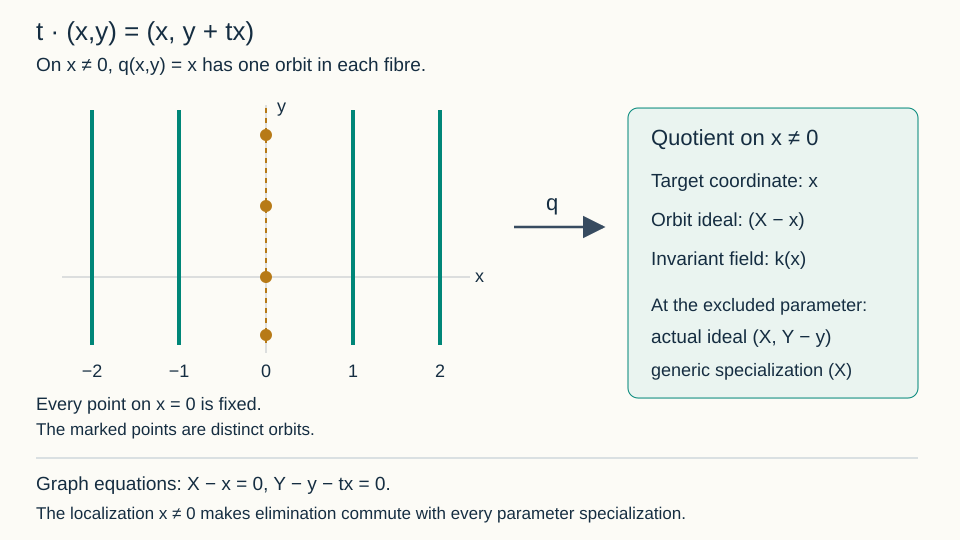
Open Figure 4.7 at full size (editable SVG)

Figure 4.7. The exact additive action of Exercise 8. The nonzero-$x$ vertical lines are fibres of its orbit quotient. Points marked on the excluded line represent different fixed-point orbits. Diagram: GPT-6.1 Sol (OpenAI). CC0 1.0.
4.14. Horizontal rank and derivations modulo the common annihilator
An invariant derivation need not have a group-invariant horizontal vector field as its representative. The relevant vector space is the horizontal space divided by the directions that annihilate every invariant. We construct that quotient and its derivations on one finite-level domain.
First work with an integral algebraic equation-jet tower $X_j$ over a characteristic-zero field $k$, with dominant projections. Write $K_j=k(X_j)$ and $K_\infty=\bigcup_jK_j$. In a graph chart the commuting total derivatives $D_1,\ldots,D_n$ send functions of order $j$ to functions of order at most $j+1$. They send regular functions to regular horizontal differentials on the next jet level. Put
$$ d_h f=\sum_{a=1}^nD_a(f)\,dx^a. $$Let $F\subset K_\infty$ be the field of full-group rational differential invariants. The actions at finite levels, including their actions on the horizontal bundle $\tau$, are regular. The horizontal differential is covariant under them. Indeed the inverse graph-transversality matrix in Section 2 transforms the total derivatives, while its inverse transforms the horizontal coframe; their contraction is unchanged. Consequently $d_h(g^*f)=g^*(d_hf)$. All invariance assertions below concern these full actions, including their disconnected components.
Theorem 4.21 (one domain for horizontal rank). There are an integer $\ell$, invariants $I_1,\ldots,I_r$ of orders at most $\ell-1$, and a nonempty invariant open $U\subset X_\ell$, with $0\le r\le n$, such that the following holds at every higher jet above $U$. The horizontal differentials of all invariants defined there span exactly
$$ \begin{gathered} W=\operatorname{span}\{d_hI_1,\ldots,d_hI_r\},\\ \operatorname{rank}W=r. \end{gathered} \tag{4.37} $$More precisely, at order $j\ge\ell$, use invariants of orders at most $j-1$ regular near the projected jet. Their evaluated horizontal differentials span the pullback of the same rank-$r$ subbundle on $U$. Its annihilator $L\subset\tau$ has rank $n-r$, and $\tau/L$ is canonically dual to $W$. These assertions hold at algebraically closed field-valued points, including nongeneric higher jets above $U$.
Proof. Over the field $K_\infty$, the horizontal cotangent space has dimension $n$. The span of $\{d_hJ:J\in F\}$ therefore has a basis selected from that set, say $d_hI_1,\ldots,d_hI_r$. One obtains such a basis by successively adjoining a member outside the preceding span. This can happen at most $n$ times, so only finitely many invariants and finite jet orders are used. Choose $\ell$ large enough for all these horizontal forms and for the functions themselves to have the stated orders.
Take the locus where the $I_i$ are regular on their defining lower levels, their horizontal forms are regular at level $\ell$, and these forms are independent. It is a nonempty open: on an affine bundle chart independence is the nonvanishing of one of finitely many $r$-row minors, and at least one such minor is a nonzero rational function. Denominators and minors all occur at finite level. Use the full regularity and independence locus, rather than a selected minor chart, for $U$. Regularity is preserved by a regular isomorphism and independence by an invertible horizontal transformation. Since the $I_i$ are invariant and $d_h$ is covariant, this full locus is invariant.
For any $J\in F$, maximality of the chosen basis makes every $(r+1)$-row minor of the matrix with rows $d_hI_i,d_hJ$ zero in $K_\infty$. Choose a finite level containing the entries. Dominance injects its rational function field into $K_\infty$, so these minors are already zero rational functions at that finite level. Clear their denominators. On an integral affine chart the resulting numerators are zero elements of its coordinate ring; they therefore vanish at every field-valued point where the original entries are regular. This includes every compatible higher jet over $U$ at which $J$ is regular. The nonzero $r$-minor supplied by the chosen forms then forces $d_hJ$ to lie in their evaluated span. This proves the uniform assertion for every $J$ and every higher order; no intersection of infinitely many open subsets is taken.
On a minor chart, let $A_{ib}=D_{a_b}I_i$ be an invertible $r$-column submatrix. For each unselected column $c$, the vector
$$ \begin{gathered} Z_c=D_c\\ -\sum_{b,i}(A^{-1})_{bi}(D_cI_i)D_{a_b} \end{gathered} $$annihilates every $d_hI_i$. A vector in their common kernel has its selected coordinates uniquely determined by its unselected coordinates through this same formula. Thus the $Z_c$ are a free basis of the kernel, of length $n-r$. The map $v\mapsto(d_hI_i(v))_i$ is onto, with right inverse given by the selected columns of $A^{-1}$. It identifies the quotient with a rank-$r$ free module and identifies its pairing with the forms with the ordinary nondegenerate evaluation pairing. These kernels and pairings agree on overlaps, because their definitions use the same forms. They give the subbundle $L$, the quotient and the claimed duality. If $r=0$, every $d_hJ$ is zero by the same rational identity argument; take $W=0$ and $L=\tau$. $\square$
Corollary 4.22 (invariant differentiation on the quotient). On this domain there are $r$ derivations $\nabla_i:F\to F$, characterized, for every $J\in F$, by
$$ d_hJ=\sum_{i=1}^r\nabla_i(J)\,d_hI_i. \tag{4.38} $$They are represented locally by horizontal vector fields with coefficients of order at most $\ell$. Representatives differing by $L$ give the same operation on every invariant. The derivations commute on $F$. Every horizontal derivation preserving $F$, modulo those annihilating $F$, is uniquely an $F$-linear combination of the $\nabla_i$.
They also preserve the invariant algebra of functions rational through order $\ell$ and polynomial in higher graph-jet coordinates, with the equations imposed. On finite orders this operation sends order $m$ to order at most $m+1$ when $m\ge\ell$.
Proof. The coefficients in (4.38) exist and are unique by the basis property over $K_\infty$. Linearity and the Leibniz rule for $d_h$ make each coefficient operation a derivation. Apply a prolonged group transformation to (4.38). Both $J$ and the $I_i$ are invariant, and their horizontal differentials transform covariantly. Uniqueness gives $g^*\nabla_i(J)=\nabla_i(J)$ on their common domains, hence $\nabla_i(J)\in F$. This uses the full group action, not only infinitesimal invariance.
Here is an explicit representative and its order bound. Choose $r$ columns $a_1,\ldots,a_r$ for which
$$ A_{ib}=D_{a_b}I_i, \qquad\Delta=\det A\ne0. $$On that minor chart put
$$ \widetilde\nabla_i =\sum_{b=1}^r(A^{-1})_{bi}D_{a_b}. \tag{4.39} $$The index order is fixed by $\widetilde\nabla_i(I_j)=\sum_b A_{jb}(A^{-1})_{bi}=\delta_{ji}$. Pairing (4.38) with this vector field proves that its operation on $J$ is $\nabla_i(J)$. The inverse-matrix entries are cofactors divided by $\Delta$; all their jet variables have order at most $\ell$. A second choice of columns gives the same values on the $I_j$, so the difference of the two representatives belongs to $L$. Theorem 4.21 makes that difference annihilate every invariant. Thus the operations glue over the invariant domain, even if a particular minor or a particular representative is not invariant.
The commutator of two horizontal fields is horizontal. For $V=\sum_a v^aD_a$ and $H=\sum_b w^bD_b$, this follows directly from $[D_a,D_b]=0$:
$$ \begin{gathered} \bigl[V,H\bigr]\\ =\sum_{a,b}(v^aD_aw^b-w^aD_av^b)D_b. \end{gathered} \tag{4.40} $$For representatives of $\nabla_i,\nabla_j$, this bracket annihilates every $I_s$, since their derivatives are constants $\delta_{si}$. It lies in $L$ and therefore annihilates all of $F$. This proves commutation as derivations of $F$; it does not assert that the chosen horizontal fields commute. More generally, if $V$ annihilates $F$ and $H$ preserves it, then $[H,V]J=H(0)-V(HJ)=0$ for every $J\in F$. Thus the annihilating fields form a Lie ideal among the preserving fields, and brackets of the quotient classes are independent of representatives.
If a horizontal field $H$ preserves $F$, apply (4.38) to obtain
$$ H(J)=\sum_iH(I_i)\nabla_i(J). $$The coefficients $H(I_i)$ belong to $F$. The representation is unique, because evaluation on $I_j$ reads off its $j$th coefficient. This also proves that no nonzero $F$-linear combination of the $\nabla_i$ acts trivially. If $H$ preserves the stated rational-polynomial invariant algebra, the same coefficients belong to that algebra, since each $I_i$ belongs to it.
Finally, differentiation of $p/q$ introduces the denominator $q^2$, never a denominator in a new higher coordinate. A total derivative sends each higher jet coordinate $u_J^\alpha$ to $u_{J,a}^\alpha$. It therefore preserves the algebra obtained by allowing rational coefficients through level $\ell$ and polynomial higher coordinates. The equations are preserved by total differentiation because the equation is formally integrable. Multiplication by an inverse-matrix coefficient in (4.39) introduces only the low-level denominator $\Delta$. Thus $\nabla_i$ preserves the stated function class. Where an invariant function is regular above $U$, use a nonzero minor at that point; its representative differentiates regular functions there. The results consequently remain regular on the same inverse-image domain, despite possible poles of a different representative. Formula (4.39) uses coefficients of order at most $\ell$ and one total derivative, proving the filtration bound. For $r=0$ the preserving horizontal fields all annihilate $F$ and the quotient is zero. $\square$
Smooth point coordinates. The argument also applies to the fibrewise algebraic setting of Section 4.2, with smooth dependence on the point manifold and a transitive pseudogroup. Fix a point $a$. The invariant functions and their horizontal differentials restrict to rational functions and rational horizontal forms on the integral jet fibres over $a$. Work over the union of their fibre function fields for the finite-dimensional basis selection. Covariance and transitivity transport independence and all vanishing minors to every other point fibre: a transformation carrying $a$ to another point carries the same invariant functions and their horizontal forms. In particular a rational invariant vanishing on the fibre over $a$ vanishes on every transported fibre, so this restriction loses no invariant identity. The regularity and independence locus of the selected functions is open by smoothness in the point coordinates and the minor criterion, fibrewise Zariski open, and invariant. The same denominator clearing proves the assertion at every higher jet in each fibre. Matrix inversion, the chain rule and the quotient argument above have smooth coefficients in point coordinates and rational coefficients in finite jet variables. The proof therefore requires no algebraicity of the point coordinates. Integral fibre fields, the regular finite-level actions, the total-derivative structure and covariance are the hypotheses used here; none is inferred from an unproved stabilizer-rank assertion.
Example 4.23 (different representatives). For the translation action $(x,y)\mapsto(x+t,y-t)$, put $I=x+y$ and $V=\partial_x-\partial_y$. The invariant field is $k(I)$, $W=k(x,y)(dx+dy)$, and $L=k(x,y)V$. Both
$$ \begin{aligned} H_x&=\partial_x+xV,\\ H_y&=\partial_x+yV \end{aligned} $$represent $d/dI$. Neither field is invariant under all the translations. Their difference is $(x-y)V$, and $[H_x,H_y]=-(I+1)V$. Hence their commutator is generally nonzero as a vector field and zero as an operation on every invariant. Exercise 9 proves these assertions directly.
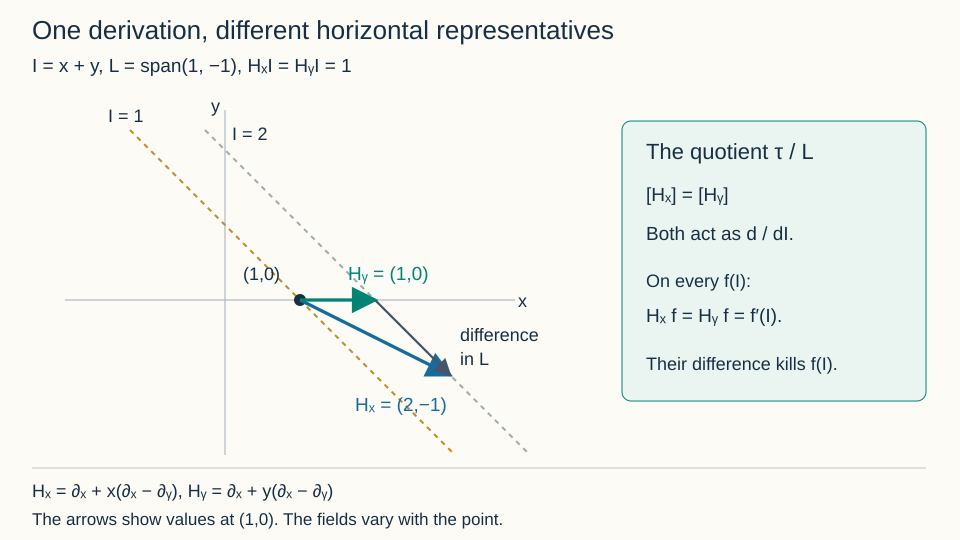
Open Figure 4.8 at full size (editable SVG)

Figure 4.8. The vectors $H_x=(2,-1)$ and $H_y=(1,0)$ at $(1,0)$ have the same class modulo $L=\operatorname{span}(1,-1)$. Both endpoints lie on $I=2$. The drawn arrows are values at this point, rather than global constant fields. Diagram: GPT-6.1 Sol (OpenAI). CC0 1.0.
Horizontal differentials, the quotient by their common annihilator and invariant derivations are treated in Kruglikov–Lychagin, arXiv:1111.5480v3, §§1.3–1.4 and 2.3. The proofs above supply the finite-domain rank argument, coefficient covariance, quotient independence, commutator and function-class arguments used here. They do not establish the common-domain orbit-symbol/stabilizer comparison of Sections 4.11–4.12, affine orbit bundles, symbol cohomology or the generation of all higher invariants.
4.15. Finite observations with equation-preserving normal directions
Tangency equations are differentiated along a graph. The determining equations for an ambient transformation are differentiated in every ambient direction. These two operations must be kept distinct. We prove a finite observation theorem that permits both operations, while allowing the normal directions on the equation space to have nonzero brackets.
Let $A$ be an integral $\mathbb Q$-algebra. Suppose it carries commuting derivations $D_1,\ldots,D_n$ and elements $u^a_\alpha$, where $1\le a\le c$ and $\alpha\in\mathbb N^n$, satisfying
$$ D_i u^a_\alpha=u^a_{\alpha+e_i}. \tag{4.41} $$Let $Z_1,\ldots,Z_c$ be further derivations of $A$. They need not commute with one another or with the $D_i$. Introduce coefficient-independent polynomial variables $p_1,\ldots,p_n,q_1,\ldots,q_c$. On polynomial rows in
$$ M=A[p,q]^t $$define additive operators, acting componentwise, by
$$ \begin{aligned} T_i&=D_i+p_i+\sum_a u^a_{e_i}q_a,\\ N_a&=Z_a+q_a. \end{aligned} \tag{4.42} $$The derivations in this formula act on coefficients only. The $T_i$ commute: the commutator of their multiplication terms is zero, and the remaining coefficient is $D_i u^a_{e_j}-D_j u^a_{e_i}=0$. No corresponding commutation assertion is made for the $N_a$.
Fix a finite list of rows $P$ in $M$. Let $H$ be the $A$-span of all words in the $T_i,N_a$ applied to $P$, including words of length zero. Fix polynomial rows $B_1,\ldots,B_s$, to be differentiated only by the $T_i$, and further polynomial rows $O_1,\ldots,O_m$, whose values are the observations. For $k\ge0$, let
$$ \begin{gathered} H_k=\operatorname{span}_A\{WP:\operatorname{length}W\le k\}. \end{gathered} $$Every displayed generating set is finite. For a nonzero $f\in A$ and an ordinary unital field map $\lambda:A_f\to L$, notation such as $H_k(\lambda)$ means the span of the evaluated generating rows. No derivations on $L$ are prescribed, and $\lambda$ is not required to commute with any derivation.
Write $S_O(b,\lambda)=\sum_jb_jO_j(\lambda)$ and
$$ \begin{gathered} \mathcal B_k(\lambda)=\operatorname{span}_L\{(T^\alpha B_a)(\lambda)\},\\ 1\le a\le s,\qquad |\alpha|\le k. \end{gathered} $$Theorem 4.24 (one finite bound for the observed relation spaces). There are a nonzero $f\in A$, an integer $M\ge0$ and a direct summand $C\subset A_f^m$, free of finite rank, such that every field map $\lambda:A_f\to L$, every $k\ge M$ and every $b\in L^m$ satisfy
$$ \begin{gathered} b\in C(\lambda)\quad\Longleftrightarrow\\ S_O(b,\lambda)\in H_k(\lambda)+\mathcal B_k(\lambda). \end{gathered} \tag{4.43} $$Here $C(\lambda)$ is the image of $C\otimes_{A_f}L$ in $L^m$. Both its dimension and its comparison with the finite rows are uniform over all these ordinary field maps. There are finitely many generators of $C$ with identities in the rows on the right at order $M$.
If these rows are equations on ordinary transformation jets and the $O_j$ are all coordinate rows through a fixed order $d$, the projections of their finite solution spaces to those $d$-jets are consequently the same for every $k\ge M$. Extra fixed linear constraints on the observed $d$-jets may be imposed after taking this projection.
Proof. We give the basis, localization and elimination arguments, including the treatment of polynomial observations.
Ordered coefficient bases. Write $F_\beta=N_1^{\beta_1}\cdots N_c^{\beta_c}$ in that fixed order. For a constant component row $e_j$, $F_\beta e_j=q^\beta e_j$. The rows
$$ b_{\alpha,\beta,j}=T^\alpha q^\beta e_j \tag{4.44} $$are an $A$-basis of $M$. In ordinary polynomial degree their leading terms are
$$ \left(p+u_1q\right)^\alpha q^\beta e_j. $$The linear substitution $(p,q)\mapsto(p+u_1q,q)$ is invertible over $A$. Subtract the leading degree in that basis and induct on the remaining degree. This proves existence and uniqueness of the coefficient expansion and also proves it after every coefficient specialization.
To see the normal action in this basis, use formal variables $s=(s_1,\ldots,s_n)$, put $E(s)=\exp(\sum_i s_iD_i)$, and set
$$ \Phi=\sum_i s_ip_i+ \sum_{a,\,|\gamma|>0}u^a_\gamma\frac{s^\gamma}{\gamma!}q_a. $$Then
$$ e^{sT}h=e^\Phi E(s)h. \tag{4.45} $$Indeed $D_i\Phi=\partial_{s_i}\Phi-p_i-\sum_a u^a_{e_i}q_a$ by (4.41). Differentiating the right side in $s_i$ therefore gives $T_i$ applied to it, and its constant term is $h$. Formal coefficient recursion gives the identity. Only division by positive integers is used.
Apply $N_a$ to (4.45) with $h=q^\beta e_j$ and read its coefficients. Suppress the fixed component $j$ and write $c_{b\gamma}={\alpha\choose\gamma}Z_a(u^b_\gamma)$. One obtains
$$ \begin{gathered} N_a b_{\alpha,\beta}-b_{\alpha,\beta+e_a}\\ =\sum_{b,\,0<\gamma\le\alpha} c_{b\gamma}b_{\alpha-\gamma,\beta+e_b}. \end{gathered} \tag{4.46} $$Order the basis first by $|\beta|$, then by $|\alpha|$, followed by additive monomial tie breakers and the component. Solving (4.46) for $N_ab_{\alpha,\beta}$ gives the unique leading term $b_{\alpha,\beta+e_a}$ with coefficient one. The other terms have smaller tangential degree. Multiplication of a coefficient by a derivation in the Leibniz rule also gives a smaller term. The operator $T_i$ has the exact basis shift $\alpha\mapsto\alpha+e_i$.
Polynomial observation copies. The observations may have coefficients on which the $Z_a$ act. A freely normally differentiated scalar copy of such an observation would impose unintended equations. Instead collect all the $B_a,O_j$ into a polynomial matrix $B$ of row degree at most $r$. Adjoin one dummy unknown $\eta$ per row, impose each $\eta=0$ and all its ordinary derivatives as determining rows, and form the unipotent matrix
$$ \mathcal C=\begin{pmatrix}I&0\\B&I\end{pmatrix}. \tag{4.47} $$Use a full coefficient-module copy with operators transported through the map $v\mapsto v\mathcal C$ to the enlarged ambient module. Its ordered basis maps to $T^\alpha F_\beta\mathcal C_j$. To decode a row, first decode its dummy components in (4.44), subtract the corresponding full dummy basis rows, and decode its remaining original components. This finite triangular subtraction proves that it is an $A$-basis, preserved by arbitrary coefficient specialization.
Give original components weight zero and dummy components weight $r$, denoting the component weight by $w_j$. Order this basis by the pair
$$ (|\beta|+w_j,\ |\alpha|), \tag{4.48} $$then by additive tie breakers. The tangential action is still an exact shift. We prove the normal leading shift; this is the point at which the full observation copy matters.
For a dummy row $B_j+e_{\eta_j}$, the elementary ordered expansion gives
$$ \begin{gathered} F_\beta B_j=q^\beta B_j+R_\beta,\\ \deg_{p,q}R_\beta\le |\beta|+r-1. \end{gathered} \tag{4.49} $$Every other summand uses at least one $Z$ on a coefficient and hence at most $|\beta|-1$ multiplication factors $q$. This uses no commutation between the $Z_a$.
Put $A_{ab}(s)=\sum_{|\gamma|>0}Z_a(u^b_\gamma)s^\gamma/\gamma!$ and $H_\beta=E(s)F_\beta B_j$. Subtract from $N_a$ of the dummy basis row its expected shifted dummy row and the dummy corrections in (4.46). The remaining original-component expression is $e^\Phi$ times
$$ \begin{gathered} R(s,p,q)=\\ Z_a(H_\beta)+q_aH_\beta-H_{\beta+e_a}\\ {}+\sum_b A_{ab}(s) \left(q_bH_\beta-H_{\beta+e_b}\right). \end{gathered} \tag{4.50} $$Its polynomial degree is at most $|\beta|+r$. In each parenthesis the apparent degree-$|\beta|+r+1$ term cancels by (4.49); a coefficient derivation adds no polynomial degree.
For any coefficient series $H(s,p,q)$ of polynomial degree at most $d$, each coefficient of $e^\Phi H$ has ordinary canonical normal degree at most $d$. To prove this for a monomial, eliminate each $p_i$ using
$$ \begin{gathered} p_ie^\Phi=\partial_{s_i}e^\Phi- \sum_b U_i^b(s)q_be^\Phi, \\ U_i^b(s)=\sum_\gamma u^b_{\gamma+e_i}\frac{s^\gamma}{\gamma!}. \end{gathered} $$The product rule, repeated finitely many times, gives $q$ monomials of degree at most $d$ times tangential derivatives of $e^\Phi$, with coefficient series. Reading a fixed coefficient is a finite operation and gives (4.44) with the asserted normal bound. Thus the original-component remainder in (4.50) has weighted normal degree at most $|\beta|+r$, strictly below the expected dummy leading degree $|\beta|+r+1$. The dummy corrections have smaller tangential degree. This proves the unit normal leading shift in (4.48) at all orders.
Finite monic localization. Work over $K=\operatorname{Frac}A$. In any finite direct sum of the above modules, place the entire ambient block ahead of the observation blocks. The resulting order is a well-order preserved by each leading shift. For any $K$-subspace stable under the operators, its leading monomials form an upward-closed subset of a finite polynomial module $K[t,q]^v$. The polynomial and module Noetherian theorems in AG-CA-03, Theorems 1.1 and 2.1, Proposition 1.2 give finitely many monic rows $G$ generating that leading monomial submodule.
Division cancels a leading term with an ordered operator multiple of a row of $G$. The leading shifts just proved make that cancellation valid and leave smaller terms. The well-order proves termination. A nonzero standard remainder cannot lie in the original stable subspace, since its leading monomial would have a divisor from $G$. Thus $G$ generates it by these ordered prolongations.
If the stable subspace is generated by finitely many initial rows, retain finite word expressions for the members of $G$ in those rows. Invert the finitely many coefficient denominators in these expressions and in $G$, with product $f\ne0$. All coefficient derivatives of $A_f$ remain in $A_f$. Every prolongation of $G$ is now in the original $A_f$-row span. Conversely every original word has a division remainder in $A_f$; that remainder is zero over $K$, hence was zero in $A_f$. This proves equality over $A_f$.
Division gives a coefficient-module direct sum of the relation span and the free module on its standard monomials. Uniqueness over $K$ proves uniqueness and linearity over $A_f$. After an arbitrary field map, the same splitting persists. The rows, their prolongations and their identities are evaluated after all operations have been performed over $A_f$; this argument does not ask an ordinary coefficient specialization to commute with differentiation.
Graph elimination and a finite normal bound. Map the sum of the ambient and full gauged observation copies to the enlarged ambient module modulo its determining rows. Send an ambient row to itself and an observation row through (4.47). The kernel is generated under the operators by the initial determining rows in the ambient block and the finitely many graph rows $(-\mathcal C_j,e_j)$. Every observation basis row is an ordered prolongation of a zeroth-order basis row, so subtracting these graph rows leaves exactly the ambient determining span. This proves the kernel assertion.
Apply the monic localization to this finite graph presentation. Eliminate the entire ambient block. Intersect the remaining relation space with weighted normal degree at most $r$. This coefficient space is a finite free tangential operator module: in an original component $|\beta|\le r$, and in a dummy component $\beta=0$. Its relation module is generated by the finitely many ordered normal shifts of $G$ whose leading weight is at most $r$, with arbitrary tangential prolongations. Indeed every divisor and normal multiplier in a division at that weight has the same bound; lower terms also remain within it. This argument also proves that the intersection commutes with every ordinary coefficient specialization.
There are now only finitely many normal-index/component positions. Tangential component elimination retains the zeroth-normal dummy positions representing the $O_j$ and $B_a$. The operators $T_i$ act as pure shifts on these positions. A further application of the same monic argument, with an elimination order on these finitely many components, gives their exact specialized tangential relations. This does not impose normal derivatives on any $B_a$.
Project these relations onto their $O$ components, forgetting the $B$ components. Projection of a row span commutes with specialization. Choose a final degree-compatible tangential monic basis of that projected module and clear its finitely many coefficient denominators as well. Its intersection with tangential degree zero is a finite free direct summand $C\subset A_f^m$, with the same specialized degree-zero intersection. Division proves this directly: only degree-zero leading rows can divide a degree-zero term, and their standard component positions give the complementary free summand. It follows that
$$ \begin{gathered} b\in C(\lambda)\quad\Longleftrightarrow\\ S_O(b,\lambda)\in H(\lambda)+\mathcal B_\infty(\lambda), \end{gathered} $$where $\mathcal B_\infty(\lambda)=\bigcup_k\mathcal B_k(\lambda)$.
Each of the finitely many degree-zero generators has a finite identity in determining words and tangential $B$ rows. Let $M$ bound all lengths and tangential orders in these identities. Their specializations prove containment in the right side of (4.43) for every $k\ge M$. The reverse containment follows from inclusion in the full row span just identified. This proves (4.43), including the finite identities.
Finally, in a finite-dimensional vector space the annihilator of the projection of a common kernel is the relation space among the observed coordinate rows modulo the original equation rows. For a direct proof, a linear functional on the observed coordinates vanishes on that projection exactly when its pullback vanishes on the common kernel; extend a basis of the kernel to a basis of the whole space to see that such a pullback is a linear combination of the equation rows. Taking annihilators twice proves equality of the projected solution spaces. Intersecting that fixed projection with further fixed observed constraints proves the last assertion. Empty lists, $n=0$, $c=0$ and zero-rank observation spaces are included in the same finite-module argument. $\square$
Ambient determining rows. Suppose $P$ has basic-point coefficients, and $Z_a$ acts on those coefficients as $\partial_{u^a}$, while $D_i$ acts as $\partial_{x^i}+\sum_a u^a_{e_i}\partial_{u^a}$. Then $N_a$ on a determining row is its ordinary $u^a$ prolongation, and $T_i-\sum_a u^a_{e_i}N_a$ is its ordinary $x^i$ prolongation. Conversely $T_i$ is the corresponding combination of ordinary prolongations. The span $H$ is therefore exactly the ordinary prolonged determining span: both contain the initial rows and are closed under the indicated operations and coefficient multiplication. If the determining system is formally integrable, its finite raw matrices have the actual admissible transformation-jet kernels. Theorem 4.24 then supplies uniform finite observations of the actual tangency system once the coefficient algebra and the equation-preserving lifts have been constructed. It does not by itself construct those lifts for an unspecified action.
Example 4.25 (curvature in a characteristic observation). On straight-line graph jets in three-dimensional affine space, write
$$ \begin{gathered} u_{xx}=v_{xx}=0,\qquad p=u_x,\quad q=v_x,\\ A=\mathbb Q[x,u,v,p,q]. \end{gathered} $$The equation derivations
$$ \begin{gathered} D=\partial_x+p\partial_u+q\partial_v,\\ Z_1=\partial_u+v\partial_p,\qquad Z_2=\partial_v \end{gathered} $$are regular on this coefficient algebra. No derivative of a higher graph coefficient is needed: all higher ones are zero, and $D(p)=D(q)=0$. The normal bracket is $[Z_1,Z_2]=-\partial_p$. For transformation components $(\xi,\beta,\gamma)$, the characteristic rows are
$$ Q_1=\beta-p\xi,\qquad Q_2=\gamma-q\xi. $$With the full zeroth-order gauge having rows $(\xi,Q_1,Q_2)$, the normal operators $N_1=Z_1+z_u$, $N_2=Z_2+z_v$ satisfy
$$ [N_1,N_2]Q_1=\xi. $$Indeed their multiplication variables commute with the coefficient derivations, so their bracket is $-\partial_p$ on coefficients. Applied to the graph row $(-Q_1,e_{Q_1})$, the full gauged action gives $(-\xi,e_\xi)$, which still maps to zero. A free scalar observation basis would instead have zero bracket on its constant basis and would give $(-\xi,0)$. That would falsely force $\xi$ into the tangency relation span.
To see the error geometrically, the line $(x,u,v)=(t,pt,qt)$ is preserved by the tangential translation with constant velocity $(1,p,q)$. Its characteristic values are $Q_1=Q_2=0$ and all their tangential derivatives are zero, while $\xi=1$. Thus the false scalar relation excludes an actual allowed translation. The full gauged copy retains it.
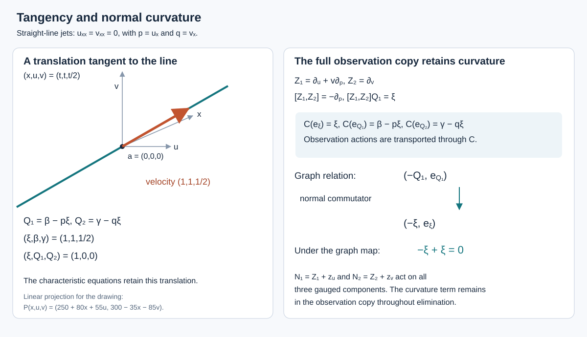
Open Figure 4.9 at full size (editable SVG)

Figure 4.9. The line and its translation are drawn by the explicitly displayed linear projection. The right-hand diagram is the exact graph relation of Example 4.25. The coefficient-basis map sends $e_{Q_1}$ to $\beta-p\xi$, so its normal curvature remains inside the observation copy. Theorem 4.24 explains why the full copy can be eliminated without introducing an additional tangency equation.
The distinction between ordinary coefficient specialization and differential specialization is also relevant to the common-domain problem in Kruglikov–Lychagin, Global Lie–Tresse theorem, arXiv version 3, Section 2.2. Theorem 4.24 proves its stated coefficient-module assertion directly. Applying it to all higher jets on one invariant finite-level domain still requires the actual coefficient algebra, raw determining comparison and transport of the resulting domain.
Theorem 4.24, Example 4.25 and Figure 4.9: GPT-6.1 Sol (OpenAI). Independently authored text and diagram, CC0 1.0.
4.16. One domain for the full symbols of a point action
We now consider the action induced by ambient point transformations. Let $G^j\subset D^j(M)$ be a transitive finite-order jet pseudogroup: $G^0=M\times M$, the adjacent projections are surjective smooth bundles, and above its defining order the equations are their ordinary prolongations. The fixed-point jet groups are algebraic. Let $E^j\subset J^j(M,n)$ be invariant, with smooth surjective projections, nonsingular irreducible algebraic fibres, and affine-bundle projections above its finite defining order. Above that order its levels are the ordinary prolongations of the regular reduced equation ideal. These are the hypotheses used below. Theorem 4.45 derives the actual action and characteristic comparison for a regular Cartan jet action specified on the equation. Algebraicity alone, without differential compatibility, is insufficient.
Over $\mathbb C$ the base is holomorphic and the algebraic fibres are integral. Over $\mathbb R$ the coordinate algebra of a fibre means its algebra of polynomial functions on the actual real algebraic set. This convention gives geometric integrality. Indeed, if $A$ is that algebra and the real set is irreducible, $A$ is a domain: a product vanishing everywhere expresses the set as a union of two algebraic closed subsets. In $\operatorname{Frac}A$, a root $f/g$ of $T^2+1$ would give $f^2+g^2=0$. At every real point both functions would vanish, so both are zero in $A$, contradicting $g\ne0$. Thus the monic quotient $A[T]/(T^2+1)$ embeds in the field $\operatorname{Frac}(A)[T]/(T^2+1)$ and is a domain. This quotient is $A\otimes_{\mathbb R}\mathbb C$. Its real points are Zariski dense because a complex polynomial vanishing there has both real and imaginary parts zero in $A$. If fibres are instead given as arbitrary real schemes, geometric integrality is an explicit hypothesis; a prime ideal such as $(x^2+y^2)$ must not be confused with the polynomial-function ideal $(x,y)$ of its real points.
Write $m=\dim M$, choose graph coordinates $(x^i,u^a)$, and let $\tau$ and $\nu=T_aM/\tau$ denote the graph tangent and normal spaces. The full orbit tangent space is $\Delta_k\subset T E^k$, and its vertical symbol is
$$ \varpi_k=\Delta_k\cap\ker d\pi_{k,k-1}. \tag{4.51} $$It includes contributions from transformation jets of every lower order.
Lemma 4.26 (formal coefficients preserving the equation). Fix a base point $a$ and a nonempty affine graph chart of an initial equation fibre. Let $R_j$ be the coordinate algebras of its higher inverse images. There are formal base coordinates $w$, a compatible formal family of admissible point transformations $g_w$ with $g_0=\mathrm{id}$ and $g_w(a)=w$, and the integral coefficient algebra
$$ A=\bigcup_j R_j[[w]] \tag{4.52} $$with the following properties. Every element has a fixed finite fibre order $j$. Formal transport by $g_w$ and its inverse identifies the actual equation ideals at each finite order. The total derivatives preserve $A$, commute and raise finite fibre order at most one. There are equation-tangent derivations $Z_a$ preserving each finite fibre level and acting as $\partial_{u^a}$ on all formal basic-point coefficients. The raw linearized determining equations have the actual admissible tangent-jet kernels and surjective adjacent projections.
Proof. First verify the assertion about raw equations. Choose regular local defining functions for $G^q$ near the identity section. Their differentials generate its conormal space. At the next prolongation, their ordinary total derivatives are affine in the new highest transformation derivatives. The solution fibre over an admissible lower jet is an affine space. Its homogeneous kernel is exactly its vertical tangent space, so the bundle hypothesis makes the highest coefficient matrix have constant rank. On a rank-minor chart solve the independent equations for that many highest coordinates. Every remaining affine equation has its linear part in their span; its residual constant vanishes on the lower system because every lower jet has a lift. The old regular equations and these independent new equations therefore generate the local vanishing ideal and have independent differentials. Induction proves that linearizing all raw prolonged equations gives the actual tangent space at every order. The same affine argument applies to the formally integrable equation $E$ above its defining order. It uses its regular reduced ideal, rather than an arbitrary list of equations with multiplicities.
The tangent maps of the source-fixed projections of $G$ at the identity are onto. A tangent lift has zero source component when its projection does, since the jet projection preserves source. Starting from each member of a basis of $T_aM$, choose compatible lifts at all orders. They are the ordinary Taylor coefficients of formal vector fields $X_1,\ldots,X_m$. If $P$ is any initial linear determining row, the coefficient of $y^\alpha$ in $P(X_b)(y)$ is its ordinary $\alpha$-prolongation at $a$, divided by $\alpha!$. Every such coefficient is zero. Thus these fields solve the determining system as full formal germs, and their point components form an invertible formal matrix at $a$.
Their formal flows belong to $G$. Here is a finite-order verification. Right composition with an arrow sends a source-fixed tangent vector at the target identity to a tangent vector at that arrow; differentiate the groupoid composition map to obtain this identity. Taking Taylor series preserves it. The resulting right-translated field on $G^j$ preserves its regular completed ideal: in coordinates where that ideal is $(s_1,\ldots,s_h)$, tangency says that each derivative of $s_\mu$ lies in the same ideal, and the product rule gives preservation of every ideal element. The formal flow recursion divides its degree-$r$ right-hand coefficient by $r+1$ to determine degree $r+1$. It therefore preserves the ideal term by term. The $j$-jet of the formal point flow satisfies this same finite coordinate equation, by differentiating composition with $\mathrm{id}+\epsilon X_b$, $\epsilon^2=0$. Its initial condition is the identity, so the coefficient recursion identifies the two flows. This proves admissibility at every formal source, with compatibility under jet projection; convergence is not asserted.
Compose the flows in a fixed order with $m$ parameters and apply them to $a$. The linear part of this point map is the chosen basis of $T_aM$. It has a formal inverse: at degree $r$, subtract the degree-$r$ error using the inverse linear matrix, after the lower degrees have been fixed. Reparametrizing the flow composition gives $g_w(a)=w$ and $g_0=\mathrm{id}$.
We next verify preservation of the whole algebraic equation fibre. At any finite $j$, the source-$a$ part of $G^j$ has a smooth local section $\rho_j(w)$ over the target base, with $\rho_j(0)=\mathrm{id}$. Successive local trivializations of the assumed bundle projections give such a section. The graph formulas of Section 2 make its action and inverse rational in the graph derivatives, with smooth base coefficients. Transporting the full polynomial ideal at $a$ by $\rho_j(w)^{-1}$ consequently describes the actual finite equation ideal over nearby base points. The graph-transversality denominator has constant term one. Thus these descriptions have bounded fibre degree, after retaining the finitely many initial chart denominators. The sections at different $j$ are only used to identify these finite ideals and need not themselves be compatible.
For every actual source-$a$ arrow near the identity, invariance of $E$ says that these ideal equations vanish after acting on every point of the fibre. They are rational identities in its coordinate algebra. In the real case the density proved above justifies the same identities after complexification. Take Taylor series in finite arrow coordinates and substitute the admissible formal arrow $g_w$. The identities remain true in $R_j[[w]]$; each transversality inverse is its geometric series, with a finite contribution at each fixed $w$-degree. Apply the inverse formal arrow for the converse. This identifies the whole fibre ideals, rather than a completion at one selected fibre point.
Above the initial affine chart, prolonged equation fibres are closed affine subsets of its polynomial higher-derivative coordinates, defined by the raw prolonged ideal. The regular-ideal argument already proved gives their actual reduced coordinate algebras. The projections are onto, so $R_j\to R_{j+1}$ is injective. Every $R_j$ is a finite-type coordinate algebra with only the finitely many initial chart elements inverted. This proves integrality of (4.52) and its fixed finite fibre order convention; it is not the larger ring $R_\infty[[w]]$.
Total differentiation of an order-$j$ graph function uses only graph order $j+1$. Conjugate it by the formal transport and its inverse to obtain its action on (4.52). A coefficient of formal degree $r$ uses only finitely many coefficients through degree $r+1$, so the action is defined on arbitrary series of bounded fibre order. The prolonged $X_b$ preserve each finite equation level by the ideal identities. Their point-component inverse matrix has formal basic-point coefficients and an invertible constant part. Take the corresponding combinations of the prolonged fields whose point values are the coordinate-normal directions. These are the required $Z_a$. Multiplying a prolonged field by a basic function is used here as an equation-tangent derivation; it is not asserted to be the ordinary prolongation of the resulting point field. This distinction permits noncommuting lifts.
Finally, pushforward by the full formal germ $g_w$ identifies finite admissible determining jets. The change is triangular in vector-field derivative order with invertible first Jacobians, and its inverse comes from $g_w^{-1}$. Nonzero vector-field values can require transformation derivatives through order $j+1$ to transform a $j$-jet; those derivatives are available and retained. Differentiating a graph deformation gives the invertible normal first-jet transformation of its characteristic, followed by an invertible triangular transformation of its tangential derivatives through each finite order. Thus the finite raw determining and tangency matrices are the actual transported matrices. This also proves the last assertion of the lemma. $\square$
Lemma 4.27 (the highest relations of the full orbit). For the coefficient algebra of Lemma 4.26, there are one nonzero coefficient denominator $f$, integers $M,q$ and a finite degree-compatible monic tangential relation presentation $K_Q$ such that, at the actual higher jets to which this presentation specializes,
$$ \begin{gathered} \operatorname{Ann}(\varpi_k)=(\operatorname{gr}K_Q)_k,\\ k>M. \end{gathered} \tag{4.53} $$The annihilator is in $S^k\tau\otimes\nu^*$. For $k>M$ and $k\ge q$ one has $\varpi_{k+1}=\varpi_k^{(1)}$. At each sufficiently high order the full action rank is constant in the presentation. For any preassigned finite ordinary observation order $d$, one may enlarge the same finite data so the low-$d$ tangency projections stabilize.
Proof. Let $P$ be the finite linear determining rows with basic-point coefficients. Lemma 4.26 supplies the derivations required in Theorem 4.24. Its final paragraph identifies their full mixed closure $H_P$ with the ordinary prolonged determining span. Use the characteristic observations
$$ Q^a=\beta^a-\sum_i u^a_{e_i}\xi^i. $$Stop the graph elimination in the proof of Theorem 4.24 after retaining only the characteristic tangential positions, before projecting onto degree-zero low observations. It gives their entire tangential kernel modulo $H_P$. Choose a final monic order comparing total tangential degree first and clear its finitely many coefficient identities. Call the resulting module $K_Q$. The same graph splitting and division prove that every ordinary field specialization has exactly the specialized relation kernel. Its finite-degree quotients have the standard tangential monomials as coefficient bases. This is a kernel comparison proved by elimination, rather than an appeal to tensoring a generic kernel.
At an actual formal transported point, let $F_kM$ be the ordinary-order-$k$ row space and $\mathcal P_k$ the span of the raw determining rows through order $k$. Formal integrability supplies the further strictness
$$ H_P\cap F_kM=\mathcal P_k. \tag{4.54} $$A row on the left annihilates every infinite admissible solution jet. Each admissible $k$-jet extends, by the surjective linear projections in Lemma 4.26, so the row annihilates the full finite admissible space. Extending a basis of that kernel shows that its annihilator is the raw row span, which proves (4.54). The converse is immediate. This argument is used only at the actual specializations supplied by that lemma; formal integrability of an unrelated ordinary field map is not assumed. Since $T^\alpha Q$ has ordinary transformation-derivative order at most $|\alpha|$, the rank of the $Q$ rows through $k$ on the raw determining space is the number of standard tangential monomials through $k$.
Include the $n$ point-value rows $\xi^i_0$. Theorem 4.24 supplies their split finite relation space $C$ modulo the determining and tangential $Q$ rows, with finitely many relation lifts $(c_r,q_r)$. Choose $M$ bounding their tangential orders and their actual raw determining orders. A mixed word of length $r$ on an initial order-$q_0$ determining row has raw order at most $q_0+r$; this offset is included in $M$. For every $k\ge M$, any relation among point rows and $Q$ rows through $k$ has its point component in $C$. Subtract the coefficient-linear combination of the fixed lifts with that component. The remainder is in $K_Q$. Above order $M$, the highest $Q$-coordinate image is therefore exactly $(\operatorname{gr}K_Q)_k$.
The actual prolonged graph-action rows satisfy
$$ \Phi^a_\alpha=T^\alpha Q^a+ \sum_i u^a_{\alpha+e_i}\xi^i_0. \tag{4.55} $$This is the graph-deformation formula of Section 2: differentiate the normal variation at fixed transformed abscissa, then add the motion of that abscissa. At $\alpha=0$ it reads $\beta^a=Q^a+\sum_i u^a_{e_i}\xi^i_0$. With point rows included, (4.55) is an invertible triangular row change leaving the highest vertical covector coefficients unchanged. The apparent graph order $k+1$ in separate characteristic rows cancels in the full action rows.
Restrict $\operatorname{Ann}(\Delta_k)$ to the ambient vertical space $V_k=S^k\tau^*\otimes\nu$. Its image is exactly $\operatorname{Ann}_{V_k}(\Delta_k\cap V_k)$. One inclusion follows by evaluation. For the other, a functional on $V_k$ vanishing on the intersection extends to $\Delta_k+V_k$ by declaring it zero on $\Delta_k$; the intersection condition makes this well defined. Extend a basis once more to the full ambient space. This proves the reverse inclusion. The intersection is the full symbol (4.51), so the preceding highest-relation calculation proves (4.53). The equation-symbol annihilators are already included because $\Delta_k\subset T E^k$; none are discarded.
Let $q$ bound the degrees of the finite monic rows of $K_Q$. Their highest homogeneous parts generate $\operatorname{gr}K_Q$: degree-compatible division cancels the highest degree using those parts, while differentiating a coefficient has smaller tangential degree. For $k\ge q$, every coefficient needed in degree $k+1$ has positive degree and has a tangent degree-one factor. Thus
$$ (\operatorname{gr}K_Q)_{k+1} =\tau(\operatorname{gr}K_Q)_k. $$The symmetric-multilinear pairing of Lemma 4.5 makes multiplication adjoint to insertion. Taking annihilators proves the prolongation equality.
The full action rank through $k$ is the $Q$ row rank plus $n-\operatorname{rank}C$, both fixed integers in this monic presentation. To obtain the last assertion, apply Theorem 4.24 also to all ordinary coordinate rows through the prescribed $d$. Its finite-dimensional annihilator argument gives the stable low-$d$ solution projections. Intersect with $\xi_0=0$ in that fixed observed space; $Q_0=0$ then imposes $\beta_0=0$ too. For $d\ge1$ the derivative restriction to $\tau$ is a fixed linear operation on these observed jets. Its images therefore agree at all adjacent sufficiently high truncations, without an assertion that whole stabilizers lift. $\square$
Theorem 4.28 (a common invariant domain for a point action). Under the hypotheses of this section, fix $d\ge1$. There are a finite integer $\ell$ and a nonempty invariant fibrewise Zariski-open $U\subset E^\ell$ such that every higher geometric jet above $U$ has the following properties:
- The full orbit tangent spaces have constant rank at each order $k\ge\ell$.
- Their point-fixing tangency kernels have the same low-$d$ projection at every further truncation. In particular, adjacent first-derivative stabilizer images on $\tau$ agree.
- For every $k\ge\ell$, $\varpi_{k+1}=\varpi_k^{(1)}$.
- Locally on $U$, all these high symbol annihilators are the field-valued images of one finitely generated homogeneous relation module over $\operatorname{Sym}(\tau)$. Its coefficients occur at finite level, and the presentations agree intrinsically on overlaps.
The choice of $\ell,U$ may depend on the preassigned $d$. There is no assertion of a single bound simultaneously for all ordinary observation orders.
Proof. Work first in the fixed fibre chart of Lemma 4.26. All finitely many coefficient localizations required in Lemma 4.27 have a product
$$ 0\ne f\in R_l[[w]] $$for one finite $l$. Choose a nonzero coefficient $h\in R_l$ in this series. For any geometric higher jet $b$ above $D(h)$, extend it to an infinite jet, enlarging its algebraically closed coefficient field $L$ when necessary. The onto affine-bundle projections permit the successive choices. Coefficient evaluation gives
$$ A_f\longrightarrow F=\operatorname{Frac}(L[[w]]), \tag{4.56} $$because $f(w,b)$ has the nonzero coefficient $h(b)$. Lemma 4.26 identifies these specialized finite matrices with the actual matrices at $g_w\cdot b$. Formal germ pushforward transports them back to the original $b$. This includes the low ordinary observation jets and the vertical symbol insertion maps, and all changes are invertible at each finite order. Matrix rank and equality of finite-dimensional linear subspaces are detected after a field extension by Gaussian elimination. The conclusions of Lemma 4.27 therefore hold at every such $b$ over $L$ itself. This does not evaluate a denominator inverse at $w=0$.
Choose $l$ above $M+1,q,d$ and all coefficient orders used. This gives the first three assertions over the entire higher inverse image of the same finite fibre open. In particular the raw orbit distributions are regular at every sufficiently high level, and the image equality has exactly the scope required in Corollary 4.14. That corollary supplies its Spencer representative construction on this domain as well. The direct highest-relation argument additionally gives the eventual equality of symbols.
We must put the relation coefficients on the original finite fibre. Choose a degree $N>M$, $N\ge q$. The tail of $\operatorname{gr}K_Q$ is generated in degree $N$: multiply its finitely many homogeneous generators of degree $e\le N$ by all monomials of degree $N-e$. Enlarge $l\ge N$ to contain their coefficients. Transport these finitely many degree-$N$ rows back by the dual vertical symbol matrix of $g_w$. That matrix and its inverse depend only on the first transformation jet and the graph tangent plane, since the highest graph derivative is multiplied by the normal Jacobian and the inverse tangent Jacobians; derivatives of those coefficients multiply lower graph derivatives. They therefore have entries in $R_1[[w]]$ and intertwine tangent multiplication. Clear all denominator powers with one power of $f$. The resulting finite rows lie in
$$ R_l[[w]][t]\otimes\nu^*,\qquad \deg_t=N. $$At every original $b$ above $D(h)$ their span over $F$ is the constant-in-$w$ space $\operatorname{Ann}(\varpi_N(b))\otimes_LF$.
If finitely many series in a finite-dimensional $L$-space have $F$-span $C\otimes_LF$ for a fixed $L$-subspace $C$, their coefficient span is exactly $C$. A functional annihilating $C$ annihilates every series and hence every coefficient, so each coefficient lies in $C$. Conversely, let $B$ be their coefficient span and choose a basis and complement of $B$ in the finite space. Each series belongs to $B\otimes_LF$, so $C\otimes_LF\subset B\otimes_LF$ and field faithfulness gives $C\subset B$. This proves the assertion.
Take all formal coefficients of the transported rows. They lie in the one finite free $R_l$-module $S^N\tau\otimes\nu^*$. Its coefficient submodule is generated by finitely many of them, by AG-CA-03, Theorems 1.1 and 2.1, Proposition 1.2. Quotients and localization preserve the Noetherian property: pull a submodule back before taking a quotient, and localize a finite generating list. Thus it applies to the coordinate algebra $R_l$. Let $I\subset R_l[t]\otimes\nu^*$ be the homogeneous module generated by that finite coefficient list in degree $N$. The coefficient-span argument proves
$$ \begin{gathered} \operatorname{image}(I_k\otimes_{R_l}L)\\ =\operatorname{Ann}(\varpi_k(b)),\qquad k\ge N, \end{gathered} \tag{4.57} $$inside the ambient symmetric covector space. Multiplication by any fixed tangent monomial commutes with coefficient extraction, so the degree-$N$ list works in every higher degree. Equation (4.57) is an image assertion proved at every actual point; a kernel after specialization is not substituted for it.
Saturate $D(h)$ by the full algebraic isotropy group $G_a^l$. Its translates are open and their union is invariant. An $l$-jet of a translating arrow lifts through every higher order by the bundle projections and hence to a compatible formal arrow. Applying it and its inverse transfers each conclusion to every higher extension over the translated open, with the same bounds. This includes disconnected isotropy. A finite number of these chart/translate opens cover the saturation: a finite-type algebraic variety is Noetherian, and every open in a Noetherian space is quasi-compact. For the latter implication, if a cover has no finite subcover, successively add an open containing a point outside the preceding finite union, contradicting the ascending chain condition on opens.
The degree-$N$ images on two charts have constant rank and the same intrinsic value at every higher extension. They are subbundles: on a nonzero rank-minor chart, row reduction expresses the image as the graph of a regular coefficient matrix; larger minors vanish identically because they vanish at all geometric points of a reduced coordinate algebra. On overlaps the two graph matrices agree at all geometric points, so they agree as regular functions. Hence the degree-$N$ subbundles glue, and their tangent-polynomial generated modules glue in every higher degree. This proves the finite-presentation assertion without requiring a global free frame.
Transport the isotropy-invariant open over all base points. It is independent of the chosen arrow because two such arrows differ by isotropy. Local smooth sections of the source-$a$ arrow bundle identify it with a product over a base neighborhood; it is therefore open, invariant and fibrewise Zariski open. No algebraic structure on a smooth base is inferred. Increase $\ell$ to include all the finite orders and charts above.
In the real convention, replace $h$ by $h\overline h$ if complex coefficients were used. This is a nonzero real coordinate function, so its nonvanishing locus meets the real fibre; it also lies in both complex nonvanishing loci. Intersect the finitely many opens with their conjugates before saturating. The saturation is conjugation stable. Its complementary ideal is generated by real and imaginary parts of a finite conjugation-stable generating list, so the domain is defined over $\mathbb R$. The density established at the start gives a nonempty real locus, and the geometric rank and symbol conclusions descend by field faithfulness. This completes all four assertions. $\square$
Example 4.29 (a nonlinear smooth-base transport). Let $H(0)=0$ and $H'(u)=e^{u^2}$. The coordinates $(x,H(u))$ are locally invertible since $H'$ is positive. Translations in these coordinates give
$$ X=x+b,\qquad H(U)=H(u)+c. $$They are transitive point transformations. Their first-order equations are $X_x=1$, $X_u=0$, $U_x=0$ and $U_u=e^{u^2-U^2}$. Every source and target point determines a unique jet at every order by differentiation, so the projections are surjective smooth bundles and the system is formally integrable. All fixed-point jet groups are trivial and hence algebraic, although the displayed base coefficients are not polynomials.
Straight lines in $(x,H(u))$ give the invariant equation
$$ u_{xx}+2u\,u_x^2=0. $$Put $p=u_x$. Its total derivative and a formal infinitesimal frame are
$$ \begin{gathered} D=\partial_x+p\partial_u-2up^2\partial_p,\\ X_1=\partial_x,\qquad X_2=e^{-u^2}\partial_u. \end{gathered} $$Higher graph derivatives are obtained by repeatedly applying $D$ to $p$, so they are polynomials in $u,p$. Each higher projection after order one has point fibres; all fixed-base equation fibres are affine lines. The prolongation of $X_2$ has $p$ coefficient $-2up e^{-u^2}$. Its normalized equation-tangent lift is
$$ Z=e^{u^2}\operatorname{pr}X_2 =\partial_u-2up\partial_p. $$It acts as $\partial_u$ on basic functions and is not the ordinary coordinate prolongation of $\partial_u$.
At $a=(0,0)$ use the formal target coordinate $u=w$ and source slope $p_0$. The arrow with $c=H(w)$ gives
$$ \begin{gathered} u=w,\qquad p=e^{-w^2}p_0,\\ u_{xx}=-2w e^{-2w^2}p_0^2. \end{gathered} $$The last series has zero constant term but coefficient $-2p_0^2$ at degree one. On $p_0\ne0$ it is nonzero in $\operatorname{Frac}(L[[w]])$, with inverse
$$ -\frac{e^{2w^2}}{2wp_0^2}. $$This displays exactly why coefficient selection in (4.56) cannot be replaced by evaluating the denominator at $w=0$.
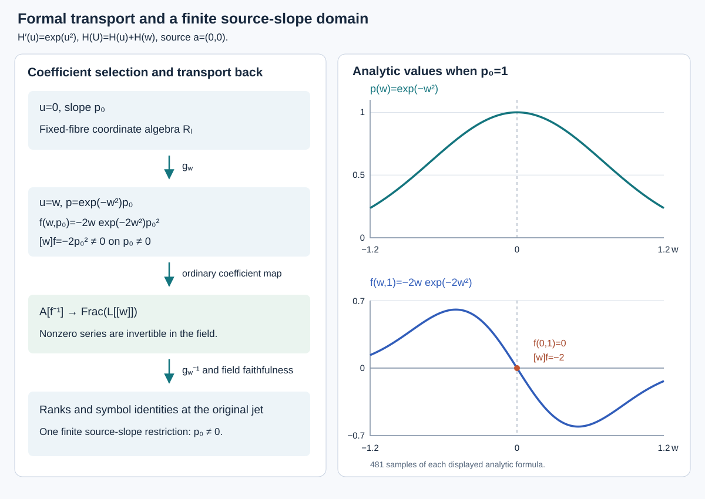
Open Figure 4.10 at full size (editable SVG) · Reproduce Figure 4.10 (Python)

Figure 4.10. The left-hand maps are the coefficient selection and faithful field extension in Theorem 4.28. The curves on the right are the analytic functions of Example 4.29 at $p_0=1$, sampled from the displayed formulas. The zero constant term of the second derivative is visible at the centre; its coefficient $-2$ selects the finite source-slope domain.
For this example the determining equations are $\xi_x=\xi_u=\beta_x=0$ and $\beta_u+2u\beta=0$. They give $\xi=b$ and $\beta=c e^{-u^2}$, so the raw admissible jet space has dimension two at every order. The invariant $I=e^{u^2}p$ is the line slope in $(x,H(u))$ and $D(I)=0$ on the equation. At each finite level the orbits are exactly its level sets: translate $x$ and $H(u)$ while retaining this slope. Thus there are no new higher symbols, and the full vertical orbit symbols are zero from order one onward. The horizontal rank of the invariant field is zero even though $I$ is nonconstant.
Theorem 4.28 establishes the common-domain and full-symbol assertions for the point actions specified in this section. Theorem 4.30 proves uniform quotient-symbol cohomology on a further common invariant domain. Theorem 4.38 gives the geometric affine quotient tower and low-rational/high-polynomial generation. The geometric-orbit convention remains in force; individual real orbits inside a complex orbit need not be separated by rational invariants.
Section 4.16 and Figure 4.10: GPT-6.1 Sol (OpenAI). CC0 1.0.
4.17. Uniform quotient-symbol cohomology
Retain the induced point-action hypotheses and real-coordinate convention of Section 4.16. On its common domain the equation symbols $g_k$ and full orbit symbols $\varpi_k$ are closed under insertion at sufficiently high orders. Their quotients
$$ \mathfrak d_k=g_k/\varpi_k $$therefore have an induced Spencer complex. With insertion rather than polynomial differentiation as the symmetric-tensor convention, its differential is
$$ \begin{gathered} \delta:\mathfrak d_i\otimes\Lambda^j\tau^*\\ \longrightarrow\mathfrak d_{i-1}\otimes\Lambda^{j+1}\tau^*,\\ \delta(v\otimes\omega)=\sum_a c_{e_a}v\otimes(e^a\wedge\omega). \end{gathered} \tag{4.58} $$Here $(e_a)$ and $(e^a)$ are dual tangent bases. Symmetric insertions commute, while exterior factors anticommute, so $\delta^2=0$. The expression is independent of the chosen dual bases because their contraction is the identity tensor. Write $H^{i,j}(\mathfrak d)$ for the cohomology at the displayed term.
Theorem 4.30 (one domain for eventual Spencer vanishing). There are a finite integer $L$ and a nonempty invariant fibrewise Zariski-open domain in $E^L$ such that every higher geometric jet above it satisfies
$$ \begin{gathered} H^{i,j}(\mathfrak d)=0,\\ i\ge L,\quad 0\le j\le n. \end{gathered} \tag{4.59} $$The domain may be chosen within the common domain of Theorem 4.28 and the horizontal-rank domain of Theorem 4.21. Thus Corollary 4.22 gives the same quotient invariant derivations there, with their finite-level rational coefficients and order shift. No full horizontal frame is assumed.
Proof. We construct one coefficient presentation and justify its homology after every relevant field specialization.
The actual dual quotient. Choose a finite-level affine chart in Theorem 4.28, with integral coordinate algebra $B$, and trivialize $\tau,\nu$ there. Put $S=B[t_1,\ldots,t_n]$ and $P=S\otimes\nu^*$. Equation (4.57) gives a finite homogeneous relation module $I\subset P$ whose degree-$k$ image at every higher point is $\operatorname{Ann}(\varpi_k)$ above a fixed degree $N$. Enlarge that degree and the finite coefficient level when necessary.
The regular defining equation ideal of Lemma 4.26 gives finitely many highest-order Jacobian rows with specialized image $\operatorname{Ann}(g_q)$ at its defining order $q$. Formal integrability gives $g_{k+1}=g_k^{(1)}$ above $q$: the next highest equations are precisely the first algebraic prolongations of the preceding highest equations. In the finite symmetric-multilinear pairing, annihilating such a prolongation means being a sum of tangent multiples of preceding annihilators. Indeed the simultaneous insertion map defines the prolongation as an inverse image of a subspace; a functional vanishing on that inverse image extends from the image of that map, giving exactly these tangent multiples. Consequently the homogeneous module $J$ generated by those defining annihilator rows has specialized image $\operatorname{Ann}(g_k)$ in every $k\ge q$.
Take $N\ge q$ and truncate both modules below $N$. Their tails are generated by their finite degree-$N$ rows: multiply each earlier generator by all tangent monomials of the required degree. At the generic coefficient point, $\varpi\subset g$ gives $J_N\subset I_N$. Express the finite $J_N$ rows in the finite $I_N$ rows over $\operatorname{Frac}B$ and invert their finitely many coefficient denominators. Then $J\subset I$ over the localized $B$, in every degree. Set $Q=I/J$. Exact specialization of $Q$ still requires an argument.
One coefficient localization for a polynomial module. Every finite graded $S$-module $M$ has a finite homogeneous presentation, allowing degree shifts, because $S$ is Noetherian by AG-CA-03, Theorems 1.1 and 2.1, Proposition 1.2. Over $K=\operatorname{Frac}B$, choose finitely many monic rows $G$ generating the leading monomial submodule of its relation module, in a degree-compatible order. Monomial division makes their standard monomials a $K$-basis of the quotient, exactly as in Theorem 4.24.
Retain finite expressions of $G$ in the original relations. Invert the coefficient denominators in these expressions and in $G$ in one nonzero $h\in B$. The monic rows now belong to the original $B_h$ relation module. Conversely, division of any original relation takes place over $B_h$ and has the same zero remainder as over $K$, so it belongs to the span of $G$. Standard monomials span the quotient over $B_h$, and any dependence among them would remain a dependence over $K$. Thus $M_h$ is free as a coefficient module over $B_h$, with finitely many standard monomials in each homogeneous degree. Freeness over the polynomial ring $S$ has not been inferred.
Apply this construction to $P/I$ and $Q$. After one product of finite denominators, both sequences
$$ \begin{gathered} 0\longrightarrow I\longrightarrow P\longrightarrow P/I\longrightarrow0,\\ 0\longrightarrow J\longrightarrow I\longrightarrow Q\longrightarrow0 \end{gathered} \tag{4.60} $$split over the coefficient ring: lift the quotient basis elements and extend linearly. They therefore remain exact under every ordinary coefficient field map. The specialized $Q_k$ is the actual quotient of the annihilators. Restriction of a covector to $g_k$ gives the canonical identification
$$ \begin{gathered} Q_k\otimes_BF\cong\\ \operatorname{Ann}(\varpi_k)/\operatorname{Ann}(g_k)\\ \cong\mathfrak d_k^*,\qquad k\ge N. \end{gathered} \tag{4.61} $$Its surjectivity follows by extending a functional on $g_k$ that vanishes on $\varpi_k$ to the ambient finite-dimensional space; its kernel is $\operatorname{Ann}(g_k)$. All module operations in (4.60) have been justified before specialization.
The Koszul degree bound. Form $C_j=Q\otimes_B\Lambda^j(B^n)$. For an increasing tuple $A=(i_1,\ldots,i_j)$, write $e_A=e_{i_1}\wedge\cdots\wedge e_{i_j}$ and let $e_{A\setminus r}$ omit its $r$th factor. The differential is
$$ \begin{gathered} d(m\otimes e_A)\\ =\sum_{r=1}^j(-1)^{r-1}t_{i_r}m\otimes e_{A\setminus r}. \end{gathered} \tag{4.62} $$Give each exterior basis vector internal degree one. The differential preserves internal degree; its degree-$a$ term in $C_j$ uses $Q_{a-j}$. Every pair of removed indices occurs twice with opposite signs, proving $d^2=0$. Let $\epsilon_i$ be exterior multiplication by $e_i$ on the left. Expansion of (4.62) gives
$$ d\epsilon_i+\epsilon_i d=t_i\,\mathrm{id}. \tag{4.63} $$The term removing the newly inserted factor gives $t_i$, and the terms removing an existing factor cancel. Thus every $t_i$ annihilates every Koszul homology module $H_j(C)$.
All terms, kernels, images and homology are finite $S$-modules by Noetherianity. Choose finitely many homogeneous generators of each $H_j(C)$. Since the $t_i$ act by zero, those same generators generate it over $B$; multiplication by $B$ does not change internal degree. There are therefore only finitely many nonzero internal degrees. Let $b$ bound them, for every $0\le j\le n$. This bound includes relations and higher cycles. The degrees of generators of $Q$ alone would not suffice.
Homology after specialization. Use the coefficient-localization argument once more, now for the cokernels of the finitely many maps $d_j$. After one further finite product of coefficient denominators, every such cokernel is free over $B$. The terms $C_j$ are already coefficient free. Hence
$$ 0\longrightarrow\operatorname{im}d_j \longrightarrow C_{j-1} \longrightarrow\operatorname{coker}d_j\longrightarrow0 $$splits, making its image a direct summand of a free module. Such a module has the lifting property for a surjection onto it: project a free basis onto the summand, lift the resulting elements, and restrict the obtained linear map back to the summand. Apply this to $C_j\to\operatorname{im}d_j$ to split its kernel sequence too. Thus both images and kernels commute with every coefficient field specialization.
For homology, use the induced map
$$ \operatorname{coker}d_{j+1}\longrightarrow C_{j-1}. $$Its image is the same direct summand $\operatorname{im}d_j$, and its kernel is $H_j(C)$. The lifting property splits this sequence as well. After tensoring, its kernel is exactly the specialized homology, so
$$ H_j(C\otimes_BF)\cong H_j(C)\otimes_BF. \tag{4.64} $$The end degrees use zero maps and the same proof. Splittings may be chosen in each homogeneous degree: maps preserve degree, quotient bases are homogeneous, and each graded component of a direct summand is itself a direct summand. Thus vanishing in internal degrees $a>b$ survives at every field-valued point of this one finite-level localization.
Spencer duality and the uniform range. Under (4.61), multiplication by $t_i$ is adjoint to insertion in the actual quotient symbols. Pair exterior powers by determinant evaluation. The alternating removal signs in (4.62) are then exactly the transpose of the alternating insertion signs in (4.58). At each fixed internal degree the spaces are finite-dimensional. The annihilator identities for kernels and images identify homology of a finite complex with the dual cohomology, so the vanishing transfers.
If symmetric tensors are written as homogeneous polynomials and Spencer differentiation is used, its degree-$i$ symmetric differential is $i$ times insertion. Rescaling that term by $1/i!$ gives the chain comparison, since $i/i!=1/(i-1)!$. The characteristic-zero hypothesis justifies it, including degree zero.
At the Spencer term of bidegree $(i,j)$ the internal degree is $a=i+j$. The whole complex at that degree uses symmetric degrees $a-h$ for $0\le h\le n$. Choose
$$ L\ge\max\{b+1,N+n\}, \tag{4.65} $$also above the coefficient orders and the bounds of Theorem 4.28. For $i\ge L$, every term has symmetric degree at least $N$ and therefore has its actual quotient-symbol interpretation. Its internal degree is above $b$, so (4.64) gives (4.59), including $j=0$.
All new denominators were coefficients on one finite-level base. Saturate their product open by the full isotropy and transport across the base as in Theorem 4.28. The complexes and cohomology are intrinsic under the first-jet tensor changes, so the same bound holds at every higher extension above this invariant open, including disconnected isotropy. Use conjugate product opens in the real convention.
Finally pull this domain and the horizontal-rank domain to one sufficiently high finite level and intersect them. The pullbacks are nonempty opens in an integral fibre because the equation projections are onto. Two such opens meet: they contain nonempty basic opens, whose nonzero defining functions have nonzero product in a domain. In the real polynomial-function convention this product is nonzero at some real point too. Their intersection is invariant and retains every asserted property, including the finite coefficient orders of the quotient invariant derivations. This proves the theorem. $\square$
In particular, vanishing at exterior degree zero gives the surjective symbol multiplication map
$$ \tau\otimes\mathfrak d_k^*\longrightarrow\mathfrak d_{k+1}^* \qquad(k\ge L). \tag{4.66} $$Indeed $H^{k+1,0}=0$ says the first Spencer insertion is injective; finite-dimensional duality gives this surjectivity. Realization of these symbols by affine invariant functions and control of their polynomial coefficients are further steps.
Example 4.31 (a higher homology degree). For the scalar equation $u_{xx}=u_{yyy}=0$, ordinary integration gives
$$ u(x,y)=A(y)x+B(y),\qquad \deg A,\deg B\le2. $$Every allowed finite jet extends by such a polynomial, so the equation is formally integrable. Its equation-symbol dual is
$$ Q=F[t_1,t_2]/(t_1^2,t_2^3) $$over a characteristic-zero field $F$. Its monomial basis is $1,t_1,t_2,t_1t_2,t_2^2,t_1t_2^2$, with symmetric-degree dimensions $(1,2,2,1)$. The Koszul complex is
$$ 0\longrightarrow Qe_{12} \longrightarrow Qe_1\oplus Qe_2 \longrightarrow Q\longrightarrow0, $$where $d(ae_1+be_2)=t_1a+t_2b$ and $d(ce_{12})=t_1ce_2-t_2ce_1$. At each internal degree $a$, the columns below list dimensions of $(C_0,C_1,C_2)$, ranks of $(d_1,d_2)$, and dimensions of $(H_0,H_1,H_2)$:
| $a$ | $\dim C_\bullet$ | $\operatorname{rank}d_\bullet$ | $\dim H_\bullet$ |
|---|---|---|---|
| 0 | $(1,0,0)$ | $(0,0)$ | $(1,0,0)$ |
| 1 | $(2,2,0)$ | $(2,0)$ | $(0,0,0)$ |
| 2 | $(2,4,1)$ | $(2,1)$ | $(0,1,0)$ |
| 3 | $(1,4,2)$ | $(1,2)$ | $(0,1,0)$ |
| 4 | $(0,2,2)$ | $(0,2)$ | $(0,0,0)$ |
| 5 | $(0,0,1)$ | $(0,0)$ | $(0,0,1)$ |
These ranks follow directly from the monomial rule. At degree one, $e_1,e_2$ map to $t_1,t_2$. At degree two, $d_1$ spans $t_1t_2,t_2^2$, and $d_2(e_{12})$ is nonzero. At degree three, $d_1$ spans $t_1t_2^2$, while $d_2(t_1e_{12})=-t_1t_2e_1$ and $d_2(t_2e_{12})=t_1t_2e_2-t_2^2e_1$ are independent. At degree four the two nonzero images are $-t_1t_2^2e_1$ and $t_1t_2^2e_2$. At degree five the sole remaining vector is killed. There are no terms in larger internal degrees.
The nonzero classes are represented by $1$ in $H_0$, $t_1e_1$ and $t_2^2e_2$ in $H_1$, and $t_1t_2^2e_{12}$ in $H_2$. Their internal degrees are respectively $0,2,3,5$. Thus a module generated in degree zero has second homology in degree five. Under Spencer duality the last class has bidegree $(i,j)=(3,2)$, since $i+j=5$.
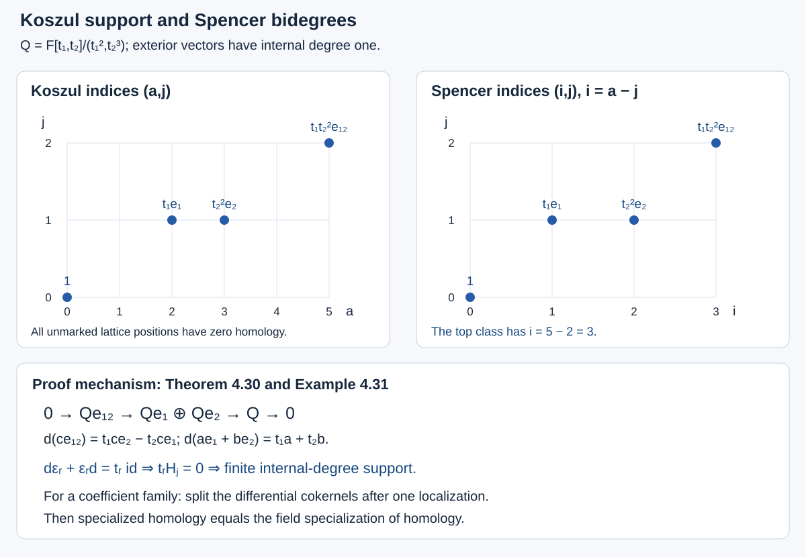
Open Figure 4.11 at full size (editable SVG) · Reproduce Figure 4.11 (Python)

Figure 4.11. The complete support calculation of Example 4.31, with its absolute degree conversion. The lower identity is the homotopy used in Theorem 4.30 to make the homology finite over the coefficient ring. The one coefficient localization in that theorem supplies its specialization assertion.
Theorem 4.30 concerns quotient symbols on the common domain. It does not by itself identify the finite orbit quotients as affine bundles or prove polynomial generation of invariant functions. Those assertions also require actual invariant coordinates and control of their coefficient class.
Section 4.17 and Figure 4.11: GPT-6.1 Sol (OpenAI). CC0 1.0.
4.18. Polynomial coordinates above one finite level
For the induced point actions of Section 4.16, the regular equation ideal also supplies coordinates for the whole higher equation fibres. The symbols alone describe their homogeneous linear parts. To control polynomial functions one needs equations realizing those symbols, with denominators from a fixed low order.
Theorem 4.32 (equation coordinates with low-order denominators). Fix a basic point $a$ and retain the regular, formally integrable equation and graph-chart hypotheses of Section 4.16. There are a finite $L$ and a nonempty affine open $W\subset E_a^L$ with coordinate algebra $B$ such that, for every $k>L$, its complete higher inverse image $X_k$ has a compatible polynomial presentation
$$ \mathcal O(X_k)=B[y_{L+1},\ldots,y_k]. \tag{4.67} $$Each $y_j$ is a finite set of actual free graph coordinates of order $j$. Every other coordinate of order $j$ is a $B$-linear combination of $y_j$ plus a polynomial over $B$ in the earlier higher coordinates. All inverses belong to the same finite-level ring $B$. No further restriction of a higher fibre is needed. These are local equation coordinates; neither $W$ nor the chosen coordinates is asserted invariant.
Proof. We first keep track of actual equations and their denominators.
A finite regular equation ideal. Let $q$ be a defining order, and choose an affine graph chart of $E_a^q$ with integral coordinate algebra $R$. Its full reduced algebraic ideal has finitely many generators, by AG-CA-03, Theorems 1.1 and 2.1. Include the finite chart functions already inverted. The ideal is the regular ideal of the given smooth equation; replacing it by generators with the same zero set and higher multiplicities is not permitted in the argument.
Use the actual finite arrow section $\rho_q(w)$ of Lemma 4.26 to transport these generators by its inverse graph action. We obtain functions $F_\mu(w,u_{\le q})$ generating the actual equation ideal near the source chart. They are rational in the graph derivatives, with smooth or holomorphic basic-point coefficients. The graph-transversality denominators have value one at $w=0$, for every source graph plane. The other denominators are the finitely many initial chart functions of order at most $q$.
At $a$, every ordinary total derivative $D^\alpha F_\mu$ is polynomial in its higher graph coordinates over this same localized low-order ring. Indeed
$$ D_i(H^{-r})=-rH^{-r-1}D_iH \tag{4.68} $$introduces only another power of the same denominator. The product rule proves this for every successive derivative. Basic-point derivatives give scalar coefficients after evaluation at $a$; transported transversality denominators evaluate to one. The exponents may increase with order, but the denominator collection is fixed.
If generators are initially rational on a chart, retain their numerators and include their denominators in the initial list. Two lists generating the same localized ideal have the same prolonged localized ideal: repeatedly differentiate their expressions in one another, using Leibniz in both directions. Thus these are actual prolonged equations of $E$.
For $j=q+|\alpha|>q$, the function $D^\alpha F_\mu$ is affine in the order-$j$ coordinates. Its highest row is $t^\alpha r_\mu$, where $r_\mu$ is the highest order-$q$ Jacobian row of $F_\mu$. The first derivative is the chain rule. Inductively, differentiating the previous highest coordinate gives the next one with unchanged coefficient; differentiating its coefficient or an earlier lower term has order at most $j-1$. We use raw derivative coordinates $u_\beta$ and matching monomials $t^\beta$, so no factorial is suppressed.
One monic equation-symbol presentation. Put $P=R[t_1,\ldots,t_n]\otimes\nu^*$ and let $J$ be generated by the homogeneous rows $r_\mu$. Regularity and formal integrability give, at every higher geometric point $b$,
$$ \begin{gathered} \operatorname{image}(J_j|_b)=\operatorname{Ann}(g_j(b)),\\ j\ge q. \end{gathered} \tag{4.69} $$At $q$ this is the regular conormal description. The equality $g_{j+1}=g_j^{(1)}$ identifies the next symbol with the inverse image of the previous symbols under simultaneous insertion. Extending a linear functional from that map's image shows that the next annihilator consists exactly of tangent multiples of the preceding annihilators. This proves (4.69) by induction, as in Theorem 4.30.
Over $K=\operatorname{Frac}R$, take a finite homogeneous monic Gröbner basis $G$ of $J_K$ in a degree-compatible module order. The leading-module and division argument is Theorem 4.24. Retain each finite homogeneous expression
$$ \begin{gathered} G_\lambda=\sum_{\mu,\alpha} a_{\lambda\mu\alpha}t^\alpha r_\mu,\\ q+|\alpha|=\deg G_\lambda. \end{gathered} \tag{4.70} $$Invert one nonzero $h\in R$ containing all coefficient denominators of $G$ and (4.70). The monic rows belong to $J_h$. Conversely each original row divides with the same zero remainder as over $K$, so $G$ generates $J_h$. Standard monomials form an $R_h$-basis of $P_h/J_h$: they span by division, and a dependence would remain one over $K$. The monic division also works after every coefficient field map. By (4.69), their number in degree $j$ is precisely $\dim g_j$ at every higher point above this chart.
Choose $L$ above $q$, the degrees of $G$ and all coefficient and chart orders. Pull the chart to $E_a^L$ and invert $h$. The inverse image is nonempty because the equation projections are onto. Choose an affine open $W$ there and put $B=\mathcal O(W)$. The monic presentation and its coefficient basis persist over $B$. Higher equation algebras are closed quotients of the polynomial algebras in higher graph coordinates over $B$, with only the initial chart functions inverted.
Realizing a monic symbol by an equation. Fix $j>L$. For each nonstandard degree-$j$ monomial $t^\gamma e_c$, choose $t^\beta G_\lambda$ with that leading monomial. If $e=\deg G_\lambda$, then $e+|\beta|=j$. Expression (4.70) gives the actual equation
$$ E_\gamma=\sum_{\mu,\alpha} a_{\lambda\mu\alpha}D^{\alpha+\beta}F_\mu. \tag{4.71} $$Each differentiated function has order $j$. Its multiplier has order at most $L<j$, so the equation remains affine in the highest coordinates. The multipliers are applied after differentiation; they are not themselves differentiated. The highest row is exactly $t^\beta G_\lambda$. Its lower terms belong to the preceding coordinate algebra by (4.68).
Consequently this equation reads
$$ u_\gamma^c+\sum_{\delta<\gamma}b_\delta u_\delta+c_\gamma=0, \tag{4.72} $$with $b_\delta\in B$ and $c_\gamma$ in the preceding coordinate algebra. Indices include the component label and use the fixed module order. There is one pivot row for each nonstandard monomial. Their highest rows span $J_j$: cancel the leading term of any row using its selected pivot and repeat down the finite degree-$j$ order. A standard remainder in $J_j$ is zero by the Gröbner property.
Solve these equations in increasing pivot order. Earlier pivot substitutions use only addition and multiplication and give
$$ \begin{gathered} u_\gamma^c=\sum_{\delta\ \mathrm{standard}} c_{\gamma\delta}u_\delta+b_\gamma,\\ c_{\gamma\delta}\in B. \end{gathered} \tag{4.73} $$Here $b_\gamma$ is a polynomial over $B$ in the preceding higher coordinates. The free coordinates are the actual standard graph coordinates. No new inverse enters at any degree.
Equality with the entire equation fibre. Suppose the preceding coordinate algebra is $A_{j-1}=B[y_{L+1},\ldots,y_{j-1}]$. The monic equations define a closed space $S_j$ with algebra $A_{j-1}[y_j]$, by the triangular substitutions and their inverse. In particular this algebra is reduced and integral. The actual $X_j$ is closed in $S_j$, since (4.71) consists of actual prolonged equations.
Over every geometric lower point, the actual equation fibre is a nonempty affine subspace, by formal integrability and the affine projection hypothesis. Its homogeneous vector space is $g_j$. The fibre of $S_j$ has the same homogeneous space by (4.69) and the spanning pivot rows. A nonempty affine subspace contained in another with the same homogeneous space equals it: subtract any one common point. Thus all geometric fibres, including those over nonclosed primes, agree.
They also agree as schemes. A nonzero element of the ideal of $X_j$ inside the reduced algebra of $S_j$ would be nonnilpotent. Localize at it and take a maximal ideal of that nonzero ring, then an algebraic closure of its residue field. This gives a geometric point where the element is nonzero, contradicting the equality just proved. The ideal is therefore zero. Induction from $A_L=B$ proves (4.67). The formulas never alter lower-order coordinates, so they commute with jet projection. The empty free-coordinate case is included. $\square$
Example 4.33 (powers of one low-order denominator). With independent variables $x,y$, put $p=u_x$ and $f=1+p^2$. Consider the equation
$$ f u_{xx}-u_{xy}=0, \qquad f\ne0. \tag{4.74} $$The open is automatic over the reals and required over the complex field. Its order-two ideal is regular because the equation solves for $u_{xx}$. Its monic symbol row is $t_x^2-f^{-1}t_xt_y$. For $t_x>t_y$, a single row is a Gröbner basis of this scalar principal module: multiplication preserves its leading monomial. In every positive degree $j$ the standard monomials are $t_y^j$ and $t_xt_y^{j-1}$.
For $m\ge2$, the equation $D_x^{m-2}D_y^r(fu_{xx}-u_{xy})=0$ has highest part $fu_{m,r}-u_{m-1,r+1}$ and lower terms of strictly smaller total graph order. At each total order solve in increasing $m$. Only division by $f$ occurs. All order-$j$ coordinates except $u_{0,j},u_{1,j-1}$ are determined; those two are arbitrary. These equations are all the raw prolongations. They give a nonempty affine fibre over every lower jet, proving formal integrability and the constant symbol dimension directly.
At order three, the differentiated equations are
$$ \begin{gathered} fu_{xxy}-u_{xyy}+2p u_{xy}u_{xx}=0,\\ fu_{xxx}-u_{xxy}+2p u_{xx}^2=0. \end{gathered} $$Use $u_{xx}=u_{xy}/f$ to obtain
$$ \begin{aligned} u_{xxy}&=f^{-1}u_{xyy}-2p f^{-2}u_{xy}^2,\\ u_{xxx}&=f^{-2}u_{xyy}-4p f^{-3}u_{xy}^2. \end{aligned} \tag{4.75} $$Both highest linear coefficients have order one. The free coordinates are $u_{xyy},u_{yyy}$; the other terms already have order two. Repeated differentiation raises powers of $f$ but introduces no inverse of a higher coordinate.
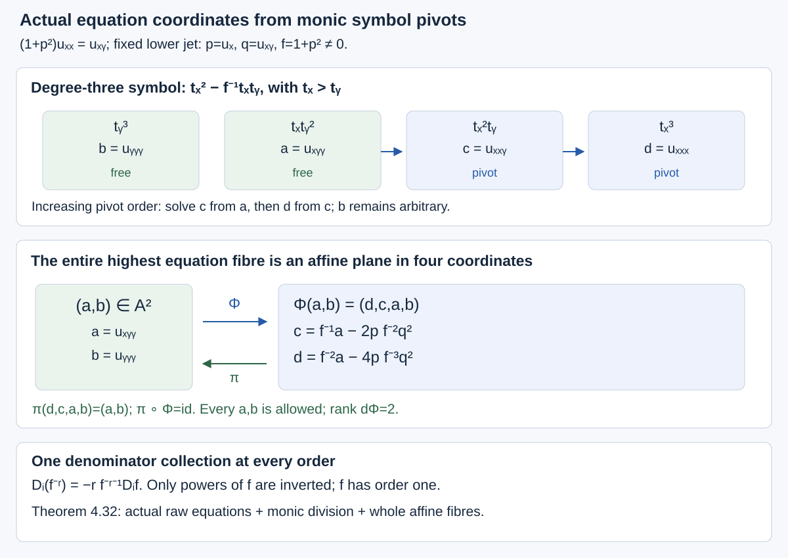
Open Figure 4.12 at full size (editable SVG) · Reproduce Figure 4.12 (Python)

Figure 4.12. The actual order-three equation fibre of Example 4.33 and its monic symbol elimination. The affine map and inverse are exact for every fixed lower jet with $f\ne0$. Theorem 4.32 gives the corresponding all-order construction. See Exercise 13 and Solution 13.
These charts concern the equation fibres. To obtain invariant polynomial coordinates one must also split the quotient symbols, realize them by invariant functions and identify their level spaces with full geometric orbits.
Section 4.18 and Figure 4.12: GPT-6.1 Sol (OpenAI). CC0 1.0.
4.19. Differentials and geometric quotients at finite order
The finite-level quotient of Theorem 4.19 separates geometric orbits and gives their rational invariant field. For the higher-order argument we also need its differential rank, actual stabilizer tangents and invariant regular sheaf. We prove these assertions separately. Algebraic quotient statements concern a fixed algebraic equation fibre; transitivity extends its invariants across the smooth basic-point manifold.
Lemma 4.34 (invariants on a transitive fibre). In the point-action setting of Section 4.16, restriction to $E_a^j$ identifies the full order-$j$ invariant field with the rational invariant field of its isotropy $G_a^j$. A regular isotropy invariant extends regularly to the transported invariant domain. These identifications commute with jet truncation. Restriction also identifies the annihilator of the full orbit tangent with that of the isotropy orbit tangent inside the equation fibre.
Proof. Choose an actual smooth or holomorphic source-$a$ arrow section $\rho_j(b)$ with target $b$, as in Lemma 4.26. For an isotropy invariant $\phi$, define
$$ \phi_{\mathrm{ext}}(e_b)= \phi\bigl(\rho_j(b)^{-1}\cdot e_b\bigr). \tag{4.76} $$Two choices of section differ by an isotropy arrow at $a$, so the definitions agree. For an arrow $h:b\to c$, the arrow $\rho_j(c)^{-1}h\rho_j(b)$ belongs to $G_a^j$. Thus (4.76) is fully invariant. The inverse graph action is rational through order $j$, with smooth or holomorphic basic-point coefficients. This proves the asserted function class and regularity on transported domains. The same independence glues the definitions across base neighbourhoods. Conversely every full invariant is recovered by transporting its restriction back, so restriction and extension are inverse field maps.
The projection of a section at order $j+1$ and a separately chosen section at order $j$ differ by order-$j$ isotropy. Hence an order-$j$ invariant has the same extension under either choice. This proves truncation compatibility. No nonholonomic section is differentiated as if it were the jet of one point map.
Let $V$ be the equation-fibre tangent and $T$ the full orbit tangent at the jet. Transitivity makes $T$ project onto the basic-point tangent space, and $T\cap V$ is the isotropy orbit tangent. Thus $T+V$ is the entire tangent space. A covector on $V$ vanishing on $T\cap V$ extends uniquely by declaring it zero on $T$; the intersection condition makes this well defined. Conversely an annihilator covector restricting to zero on $V$ vanishes on $T+V$. This proves the annihilator isomorphism. $\square$
Theorem 4.35 (invariant differentials and stabilizer tangents). Let $k$ be algebraically closed of characteristic zero, let $X$ be a nonsingular integral finite-type $k$-variety, and let a smooth affine algebraic group $G$ act regularly on it. Retain the orbit quotient $p:U\to Y$ of Theorem 4.19. If $f_1,\ldots,f_s$ generate $k(X)^G$ as a field and include its quotient coordinates, there is a nonempty invariant open on which they are regular and
$$ \operatorname{span}\{df_1,\ldots,df_s\} =\operatorname{Ann}(\Delta). \tag{4.77} $$Here $\Delta$ is the actual infinitesimal orbit image. Every orbit is smooth and has dimension $\dim\Delta$ at its points. The scheme stabilizer is smooth near the identity and its Lie algebra is the differential kernel of the orbit map. Inverse images of such stabilizers under smooth determining-jet projections have the corresponding inverse-image tangent kernels. Disconnected components are included.
Proof. Put $F=k(X)^G$, $K=k(X)$, $d=\operatorname{trdeg}_kF$ and $m=\operatorname{trdeg}_kK$. Choose a transcendence basis $h_1,\ldots,h_d$ of $F/k$ and extend it to one of $K/k$. The fields are finitely generated; their residual algebraic extensions are finite and separable in characteristic zero. The differential-basis proof in AG-CA-16, Lemma 6.1 and Theorem 6.2 makes the $dh_i$ independent over $K$: prescribe derivations on the independent variables and extend through an algebraic generator by dividing the differentiated minimal-polynomial equation by its nonzero derivative.
Each $f_j$ is separably algebraic over $k(h_1,\ldots,h_d)$, and each $h_i$ is rational in the $f_j$. Differentiating these equations with the quotient rule gives both containments of their differential spans. Thus the generic rank of $df_j$ is $d$. The Jacobian presentation and cotangent identification in AG-CA-16, Theorem 5.1 and equation (13) turn this into the actual matrix rank on a smooth affine chart. All larger minors vanish, and some $d$-minor is nonzero. There is therefore a nonempty rank-$d$ open. Its full regular rank locus is invariant, since group isomorphisms transport these invariant differentials by invertible cotangent maps.
For any orbit, restrict its orbit map to an irreducible group component with dense image in an orbit component $O_0$. The inclusion of function fields $k(O_0)\hookrightarrow k(G_0)$ has characteristic zero. Extend a transcendence basis as above. Its differential independence shows that the generic rank of that map is $\dim O_0$; dimension equals transcendence degree by AG-CA-09, Theorem 4.2. Left translation on $G$, followed by the action isomorphism on $X$, intertwines the orbit differential with its differential at the identity. All those ranks are equal. Translates of the group components give orbit components of the same dimension. Thus every orbit differential has rank $\dim O$, and its image is precisely $\Delta$.
The geometric generic fibre. We compute the generic orbit dimension directly from the quotient already constructed. Put $F=k(Y)$ and $K=k(X)$. The generic fibre $U_\eta$ is an integral finite-type $F$-variety with function field $K$. Let
$$ r=\operatorname{trdeg}_F K=m-d. $$Choose an algebraic closure $\Omega$ of $K$, retaining the inclusions $k\subset F\subset K\subset\Omega$, and put $Z=U_\eta\times_F\Omega$. We claim $\dim Z=r$, without assuming that $Z$ is integral or reduced. Cover $U_\eta$ by finitely many nonempty affine opens with coordinate domains $B$. Each has fraction field $K$. By AG-CA-09, Corollary 3.2 and Theorem 4.2, it has a finite inclusion
$$ F[t_1,\ldots,t_r]\hookrightarrow B. $$Tensoring with the field $\Omega$ preserves this inclusion: choose an $F$-basis of a subspace and extend it to one of the containing vector space. The same finite module generators remain generators after tensoring, so
$$ \Omega[t_1,\ldots,t_r]\hookrightarrow B\otimes_F\Omega $$is still finite and integral. The chain-lifting and incomparability proof in AG-CA-05, Theorem 5.1 gives dimension $r$ for this algebra, including its possible nilpotents and multiple components. Thus every open in this finite affine cover of $Z$ has dimension $r$. Any finite specialization chain lies in an affine open containing its most special point, because opens contain all generalizations of their points. Hence $\dim Z=r$.
The generic point of $U$ gives a point $x_\Omega\in Z(\Omega)$ through $K\hookrightarrow\Omega$. Theorem 4.19, applied to this algebraically closed extension and the target point $F\hookrightarrow\Omega$, says that every $\Omega$-point of $Z$ belongs to the single full orbit $O=G_\Omega x_\Omega$. This identifies its reduced locally closed variety with $Z_{\mathrm{red}}$. Indeed, the point test of Theorem 4.19 makes $O$ dense in $Z_{\mathrm{red}}$, and $O$ is open in its closure. A nonempty closed complement would have an $\Omega$-point by that same point test, contradicting the full-orbit assertion. Therefore
$$ \dim O=\dim Z=r. $$The orbit-map rank calculation above gives $\operatorname{rank}\Delta(x_\Omega)=r$. This point comes from the generic point of $X$, so its action matrix is the generic action matrix extended from $K$ to $\Omega$. A matrix rank is unchanged under a field extension, by its minors. Thus the generic orbit rank on $X$ is $r$. All larger minors vanish identically, and some $r$-minor is nonzero. The full rank-$r$ locus is consequently a nonempty invariant open. Intersect it with the invariant regular rank-$d$ locus of the $df_j$. On that nonempty intersection,
$$ \dim\operatorname{span}\{df_j\}=d, \qquad \dim\Delta=m-d. $$Since every $df_j$ annihilates $\Delta$, finite-dimensional duality proves (4.77).
Smooth orbits and actual stabilizers. Here are local algebra details for the remaining assertions. An integral finite-type characteristic-zero variety has a nonempty open with a triangular separable presentation. Choose a transcendence basis $t$ and a finite algebraic generating tower $\alpha_i$ of its function field. Their monic minimal polynomials $P_i$ have coefficients rational in $t$ and preceding $\alpha$'s. Invert the finitely many coefficient denominators and $P_i'(\alpha_i)$. Successive monic quotients embed in their fraction fields, since the polynomials are irreducible there, so the resulting algebra $C$ is a domain in that function field. It and the original coordinate algebra have isomorphic nonempty opens: express each finite generating list as fractions in the other and invert the two finite denominator lists. The localized rings then coincide inside the function field.
The triangular Jacobian has unit diagonal in the dependent variables. Its smooth lifting property is explicit. Through a ring surjection with square-zero kernel, lift the independent variables arbitrarily and then each dependent variable in order. If its equation has error $e$ and its derivative has unit lift $v$, replace that variable by its lift minus $e/v$. Taylor expansion kills the error because products of two kernel elements vanish. Every localized unit stays a unit; an inverse modulo a nilpotent ideal is corrected by a finite geometric series. Iteration handles any nilpotent kernel. This proves smoothness of this finite presentation, with the $t$ as independent tangent parameters.
For a reduced variety with several components first remove the other components from an open of one component and use this construction. Apply it to the reduced locally closed orbit, whose local closedness was proved in Theorem 4.19. Translate one smooth point to any other orbit point; the action is an isomorphism. Thus the entire orbit is smooth. Applying the same construction and translation to the group gives unit-minor presentations at every group point as well.
The orbit map $G\to O$ has surjective differential everywhere by the rank calculation. In the local presentations, append the pulled-back independent orbit parameters to the defining group equations. Their combined Jacobian has a unit minor: eliminate the dependent group variables first, and the remaining block is the surjective orbit differential. Given a square-zero lift with prescribed target, lift the unselected variables and correct the selected ones by the inverse matrix times the negative error vector. Taylor expansion again kills all errors. The dependent target variables agree by uniqueness of their unit-derivative lifts. For a fixed target point, its dependent equations factor by their fixed values with unit cofactors on the chosen neighbourhood, so fixing these independent parameters gives the actual fibre equations. Hence that fibre is smooth and its tangent space is the differential kernel. In particular this proves the assertion for the stabilizer scheme; a reduced orbit has not been substituted for a possibly thickened fibre. Smooth determining-jet projections preserve the same lifting property under inverse image, and differentiation gives the claimed inverse-image kernel. $\square$
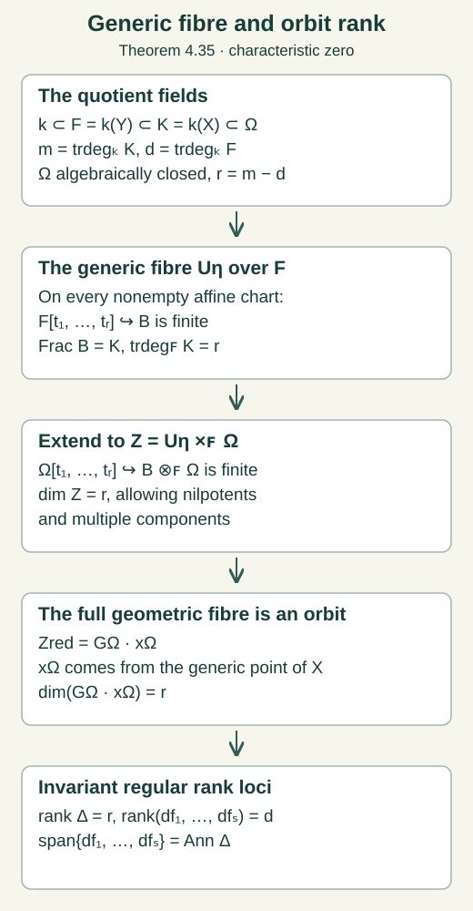
Open Figure 4.12a at full size (editable SVG) · Reproduce Figure 4.12a (Python)

Figure 4.12a. The generic-fibre argument in Theorem 4.35. Here $F=k(Y)$, $K=k(X)$, $m=\operatorname{trdeg}_kK$, $d=\operatorname{trdeg}_kF$ and $r=m-d$. The field $\Omega$ is an algebraic closure of $K$, and $x_\Omega$ is induced by the generic point of $X$. Equality with the orbit concerns the reduced fibre; no assertion of reducedness or integrality after extension is needed. The normalization and integral-dimension proofs are at the exact earlier programme links in the argument. Noether normalization is also treated in the Stacks Project, Lemma 10.115.4, Tag 00OW.
Figure 4.12a: GPT-6.1 Sol (OpenAI). CC0 1.0.
Theorem 4.36 (flat geometric descent). Let $p:X\to Y$ be a surjective invariant morphism of integral finite-type varieties over an algebraically closed characteristic-zero field. Suppose its geometric fibres are full orbits of an algebraic group acting regularly on $X$. Then its invariant field is $k(Y)=k(X)^G$, and after restriction to one nonempty target open, $p$ is flat and open and satisfies
$$ \mathcal O_Y(W)\cong \mathcal O_X(p^{-1}W)^G \tag{4.78} $$for every target open $W$. Every invariant morphism from $X$ factors uniquely through $Y$. Thus it is a geometric categorical quotient. If $p$ is already flat, no additional generic restriction is needed for these conclusions.
Proof. First obtain flatness when it is not already given. Restrict the target to $\operatorname{Spec}A$ and cover its inverse image by finitely many affine opens $\operatorname{Spec}B_i$. Every $A\to B_i$ is injective, since a nonempty source open is dense and still dominates the target. Present each $B_i$ by finitely many polynomial generators and relations over $A$. Over $\operatorname{Frac}A$ choose a monic Gröbner basis, retaining its expressions in those relations, their zero remainders and the finite $S$-pair reductions. Invert one product of coefficient denominators. The monic division argument of Theorem 4.19 makes the standard monomials a coefficient basis over this localized $A$. Thus all chart algebras are free and hence flat. This is one finite target localization. Localization, base change and composition preserve flatness because their tensor functors compose exact tensor or localization functors. The chart calculation proves flatness of the morphism.
The fibre pair is reduced. Let $E/F$ be a finitely generated field extension of characteristic zero. Choose a transcendence basis $t$ so $E$ is finite separable over $F(t)$, and a primitive generator with monic separable polynomial $P$, as in the primitive-element step of Proposition 4.2. The tensor algebra $D=F(t)\otimes_FE$ is the localization of the polynomial domain $E[t]$ at the nonzero polynomials in $F[t]$. Then
$$ E\otimes_FE\cong D[T]/(P). \tag{4.79} $$This monic quotient is free over $D$, so embeds in $\operatorname{Frac}(D)[T]/(P)$. A Bézout identity for $P,P'$ survives extension to this field. Hence $P$ has distinct irreducible factors; the coprime-ideal remainder map embeds its quotient in the product of the corresponding fields. This proves that (4.79) is reduced.
For a pair of affine source charts, $B_i\otimes_AB_j$ is $A$-flat and therefore $A$-torsion free: apply its exact tensor functor to multiplication by any nonzero element of $A$. It embeds in its generic localization, which embeds in $k(X)\otimes_{k(Y)}k(X)$ because tensoring over a field preserves injections. The preceding argument proves that this last ring is reduced. Thus every chart pair, and consequently $X\times_YX$, is reduced.
Faithful flatness and its equalizer. The finite product $B=\prod_iB_i$ is flat over $A$. It is faithfully flat whenever $p$ is surjective, even when these later chart algebras have not been made free. For a nonzero $A$-module choose a nonzero cyclic submodule $A/I$. Take a maximal ideal containing the proper ideal $I$. Surjectivity supplies a source prime above it in some chart, so $B_i/IB_i\ne0$. Flatness preserves the injection of that cyclic submodule. Its tensor with $B_i$, and therefore the tensor of the original module with $B$, is nonzero. This proves faithfulness.
For a faithfully flat map the sequence
$$ A\longrightarrow B \rightrightarrows B\otimes_AB \tag{4.80} $$is an equalizer. After tensoring with $B$, its first map is $b\mapsto b\otimes1$ and the difference of its next maps sends $b_0\otimes b_1$ to $b_0\otimes b_1\otimes1-b_0\otimes1\otimes b_1$. Multiplication is a left inverse of the first map. If the difference kills an element $v$, multiplying its first two factors gives $v=\mu(v)\otimes1$, proving exactness there. Flatness commutes with the kernels and images, and faithfulness detects their zero homology, proving (4.80).
A regular invariant function on $p^{-1}W$ has equal pullbacks at every geometric point of the fibre pair, because its two points lie in one full orbit. Their difference is therefore zero as a function: in a reduced affine chart, an element vanishing at every field-valued point lies in every prime and is nilpotent, hence zero. The prime test follows by taking a residue field and its algebraic closure; a nonnilpotent element also gives such a point by localization and a maximal ideal. For affine $W$ the product chart cover and (4.80) now give a unique descended function. The same argument on affine subopens and uniqueness glue it on arbitrary $W$. Conversely every target function pulls back invariantly. This proves (4.78).
Openness. For a source prime $\mathfrak q$ over $\mathfrak p$ and a generalization $\mathfrak p'\subset\mathfrak p$, the flat local map $A_{\mathfrak p}\to(B_i)_{\mathfrak q}$ is faithfully flat. Indeed a proper ideal of this local source maps inside the target maximal ideal; the cyclic-submodule argument just given proves faithfulness. Thus its tensor with $\kappa(\mathfrak p')$ is nonzero and has a prime. This gives a generalization $\mathfrak q'\subset\mathfrak q$ above $\mathfrak p'$. The image of a source open is consequently stable under generalization.
It is constructible by AG-MO-06, Chevalley's theorem, Theorem 4.2. Opens in the finite-type Noetherian source are quasi-compact, so this applies to their restrictions too. A constructible generization-stable subset of a Noetherian space is open. To prove it, decompose its specialization-stable complement into finitely many irreducible locally closed pieces. Each piece contains the generic point of its closure; specialization stability includes that entire closed closure in the complement. The complement is the union of finitely many such closed closures and is closed. This proves openness.
Finally, an invariant morphism has saturated inverse images of affine target charts. Their images in $Y$ are open by openness of $p$. On each image (4.78) descends its coordinate functions, and their relations hold because pullback is injective. The descended morphisms glue uniquely on overlaps. This proves the categorical property without a normality assumption.
For a rational invariant, its maximal regularity domain is a nonempty invariant open. It is saturated: after extending the residue fields of two points in one fibre to a common algebraically closed field, the full orbit condition transports membership in that domain. Its image is open and its full inverse image is the original domain. Equation (4.78) descends the rational invariant to a regular function on that target open, hence to its rational function field. Conversely every target rational function pulls back invariantly. This proves the invariant-field identity as a consequence of flat orbit descent. Every argument after flatness applies to a flat surjective map as given, proving the last assertion. $\square$
Example 4.37 (the cusp point quotient). Let the trivial group act on $X=\mathbb A^1$, with coordinate $t$, and let $Y=\operatorname{Spec}k[t^2,t^3]$. Its morphism is
$$ \begin{gathered} t\longmapsto(a,b)=(t^2,t^3),\\ b^2=a^3. \end{gathered} \tag{4.81} $$The relation ideal is exactly $(b^2-a^3)$. Divide a polynomial by this monic relation in $b$ to obtain $r(a)+bs(a)$. Its substitution is $r(t^2)+t^3s(t^2)$; the even and odd exponents cannot cancel, so both remainders are zero. Every geometric fibre is one point: if $a\ne0$, its unique preimage is $t=b/a$; if $a=0$, then $b=t=0$. The rational fields agree. Yet the invariant regular function $t$ does not descend to $Y$, since every polynomial in $t^2,t^3$ has zero degree-one coefficient. Also $d(t^2)=2t\,dt$ and $d(t^3)=3t^2\,dt$ both vanish at zero, while the orbit annihilator on $X$ has dimension one. Field generation and point separation alone do not give either conclusion at that point.
The fibre pair has ring $k[t,s]/(t^2-s^2,t^3-s^3)$. Put $\epsilon=t-s$. Its relations give
$$ \begin{gathered} \epsilon^2=-2s\epsilon,\qquad s^2\epsilon=0,\\ \epsilon^3=0,\qquad\epsilon\ne0. \end{gathered} \tag{4.82} $$For the middle relation expand $t^3-s^3=3s^2\epsilon+3s\epsilon^2+\epsilon^3$ and use the first relation to obtain $s^2\epsilon=0$. The ideal has generators of degree at least two, so it contains no nonzero linear form; hence $\epsilon\ne0$. The two pullbacks of $t$ agree at all geometric points but differ by this nilpotent function. Flatness would make the pair torsion free over $k[t^2,t^3]$, whereas the nonzero $a=s^2$ kills $\epsilon$. Thus the original map is not flat. On $a\ne0$ its inverse $t=b/a$ is regular and the map is an isomorphism, supplying the required nonempty generic restriction.
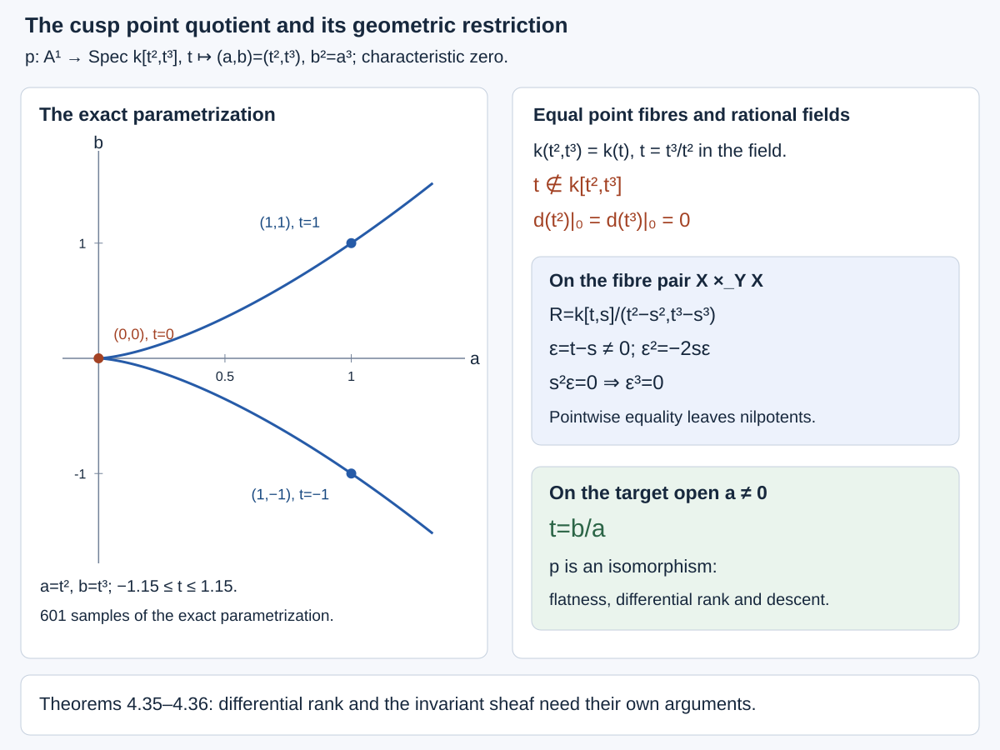
Open Figure 4.13 at full size (editable SVG) · Reproduce Figure 4.13 (Python)

Figure 4.13. Example 4.37. The curve is sampled from the exact parametrization in (4.81); the ring identities and generic inverse are exact. Theorem 4.36 explains why reduced fibre pairs and flat descent supply the regular invariant sheaf.
Theorems 4.35–4.36 provide finite-level differential and geometric quotient properties. Their field-independent flat descent and the actual invariant affine coordinates give the complete higher quotient tower in Theorem 4.38.
Section 4.19 and Figure 4.13: GPT-6.1 Sol (OpenAI). CC0 1.0.
4.20. Finite differential generation for point actions
Retain the induced point-action hypotheses, regular equation ideals and geometric conventions of Section 4.16. Write $F_j$ for the full invariant field through order $j$. Lemma 4.34 identifies it with the isotropy invariant field on a fixed algebraic equation fibre. Rational functions and their identities are understood on their common regularity domains.
Theorem 4.38 (finite differential generation and affine quotients). There are a finite $L$, a nonempty invariant fibrewise Zariski-open $U\subset E^L$, finitely many full invariants $f_1,\ldots,f_s$ of orders at most $L$, and the quotient invariant derivations $\nabla_1,\ldots,\nabla_r$ of Corollary 4.22, with $0\le r\le n$, such that the following assertions hold on every complete higher inverse image of $U$.
1. Differential generation. Put $F_L=\mathbb K(f_1,\ldots,f_s)$. The algebra $\mathcal A_L$ of finite-order invariants rational through order $L$ and polynomial in higher graph coordinates satisfies
$$ \mathcal A_L= F_L[\nabla^\alpha f_b:|\alpha|>0]. \tag{4.83} $$Rational operations are confined to the low-order coefficient field. The full rational invariant field is $\operatorname{Frac}\mathcal A_L$.
2. Geometric quotients. A selected set of these iterated derivatives, regular on the entire higher inverse image, gives the geometric finite-order orbit quotients. On a fixed basic-point fibre their targets are
$$ Y_j=Y_L\times\prod_{i=L+1}^j\mathbb A^{d_i}, \qquad d_i=\dim(g_i/\varpi_i). $$The adjacent quotient projections are affine-space projections. They satisfy the invariant regular-sheaf identity and categorical quotient property.
3. Geometric orbits. Equality of the selected invariant values separates geometric orbits at each finite order. For infinite jets, equality of all their values gives a compatible admissible formal point arrow between them.
The exceptional set is the single finite-level complement $E^L\setminus U$. The infinite-jet assertion concerns formal arrows. Over the reals, geometric separation is separation after algebraic closure, as in Sections 4.5 and 4.16.
Proof. We work first over an algebraically closed characteristic-zero field on a fixed basic-point fibre and then extend by transitivity.
Choose the order before the generators. In Theorem 4.30 let $N$ bound the actual module presentation and its generator degrees. Choose $L$ above $N$, all coefficient and cohomology bounds of Theorems 4.28–4.30, the horizontal-frame coefficient order and the monic equation degrees of Theorem 4.32. All these data are already finite. They are fixed before choosing the order-$L$ invariant field generators.
Apply Theorem 4.19 at this order. Intersect its invariant source with the common domain. The intersection is saturated because the quotient fibres are full orbits. Chevalley's theorem supplies a nonempty target open contained in its image, whose full inverse image therefore lies in that intersection. Make the target affine and use Theorem 4.36 to obtain a flat surjective geometric quotient $p_L:X_L\to Y_L$.
Choose finite full field generators $f_b$ of $F_L$, including the quotient coordinates and the horizontal invariants $I_i$ of Theorem 4.21. Theorem 4.35 gives a nonempty invariant open where these functions are regular and their differentials span the full orbit annihilator. Retain also the intrinsic regular domain of the quotient horizontal frame. Their images under the open map $p_L$ are open, and they are full inverse images of those images. Restrict to a nonempty affine target open therein.
On a low-order affine chart with integral ring $B$, the actual homogeneous modules of Theorem 4.30 are
$$ \begin{gathered} M=I/J\subset P/J,\\ (P/J)/M=P/I,\\ M_j\cong(g_j/\varpi_j)^*,\qquad j\ge N. \end{gathered} \tag{4.84} $$Their coefficients are in $B$ and their specializations are the actual annihilator images. Their tails are generated in degree $N$, hence the tail of $M$ is generated by $M_L$. Restricting the invariant differential span to $g_L$ shows that the $\sigma_L(f_b)$ span $M_L$ at the generic low point. Surjectivity of this restriction is finite-dimensional extension duality: declare the covector zero on the full orbit tangent and use its vanishing on the intersection. Clear the finitely many low-order coefficients witnessing the span. Later localizations change only this order-$L$ ring.
Derivative symbols in every degree. Choose representatives $v_i$ of the quotient derivations and a low-order frame of the common horizontal annihilator $H$. After a finite coefficient localization,
$$ \tau=H\oplus\operatorname{span}_B(v_1,\ldots,v_r). $$For a frame member $h\in H$, the identity $h(f_b)=0$ has highest order-$(L+1)$ part
$$ h\,\sigma_L(f_b)=0\quad\text{in }M_{L+1}. \tag{4.85} $$Indeed this covector is zero on the actual generic higher equation symbol. Its low-order coefficients and the coefficient-exact inclusion in $g_{L+1}^*$ detect zero after that faithful field extension; coefficient freeness detects it over $B$. The symbols span $M_L$, tangent multiplication commutes, and the tail is generated there. Thus $H$ annihilates the entire tail.
Consequently $M_{\ge L}$ is a finite module over $B[s_1,\ldots,s_r]$, where $s_i$ acts by $v_i$, generated by the $\sigma_L(f_b)$ in degree $L$. Its homogeneous presentation has a finite kernel by the polynomial Noetherian theorem. The monic coefficient argument of Theorem 4.30, applied over $\operatorname{Frac}B$ and then one finite coefficient localization, makes its standard monomials a $B$-basis in every degree. No larger graph order enters the coefficients. If $r=0$, there are no positive-degree monomials and $M_j=0$ for $j>L$.
For each standard monomial $s^\alpha e_b$ use the actual invariant
$$ \begin{gathered} z_{\alpha b}=\nabla^\alpha f_b,\\ \sigma_{L+|\alpha|}(z_{\alpha b}) =v^\alpha\sigma_L(f_b). \end{gathered} \tag{4.86} $$Corollary 4.22 gives invariance and commutation on invariant functions. The symbol formula follows from the graph chain rule. The first derivative of $f_b$ is affine in its new highest variables, with coefficients of order at most $L$. At each subsequent derivative, differentiating such a coefficient contributes only order $L+1$, below the new highest order; differentiating the old highest variable gives the next product. The remaining terms stay polynomial in earlier higher variables. This proves (4.86), highest affineness and low-order denominator control by induction. A generator with zero order-$L$ symbol is removed by the module relations and is never selected as a basis element.
The coefficient-free quotient $P/I$ splits (4.84): lift its homogeneous coefficient basis. In degree $j$ this gives $g_j^*=M_j\oplus C_j$ with $C_j$ free over $B$. Dualizing gives a low-order right inverse of
$$ g_j\longrightarrow M_j^*=B^{d_j}, \tag{4.87} $$whose components are the selected invariant symbols; its kernel is the free module $C_j^*$. Thus both the right inverse and a kernel basis are available over the same low ring in every degree. The actual equation coordinates of Theorem 4.32 make the new functions a split affine surjection on each entire highest equation fibre.
One invariant domain for all orders. Let $D(h)$ be the low coefficient open containing these finitely many localizations. Saturate it under the full order-$L$ isotropy inside the intrinsic regular domain of the $f_b$ and quotient derivations. For any higher jet above that saturation, choose a lower arrow from $D(h)$ to its lower jet and lift the arrow to the required higher determining order. Its inverse moves the higher jet above $D(h)$. Invariance of the selected functions and invertible first-jet tensor changes transport their symbol basis back. This proves the basis property at every higher extension of every point of the same saturation, including disconnected isotropy.
This saturation is $p_L^{-1}(p_L(D(h)))$. Its image is open because $p_L$ is flat and open. Choose a nonempty affine principal target open in that image and take its full inverse image. This is the final low domain in the fixed fibre. It has a finite translated-chart cover by Noetherianity. On these charts prolonged point transformations and inverses are polynomial in higher coordinates with only first-jet transversality and original low-chart denominators; their highest tensor changes use only first jets. Compatible higher arrow lifts supply these formulas at all orders. Lemma 4.34 transports the domain and functions across the basic-point manifold without changing their order. Denote the resulting invariant domain by $U$.
Affine level spaces are full orbits. At order $j+1$, the selected new functions $z_1,\ldots,z_d$ have highest differentials forming a basis of $M_{j+1}$. In a fixed lower equation fibre they give a split affine surjection to $\mathbb A^d$. Every level space is an irreducible affine space with homogeneous vector space $\varpi_{j+1}$.
Let $K_j$ be the inverse image in $G_a^{j+1}$ of the stabilizer of the lower jet. Theorem 4.35 and the smooth determining projection identify its Lie algebra with the inverse image of the lower action kernel. Its tangent image at an upper jet is exactly $\varpi_{j+1}$: an admissible action vector is vertical precisely when its lower action is zero. Thus every $K_j$-orbit has the dimension of that affine level space. It lies in the level space because the $z_i$ are full invariants. Orbits are locally closed by Theorem 4.19. The dimension-drop argument used in Theorem 4.35 makes their closures the whole level space, so they are open there. Two distinct orbits would be disjoint nonempty opens of an irreducible affine space. Every level space is therefore one full orbit, including all stabilizer components.
The old and new invariant differentials span the upper full orbit annihilator too. Orbit tangents project onto the lower orbit tangents by surjectivity of determining projections. Restriction of the upper annihilator to $g_{j+1}$ has image $M_{j+1}$ by extension duality, and its kernel is the pulled-back lower annihilator. The new differentials span the quotient and the old ones span the kernel. Induction starts with Theorem 4.35 at order $L$.
The geometric quotient tower. Suppose $q_j:X_j\to Y_j$ is the flat geometric quotient already constructed. Define
$$ \begin{gathered} q_{j+1}=(q_j\pi,z):X_{j+1}\\ \longrightarrow Y_j\times\mathbb A^d. \end{gathered} \tag{4.88} $$It is onto by the split affine surjection in each lower fibre. Its geometric fibres are full orbits: first relate the lower jets by an arrow, lift it one order and then use the affine-level-space orbit statement. In an equation chart its map to $X_j\times\mathbb A^d$ becomes, after translation by its polynomial constant part, projection along the free kernel $C_{j+1}^*$. This is a polynomial projection and is flat. Composition with the flat base change of $q_j$ is flat.
Apply the field-independent flat descent of Theorem 4.36. Integral source and target, flat surjectivity and full geometric orbit fibres have all just been proved. It supplies the invariant sheaf, categorical property and invariant-field identity as conclusions. Thus $Y_{j+1}=Y_j\times\mathbb A^d$ is the next geometric quotient, with no new high-order restriction. This proves the affine tower and finite-order separation.
Polynomial coefficients stay low-rational. On a fixed low chart let $A_j=B[y_{L+1},\ldots,y_j]$ be the preceding equation algebra. Write the new invariant vector as $z=T(v)+c$ in the free highest-coordinate module $V$, with $c$ polynomial over $A_j$ and with a $B$-linear right inverse $S$ of $T$. The polynomial change
$$ \begin{gathered} (z,w)\longmapsto S(z-c)+w,\\ w\in\ker T,\\ v\longmapsto\\ (T(v)+c,\,v-ST(v)) \end{gathered} \tag{4.89} $$gives inverse maps. An invariant polynomial in the highest variables is constant on every kernel translate, by the full orbit assertion. Over the fraction field choose a kernel basis. Its partial derivatives in those variables vanish, so characteristic zero makes the polynomial independent of them. This equality already holds over $A_j$: the direct-summand inclusion and projection induce splitting maps of symmetric powers, giving injection into the fraction-field extension. Thus there is a unique expansion
$$ f=\sum_\alpha h_\alpha z^\alpha, \qquad h_\alpha\in A_j. \tag{4.90} $$Its coefficients are computed by the polynomial section $w=0$, so they involve no higher denominators. For an individual rational-low invariant, also invert its own low-order denominator; the same argument keeps every coefficient in the preceding rational-low/polynomial-high class.
Apply a full arrow to (4.90). It fixes each $z_i$. Their algebraic independence over the previous full jet field makes the coefficients unique, so every $h_\alpha$ is invariant, as in Lemma 4.3. Every lower arrow lifts to the next determining order; hence this is full lower-group invariance. Induction reduces the coefficients to $F_L$ and proves (4.83). The rational invariant field is the fraction field, also obtained from the quotient targets by Theorem 4.36.
Compatible formal arrows. Work over a fixed algebraically closed extension $\Omega$. A compatible lift of a transitive basic arrow reduces to jets over the same basic point. Let $T_j$ be the nonempty transporter carrying the first finite jet to the second. It is a closed coset of its algebraic stabilizer $H_j$. For fixed $k$, images of $T_j$ in $T_k$ are nested cosets of the subgroup images of $H_j$ in $G_a^k$.
These subgroup images are closed. Chevalley's theorem makes a homomorphism image constructible; its closure is a subgroup by continuity, density and the reduced product point test of Theorem 4.19. A dense constructible subgroup contains a nonempty relatively open set. Translate a point of it to the identity; translates make the subgroup open. Other cosets are open too, so it is also closed and equals its closure.
A descending sequence of closed algebraic subgroups of a fixed finite-type group stabilizes. Their dimensions eventually stabilize. The smooth-presentation and translation argument of Theorem 4.35 makes every reduced characteristic-zero group smooth with equal-dimensional components. Thereafter each component of a later subgroup equals a component of the earlier group: a proper closed irreducible subset would have smaller dimension. There are finitely many components, so their descending unions stabilize. Consequently the subgroup images, and then their nested nonempty cosets, stabilize in each fixed order.
Let $T'_k$ be the eventual transporter image. Its maps to the preceding eventual images are onto: choose an order high enough for both image sequences to have stabilized, lift an element there and project one order higher. Successive choices give compatible elements of all $T'_k$. Their Taylor coefficients define an admissible formal point arrow with the required action at every order. This proves formal separation without requiring individual stabilizer projections to be onto.
For the real case use the actual coordinate-function domains of Section 4.16 and their faithful complexification. Finite opens can be replaced by conjugate products and remain nonempty on the real set. A complex rational invariant has invariant real and imaginary rational parts, obtained by multiplying by a conjugate denominator. Thus the low field generators and monic module computations can be chosen real. The unique polynomial expansions give real coefficients for real functions. The orbit assertion retains its geometric meaning. $\square$

Open Figure 4.14 at full size (editable SVG) · Reproduce Figure 4.14 (Python)
Figure 4.14. Theorem 4.38: one finite-level domain, the actual affine quotient square (4.88), the polynomial split (4.89) and full coefficient invariance (4.90). The lower transporter sequence explains the formal orbit assertion.
Example 4.39 (an explicit nonlinear invariant algebra). Let translations in $x,y,u$ act on the equation of Example 4.33. They are transitive on the ambient three-space and preserve every graph derivative. Their isotropy at a basic point is trivial. Put
$$ \begin{gathered} p=u_x,\quad r=u_y,\\ q=u_{xy},\quad s=u_{yy},\\ f=1+p^2,\qquad\delta=qs/f-q^2. \end{gathered} \tag{4.91} $$Work on the order-two open $f\ne0$, $\delta\ne0$. It is nonempty: $p=0,q=1,s=0$ gives $f=1,\delta=-1$. Since $u_{xx}=q/f$, the low invariant field is $F_2=\mathbb K(p,r,q,s)$.
The forms $d_hp=(q/f)dx+q\,dy$ and $d_hr=q\,dx+s\,dy$ have determinant $\delta$. Their dual derivations are
$$ \begin{aligned} \nabla_1&=(sD_x-qD_y)/\delta,\\ \nabla_2&=(-qD_x+(q/f)D_y)/\delta. \end{aligned} \tag{4.92} $$They send $(p,r)$ respectively to $(1,0)$ and $(0,1)$. Their bracket is horizontal and kills both $p,r$, so it is zero by this invertible horizontal matrix. The inverse frame is
$$ \begin{aligned} D_x&=(q/f)\nabla_1+q\nabla_2,\\ D_y&=q\nabla_1+s\nabla_2. \end{aligned} \tag{4.93} $$At order three the free equation coordinates are $a=u_{xyy},b=u_{yyy}$. Put $Q_1=\nabla_1q$, $S_1=\nabla_1s$. By (4.75), their actual affine formulas are
$$ \begin{aligned} Q_1&=a/q-2psq^2/(f^2\delta),\\ S_1&=(sa-qb)/\delta. \end{aligned} \tag{4.94} $$Here $q^{-1}=(s/f-q)/\delta$ is already in the low ring. Their highest matrix has rows $(q^{-1},0)$ and $(s/\delta,-q/\delta)$, with determinant $-1/\delta$. The exact inverse is
$$ \begin{aligned} a&=qQ_1+2psq^3/(f^2\delta),\\ b&=sQ_1-(\delta/q)S_1\\ &\quad+2ps^2q^2/(f^2\delta). \end{aligned} \tag{4.95} $$The second derivation satisfies the actual identities
$$ \begin{aligned} \nabla_2q&=2pq^3/(f^2\delta),\\ \nabla_2s&=Q_1-f^{-1}S_1\\ &\quad+2psq^2/(f^2\delta). \end{aligned} \tag{4.96} $$For the first, substitute $u_{xxy}=a/f-2pq^2/f^2$ in (4.92); for the second substitute (4.95). These identities retain their lower-order terms.
Set $Q_h=\nabla_1^h q$, $S_h=\nabla_1^h s$. In the symbol quotient by $t_x^2-f^{-1}t_xt_y$, put $v=(s/\delta)t_x-(q/\delta)t_y$. Their degree-$(h+2)$ symbols are $v^ht_xt_y$ and $v^ht_y^2$. Since $t_x^m=f^{-(m-1)}t_xt_y^{m-1}$ for $m\ge1$, the binomial theorem gives
$$ \begin{gathered} \begin{aligned} v^ht_xt_y&=q^{-h}t_xt_y^{h+1},\\ v^ht_y^2&=C_ht_xt_y^{h+1}\\ &\quad+(-q/\delta)^ht_y^{h+2}, \end{aligned} \\ C_h=\frac{f\bigl[(s/f-q)^h-(-q)^h\bigr]}{\delta^h}. \end{gathered} \tag{4.97} $$For the first formula its coefficient is $(s/f-q)^h/\delta^h=q^{-h}$. For the second, the zero-$x$ term is $(-q/\delta)^h$ and summing all positive-$x$ terms gives the displayed difference. This proves the formulas for every $h\ge0$. Their determinant in the standard basis $t_xt_y^{h+1},t_y^{h+2}$ is
$$ q^{-h}(-q/\delta)^h=(-1/\delta)^h. \tag{4.98} $$Let $B=\mathbb K[p,r,q,s,f^{-1},\delta^{-1}]$, first localizing at $f$ and then at $\delta$. At order $h+2$, the functions $Q_h,S_h$ are affine in the two free highest graph coordinates. Their coefficients and lower polynomial terms belong to the preceding algebra over $B$, and (4.98) makes the linear matrix invertible over $B$. Successive inverse affine changes therefore give
$$ \begin{gathered} \mathcal O(X_j)=\\ B[Q_1,S_1,\ldots,Q_{j-2},S_{j-2}]. \end{gathered} \tag{4.99} $$All higher generators are algebraically independent over $B$, by these actual polynomial inverse maps. Trivial translation isotropy makes $X_j$ itself the full geometric quotient; its adjacent maps are affine-plane projections. Allowing arbitrary rational low coefficients gives $F_2[Q_h,S_h:h\ge1]$, with full rational invariant field its fraction field. In this example $p,r,q,s$ and $\nabla_1$ suffice for differential generation, while (4.92) remains a horizontal frame of rank two.
![The nonlinear equation has low ring K[p,r,q,s,f inverse,delta inverse] with f=1+p squared and delta=qs/f minus q squared. Its higher invariant coordinates are Q_h=nabla_1 to the h of q and S_h=nabla_1 to the h of s. Their symbol determinant is (-1/delta) to the h at every order h+2. The order-three affine map has the exact inverse displayed in equations 4.94 and 4.95, and each quotient step adds an affine plane.](figures/point-invariant-generation.svg)
Open Figure 4.15 at full size (editable SVG) · Reproduce Figure 4.15 (Python)
Figure 4.15. The complete invariant-coordinate mechanism of Example 4.39. Both low inverses are retained. The determinant formula is proved for every order by (4.97), and the affine inverses give the polynomial quotient tower in (4.99). See Exercise 15 and Solution 15.
Theorem 4.38 has the induced point-action hypotheses of Section 4.16. Theorem 4.45 proves the finite Cartan comparison that gives the Lie–Tresse conclusion for a regular differential jet action specified only on the equation. Proposition 4.46 treats its specified intrinsic finite presentations at their own base.
Section 4.20 and Figures 4.14–4.15: GPT-6.1 Sol (OpenAI). CC0 1.0.
4.21. Cartan actions and intrinsic coefficient classes
An action given on an equation need not initially be described by an ambient prolongation formula. Its relation to the basic point coordinates determines which reconstruction argument applies. The base also determines the meaning of fibrewise rationality. Kruglikov–Lychagin discuss actions defined only on an equation in Global Lie–Tresse theorem, §0.1, and distinguish intrinsic symmetries from extrinsic transformations in Invariants of pseudogroup actions, concluding §4.2. The arguments below give the precise point-covering case and an intrinsic example with two different coefficient classes.
Theorem 4.40 (Cartan reconstruction over a point map). Let $E^\infty$ be a regular formally integrable equation tower with smooth onto truncations and affine higher projections. Suppose a local or formal automorphism $A$ of its finite-order function algebra preserves the Cartan distribution and covers a fixed point diffeomorphism $g=(X,U)$ of $M$. Covering means the identities $A^*x'^i=X^i(x,u)$ and $A^*u'^a=U^a(x,u)$ on the equation. Then $A=g^{(\infty)}|_E$. Its action through order $j$ depends only on the ordinary $j$-jet of $g$ and the equation $j$-jet. The same conclusion holds for a compatible determining-jet action whose formal extensions have these properties.
Proof. Write $D_i$ for the graph total derivatives. Since $A$ preserves their rank-$n$ span, on a target graph chart
$$ \begin{gathered} A_*D_j=\sum_i C^i_jD'_i,\\ C^i_j=D_jX^i,\qquad\det C\ne0. \end{gathered} \tag{4.100} $$The second equality follows by evaluating the first on $x'^i$. Multiplying the first identity by the inverse matrix gives, for every finite-order target function $f$,
$$ \begin{gathered} A^*(D'_if)\\ =\sum_j(C^{-1})^j_iD_j(A^*f),\\ A^*u'^a_{\alpha+e_i} \\=\sum_j(C^{-1})^j_iD_j(A^*u'^a_\alpha). \end{gathered} \tag{4.101} $$Starting with $A^*u'^a=U^a$, this is exactly the transformed-graph chain rule. Induction determines every coordinate as the ordinary point prolongation. The identity holds in the equation algebra, so it requires no realization of a formal equation jet by an actual solution.
The same induction proves the order bound. The first derivative uses first ordinary derivatives of $g$ and the graph slope. Differentiating an order-$j$ expression uses derivatives of $g$ and of the graph through order $j+1$; the inverse matrix in (4.101) has only the first-order graph transversality denominator. Thus the expression at order $j+1$ uses no higher data. The formal inverse parameter map of a transformed graph is also determined degree by degree by its finite jet: its invertible linear part solves for the next unknown coefficient. This verifies that the recurrence concerns actual graph jets.
A geometric finite determining jet and a finite equation jet extend successively to compatible formal jets by the onto projections. Apply (4.101) to such extensions. The order-$j$ result is independent of every coefficient above $j$, so every extension gives the same finite action. Equality after a faithful field extension detects equality of these coordinate expressions. This proves the determining-jet assertion without a convergence claim.
There is also a direct geometric uniqueness test. The plane $L(e_{j+1})\subset T_{e_j}E^j$ has a unique basis normalized by $dx^h(D_i)=\delta_i^h$. Evaluating $du^a_\alpha$ on that basis recovers $u^a_{\alpha+e_i}$, including all coordinates of order $j+1$. Hence $e_{j+1}\mapsto(e_j,L(e_{j+1}))$ is injective. Cartan preservation and the already determined order-$j$ map therefore force the next map too.
For the infinitesimal dictionary, let a Cartan derivation $Z$ have basic components $\xi^i(x,u),\eta^a(x,u)$. Evaluating its horizontal bracket with $D_i$ on $x^j$ gives $[Z,D_i]=-(D_i\xi^j)D_j$. Put $\Phi^a_\alpha=Z(u^a_\alpha)$. Applying the bracket to $u^a_\alpha$ gives
$$ \begin{gathered} \begin{aligned} \Phi^a_{\alpha+e_i} &=D_i\Phi^a_\alpha\\ &\quad-\sum_j u^a_{\alpha+e_j}D_i\xi^j, \end{aligned}\\ Q^a=\eta^a-\sum_j u^a_j\xi^j,\\ \begin{aligned} \Phi^a_\alpha&=D^\alpha Q^a\\ &\quad+\sum_j u^a_{\alpha+e_j}\xi^j. \end{aligned} \end{gathered} \tag{4.102} $$The last formula starts with $\Phi^a_0=\eta^a$. Substitution in the first formula cancels the differentiated product $u^a_{\alpha+e_j}D_i\xi^j$ and proves the induction. Thus the characteristic observation has exactly the ordinary transformation order zero and graph order one used in Section 4.16. Theorems 4.28–4.38 apply to this point-covering equation-only action under their other hypotheses. $\square$
The covering hypothesis is an identity of functions, not merely equality of the images of one basic point. An intrinsic symmetry can depend on derivative coordinates in its basic components and then fail that hypothesis.
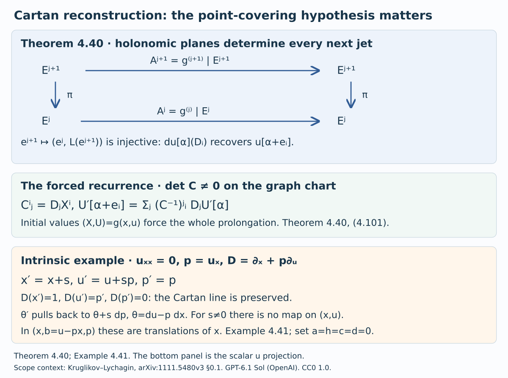
Open Figure 4.16 at full size (editable SVG) · Reproduce Figure 4.16 (Python)

Figure 4.16. Theorem 4.40 and the scalar projection of Example 4.41. Brackets label graph derivatives of one dependent component. Plane injectivity proves reconstruction over a point map. The lower example distinguishes an intrinsic Cartan action from that hypothesis.
Example 4.41 (an intrinsic affine quotient tower). We use $e^a=\sum_{m\ge0}a^m/m!$. Termwise differentiation gives $(e^a)'=e^a$, and the binomial formula in the product gives $e^{a+b}=e^ae^b$; in particular $e^ae^{-a}=1$. These identities also hold formally. On bounded real intervals the terms and their differentiated series have uniformly geometric tails after a sufficiently large index, justifying the analytic identities.
Take two functions $u,w$ of $x$ and the equation $u_{xx}=0$. Set $p=u_x$, $z=w_x$, $b=u-px$, and $w_j=D_x^jw$. Its infinite tower has coordinates
$$ \begin{gathered} x,b,p,w,z,w_2,w_3,\ldots,\\ Dx=1,\quad Db=Dp=0,\\ Dw=z,\quad Dz=w_2,\\ Dw_j=w_{j+1}. \end{gathered} \tag{4.103} $$Choose the basic point manifold $M'=E^1$ with coordinates $(x,b,p,w,z)$. The equation on $M'$ is $b_x=p_x=0$, $w_x=z$. Its order-$k$ fibre has free coordinates $w_2,\ldots,w_{k+1}$. Every adjacent projection is an affine-line projection and every lower jet extends by a free choice of the next derivative. This proves regularity, algebraic integral fibres and formal integrability in this presentation.
Consider the five-parameter transformations
$$ \begin{gathered} x'=x+s,\quad b'=b+h,\\ p'=p+a,\quad z'=e^az+c,\\ w'=e^aw+cx+d. \end{gathered} \tag{4.104} $$Composition, first with parameters indexed 1 and then 2, has parameters
$$ \begin{gathered} s=s_1+s_2,\quad h=h_1+h_2,\\ a=a_1+a_2,\\ c=e^{a_2}c_1+c_2,\\ d=e^{a_2}d_1+c_2s_1+d_2. \end{gathered} \tag{4.105} $$Direct substitution proves these identities. The identity parameters vanish, and the inverse parameters are $(-s,-a,-h,-e^{-a}c,e^{-a}(cs-d))$, in the order $(s,a,h,c,d)$. Every source and target point of $M'$ are related by exactly one transformation: solve successively for $s,h,a,c,d$. The action is therefore simply transitive.
Its finite-order jet presentation is explicit. For a transformation with target functions $(X,B,P,W,Z)$, the first-order Lie equations are
$$ \begin{gathered} dX=dx,\quad dB=db,\\ dP=dp,\\ dZ=e^{P-p}dz,\\ \begin{aligned} dW&=e^{P-p}dw\\ &\quad+(Z-e^{P-p}z)dx. \end{aligned} \end{gathered} \tag{4.106} $$The first three equations make $X-x,B-b,P-p$ constants $s,h,a$. The next makes $Z-e^az$ a constant $c$; the last makes $W-e^aw-cx$ a constant $d$. They are precisely (4.104). Every source and target pair consequently has one admissible first jet. Differentiation uniquely determines every next jet, supplied by the same actual transformation. Thus the pseudogroup $H$ is of order one and formally integrable, with $H^k\cong M'\times M'$ for every $k\ge1$. All its fixed-point jet groups are trivial, hence algebraic, with algebraic actions on the equation fibres. Algebraicity here concerns fibres over $M'$; the basic coordinates are smooth coordinates.
The transformations preserve the equation: $Dx'=1$, $Db'=Dp'=0$, $Dw'=z'$ and $Dz'=e^aw_2$. Thus
$$ \begin{gathered} H_*D=D,\\ w'_j=e^aw_j\quad(j\ge2). \end{gathered} \tag{4.107} $$In the original coordinates their $u$ component is $u'=u+ax+sp+as+h$. For $s\ne0$ it depends on $p=u_x$ and has no projection to the original $(x,u,w)$ space. With $a=h=c=d=0$, the contact form $du-p\,dx$ pulls back to $du-p\,dx+s\,dp$, which is not in the span of $du-p\,dx$ and $dw-z\,dx$. This is a genuine intrinsic symmetry of the equation.
Put
$$ \begin{gathered} I_j=e^{-p}w_j\quad(j\ge2),\\ DI_j=I_{j+1}. \end{gathered} \tag{4.108} $$They are full invariants by (4.104) and (4.107). To see that they give all invariants, use the parameters
$$ \begin{gathered} s=-x,\quad h=-b,\\ a=-p,\quad c=-e^{-p}z,\\ d=e^{-p}(xz-w). \end{gathered} \tag{4.109} $$They move the basic point to zero and the higher derivatives to $I_2,I_3,\ldots$. Every orbit has exactly one such representative. Consequently the orbit maps, their invariant fields and adjacent quotient projections are
$$ \begin{gathered} q_k:S^k\longrightarrow\mathbb A^k,\\ q_k=(I_2,\ldots,I_{k+1}),\\ F_k=\mathbb R(I_2,\ldots,I_{k+1}),\\ \mathbb A^{k+1}\longrightarrow\mathbb A^k. \end{gathered} \tag{4.110} $$On a fixed basic-point fibre the coordinate change $w_j\mapsto I_j$ is an invertible scalar multiplication. On the total analytic bundle, basic coordinates together with the $I_j$ give an explicit product coordinate system. Thus the fibres in (4.110) are full orbits. Equality at all orders also gives one actual parameter transformation between the infinite jets, by (4.109).
An invariant rational in the jet fibre variables restricts at basic point zero to a rational function of the $I_j$, and normalization recovers it everywhere. For functions rational through $S^1$ and polynomial above it, both normalization and its inverse preserve polynomiality in all higher variables. Their coefficients $e^{\pm p}$ are allowed basic functions on $M'$. Hence the full algebra in this class is
$$ \begin{gathered} \mathcal A_1^H=\mathbb R(I_2)[I_3,I_4,\ldots]\\ =\mathbb R(I_2)[D^mI_2:m\ge1]. \end{gathered} \tag{4.111} $$This gives the complete invariant-generation and affine-orbit calculation directly. Fibrewise rationality relative to the original $(x,u,w)$ has a different meaning, which can be determined exactly.
Lemma 4.42 (a rational differential constant field). If $F$ has characteristic zero, the constants of $\delta=\partial_p+t\partial_t$ in $F(p,t)$ are exactly $F$. In particular a nonzero rational function of $p$ cannot satisfy $y'=cy$ for a nonzero constant $c\in F$.
Proof. Inject $F(p,t)$ into $F(p)((t))$: factor a denominator as $t^m$ times a polynomial with nonzero constant term and invert that factor by the formal geometric series. If $R=\sum_n a_n(p)t^n$ and $\delta R=0$, uniqueness of coefficients gives
$$ a'_n(p)+n a_n(p)=0. \tag{4.112} $$For $n\ne0$, write a nonzero $a_n=f/g$ with coprime polynomials. Then $f'g-fg'=-nfg$ is impossible: the degree on the left is at most $\deg f+\deg g-1$, while that on the right is $\deg f+\deg g$. The same argument proves the last assertion for any nonzero $c$. For $n=0$, $f'g=fg'$ and coprimality imply $f\mid f'$ and $g\mid g'$. Characteristic zero forces both to be constant. Thus $a_0\in F$ and all other coefficients vanish. This proves $R\in F$; the reverse inclusion is immediate. $\square$
Proposition 4.43 (the coefficient class depends on the base). In Example 4.41, the full $H$-invariants of original order at most $j\ge2$ that are rational in the derivative coordinates over $(x,u,w)$ form the field
$$ \mathbb R(w_3/w_2,\ldots,w_j/w_2). \tag{4.113} $$For $j=2$ this means $\mathbb R$. These invariants do not separate orbits on any nonempty $H$-invariant domain that is fibrewise Zariski open in the original presentation. In particular the coefficient class in (4.111) does not automatically transfer to the original base.
Proof. Restrict an invariant to $x=u=w=0$. It is rational in $p,z,w_2,\ldots,w_j$. The subgroup with $s=h=d=0$ preserves this locus and acts by
$$ \begin{gathered} p'=p+a,\\ z'=e^az+c,\\ w'_i=e^aw_i\quad(i\ge2). \end{gathered} \tag{4.114} $$Translation in $c$ removes dependence on $z$: the rational derivative $\partial_zf$ vanishes, and the coprime numerator–denominator argument in Lemma 4.42 gives its constant field. On $w_2\ne0$ use the independent rational coordinates $t=w_2$, $r_i=w_i/w_2$ for $3\le i\le j$. Differentiating invariance in $a$ gives $(\partial_p+t\partial_t)f=0$, with every $r_i$ fixed. Lemma 4.42 over $F=\mathbb R(r_3,\ldots,r_j)$ proves that the restricted function belongs to this field.
Restriction loses no invariant information. For any jet choose $a=c=0$, $s=-x$, $h=-u+px$ and $d=-w$. These parameters send $x,u,w$ to zero and keep $p,z,w_i$ unchanged. Thus the original invariant equals the restricted function just found. Conversely all the ratios in (4.113) are invariant under the entire group, by (4.107). This proves the exact field equality, allowing arbitrary smooth dependence on the original basic coordinates before restriction.
At $x=u=w=p=z=0$, take two jets with unequal nonzero $w_2$ and identical ratios $r_i$. Every rational invariant in (4.113) has equal values wherever defined, while $I_2=w_2$ differs. The orbit normalization proves they are inequivalent.
This failure persists on every nonempty Zariski open of the fixed original fibre. Choose a principal open inside it and intersect with $w_2\ne0$. The invertible rational coordinate change to $(p,z,t,r_i)$ takes its nonzero defining polynomial to a nonzero rational expression. After clearing a power of $t$, choose real $p,z,r_i$ so the resulting polynomial in $t$ is not identically zero. Such a choice exists by induction on the number of variables over the infinite field $\mathbb R$. Only finitely many $t$ are excluded; two distinct allowed amplitudes have the same ratios and different $e^{-p}t$. Finally, any nonempty invariant fibrewise open has a nonempty open intersection with this fixed original fibre, since the preceding reset map moves every point into it. The failure therefore holds on the asserted invariant domains.
By Lemma 4.42, $e^{-p}$ is not rational in the original derivative $p$: its nonzero rational expression would satisfy $y'=-y$. On $M'$ it is an ordinary analytic basic coefficient. The action also has no projection to the original basic manifold. Thus the two presentations do not have interchangeable algebraicity and coefficient hypotheses. This is an obstruction to automatic transfer, not a counterexample to Theorem 4.38 on its specified base. $\square$
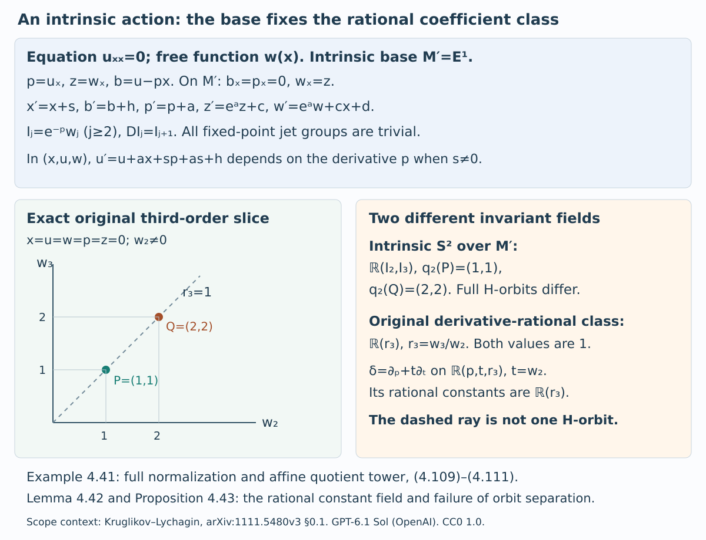
Open Figure 4.17 at full size (editable SVG) · Reproduce Figure 4.17 (Python)

Figure 4.17. Example 4.41, Lemma 4.42 and Proposition 4.43. The two plotted points are exact original third-order jets, with the other basic coordinates zero. The ray records equality of $w_3/w_2$; it is not an $H$-orbit in that fixed slice. The intrinsic quotient distinguishes its amplitudes.
Theorem 4.40 supplies the characteristic dictionary for a Cartan action covering a point map. Theorem 4.45 proves the corresponding actual finite-action identification and Lie–Tresse theorem from the finite Cartan identity. Proposition 4.46 treats specified intrinsic finite presentations. The regularity and coefficient hypotheses are part of those data; Proposition 4.43 prevents their transfer by an arbitrary change of base.
Section 4.21 and Figures 4.16–4.17: GPT-6.1 Sol (OpenAI). CC0 1.0.
4.22. Differential jet actions and finite intrinsic presentations
The base and its jet groupoids are part of a finite-order differential action. We first give a precise finite Cartan identity for an action specified on the equation. It determines the actual action maps and permits application of the full Lie–Tresse proof without prescribing an ambient prolongation formula. Intrinsic applications retain the coefficient class of their specified finite presentation.
Lemma 4.44 (algebraicity above the defining order). Let a transitive jet pseudogroup have smooth onto projections and be the ordinary formally integrable prolongation of its order-$r$ equations. If its fixed-point group at order $r$ is algebraic, then every higher fixed-point group is algebraic.
Proof. Fix a point $o$. Choose local smooth sections $t(a)\in G^r(o,a)$ with $t(o)=\mathrm{id}$, holomorphic in the complex case. These exist by the bundle projection and the coordinate-minor construction of Lemma 4.34. For an $r$-jet $g:a\to b$, groupoid composition gives
$$ \begin{gathered} \kappa_{a,b}(g)=t(b)^{-1}g\,t(a),\\ g\in G^r(a,b)\\ \Longleftrightarrow\\ \kappa_{a,b}(g)\in G^r(o,o). \end{gathered} \tag{4.115} $$Composition of finite jets is polynomial in Taylor coefficients. Their inverse is polynomial with the first-derivative determinant inverted: the inverse linear coefficient is the inverse matrix, and at each later degree the unknown coefficient is multiplied by that same matrix. Solving recursively proves the assertion in every degree. Thus $\kappa_{a,b}$ is an algebraic fibre isomorphism whose coefficients depend smoothly on $a,b$.
Choose finitely many generators of the polynomial ideal of $G^r(o,o)$ in the differential-group coordinate algebra, using the earlier programme proof of the polynomial Noetherian theorem. The determinant localization is a quotient after adjoining one variable inverse to that determinant, so the same theorem applies. Pulling the generators back gives equations $F(a,b,g_r)=0$, polynomial in the jet entries with determinant denominators and smooth basic coefficients. They describe the whole groupoid, including all its components, by (4.115).
Differentiate these equations ordinarily in the source, with $b=g(a)$. Differentiating a basic coefficient introduces its source and target derivatives and the first derivative of $g$; differentiating a jet entry raises its order by one. Only further powers of the same invertible determinant appear. Consequently the prolonged list through order $r+k$ is still a finite polynomial list in the jet entries through $r+k$, with smooth basic coefficients.
This list describes the genuine prolongation. At a regular point, independent defining rows with an invertible Jacobian minor are normal coordinates. A smooth function vanishing on the equation is a sum of these normal coordinates times smooth functions: in coordinates $(v,z)$, write $f(v,z)-f(v,0)$ as the sum of $z_i\int_0^1\partial_{z_i}f(v,tz)\,dt$. The product rule therefore makes prolongation independent of that choice of generators. The regular-ideal argument of Lemma 4.26 and the given ordinary-prolongation hypothesis apply at each step. Fixing $a=b=o$ in the resulting rows leaves polynomial equations with constant coefficients in the differential group of order $r+k$. Hence its actual fixed-point subgroup is algebraic. The same argument works at every base point. No algebraicity of the smooth base is needed. $\square$
For groups represented by polynomial functions on their actual real jet sets, geometric surjectivity of the complexified fixed-point group projections follows as well. The real image is onto and is Zariski dense in that target. The algebraic homomorphism image is closed by the image argument in Theorem 4.38, so it is the whole geometric target; the smoothness and translation argument of Theorem 4.35 gives tangent lifting. If abstract real schemes are supplied instead, geometric formal integrability is part of the specified data. Density of real points is not inferred for a scheme with extra nonreal components, nor is surjectivity inferred for a general variety map.
A regular Cartan jet action on $E$ consists of maps $\sigma_j:G^j\times_M E^j\to E^j$ obeying units, composition, inverses and every truncation identity. Its order-zero map is the source-to-target point action, and its fixed-point fibre maps are algebraic regular actions. Its differential compatibility is the following finite identity.
Write $s:G^j\to M$ for the basic source. An ordinary $(j+1)$-jet $g_{j+1}$ determines a holonomic $\dim M$ plane $L_G\subset T_{g_j}G^j$ on which $ds$ is an isomorphism. An equation jet $e_{j+1}$ determines $L_E\subset T_{e_j}E^j$. Pair $v\in L_E$ with the unique vector in $L_G$ whose basic source projection is $d\pi_{j,0}(v)$. The resulting plane is
$$ \begin{gathered} \Lambda(g_{j+1},e_{j+1})\\ =\{(w,v):v\in L_E,\\ w=(ds|_{L_G})^{-1}d\pi_{j,0}(v)\}. \end{gathered} \tag{4.116} $$The Cartan identity is
$$ \begin{gathered} d\sigma_j\bigl(\Lambda(g_{j+1},e_{j+1})\bigr)\\ =L_E\bigl(\sigma_{j+1}(g_{j+1},e_{j+1})\bigr). \end{gathered} \tag{4.117} $$It is required at the actual admissible jets, including the geometric fibre points in the statement. The two holonomic planes are tangent by the ordinary-prolongation hypotheses. This is preservation of Cartan differentiation with the determining jet re-expanded along its source. It states compatibility of the action, rather than a formula for that action. For transformations of a differential equation, it is the usual Cartan-preservation identity; it also defines that compatibility for formal determining groupoids without assuming realization by germs.
Theorem 4.45 (Lie–Tresse for a regular differential jet action). Let $G$ be transitive, finite order and formally integrable with smooth onto determining projections and algebraic fixed-point group at the defining order. Let $E^j\subset J^j(M,n)$, $E^0=M$, be a regular finite-order formally integrable equation with the nonsingular irreducible algebraic fibres, affine higher projections and geometric conventions of Section 4.16. Suppose $G$ has a regular Cartan jet action on $E$. No ambient prolongation formula for that action is assumed. Then there are a finite $L$, one nonempty invariant fibrewise Zariski-open $U\subset E^L$, finite full invariants $f_b$ of order at most $L$ and quotient invariant derivations $\nabla_1,\ldots,\nabla_r$, $0\le r\le n$, such that
$$ \begin{gathered} F_L=\mathbb K(f_1,\ldots,f_s),\\ \mathcal A_L =F_L[\nabla^\alpha f_b:|\alpha|>0]. \end{gathered} \tag{4.118} $$Here the class is rational through order $L$ and polynomial above it, relative to the given base $M$. The full rational invariant field is $\operatorname{Frac}\mathcal A_L$. On every complete higher inverse image of this same $U$, the actual full orbit symbols and their finite presentations, quotient-symbol cohomology, affine geometric quotient tower and finite/formal geometric orbit separation have the conclusions of Theorems 4.28–4.38.
Proof. Lemma 4.44 gives the algebraic higher determining groups. We identify the finite action maps by induction. At order zero this is the specified point action. Suppose $\sigma_j$ equals the ordinary point action as a map on $G^j\times_M E^j$. Differentiate that equality on the plane (4.116). The transformed-graph chain rule gives
$$ \begin{gathered} d\sigma_j\bigl(\Lambda(g_{j+1},e_{j+1})\bigr)\\ =L_J\bigl(g_{j+1}^{(j+1)}(e_{j+1})\bigr). \end{gathered} \tag{4.119} $$Here $L_J$ denotes the ambient holonomic plane; the ordinary candidate has not yet been shown to lie in the next equation level. The identity uses only finite jets: choose Taylor-polynomial representatives for the map and the graph and differentiate $j_j(g(N))=g^{(j)}(j_jN)$. The representatives need not solve either determining or equation system. Their specified holonomic planes are tangent at the jet in question, so the differential of the restricted action is the one computed by this chain rule.
Equations (4.117) and (4.119) give equal ambient holonomic planes for the two candidate next jets. They also have the same preceding jet by truncation compatibility. The ambient plane injectivity proved in Theorem 4.40 makes the next jets equal, and hence places the ordinary candidate in the next equation level. Thus
$$ \begin{gathered} \sigma_j(g_j,e_j)=g_j^{(j)}(e_j)\\ \text{for every }j. \end{gathered} \tag{4.120} $$The induction holds at every admissible geometric finite jet. It does not use a generic infinite jet or a convergence theorem. The action at level $j$ uses no ordinary determining jet above order $j$.
At a fixed basic point these are equal action morphisms. First view both maps in the ambient jet space. They agree at all geometric points of $G_a^j\times E_a^j$, and the reduced product point test of Theorem 4.19 applies component by component. The equation fibre is nonsingular and geometrically integral, and the group is reduced and smooth in characteristic zero by Theorem 4.35. Thus the coordinate-ring maps agree and the ordinary map factors through the same reduced equation. Their stabilizer fibres are consequently equal as schemes. Their tangent kernels, determining-projection inverse images, full orbit tangents and vertical intersections are identical, with all lower determining-jet contributions retained. No lifting of an entire stabilizer has been inferred from a tangent-image equality.
The point action preserves the actual reduced equation ideal too. A target defining function composed with it vanishes on every geometric source equation point by (4.120), since $\sigma_j$ takes values in $E^j$. The same reduced point test makes this pullback zero in the source coordinate algebra. Apply the inverse arrow as well. This verifies point invariance of the given equation; it was not an additional premise.
All hypotheses of the complete point-action proof are now verified for this actual action. Its characteristic observations are exactly (4.102). Theorem 4.28 constructs the common invariant domain and the actual specialized full-symbol presentation with stable low-order stabilizer images; Theorem 4.30 gives quotient-symbol cohomology there; Theorem 4.32 supplies actual polynomial equation coordinates with low-order denominators. Theorem 4.21 and Corollary 4.22 apply to the same invariant field and Cartan distribution. Lemma 4.34 and Theorems 4.35–4.36 supply the transitive bridge, differential spanning and field-independent geometric descent.
The construction of Theorem 4.38 therefore applies to these identified action morphisms. It chooses the finite bound before the invariant generators, transports one derivative basis over all higher extensions of one invariant open, proves the full affine orbit level spaces and flat quotient induction, and makes every lower polynomial coefficient a full invariant by uniqueness. Its transporter-image argument supplies a compatible formal arrow. This proves (4.118) and all the stated quotient and orbit conclusions. The real assertion keeps its geometric meaning. The base and coefficient class have stayed fixed throughout. $\square$
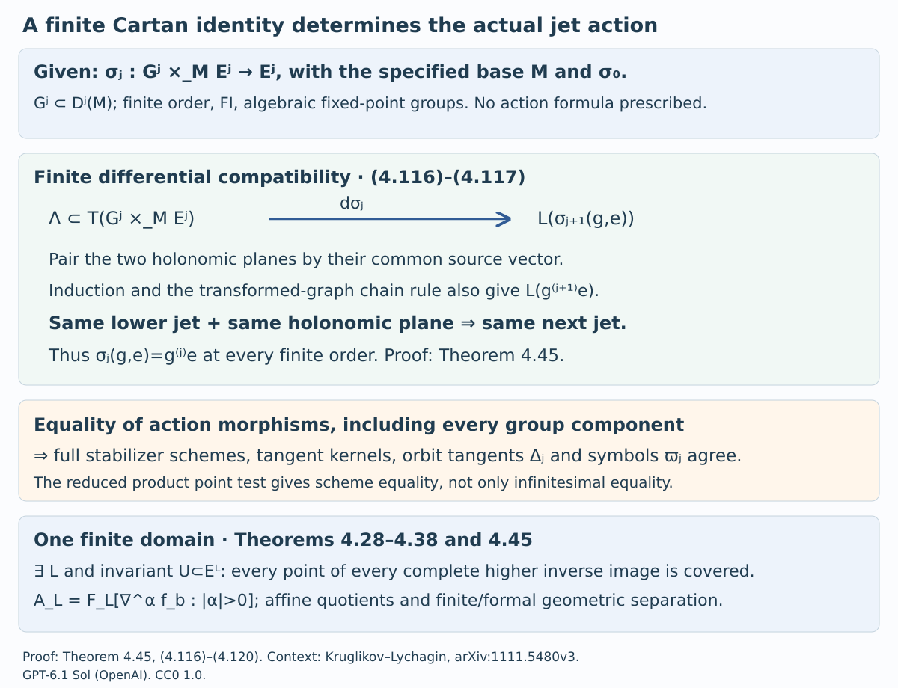
Open Figure 4.18 at full size (editable SVG) · Reproduce Figure 4.18 (Python)

Figure 4.18. Equations (4.116)–(4.120) in Theorem 4.45. Equality concerns actual finite action morphisms and full stabilizer schemes. The lower row records the one-domain conclusion, including every complete higher inverse image.
Proposition 4.46 (holonomic intrinsic presentation). Let $E\subset J^\infty(M_0,n)$ be a regular formally integrable equation of finite defining order at most $q$, with $q\ge1$, and set $N=E^q$. Its holonomic realization is a first-order equation $S$ on $N$ with compatible isomorphisms
$$ \begin{gathered} \Psi_k:E^{q+k}\longrightarrow S^k,\\ S^k\subset J^k(N,n),\\ \partial_x^\beta v_\alpha=u_{\alpha+\beta},\\ v_\alpha=u_\alpha|_N,\\ |\alpha|\le q,\quad|\beta|\le k. \end{gathered} \tag{4.121} $$Suppose a specified intrinsic finite presentation gives a regular Cartan jet action on $S$ satisfying Theorem 4.45 at the base $N$. Then that theorem pulls back to $E$ with cutoff $q+L$, relative to this same base $N$. Intrinsic determining order $k$ acts through original equation order $q+k$. No preservation of the earlier $M_0$ coefficient class is asserted.
Proof. Every multi-index $\gamma$ of length at most $q+k$ can be written $\alpha+\beta$ with $|\alpha|\le q$, $|\beta|\le k$, so (4.121) recovers every original coordinate. At level one its image has the lower holonomy equations and top symmetry equations
$$ \begin{gathered} \partial_i v_\alpha=v_{\alpha+e_i} \quad(|\alpha|<q),\\ \partial_i v_\alpha=\partial_jv_\delta\\ \text{if }|\alpha|=|\delta|=q,\\ \alpha+e_i=\delta+e_j, \end{gathered} \tag{4.122} $$together with tangency to $E^q$. These define $S^1\cong E^{q+1}$ in the chart of planes transverse to the original $x$ coordinates.
Differentiate the lower equations to replace a derivative of $v_\alpha$, $|\alpha|<q$, by the shifted-index entry until its derivative order is zero or $|\alpha|=q$. At top degree, differentiated symmetry equations identify two distributions of a fixed $\gamma$ between $\alpha$ and $\beta$ that exchange one $\alpha$ index with one $\beta$ index. Any two length-$q$ choices of $\alpha$ are connected by such exchanges: choose an index too large and one too small compared with the desired choice and move one copy. The sum of positive differences decreases, so the process terminates. Thus all the entries have the unique value $u_\gamma$. Conversely those values satisfy every differentiated identity. Tangency and its derivatives are exactly the original prolonged rows because $q$ is at least the defining order. Hence
$$ \begin{gathered} (S^1)^{(k-1)}=S^k,\\ S^k=\Psi_k(E^{q+k})\quad(k\ge1). \end{gathered} \tag{4.123} $$Smoothness and onto affine higher projections transfer. On a fixed $N$ fibre the successive spaces are algebraic affine bundles: a rank minor of the linear highest-equation matrix solves for its dependent entries, and residual constraints vanish by onto projection. These affine-product charts show nonsingularity and irreducibility inductively. Two nonempty total opens project to intersecting base opens and meet in an irreducible affine fibre. Both total derivatives in (4.121) shift $\beta$ by $e_i$, so the Cartan distributions are identified.
The coefficient comparison is exact. Choose intrinsic coordinates $(x,y)$ on $N$ with the same independent $x$. Each $v_\alpha$ is a smooth basic function of $(x,y)$. Repeated chain and product rules make its derivative of order $\beta$ polynomial in the $y$ graph derivatives through $|\beta|$, with coefficients on $N$. Conversely each $y$ is a smooth basic function of the finite $v_\alpha$; its repeated graph derivatives are polynomial in original coordinates through order $q+|\beta|$. Implicit algebraic coordinates require only an inverse Jacobian minor on $N$, a basic coefficient. No higher denominator is introduced in either direction. Therefore
$$ \begin{gathered} \text{rational through }S^L,\\ \text{polynomial above }L\\ \Longleftrightarrow\\ \text{rational through }E^{q+L},\\ \text{polynomial above }q+L, \end{gathered} \tag{4.124} $$with both classes relative to $N$. This is one fixed cutoff shift, not repeated enlargement of a bound.
The specified action on $S$ has all the data of Theorem 4.45. Under $\Psi$, its finite action maps, full orbits and stabilizers correspond because (4.121) is an isomorphism commuting with projections. By Theorem 4.40, action on $S^k$ uses only the ordinary determining $k$-jet and acts through original order $q+k$. Pull back the invariant domain and the entire higher inverse-image tower of Theorem 4.45. The Cartan identification transports its derivations and (4.124) transports its complete invariant algebra. Symbol and cohomology assertions refer to this specified intrinsic jet presentation; no equality with a differently graded earlier Spencer complex is presumed. This proves the stated finite/formal geometric conclusions at cutoff $q+L$. $\square$
Example 4.47 (a higher-jet domain of a contact map). A local symmetry descending to $E^q$ need not already give a regular action on every full higher fibre. For scalar curves put $p=u_x$ and consider
$$ \begin{gathered} X=p,\quad P=-x,\\ U=u-px. \end{gathered} \tag{4.125} $$Its inverse is $x=-P$, $p=X$, $u=U-XP$. Moreover $dU-P\,dX=du-p\,dx$, so it is a contact map on the first-jet space. Writing $a=u_{xx}$ gives $D_xX=a$ and
$$ \begin{gathered} D_X=a^{-1}D_x,\\ U_{XX}=-a^{-1},\\ U_{XXX}=u_{xxx}/a^3. \end{gathered} \tag{4.126} $$These identities follow by applying $a^{-1}D_x$ first to $P=-x$ and then to $-a^{-1}$. At $a=0$, $D_xX=D_xU=0$ and $D_xP=-1$, so the transformed lifted curve is vertical over the original point plane and outside the original graph-jet chart. The contact plane has basis $\partial_x+p\partial_u,\partial_p$. Its lines form a projective line: the finite slopes are spanned by $\partial_x+p\partial_u+a\partial_p$, and the missing line is spanned by $\partial_p$. This supplies the projective completion and explains the higher-jet graph domain $a\ne0$. The map on $E^1$ alone therefore does not establish a regular action on the entire affine curvature fibre. Proposition 4.46 requires the actual regular finite-level presentation.
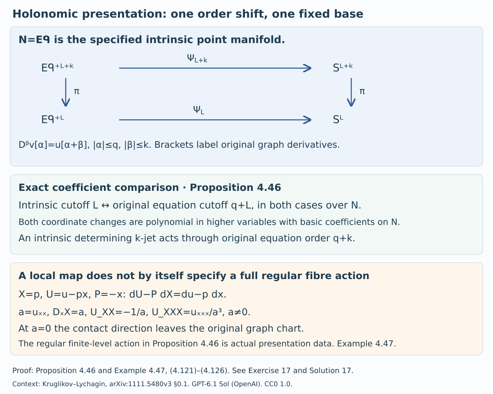
Open Figure 4.19 at full size (editable SVG) · Reproduce Figure 4.19 (Python)

Figure 4.19. Proposition 4.46 and Example 4.47. The order and coefficient comparison uses the same basic manifold $N$ on both sides. The contact-map inset explains why a local higher-jet domain cannot be omitted from a finite-presentation hypothesis. See Exercise 17 and Solution 17.
Theorem 4.45 proves the global Lie–Tresse conclusion for the specified regular Cartan jet action. The action may be given only on the equation; the finite Cartan identity determines its point-jet formulas. Proposition 4.46 treats intrinsic finite presentations at their own base. A finite differential substitution that lacks such finite-jet action data is a different object, and Proposition 4.43 prevents identification of coefficient classes under an arbitrary change of base.
Section 4.22 and Figures 4.18–4.19: GPT-6.1 Sol (OpenAI). CC0 1.0.
4.23. Contact prolongations and their domains
The graph domain of a specified contact map is already determined at second order. This gives the general form of the scalar domain in Example 4.47 and Figure 4.19. The shared invariant domain for the specified regular actions of Theorem 4.45 is supplied by Theorem 4.28.
Proposition 4.48 (one second-order domain for a contact map). Let $n\ge1$, let $\mathbb K=\mathbb R$ or $\mathbb C$, and let
$$ \begin{gathered} \Phi(x,u,p)=(X,U,P),\\ \Phi^*\bigl(dU-\sum_jP_jdX^j\bigr)\\ =\mu\bigl(du-\sum_ip_i dx^i\bigr),\\ \mu\ne0 \end{gathered}\tag{4.127} $$be a smooth, respectively holomorphic, local diffeomorphism on a first-jet chart. On a second jet with symmetric Hessian $H=(u_{ij})$, put
$$ \begin{aligned} &A^j{}_i=D_iX^j =X^j_{x^i}+p_iX^j_u\\ &+\sum_lu_{li}X^j_{p_l}, D_\Phi=\det A. \end{aligned}\tag{4.128} $$For every first jet in the domain of $\Phi$, the polynomial $D_\Phi$ in the symmetric Hessian entries is not identically zero. For every $k\ge2$, $\Phi$ has a unique graph-jet prolongation on the full inverse image in $J^k$ of
$$ \mathcal U_\Phi^2=\{D_\Phi\ne0\}\subset J^2. \tag{4.129} $$It is smooth, respectively holomorphic. Its transformed derivatives of order at most $k$ are rational in the input jet coordinates of orders $2,\ldots,k$, with coefficients smooth, respectively holomorphic, on the first-jet chart. Their only higher-coordinate denominators are powers of the same $D_\Phi$. These prolongations respect truncation, composition on composable graph domains, and inverses. At order $k$ they are also characterized by preservation of the Pfaffian system (4.134) among maps with the specified first-jet part $\Phi$ on (4.129).
Proof. Write $\theta=du-\sum_i p_i dx^i$. At a fixed first jet, identify $\ker\theta$ with pairs $(\dot x,\dot p)\in\mathbb K^n\oplus(\mathbb K^n)^*$, setting $\dot u=p_i\dot x^i$. Its form $d\theta=\sum_i dx^i\wedge dp_i$ is nondegenerate. The vertical space $V=\{\dot x=0\}$ and every symmetric graph
$$ L_H=\{(v,Hv):v\in\mathbb K^n\} $$are Lagrangian: the form vanishes on them and their dimension is half the ambient dimension. Differentiating (4.127) and restricting to $\ker\theta$ gives $\Phi^*d\theta'=\mu d\theta$. Thus $d\Phi$ induces an invertible conformal symplectic map of the contact hyperplanes. The inverse image $W=(d\Phi)^{-1}(V')$ of the target vertical space is consequently Lagrangian. The matrix $A$ is exactly the target $X$-projection of $d\Phi$ on $L_H$. Hence
$$ \begin{gathered} D_\Phi(H)\ne0\\ \Longleftrightarrow L_H\cap W=0. \end{gathered}\tag{4.130} $$Here is an explicit common-transversality argument. Let $E$ be the $x$-projection of $W$, of dimension $d$, and choose an $x$-basis with $E=\operatorname{span}(e_1,\ldots,e_d)$; use the dual $p$-basis $f_1,\ldots,f_n$. Isotropy implies
$$ W\cap V=E^\perp=\operatorname{span}(f_{d+1},\ldots,f_n). $$Indeed, containment follows by pairing a vertical vector of $W$ with all of $W$, and both sides have dimension $n-d$ by the kernel dimension of the projection. Subtracting vectors of this intersection, choose the remaining basis vectors of $W$ as
$$ e_i+\sum_{j\le d}S_{ji}f_j\qquad(1\le i\le d). $$Their mutual pairings show $S_{ij}=S_{ji}$. Choose $H$ with upper-left block $S+I_d$ and all other blocks zero. If $(v,Hv)$ belongs to $W$, then $v\in E$ and its first $d$ vertical coordinates must equal $Sv$; they also equal $(S+I_d)v$. Thus $v=0$. This also covers $d=0$, where $W=V$. Equation (4.130) proves that $D_\Phi$ is nonzero for at least one symmetric $H$ at every first jet. Its entries in (4.128) are affine in $H$, so it is a polynomial in those entries.
On (4.129), define
$$ \begin{aligned} &\widetilde D_j=(A^{-1})^i{}_jD_i, \widetilde u_j=P_j,\\ &\widetilde u_{j,J}=\widetilde D_JP_j. \end{aligned}\tag{4.131} $$For order two the formula is the symmetric matrix
$$ \begin{aligned} &\widetilde H=BA^{-1}, B_{ji}=D_iP_j. \end{aligned}\tag{4.132} $$Its symmetry also follows directly from the contact calculation: $d\Phi(L_H)$ is isotropic, and, because $A$ is invertible, it is the graph of $BA^{-1}$. The graph is isotropic precisely when this matrix is symmetric.
For completeness these recurrences define finite jets without any assumption about convergence of a formal series. Realize an input finite jet by a Taylor polynomial graph. The Taylor expansion of its transformed $X$ has invertible linear term $A$. Its finite inverse is constructed degree by degree: after degrees below $r$ have been found, the unknown degree-$r$ inverse term occurs multiplied by $A$, so the degree-$r$ equation has exactly one solution. Apply this finite substitution to the Taylor expansion of $U$. Along the input graph, (4.127) gives $dU=P_jdX^j$, so its first transformed derivatives are exactly $P_j$. Differentiation then gives (4.131). The derivative of order $r\ge2$ uses input derivatives only through order $r$: this follows inductively because $P_j$ has order one, each total derivative raises order by at most one, and $A^{-1}$ has order two. Thus arbitrary choices of higher Taylor terms do not affect the constructed output jet. The resulting mixed derivatives are symmetric because they are coefficients of that single finite Taylor graph.
Every entry of $A^{-1}$ is a cofactor divided by $D_\Phi$. At order two, $B$ and the cofactors are polynomials in $H$ with smooth or holomorphic first-jet coefficients. Total differentiation of such a coefficient introduces only further polynomial jet factors, and
$$ D_i(D_\Phi^{-r})=-rD_\Phi^{-r-1}D_iD_\Phi. $$Induction in (4.131) therefore proves the asserted coefficient class and denominator control at every order. In particular, a nonzero value of $D_\Phi$ at the second jet suffices for every higher jet above it.
Finite Taylor substitution is associative and its inverse with invertible linear term is unique by the same degree argument. Consequently the prolongations respect truncation, composition and inversion. At second order the ordinary matrix chain rule is
$$ \begin{aligned} &A_{\Psi\circ\Phi} =(A_\Psi\circ\Phi^{(2)})A_\Phi,\\ &D_{\Psi\circ\Phi} =(D_\Psi\circ\Phi^{(2)})D_\Phi \end{aligned}\tag{4.133} $$on composable graph domains. For the inverse map this gives $D_{\Phi^{-1}}\circ\Phi^{(2)}=D_\Phi^{-1}$. Thus the inverse prolongation is defined on the image of every stated domain, and is a genuine inverse of its finite-jet map. This also proves that the constructed smooth or holomorphic maps are local diffeomorphisms. Uniqueness follows from the finite Taylor construction, since every input finite jet has such a polynomial representative.
Finally, set $u_\varnothing=u$ and $u_i=p_i$. The finite contact Pfaffian system is
$$ \begin{gathered} \theta_J=\\ du_J-\sum_i u_{J,i}dx^i=0,\\ |J|\le k-1. \end{gathered}\tag{4.134} $$Its common kernel is spanned by the truncated total derivatives and the vertical vectors of order $k$: solving the equations for the components along $\partial_{u_J}$ gives exactly that span. The pullbacks of the target forms vanish on every truncated total derivative by (4.131), including the order-zero equation by (4.127). They also vanish on every order-$k$ vertical vector: $X$ and $U$ have order one, and each transformed $u_J$ with $1\le|J|\le k-1$ has order at most $|J|$. Thus these pullbacks belong to the span of the forms in (4.134). The inverse map proves equality of the spans, hence preservation of the Pfaffian system.
Conversely, take a map with first-jet part $\Phi$ preserving this system. Evaluate its pulled-back form for $u'_J$ on each truncated total derivative. Starting with $u'_j=P_j$, the equations determine the next transformed derivative coefficients by multiplication with $A^{-1}$. Repeating for $|J|=1,\ldots,k-1$ gives precisely (4.131) and forces the dependence on only the corresponding input orders. For $k=2$ this already determines the entire Hessian. Hence there is no additional choice of any higher component, which proves the stated Pfaffian characterization. $\square$
5. Euclidean curvature
For a graph $y=f(x)$, write $p=f'$, $q=f''$, $r=f'''$. Its oriented tangent is $(1,p)$ and its speed is $\sqrt{1+p^2}$. In the real graph chart with the orientation of increasing $x$, define
$$ \begin{aligned} &\kappa=\frac{q}{(1+p^2)^{3/2}},\\ &D_s=\frac1{\sqrt{1+p^2}}D_x. \end{aligned}\tag{5.1} $$Translation leaves derivatives unchanged. A rotation preserves speed and the determinant of the tangent and its derivative; for a parametrized curve $\gamma$, their ratio $\det(\gamma',\gamma'')/|\gamma'|^3$ is unchanged. This proves invariance of signed curvature and arclength differentiation under $\operatorname{SE}(2)$. In a graph chart, restrict to nearby transformations for which the new increasing independent coordinate agrees with the chosen orientation. A distant rotation that reverses that coordinate requires a change of graph orientation.
Move the point to the origin and rotate its tangent to the positive horizontal axis. The normalized jet has $x=y=p=0$, and its second derivative is $\kappa$. At third order its third derivative is
$$ D_s\kappa=\frac{r}{(1+p^2)^2}-\frac{3pq^2}{(1+p^2)^3}. \tag{5.2} $$Indeed, (5.2) follows by differentiating (5.1), and at a horizontal normalized tangent it equals the third graph derivative. The point and tangent normalization is unique locally. It follows that all invariants through order two are functions of $\kappa$, and all through order three are functions of $\kappa,D_s\kappa$. The prolonged action has rank three from order one onward, so the count is zero at orders zero and one, one at order two, and two at order three.
For comparison, special affine transformations preserve determinants rather than Euclidean length. Where $\det(\gamma',\gamma'')>0$, set $ds=\det(\gamma',\gamma'')^{1/3}dt$. Then $\det(\gamma_s,\gamma_{ss})=1$. Differentiating gives $\det(\gamma_s,\gamma_{sss})=0$, so $\gamma_{sss}=-\kappa_{\rm aff}\gamma_s$, with $\kappa_{\rm aff}=\det(\gamma_{ss},\gamma_{sss})$. These equations define equiaffine curvature and show its invariance under translations and determinant-one linear maps. They apply only on the stated nondegenerate branch.
6. The Schwarzian derivative
Now let the projective group act on the dependent variable alone:
$$ y\longmapsto M(y)=\frac{ay+b}{cy+d},\qquad ad-bc\ne0, $$while $x$ is fixed. Work where $y'\ne0$ and $cy+d\ne0$. Define
$$ S(y)=\frac{y'''}{y'}-\frac32\left(\frac{y''}{y'}\right)^2. \tag{6.1} $$Theorem 6.1. The Schwarzian is invariant under this action. Locally on its regular jet domain, every differential invariant of order at most three is a function of $x$ and $S(y)$.
Proof. Put $L_y=y''/y'$. Differentiation gives $S(y)=D_xL_y-\tfrac12L_y^2$. For a composition $f\circ y$,
$$ L_{f\circ y}=\frac{f''(y)}{f'(y)}y'+L_y. $$Differentiate and subtract half the square. The mixed terms cancel because $y''=L_y y'$, yielding the chain rule
$$ S(f\circ y)=S(f)(y)(y')^2+S(y). \tag{6.2} $$For a Möbius function, $M''/M'=-2c/(cy+d)$, whose derivative is $2c^2/(cy+d)^2$; subtraction of half its square gives $S(M)=0$. Equation (6.2) proves invariance.
To prove completeness, take a jet $(x,y_0,p,q,r)$ with $p\ne0$. The Möbius transformation
$$ M(y)=\frac{(y-y_0)/p}{1+\frac{q}{2p^2}(y-y_0)} \tag{6.3} $$normalizes its dependent-variable coordinates to $\widetilde y=0$, $\widetilde p=1$, $\widetilde q=0$. Its third derivative on the graph is
$$ \widetilde r=\frac rp-\frac32\frac{q^2}{p^2}=S(y). $$The three normalization conditions determine (6.3) uniquely. They define a local orbit section; after normalizing a reference jet, restrict nearby jets so that their relative normalizers lie near the identity. Thus a locally invariant function depends only on the remaining section coordinates $x,S$. Their differentials are independent, since $\partial S/\partial r=1/p\ne0$. For the real identity component, the sign of $p$ is fixed on each regular component; one may use normalized $\widetilde p=-1$ instead on the negative component. The same conclusion holds locally there. $\square$
There are no new invariants below order three besides $x$: the action has ranks one, two, and three on the dependent jet coordinates through orders zero, one, and two. Since $x$ is fixed, $D_x$ itself is an invariant derivative and produces $D_xS,D_x^2S,\ldots$ at higher orders.
7. The projective algebra in any dimension
In homogeneous coordinates $(x,1)$, an infinitesimal matrix
$$ A=\begin{pmatrix}B&b\\c^t&d\end{pmatrix},\qquad \operatorname{tr}B+d=0, $$acts in an affine chart with coefficient field
$$ \begin{aligned} &\xi_A(x)=b+(B-dI)x-(c\\ &\cdot x)x. \end{aligned}\tag{7.1} $$This follows by differentiating the ratio of the first $n$ homogeneous coordinates to the last one for $I+tA$.
Theorem 7.1. The projective infinitesimal fields form a Lie algebra of dimension $n(n+2)$, spanned by
$$ \begin{aligned} &P_i=\partial_{x_i}, L_{ij}=x_j\partial_{x_i},\\ &Q_i=x_iE, E=\sum_jx_j\partial_{x_j}. \end{aligned}\tag{7.2} $$With bracket $XY-YX$, the isomorphism from $\mathfrak{sl}_{n+1}$ is $A\mapsto-\xi_A$.
Proof. Formula (7.1) gives exactly the constant, arbitrary linear, and indicated quadratic fields. To see that every linear matrix occurs, for a desired matrix $L$ choose $d=-\operatorname{tr}L/(n+1)$ and $B=L+dI$. The other blocks supply arbitrary constant and quadratic coefficients. These $n+n^2+n$ fields are independent: separate homogeneous degrees, then the coefficients of $(c\cdot x)x$ force $c=0$.
The kernel of (7.1) is also zero on trace-zero matrices. Its polynomial coefficients force $b=c=0$ and $B=dI$; the trace gives $(n+1)d=0$. The infinitesimal fields of a left matrix action reverse the matrix commutator, so $[\xi_A,\xi_C]=-\xi_{[A,C]}$, as follows either by differentiating the composition law or by the coordinate coefficient formula. Negating the fields gives the claimed bracket-preserving isomorphism. Their dimension equals $\dim\mathfrak{sl}_{n+1}=(n+1)^2-1=n(n+2)$. $\square$
For example,
$$ \begin{aligned} &{}[P_i,L_{kj}]=\delta_{ij}P_k,\\ &{}[L_{ij},L_{k\ell}]=\delta_{i\ell}L_{kj}-\delta_{kj}L_{i\ell},\\ &{}[P_i,Q_j]=\delta_{ij}E+L_{ij},\\ &{}[L_{ij},Q_k]=\delta_{ik}Q_j,[Q_i,Q_j]=0. \end{aligned} $$In the plane the eight fields are $\partial_x,\partial_y,x\partial_x,y\partial_x,x\partial_y,y\partial_y,xE,yE$.
The full isotropy at the affine origin is spanned by the linear and quadratic fields in (7.2), with dimension $n^2+n$. Its linear homogeneous subgroup is $\operatorname{GL}_n$, of dimension $n^2$. These are different groups: the full projective stabilizer also has nonlinear transformations whose quadratic generators vanish to first order at the origin.
Full translation subgroups associated to affine charts are conjugate. To see this precisely, let the hyperplane at infinity be $\ker\ell$ in homogeneous space. Its translations are represented by $I+v\ell$ with $v\in\ker\ell$; multiplication adds $v$ because $(v\ell)(w\ell)=0$. Conjugation by an invertible matrix $C$ gives $I+(Cv)(\ell C^{-1})$, the translation group for $C(\ker\ell)$. The projective group is transitive on hyperplanes. This establishes conjugacy for these translation groups, rather than for every abelian projective subgroup.
The same statement holds for translation subgroups of any fixed dimension $m\le n$. Within an affine chart, such a subgroup translates by a vector subspace $V$ of dimension $m$. Choose a basis of $V$, extend it to a basis of $\mathbb K^n$, and do the same for another $m$-dimensional subspace $W$. The linear map carrying the first basis to the second conjugates the two translation groups. Combining this with the preceding change of affine chart proves the projective conjugacy of all the stated $m$-dimensional translation subgroups. The value of $m$ must agree.
Proposition 7.2 (duality and quadratic subgroups). Let $n\ge1$ and $\mathbb K=\mathbb R$ or $\mathbb C$. On the projective Lie algebra of Theorem 7.1 the linear map
$$ \begin{aligned} &\mathcal D(P_i)=Q_i, \mathcal D(L_{ij})=-L_{ji},\\ &\mathcal D(Q_i)=P_i \end{aligned}\tag{7.3} $$is an involutive Lie algebra automorphism. For an $m$-dimensional vector subspace $A\subseteq\mathbb K^n$, the local transformations
$$ \begin{aligned} &F_a(x)=\frac{x}{1-a^tx}, a\in A,\\ &1-a^tx\ne0 \end{aligned}\tag{7.4} $$form an $m$-parameter group, generated by $q_a=(a^tx)E$. Any two such groups with the same $m$ are conjugate by an invertible linear coordinate change. If $n\ge2$, no local point diffeomorphism realizes (7.3) for the full projective algebra. If $n=1$, the change $y=-1/x$ realizes it on a punctured chart.
Proof. The fields in (7.2) are independent by Theorem 7.1, so (7.3) defines a linear involution. It preserves all the displayed brackets. For example, $E=\sum_iL_{ii}$ gives $\mathcal D(E)=-E$, and
$$ \begin{aligned} [\mathcal D(P_i),\mathcal D(Q_j)] &=[Q_i,P_j]=-\delta_{ij}E-L_{ji}\\ &=\mathcal D(\delta_{ij}E+L_{ij}),\\ [\mathcal D(L_{ij}),\mathcal D(L_{k\ell})] &=\delta_{jk}L_{\ell i}-\delta_{\ell i}L_{jk}\\ &=\mathcal D(\delta_{i\ell}L_{kj}-\delta_{kj}L_{i\ell}). \end{aligned} $$For the other nonzero bracket types, direct substitution gives
$$ \begin{aligned} [\mathcal D(P_i),\mathcal D(L_{kj})] &=[Q_i,-L_{jk}]=\delta_{ij}Q_k,\\ [\mathcal D(L_{ij}),\mathcal D(Q_k)] &=[-L_{ji},P_k]=\delta_{ik}P_j. \end{aligned} $$These are the images of $[P_i,L_{kj}]$ and $[L_{ij},Q_k]$ respectively. The $P$–$P$ and $Q$–$Q$ brackets are zero on both sides. Bilinearity and antisymmetry now cover every pair of fields.
Substitution into (7.4) proves, wherever the compositions are defined,
$$ \begin{aligned} &F_a\circ F_b=F_{a+b}, F_0=\mathrm{id},\\ &F_a^{-1}=F_{-a}. \end{aligned}\tag{7.5} $$The derivative at $t=0$ of $F_{ta}(x)$ is $(a^tx)x$, so its generator is $q_a$. Distinct parameters give distinct local transformations: equality on a nonempty open set implies $(a-b)^tx=0$ there, and a linear polynomial vanishing on such a set is zero. To see the last assertion without an identity theorem, choose an interior point and vary each coordinate by a sufficiently small amount; subtraction forces every coefficient to vanish. Thus the parameter count is exactly $m$.
For $y=Cx$ with $C\in\operatorname{GL}_n(\mathbb K)$, direct substitution gives
$$ C\circ F_a\circ C^{-1}=F_{C^{-t}a}. \tag{7.6} $$Given two $m$-dimensional subspaces, choose bases, extend them to bases of $\mathbb K^n$, and take the invertible linear map carrying the first extended basis to the second. It has the form $C^{-t}$ for some $C$, proving conjugacy for the entire local groups, including $m=0$.
The evaluations of $P_1,\ldots,P_n$ span the whole tangent space at every point. The evaluations of $Q_1,\ldots,Q_n$ all lie in the line through the vector $x$, and vanish at $x=0$. A local diffeomorphism preserves the dimension of this evaluated span, since its differential is invertible. For $n\ge2$ it therefore cannot carry every $P_i$ to $Q_i$. For $n=1$, differentiation of $y=-1/x$ instead gives
$$ \begin{aligned} &\partial_x\longmapsto y^2\partial_y, x\partial_x\longmapsto-y\partial_y,\\ &x^2\partial_x\longmapsto\partial_y. \end{aligned} $$The map is its own inverse on its punctured domains and hence realizes all of (7.3). $\square$
8. Exercises
Exercise 1 (easy). Prolong $v=x\partial_x+2u\partial_u$ through order two, with $p=u'$ and $q=u''$.
Exercise 2 (medium). Find every infinitesimal point symmetry of $u''=0$. Prove that the answer is eight-dimensional and identify it with the projective algebra of the plane.
Exercise 3 (medium). Verify (6.2) directly and use it to prove Möbius invariance of (6.1). Explain why $x$ must be included in the list of all invariants.
Exercise 4 (medium). Count the local differential invariants of $\operatorname{SE}(2)$ on oriented graph curves through order three. Prove that (5.1) and (5.2) form a complete independent set at order three.
Exercise 5 (hard). Prove the multi-index formula (2.2) by induction, including the cancellation of order-$|J|+1$ derivatives and the role of the graph-transversality matrix.
Exercise 6 (medium). In ambient coordinates $(x,u)$, consider the linear jet constraint $\partial_x\beta=x\alpha$ for a pair of coefficient functions $(\alpha,\beta)$. Let $A,B,C,D,E$ be arbitrary differentiable functions of $(x,u)$. A section of its ordinary second jets has
$$ \begin{aligned} \alpha_0&=A,&\alpha_x&=B,&\alpha_u&=C,\\ \beta_0&=D,&\beta_x&=xA,&\beta_u&=E. \end{aligned} $$and its differentiated constraints prescribe $\beta_{xx}=A+xB$ and $\beta_{xu}=xC$. The other second derivatives are free. For a graph slope $p$, put $H=\partial_x+p\partial_u$. Compute the order-one Spencer difference, using the ambient direction $(1,p)$. Prove that it satisfies the original order-one constraint, even when the given section is not the jet of a single pair $(\alpha,\beta)$.
Exercise 7 (medium). Put $R=\mathbb Q[a]$ and $I=(az-t,t^2)\subset R[t,z]$. Eliminate $z$ over the fraction field $\mathbb Q(a)$, and find one nonzero parameter denominator that makes the elimination presentation valid under every field specialization. Compare the intersection with $L[t]$ when $a$ specializes to a nonzero scalar and when it specializes to zero. Explain why a generic elimination calculation alone does not determine every fibre.
Exercise 8 (orbit ideals and an exceptional parameter). Let the additive group act on the affine plane by $t\cdot(x,y)=(x,y+tx)$. Compute the orbit ideal and rational invariant field on $x\ne0$. At $x=0$, compare the actual orbit ideal with the specialization of the generic orbit ideal. Explain why the finite parameter localization in (4.33) is necessary even for a smooth connected group.
Exercise 9 (quotient derivations). Let $\mathbb G_a$ act on the plane by $(x,y)\mapsto(x+t,y-t)$. Prove that the rational invariant field is $k(x+y)$ and compute its horizontal annihilator. With $V=\partial_x-\partial_y$, show that $H_x=\partial_x+xV$ and $H_y=\partial_x+yV$ induce the same derivation on this field. Compute their difference and commutator, and show that neither field is itself group-invariant.
Exercise 10 (normal curvature and finite-order observations). In Example 4.25:
- Compute $[N_1,N_2](v z_u^2\xi)$ and $[N_1,N_2](v z_x^2\xi)$. Explain why the nonzero bracket on $Q_1$ does not require these two brackets to be nonzero.
- Adjoin a dummy component $\eta=0$ and take the polynomial observation $B=pz_u^2\xi$. Write the two rows of its unipotent gauge. Compute the normal commutator on its zeroth-order dummy row and decode the resulting graph relation.
- Give the dummy component weight two. List the normal indices retained in an original component and in the dummy component when weighted normal degree is at most two. Explain why the subsequent elimination uses only finitely many tangential component positions.
- Impose the ordinary translation determining equations, so all positive ordinary derivatives of $(\xi,\beta,\gamma)$ are zero. Find the tangency solution space for the line of slopes $(p,q)$, and then its point-fixing subspace. Check the full-copy and free-scalar conclusions against these spaces.
Exercise 11 (formal transport and the full action rows). For Example 4.29:
- Compute the ordinary $u$-derivatives of $\beta_u+2u\beta=0$ through arbitrary order. At $u=0$, determine the ordinary jets of $\beta=c e^{-u^2}$ and verify that each finite raw admissible space has dimension two.
- Put $Q=\beta-p\xi$. Show, using the determining equations and $D(p)=-2up^2$, that $D(Q)+2upQ=0$. Compute the point-fixing tangency kernel and its first-derivative image.
- Expand $-2wp_0^2e^{-2w^2}$ through degree seven. Verify the proposed inverse as a Laurent series and identify a nonempty finite-level source-slope domain on which the series is nonzero. Explain why the coefficient field extension is valid there despite its zero constant term.
- In the proof of Lemma 4.27, explain why the point-value rows must be retained when passing from $T^\alpha Q$ to the actual action rows. Check the distinction against the common-scaling action of Example 4.8 at order two.
Exercise 12 (specialization and absolute degrees).
- Over $B=\mathbb Q[a]$, consider $0\to B\xrightarrow{a}B\to0$. Compute its homology over $B$ and after the field specialization $a\mapsto\alpha$. Identify which homology fails to commute with specialization at $\alpha=0$, and give a coefficient localization on which both commute.
- For Example 4.31, verify the four displayed nonzero classes and explain why the last one has Spencer bidegree $(3,2)$ rather than $(5,2)$. Check the factor $1/3!$ in comparing insertion with polynomial differentiation at symmetric degree three.
- Explain why vanishing of $H^{k+1,0}(\mathfrak d)$ gives (4.66). Why does surjective symbol multiplication alone not give a polynomial expression for every higher invariant?
- Prove that the finite-level horizontal domain and cohomology domain have a nonempty intersection after pullback to one integral finite equation fibre. State the real-coordinate convention needed for the same argument with actual real points.
Exercise 13 (actual pivots and low-order inverses).
- Differentiate (4.74) in $x$ and $y$ and derive (4.75). With $a=u_{xyy}$ and $b=u_{yyy}$, write the highest-coordinate affine map $(a,b)\mapsto(u_{xxx},u_{xxy},u_{xyy},u_{yyy})$, its linear matrix and a left inverse.
- Prove that the two standard monomials in Example 4.33 are the entire standard set in every positive degree. Explain why the ordinary prolonged equations solve all other highest coordinates without a new high-order denominator.
- In Theorem 4.32, why is (4.71) formed by multiplying already differentiated equations by the coefficients $a_{\lambda\mu\alpha}$? Explain the role of $j>L$.
- Replacing a regular defining equation $F$ by $F^2$ keeps its zero set. Compute its differential on $F=0$ and explain why this is insufficient for the symbol argument. Why does the reduced algebra of $S_j$ permit the final passage from equality at all geometric points to equality of the actual ideal?
Exercise 14 (rank, reduction and geometric descent).
- Verify the cusp parametrization, its inverse on $a\ne0$, and the vanishing of both coordinate differentials at the origin. Why does the pair $(t^2,t^3)$ still generate $k(t)$ as a field?
- Compute (4.82) in the fibre-pair ring. Explain why equality at all geometric points is insufficient for descending the function $t$ in this example.
- For a faithfully flat ring map, verify the tensor equalizer calculation in (4.80), including the multiplication that produces $v=\mu(v)\otimes1$. Explain how a finite flat surjective affine chart cover remains faithful without coefficient freeness.
- In Lemma 4.34 use two different source-$a$ sections to construct the same invariant extension. Show why the full orbit annihilator is recovered from its restriction to the equation fibre.
Exercise 15 (the quotient tower and an all-order invariant basis).
- Let $z=T(v)+c$ with $TS=1$. Verify both inverse maps in (4.89). Explain why substitution at the polynomial section gives lower-order polynomial coefficients, and why their full invariance follows from unique expansion.
- In Example 4.39 derive the two quotient derivations, (4.94), its inverse (4.95), and the two identities in (4.96). Explain why both $f$ and $\delta$ must be inverted in the low ring.
- Derive (4.97) by the binomial theorem and prove the determinant formula for every $h\ge0$. Show how the actual inverse affine maps prove the algebraic independence in (4.99).
- Explain why a sequence of finite transporter sets with every term nonempty needs a further argument to give a compatible formal arrow. Prove the surjectivity of the eventual image system used in Theorem 4.38. Why is descending subgroup stabilization justified by dimension and components rather than by a general descending-chain assertion for closed subsets?
Exercise 16 (intrinsic normalization and rationality). Verify the composition law (4.105) and the inverse parameters in Example 4.41. Use (4.109) to prove that equality of every $I_j$ gives one parameter transformation between two infinite equation jets. Determine the full invariant field of original order two in the original fibre-rational class, and explain why $I_2$ is permitted in the intrinsic presentation but absent from that field. At $p=z=0$, compare $(w_2,w_3)=(1,1)$ and $(2,2)$.
Exercise 17 (finite Cartan compatibility and presentation order). Explain why equality of infinitesimal orbit images alone would not prove the stabilizer-scheme assertion in Theorem 4.45, and identify the stronger equality used there. For $q=2$ and two independent variables, show that the two decompositions $\alpha=(2,0),\beta=(0,2)$ and $\alpha=(0,2),\beta=(2,0)$ of $\gamma=(2,2)$ are connected by the differentiated top symmetry relations. State the original cutoff corresponding to intrinsic cutoff $L=3$. For (4.125), verify the contact identity and the two curvature derivatives in (4.126), including their domains.
Exercise 18 (quadratic subgroup geometry). For (7.4), compute the Jacobian determinant, the common fixed-point set of $\{F_a:a\in A\}$ and the local orbit and stabilizer dimensions at every point. Include $A=0$. Verify the answers directly from the finite maps as well as from their infinitesimal fields.
Exercise 19 (partial Legendre transformation). Fix $0\le r\le n$ and split the coordinates into $I=\{1,\ldots,r\}$ and its complement $J$. Set
$$ \begin{aligned} &X_I=p_I, P_I=-x_I, X_J=x_J,\\ &P_J=p_J, U=u-\sum_{i\in I}x^ip_i. \end{aligned} $$Verify the contact identity. For a Hessian $H=\begin{pmatrix}B&C\\C^t&G\end{pmatrix}$ in this splitting, determine the graph domain, transformed Hessian and inverse finite map. Explain exactly which higher-coordinate denominators can occur under repeated prolongation, including $r=0$ and $r=n$.
9. Solutions
Solution 1. The recurrence gives $\phi_p=D_x(2u)-pD_xx=p$, and $\phi_q=D_xp-qD_xx=0$. Thus $\operatorname{pr}^{(2)}v=x\partial_x+2u\partial_u+p\partial_p$, with no $\partial_q$ term. Equivalently, the finite scaling sends $(x,u,p,q)$ to $(e^t x,e^{2t}u,e^tp,q)$.
Solution 2. Let $v=\xi(x,u)\partial_x+\phi(x,u)\partial_u$. Its first prolonged coefficient is $\phi_x+(\phi_u-\xi_x)p-\xi_up^2$. Applying the recurrence once more and setting $q=0$ gives
$$ \begin{aligned} &\phi_{xx}+(2\phi_{xu}-\xi_{xx})p +(\phi_{uu}-2\xi_{xu})p^2\\ &-\xi_{uu}p^3=0. \end{aligned} $$Every slope $p$ is realized by a straight-line solution, so the four coefficients vanish. From $\xi_{uu}=0$ and $\phi_{xx}=0$, write $\xi=A(x)u+B(x)$ and $\phi=C(u)x+D(u)$. The second coefficient gives $2C'(u)=A''(x)u+B''(x)$, so $A''=a$, $B''=b$ are constants and $C(u)=au^2/4+bu/2+c$. The third coefficient then reads $(a/2)x+D''(u)=2ax+2a_1$, where $A'(x)=ax+a_1$. Hence $a=0$ and $D''=2a_1$. Integrating yields, with eight independent constants,
$$ \begin{aligned} &\xi=a_0+b_1x+c_0u+d_0x^2+e_0xu,\\ &\phi=f_0+g_0x+h_0u+d_0xu+e_0u^2. \end{aligned} $$Conversely these coefficients satisfy all four equations, so every such field is a symmetry. Their span is precisely the eight fields of the plane in (7.2). Projective transformations send lines to lines, and on the graph-transverse chart this agrees with the determining calculation. Discrete point symmetries are not additional infinitesimal dimensions.
Solution 3. Put $a=f''/f'$ as a function of its argument and $b=y''/y'$. Then $L_{f\circ y}=a(y)y'+b$. Its derivative minus half its square is
$$ \begin{aligned} &\big(a'(y)-\tfrac12a(y)^2\big)(y')^2 +a(y)y''\\ &-a(y)y'b+b'-\tfrac12b^2. \end{aligned} $$The two mixed terms cancel, leaving $S(f)(y)(y')^2+S(y)$. For Möbius $f$, $a=-2c/(cy+d)$ and $a'=2c^2/(cy+d)^2$, so $S(f)=0$. This proves invariance. The group acts only on $y$ and its derivatives; $x$ is fixed and is an independent invariant. On $y'\ne0$, $\partial S/\partial y'''=1/y'$, so $x$ and $S$ are functionally independent. The normalization in (6.3) proves completeness.
Solution 4. At order zero the two-dimensional point space has orbit rank two. At order one, point and tangent determine a unique nearby rigid motion, so the three-dimensional jet space has rank three and no invariant. Higher prolongations project onto this action and therefore still have rank three, the full group dimension. Orders two and three have dimensions four and five, giving one and two invariants. Moving the point to zero and its tangent to the horizontal axis leaves exactly the normalized coordinates $q=\kappa$ and $r=D_s\kappa$. They are independent: $\partial\kappa/\partial q=(1+p^2)^{-3/2}\ne0$ and $\partial(D_s\kappa)/\partial r=(1+p^2)^{-2}\ne0$, while $\kappa$ has no $r$ dependence. Every invariant restricts to a function of those two coordinates on the local normalization section, proving completeness.
Solution 5. The inverse of $D_iX^j=\delta_i^j+tD_i\xi^j+O(t^2)$ changes differentiation to $\widetilde D_i=D_i-t(D_i\xi^j)D_j+O(t^2)$. Applying this to $u_J^\alpha+t\phi_J^\alpha$ gives the recurrence. For the empty index, $\phi^\alpha=Q^\alpha+\xi^iu_i^\alpha$. Assuming the characteristic expression at $J$, differentiate it, subtract $u_{J,j}^\alpha D_i\xi^j$, and cancel the two terms containing $D_i\xi^j$. Commutation of total derivatives gives the formula at $J,i$. The term $-\xi^iu_{J,i}^\alpha$ from differentiating the characteristic cancels its explicit positive counterpart, so the coefficient has order at most $|J|$. The inverse transversality matrix is what accounts for the subtraction in the recurrence; omitting it would differentiate at the old independent coordinates and would not be a prolongation of transformed graphs.
Solution 6. Write the order-one Spencer difference as $c$. Denote the four free second-jet coordinates by $a_{20}=\alpha_{xx}$, $a_{11}=\alpha_{xu}$, $a_{02}=\alpha_{uu}$ and $b_{02}=\beta_{uu}$. These are coordinates of the given jet section; they are not assumed to be derivatives of $A,B,C,D,E$. The six order-one jet components of $c$ are
$$ \begin{aligned} c^\alpha_0&=H(A)-B-pC,\\ c^\alpha_x&=H(B)-a_{20}-pa_{11},\\ c^\alpha_u&=H(C)-a_{11}-pa_{02},\\ c^\beta_0&=H(D)-xA-pE,\\ c^\beta_x&=H(xA)-(A+xB)-pxC,\\ c^\beta_u&=H(E)-xC-pb_{02}. \end{aligned} $$For each component this subtracts the contraction of its next ordinary jet with $(1,p)$ from $H$ applied to its coefficient function. In particular, the last row uses the prescribed coordinate $\beta_{xu}=xC$, not a derivative of the function $E$.
Since $H(x)=1$, the fifth row equals $x(H(A)-B-pC)=xc^\alpha_0$. This is exactly the original linear constraint on the order-one jet $c$. No identities such as $\partial_xA=B$ were used. The term $A$ in $\beta_{xx}$ is essential: it arises by differentiating the variable coefficient $x$ of the constraint and cancels the same term from $H(xA)$. Thus checking only the highest derivative terms would miss the required cancellation. The other five components are subject to no further row in this order-one system.
Solution 7. Over $\mathbb Q(a)$, use the monic list $z-t/a,t^2$, with $z$ larger than every power of $t$. Their $S$-polynomial is $-t^3/a$, which reduces to zero by $t^2$. Thus the elimination ideal is $(t^2)$. Invert $f=a$. The same two monic polynomials generate $I$ over $R_a[t,z]$, and the same reduction works after every map $R_a\to L$. Equivalently, substituting $z=t/a$ identifies the quotient with $L[t]/(t^2)$, so the kernel of $L[t]$ is exactly $(t^2)$. At $a=0$ the specialized ideal is $(t)$, and its intersection with $L[t]$ is $(t)$. The degree-one relation at that fibre is absent from the generic intersection. Inverting $a$ is what makes the claimed specialization statement correct.
Solution 8. With target coordinates $(X,Y)$ the graph ideal is $(X-x,Y-y-tx)$. On $x\ne0$, the second equation solves $t=(Y-y)/x$, and elimination gives $(X-x)$. The orbit is exactly the vertical line $X=x$, so $q(x,y)=x$ is an orbit quotient there. Its coefficient $x$ generates the rational invariant field by (4.36); alternatively invariance under all translations of $y$ makes a rational function independent of $y$. At $(0,y)$, every group element fixes the point, and the actual orbit ideal is $(X,Y-y)$. The specialization of the generic ideal is only $(X)$. Thus elimination before specialization omits the extra equation $Y-y$ at this parameter. Inverting $x$ excludes precisely this comparison failure. The exceptional line consists of distinct fixed-point orbits; its removal is a domain restriction, not an identification of those points.
Solution 9. Use the coordinates $I=x+y,z=x$, in which the action fixes $I$ and sends $z$ to $z+t$. Write an invariant as $p(I,z)/q(I,z)$. Since $k$ is infinite, some $c\in k$ has $q(I,c)\ne0$ as a polynomial in $I$: otherwise the polynomial in $z$ would have infinitely many roots over $k(I)$. In the rational invariance identity substitute $t=c-z$. It gives $p(I,z)/q(I,z)=p(I,c)/q(I,c)\in k(I)$. Conversely every rational function of $I$ is invariant. The annihilator of $dI=dx+dy$ is the line spanned by $V$. Since $H_xI=H_yI=1$, both operators send $f(I)$ to $f'(I)$. Their difference is $(x-y)V$. Directly evaluating the bracket on $x$ gives $-x-1-y=-(I+1)$ and on $y$ gives $x+1+y=I+1$. Thus $[H_x,H_y]=-(I+1)V$, which annihilates $k(I)$. Translation pushes $V$ and $\partial_x$ to themselves, but changes the coefficient $x$ to $x-t$ and $y$ to $y+t$ in target coordinates. Neither representative is fixed by all translations. At $(1,0)$ the two vectors are $(2,-1)$ and $(1,0)$, as in Figure 4.8.
Solution 10. The bracket is $-\partial_p$ on the coefficient ring and leaves every ordinary transformation-derivative variable fixed. Both coefficients $v$ are independent of $p$, so the two brackets in part 1 are zero. In contrast $Q_1=\beta-p\xi$ has a $p$ coefficient, giving $-\partial_pQ_1=\xi$. The result depends on the observation coefficient, not just on the nonzero bracket of the lifts.
For part 2 the gauge rows, in the $(\xi,\eta)$ coefficient module, are $(1,0)$ and $(pz_u^2,1)$. The second row represents $B+\eta$. Its commutator is $(-z_u^2,0)$, an original-component row. On the graph relation $(-(pz_u^2,1),e_\eta)$ the full transported action therefore gives the matching pair consisting of $(z_u^2,0)$ in the ambient block and $-z_u^2e_\xi$ in the observation block. Their graph image is zero. Discarding the original-component position before this calculation would instead introduce an unsupported relation $z_u^2\xi=0$.
An original component has weight zero, so its retained normal indices are $(0,0),(1,0),(0,1),(2,0),(1,1),(0,2)$. A dummy component has weight two, so only $(0,0)$ is retained there. Each pair of a component with one of these finitely many indices is a component position in a module with only the tangential variables. Arbitrarily large tangential order changes monomials in that finite module, not its number of components. The bounded-weight division in Theorem 4.24 supplies its relations before component elimination.
For translations, $D(p)=D(q)=0$ and all positive ordinary derivatives of the constant transformation field vanish. Hence the tangency equations reduce to $\beta=p\xi$ and $\gamma=q\xi$, with solution space $\{a(1,p,q):a\in F\}$ over the coefficient field $F$. Fixing the base point imposes $\xi=\beta=\gamma=0$, so its point-fixing subspace is zero. The full gauged relation allows every tangential translation. The false free-scalar consequence $\xi=0$ would erase the entire one-dimensional tangency space before point fixing and is therefore incorrect. $\square$
Solution 11. Differentiating $\beta_u+2u\beta=0$ $j$ times gives
$$ \beta_{u^{j+1}}+2u\beta_{u^j} +2j\beta_{u^{j-1}}=0, $$where the last summand is zero at $j=0$. Every derivative containing $x$ is zero. At $u=0$ the odd $u$-derivatives vanish and
$$ \beta_{u^{2r}}(0)=(-1)^r\frac{(2r)!}{r!}\,c. $$These formulas follow by comparing coefficients of $c\sum_r(-1)^ru^{2r}/r!$. All positive ordinary derivatives of $\xi=b$ are zero. The raw recurrences therefore determine every finite admissible jet by the two free values $b,c$, and every such pair gives a solution, proving dimension two and onto adjacent projections.
On the equation, the determining equations give $D\xi=0$ and $D\beta=-2up\beta$. Hence
$$ \begin{aligned} DQ&=-2up\beta+2up^2\xi\\ &=-2upQ. \end{aligned} $$Tangency is $\beta=p\xi$. Point fixing adds $\xi=0$, which gives $\beta=0$, so all determining jets vanish. The point-fixing kernel and its first-derivative image are both zero. This does not erase the one-dimensional tangency space before point fixing.
The requested expansion is
$$ p_0^2\left(-2w+4w^3-4w^5+\frac83w^7\right) +O(w^9). $$Multiplying the exact formal expressions $-2wp_0^2e^{-2w^2}$ and $-e^{2w^2}/(2wp_0^2)$ gives one. Thus $p_0\ne0$ is a sufficient finite-level domain. There the linear coefficient $-2p_0^2$ is nonzero, so the denominator is a nonzero element of the integral series ring and becomes invertible in its fraction field. Its value at $w=0$ is zero and provides no such inverse in the series ring itself.
Finally, (4.55) adds the point-value row $\xi_0$ multiplied by a graph coefficient. With point rows present it is an invertible triangular change and does not alter the highest vertical covector coefficient. Dropping them would change the relation problem. For common scalings and translations with $u_2\ne0$, the full order-two vertical orbit symbol is the line generated by $-u_2\partial_{u_2}$, although the pure order-two transformation symbol is zero. Its full annihilator is therefore zero. Using the pure symbol would incorrectly give the whole one-dimensional covector space. The point-row comparison retains the full symbol and hence the correct annihilator. $\square$
Solution 12. Multiplication by $a$ is injective in the domain $B$, so $H_1=0$ and $H_0=B/(a)$. If $\alpha\ne0$, the specialized map is an isomorphism and both homologies are zero. If $\alpha=0$, it is the zero map on the coefficient field, so both specialized homologies are that field. In particular, specialization of the original $H_1=0$ is not the new kernel. The cokernel $B/(a)$ is not coefficient free; it is precisely the splitting hypothesis that fails. On $B_a$ the map is an isomorphism and every field specialization has zero homology in both degrees.
The four classes in Example 4.31 are cycles by the displayed differential and the relations $t_1^2=t_2^3=0$. The degree table proves their nonzero homology classes span: their numbers agree with the calculated dimensions in every degree, and none is a boundary. More explicitly $t_1e_1$ cannot be a scalar multiple of $t_1e_2-t_2e_1$; at degree three a boundary combination of the two displayed images cannot equal $t_2^2e_2$; the top exterior class has no preceding source. The constant has no positive-degree boundary. Its top class has symmetric coefficient degree three and exterior degree two, hence internal degree five and Spencer indices $(3,2)$. At symmetric degree three, polynomial differentiation is three times insertion. Rescaling by $1/3!$ gives $3/3!=1/2!$, which is the rescaling of the next symmetric term. This verifies the chain comparison at that degree.
The degree-zero Spencer cohomology is the kernel of the insertion map from $\mathfrak d_{k+1}$ to $\mathfrak d_k\otimes\tau^*$. Its vanishing makes that map injective. The dual map between finite-dimensional spaces is then onto, giving (4.66). A symbol records only the highest linear variation. To obtain a polynomial identity of invariant functions, one must also realize those symbols by actual affine functions, prove a unique expansion, and keep its coefficients rational through one fixed low order and polynomial above it.
For the last part, pull both domains to a finite level containing their defining coordinates. Surjectivity of the equation projections makes both pullbacks nonempty. In an affine chart they contain basic opens $D(f)$ and $D(g)$ with nonzero coordinate functions. The coordinate algebra is a domain, so $fg\ne0$, and $D(fg)$ is a nonempty subset of the intersection. In the real polynomial-function algebra of the actual real algebraic set, a nonzero function is nonzero at some real point by definition, so this intersection also has a real point. For complex coefficients use conjugate products first. An arbitrary real prime scheme with a nondense real locus does not support that last inference. $\square$
Solution 13. Since $D_xf=2p u_{xx}$ and $D_yf=2p u_{xy}$, differentiation gives the two displayed order-three equations. The $y$ equation first gives $u_{xxy}=f^{-1}u_{xyy}-2pf^{-1}u_{xy}u_{xx}$. Substituting $u_{xx}=u_{xy}/f$ gives the first formula in (4.75). Substitute that into the $x$ equation and use the same lower relation to obtain the second.
For a fixed lower jet write $q=u_{xy}$. The exact affine map and its linear matrix are
$$ \begin{gathered} (a,b)\longmapsto\\ \left(f^{-2}a-4pf^{-3}q^2,\, f^{-1}a-2pf^{-2}q^2,\,a,\,b\right),\\ \begin{pmatrix} f^{-2}&0\\ f^{-1}&0\\1&0\\0&1 \end{pmatrix}. \end{gathered} $$Projection to the last two coordinates is a left inverse of the affine map and of its linear part. Thus this is the whole affine solution plane, with no restriction on $a,b$.
The leading monomial of every multiple of the monic symbol row is divisible by $t_x^2$. Conversely every monomial divisible by $t_x^2$ is the leading monomial of its corresponding multiple. A monomial of total degree $j$ avoids this divisor exactly when its $x$ exponent is zero or one, giving $t_y^j,t_xt_y^{j-1}$. At total order $j$, the remaining equations have pivots $fu_{m,j-m}$ with $m=2,\ldots,j$; each has only the smaller-$m$ highest coordinate $-u_{m-1,j-m+1}$ and lower-order terms besides its pivot. Increasing-$m$ substitution solves them all. Every division is by $f$, a unit in the fixed low-order ring. This also proves the asserted nonempty affine prolongations.
Equation (4.70) is an identity of highest symbol rows with coefficients in the low-order ring. In (4.71), each $D^{\alpha+\beta}F_\mu$ has exactly the required tangent multiple as highest row. Multiplying afterwards realizes the coefficient identity without introducing derivative terms from those coefficients. Because their order is at most $L<j$, they do not themselves contain a newest order-$j$ variable, and the equation remains affine in that order. This strict inequality also leaves all other terms in the preceding coordinate algebra.
On $F=0$ one has $d(F^2)=2F\,dF=0$, even when $dF$ is nonzero. Thus $F^2$ loses the conormal row and cannot replace the regular ideal for linearization. In the final scheme argument the ambient monic algebra is reduced. A nonzero ideal element would be nonnilpotent; its localization has a maximal ideal and hence a field-valued point where the element is nonzero. Extending that field to an algebraic closure contradicts equality at every geometric point. The ideal must therefore be zero. The reduced hypothesis is what excludes nilpotent functions invisible at every field-valued point. $\square$
Solution 14. Substitution gives $b^2=t^6=a^3$. When $a\ne0$, $t=b/a$ has square $b^2/a^2=a$ and cube $b^3/a^3=b$, so it is the unique inverse. At $a=0$ the equation gives $b=0$ and the preimage is $t=0$. In the function field $t=t^3/t^2$, proving generation by the two coordinates; this rational expression need not be regular at zero. Their differentials are $2t\,dt$ and $3t^2\,dt$, both zero there.
Write $t=s+\epsilon$. The quadratic relation gives $\epsilon^2=-2s\epsilon$ and hence $\epsilon^3=4s^2\epsilon$. Substituting these into the cubic relation gives $(3-6+4)s^2\epsilon=s^2\epsilon=0$. Thus $\epsilon^3=0$. The homogeneous ideal generated by the quadratic and cubic relations has no degree-one element, so $t-s$ is nonzero. It is invisible at every field-valued point because a field has no nonzero nilpotents. The missing reducedness is exactly why the two pullbacks of $t$ do not agree as regular functions. The class $a=s^2$ kills their nonzero difference, also contradicting the torsion freeness implied by flatness.
After tensoring (4.80), let $v\in B\otimes_AB$ satisfy $v\otimes1=\sum b_0\otimes1\otimes b_1$ when $v=\sum b_0\otimes b_1$. Multiplying the first two tensor factors makes the left side $\mu(v)\otimes1$ and the right side $v$. This gives the kernel as the image of $b\mapsto b\otimes1$; multiplication splits its injection. Flatness preserves these kernels and images, and faithfulness detects zero homology. For a finite flat surjective affine cover, take a nonzero cyclic submodule $A/I$, a maximal ideal containing $I$, and a source chart prime over it. Its quotient $B_i/IB_i$ is nonzero. Flatness preserves the cyclic injection, so tensoring the original module with the product chart algebra is nonzero. This proves faithfulness without a free-basis hypothesis.
If $\rho_j,\sigma_j$ are the two sections, then $\sigma_j(b)^{-1}\rho_j(b)$ belongs to the source isotropy. Its invariance makes the two expressions for $\phi_{\mathrm{ext}}$ equal. For the tangent statement let $V$ be the equation-fibre tangent and $T$ the full orbit tangent. Transitivity gives $T+V$ equal to the total tangent. A covector on $V$ vanishing on $T\cap V$ extends by zero on $T$; this is well defined precisely because it vanishes on the intersection. A total annihilator restricting to zero on $V$ vanishes on both summands and is zero, giving the inverse identification. $\square$
Solution 15. From $v=S(z-c)+w$ and $Tw=0$, applying $T$ gives $T(v)+c=z$. Also $v-ST(v)=w$, because $TS=1$. Conversely, substituting $(T(v)+c,v-ST(v))$ gives $ST(v)+v-ST(v)=v$. The section $w=0$ is polynomial with low-order coefficients. A polynomial independent of the kernel coordinates equals its value there, so its $z$ coefficients lie in the preceding polynomial algebra. The $z_i$ are algebraically independent over the previous jet field. Applying a full arrow to an invariant expansion fixes them, and uniqueness forces every coefficient to be invariant. Lifts of lower arrows give the full lower action.
The horizontal matrix for $p,r$ has rows $(q/f,q)$ and $(q,s)$, with determinant $\delta$. Its inverse gives (4.92); multiplication gives (4.93) and the four prescribed values on $p,r$. The bracket kills both and is horizontal, so the invertible matrix makes it zero. Write $a=u_{xyy}$ and $b=u_{yyy}$. The pivot formula $u_{xxy}=a/f-2pq^2/f^2$ gives
$$ \nabla_1q=\frac{(s/f-q)a-2psq^2/f^2}{\delta}. $$Since $s/f-q=\delta/q$, this is the first formula in (4.94), and $D_xs=a,D_ys=b$ give the second. Solving first for $a$ and then for $b$ yields (4.95). The same pivot substituted in $\nabla_2q$ gives $2pq^3/(f^2\delta)$. Substitution of (4.95) in $\nabla_2s=(-qa+(q/f)b)/\delta$ gives $Q_1-f^{-1}S_1+2psq^2/(f^2\delta)$. Both inverse elements are low-order. They are genuinely two localizations: $\delta=qs/f-q^2$ is defined after inverting $f$; the simplified polynomial $f\delta=qs-fq^2$ alone would not invert $f$.
Expand $v^h$ in the two tangent monomials. In its product with $t_xt_y$, reducing every positive $x$ power gives the coefficient $(s/f-q)^h/\delta^h=q^{-h}$. In its product with $t_y^2$, the zero-$x$ term is $(-q/\delta)^h$. For positive $x$ exponent $m$, reduction contributes the factor $f^{-(m-1)}$; their binomial sum is $f[(s/f-q)^h-(-q)^h]/\delta^h$. This is exactly $C_h$. The two symbol rows are triangular, with diagonal $q^{-h}$ and $(-q/\delta)^h$, so their determinant is $(-1/\delta)^h$. It is a unit for every $h$. The actual functions are affine in the newest graph variables with these linear parts, and all their remaining terms are polynomials in preceding variables. Successive inverse affine changes therefore give an actual polynomial ring in the pairs $Q_h,S_h$, which proves their algebraic independence and (4.99).
Nonempty finite-level transporter sets may have truncation maps that miss elements of a preceding set, so arbitrary independent choices need not be compatible. For fixed $k$, their images eventually stabilize to a nonempty $T'_k$. Given $x\in T'_k$, choose $j$ large enough for stabilization at both $k$ and $k+1$. Lift $x$ to $T_j$ and project to order $k+1$; this gives a preimage in $T'_{k+1}$. Thus the eventual system is onto and successive compatible choices exist. Subgroup image dimensions decrease only finitely often. At constant dimension, each later component is a component of the earlier group by the dimension-drop lemma, and only finitely many components are available. This proves stabilization. General closed subsets of a Noetherian space need not satisfy this descending-chain assertion; the equal-dimensional algebraic group structure is essential. $\square$
Solution 16. Applying the second transformation to $w'=e^{a_1}w+c_1x+d_1$ gives $e^{a_1+a_2}w+(e^{a_2}c_1+c_2)x+e^{a_2}d_1+c_2s_1+d_2$; the other four coordinates give the additive parameters in (4.105). Setting the composite parameters to zero gives $s_2=-s_1$, $a_2=-a_1$, $h_2=-h_1$, $c_2=-e^{-a_1}c_1$ and $d_2=e^{-a_1}(c_1s_1-d_1)$. The reverse composite vanishes as well by substitution.
Normalization (4.109) sends the basic point to zero and $w_j$ to $I_j$ at every order with the same five parameters. For two jets with equal $I_j$, first normalize the first and then apply the inverse normalization of the second. The group law gives one actual transformation carrying every coordinate of the first jet to the second; no separate choices at successive orders are required.
At original order two there are no ratios $r_i$ with $i\ge3$. On the original basic fibre, translation removes $z$, and Lemma 4.42 makes every rational invariant of $(p,w_2)$ constant. Thus that invariant field is $\mathbb R$. The function $I_2=e^{-p}w_2$ is allowed when $p$ is a basic coordinate of $M'$. It is nonconstant and $H$-invariant, so the computed constant field excludes it from the original derivative-rational class. Finally, the two given jets have the same $w_3/w_2=1$ and distinct $I_2=1,2$. Their intrinsic quotient values differ, so they are inequivalent despite equality of every original third-order rational invariant.
Solution 17. A tangent image contains no information about distinct group components or a stabilizer's scheme fibre. Theorem 4.45 proves equality of the actual action morphisms by the finite Cartan-plane induction and the reduced point test. A stabilizer is the fibre of that map, so its scheme and tangent kernel agree, including the full group components.
Move one first-coordinate index from $\alpha$ to $\beta$ and one second-coordinate index in the opposite direction. The intermediate pair is $\alpha=(1,1),\beta=(1,1)$; one more exchange gives the desired pair. Each exchange is a derivative of a top symmetry equation in (4.122), and every pair has total multi-index $(2,2)$. The intrinsic cutoff $L=3$ corresponds to original order $q+L=5$, with both coefficient classes relative to $N=E^2$.
For the contact map, $d(u-px)-(-x)\,dp=du-p\,dx$. Along a graph, $D_xp=a$, so $D_X=a^{-1}D_x$ is defined for $a\ne0$. Its application to $P=-x$ gives $-a^{-1}$; application once more gives $a^{-1}D_x(-a^{-1})=u_{xxx}/a^3$. The pole at $a=0$ is the absent graph direction, not a regular affine curvature coordinate. These formulas do not establish an action on the full affine fibre containing that point.
Solution 18. Put $s=a^tx$. Differentiation gives
$$ \begin{aligned} &dF_a=(1-s)^{-1}\bigl(I+\frac{xa^t}{1-s}\bigr),\\ &\det dF_a=(1-s)^{-(n+1)}. \end{aligned} $$Indeed, expansion by columns proves $\det(I+uv^t)=1+v^tu$: terms using two added columns vanish because those columns are proportional to $u$, and the terms using one added column sum to $\sum_i v_i u_i$. Apply this with $u=x/(1-s)$ and $v=a$. The determinant is nonzero on exactly the stated domain, in agreement with the inverse $F_{-a}$.
The common fixed-point set is
$$ A^\perp=\{x\in\mathbb K^n:a^tx=0\text{ for every }a\in A\}. $$For $x\ne0$, the equality $F_a(x)=x$ is equivalent to $a^tx=0$; the origin satisfies the same condition and is fixed. A basis of $A$ extends to a basis of $\mathbb K^n$, so these are $m$ independent linear equations and the fixed-point set has dimension $n-m$.
At a fixed point the orbit dimension is zero and the stabilizer is all of $A$, of dimension $m$. At any other point, $a\mapsto a^tx$ is a nonzero linear functional on $A$. Its kernel, the exact finite stabilizer, has dimension $m-1$. The orbit lies in the line through $x$; choosing $a_0\in A$ with $a_0^tx\ne0$, the curve
$$ F_{ta_0}(x)=\frac{x}{1-t\,a_0^tx} $$has a nonzero derivative at zero and parametrizes an open part of that line. Thus the local orbit dimension is one. The infinitesimal values $q_a(x)=(a^tx)x$ have exactly these ranks and kernels. If $m=0$, every point is fixed and the nonfixed case is absent. $\square$
Solution 19. Direct differentiation gives
$$ dU-P_i dX^i=du-p_i dx^i. $$The finite inverse is
$$ \begin{aligned} &x_I=-P_I, p_I=X_I, x_J=X_J,\\ &p_J=P_J, u=U-\sum_{i\in I}X^iP_i. \end{aligned} $$Substituting either set of expressions into the other gives the identity, so this is a contact local diffeomorphism on the entire first-jet chart. On a second jet,
$$ dX_I=B\,dx_I+C\,dx_J,\qquad dX_J=dx_J. $$Its horizontal determinant is $\det B$, and the graph domain is precisely $\det B\ne0$. There,
$$ dx_I=B^{-1}dX_I-B^{-1}C\,dX_J. $$The identities $dP_I=-dx_I$ and $dP_J=C^t dx_I+G\,dx_J$ give
$$ \widetilde H= \begin{pmatrix} -B^{-1}&B^{-1}C\\ C^tB^{-1}&G-C^tB^{-1}C \end{pmatrix}. $$It is symmetric, as required. Every entry of $B^{-1}$ has denominator $\det B$. Proposition 4.48 shows that at every higher order only powers of this same determinant occur, with no new higher-coordinate denominator. For $r=n$ the formula reduces to $\widetilde H=-H^{-1}$. For $r=0$ the transformation is the identity: the empty block has determinant one, and the remaining block is $\widetilde H=G=H$. For the scalar case $n=r=1$, this gives $U_{XX}=-1/u_{xx}$ on exactly $u_{xx}\ne0$, as in Example 4.47. $\square$
References
- Michael Kunzinger, Lie Transformation Groups, §§3.8–3.12; in particular the prolongation construction, Theorem 3.10.6, the heat-equation example 3.11.1, and the local-solvability qualification in §3.12.
- Joël Merker, Four explicit formulas for the prolongations of an infinitesimal Lie symmetry and multivariate Faà di Bruno formulas, §1, for arbitrary numbers of independent and dependent variables. The recurrence and characteristic proof above supply the full multi-index argument required here.
- Boris Kruglikov and Valentin Lychagin, Global Lie–Tresse theorem, version 3, 13 June 2015, §§0.1–0.2 and 3. Section 4 above distinguishes the finite-generation assertion from the false individual-real-orbit separation inference.
- Sophus Lie and Friedrich Engel, Theorie der Transformationsgruppen, Volume I, Chapters 26–27, for projective and linear homogeneous transformation groups; English translation and modern presentation by Joël Merker. Volume II, German original, for differential equations and contact transformations.
The local first-integral count is infinitesimal and analytic. The global algebraic proof concerns the induced point actions and geometric conventions of Section 4.16. Theorem 4.19 supplies the finite quotient; Theorems 4.21 and 4.24 give quotient derivations and finite observations; Theorems 4.28–4.32 give the actual common domain, full symbols, cohomology and equation coordinates; Lemma 4.34 and Theorems 4.35–4.36 supply transitive extension and geometric descent. Theorem 4.38 proves finite differential generation, affine quotient projections and finite/formal orbit separation under those hypotheses, including deficient horizontal rank and disconnected isotropy. Theorem 4.45 proves the regular Cartan jet-action theorem without prescribing an ambient prolongation formula. Proposition 4.46 supplies the holonomic order and coefficient comparison for a specified intrinsic presentation. Example 4.47 distinguishes a local higher-jet domain from a regular finite-fibre action. All geometric, formal and real-orbit conventions remain as stated.
Mathematical dependencies: statements, hypotheses and prerequisite references.
Historical reading: prolongation and differential invariants
Sophus Lie and Friedrich Engel, Theorie der Transformationsgruppen, Volume I (1888), complete Chapter 25 introduction and §§127–129, printed pp. 522–540. German original.
The German original is in the public domain. The transcription and independently written English translation are dedicated to CC0.
The modern prolongation formula is proved in Theorem 2.1, its bracket identity in Section 1, and the regular equation-invariance criterion in Theorem 3.1.
German text: Chapter 25 introduction and §§127–129
Kapitel 25. Differentialinvarianten.
Wir denken uns in $n$ Veränderlichen eine Transformation vorgelegt:
$$ y_i=f_i(x_1\cdots x_n)\qquad(i=1\cdots n) \tag{1} $$und denken uns diese Transformation auf ein System von $n-q$ unabhängigen Gleichungen:
$$ \begin{aligned} &\Omega_k(x_1\cdots x_n)=0\\ &(k=1\cdots n-q) \end{aligned}\tag{2} $$in den $x$ ausgeführt; wir erhalten auf diese Weise ein neues Gleichungensystem:
$$ \begin{aligned} &\overline{\Omega}_k(y_1\cdots y_n)=0\\ &(k=1\cdots n-q) \end{aligned}\tag{2'} $$in den $y$.
Nun lassen sich vermöge der Gleichungen (2) $n-q$ von den Veränderlichen $x_1\cdots x_n$ als Functionen der $q$ übrigen darstellen und diese $n-q$ besitzen natürlich gewisse Differentialquotienten: $p_1,p_2\cdots$ nach den $q$ übrigen. Andererseits lassen sich vermöge der Gleichungen (2') $n-q$ von den Veränderlichen $y_1\cdots y_n$ als Functionen der $q$ übrigen darstellen und diese $n-q$ besitzen ihrerseits gewisse Differentialquotienten: $p_1',p_2'\cdots$ nach den $q$ übrigen.
Zwischen den beiden so definirten Reihen von Differentialquotienten besteht ein gewisser Zusammenhang, welcher im Wesentlichen von der Form der $n-q$ Relationen (2) unabhängig ist. Wir werden im Verlaufe des Kapitels diesen bekannten Zusammenhang ausführlich auseinandersetzen und erinnern hier nur daran, dass sich die $p'$ erster bis $m$-ter Ordnung als Functionen von $x_1\cdots x_n$ und den $p$ erster bis $m$-ter Ordnung darstellen lassen, während die $p$ als Functionen von $x_1'\cdots x_n'$ und den $p'$ ausgedrückt werden können. Hieraus geht hervor, dass man aus der Transformation (1) eine neue Transformation herleiten kann, welche ausser den $x$ auch die Differentialquotienten von der ersten bis zur $m$-ten Ordnung transformirt. Wir wollen sagen, dass diese neue Transformation durch Erweiterung der Transformation (1) erhalten wird.
Augenscheinlich kann die Erweiterung der Transformation (1) in sehr mannigfacher Weise geschehen, da es ganz dem Belieben überlassen ist, wie viele und welche von den Veränderlichen $x_1\cdots x_n$ man als Functionen der übrigen ansehen will. Man kann sogar die Zahl der Möglichkeiten noch vergrössern, indem man Hülfsveränderliche: $t_1,t_2\cdots$ hinzunimmt, welche von der Transformation (1) gar nicht transformirt werden, wenn man also zu den Gleichungen der Transformation (1) die identische Transformation in den Hülfsveränderlichen: $t_1,t_2\cdots$ hinzufügt.
Ist eine $r$-gliedrige Gruppe vorgelegt, so können wir alle ihre $\infty^r$ Transformationen erweitern und erhalten so $\infty^r$ erweiterte Transformationen; diese letztern bilden, wie wir sehen werden, ihrerseits eine $r$-gliedrige Gruppe, welche mit der ursprünglichen Gruppe gleichzusammengesetzt ist.
§127.
Wir betrachten zunächst eine besonders einfache Art der Erweiterung.
In der Transformation:
$$ y_i=f_i(x_1\cdots x_n)\qquad(i=1\cdots n) \tag{1} $$betrachten wir die Veränderlichen $x_1\cdots x_n$ als Functionen einer Hülfsveränderlichen $t$, welche von der Transformation (1) gar nicht transformirt wird. Offenbar sind dann auch $y_1\cdots y_n$ als Functionen von $t$ aufzufassen; setzen wir daher:
$$ \frac{dx_i}{dt}=x_i^{(1)},\qquad\frac{dy_i}{dt}=y_i^{(1)}, $$so ergiebt sich aus (1) durch Differentiation nach $t$:
$$ \begin{aligned} &y_i^{(1)}=\sum_{1}^{n}{}_\nu\, \frac{\partial f_i}{\partial x_\nu}x_\nu^{(1)}\\ &(i=1\cdots n). \end{aligned}\tag{3} $$Nehmen wir (1) und (3) zusammen, so erhalten wir eine Transformation in den $2n$ Veränderlichen $x_i$ und $x_i^{(1)}$.
Die Transformation (1), (3) ist in gewissem Sinne die einfachste Transformation, welche man aus (1) durch Erweiterung ableiten kann.
Wenden wir die eben beschriebene specielle Erweiterung auf alle $\infty^r$ Transformationen der $r$-gliedrigen Gruppe: $X_1f\cdots X_rf$, oder:
$$ \begin{aligned} &y_i=f_i(x_1\cdots x_n,a_1\cdots a_r)\\ &(i=1\cdots n) \end{aligned}\tag{4} $$an, so erhalten wir $\infty^r$ erweiterte Transformationen, welche offenbar die Form haben:
$$ \begin{aligned} &y_i=f_i(x_1\cdots x_n,a_1\cdots a_r),\\ &y_i^{(1)}=\sum_{1}^{n}{}_\nu\, \frac{\partial f_i(x,a)}{\partial x_\nu}x_\nu^{(1)}\\ &(i=1\cdots n). \end{aligned}\tag{5} $$Es lässt sich leicht nachweisen, dass die Gleichungen (5) eine $r$-gliedrige Gruppe in den $2n$ Veränderlichen $x_i$, $x_i^{(1)}$ darstellen.
In der That, die Gleichungen:
$$ \begin{aligned} &y_i=f_i(x_1\cdots x_n,a_1\cdots a_r) \text{und}\\ &z_i=f_i(y_1\cdots y_n,b_1\cdots b_r) \end{aligned} $$haben nach Voraussetzung zur Folge:
$$ z_i=f_i(x_1\cdots x_n,c_1\cdots c_r), $$wo die $c$ nur von den $a$ und den $b$ abhängen. Mithin ergiebt sich aus:
$$ \begin{aligned} &y_i^{(1)}=\sum_{1}^{n}{}_\nu\, \frac{\partial f_i(x,a)}{\partial x_\nu}x_\nu^{(1)} \text{und}\\ &z_j^{(1)}=\sum_{1}^{n}{}_i\, \frac{\partial f_j(y,b)}{\partial y_i}y_i^{(1)} \end{aligned} $$durch Elimination der $y_i^{(1)}$:
$$ \begin{aligned} &z_j^{(1)} =\sum_{i\nu}^{1\cdots n} \frac{\partial f_j(y,b)}{\partial y_i} \frac{\partial f_i(x,a)}{\partial x_\nu}x_\nu^{(1)}\\ &=\sum_{1}^{n}{}_\nu\, \frac{\partial f_j(y,b)}{\partial x_\nu}x_\nu^{(1)}\\ &=\sum_{1}^{n}{}_\nu\, \frac{\partial f_j(x,c)}{\partial x_\nu}x_\nu^{(1)}, \end{aligned} $$womit der angekündigte Nachweis geführt ist.
Aus dem Gesagten geht überdies hervor, dass die neue Gruppe dieselbe Parametergruppe besitzt, wie die ursprüngliche Gruppe:
$$ y_i=f_i(x_1\cdots x_n,a_1\cdots a_r). $$Die neue Gruppe:
$$ \begin{aligned} &y_k=f_k(x,a),\\ &y_k^{(1)}=\sum_{1}^{n}{}_i\, \frac{\partial f_k}{\partial x_i}x_i^{(1)}\\ &(k=1\cdots n), \end{aligned}\tag{5} $$welche ein erstes Beispiel einer erweiterten Gruppe darbietet, hat einen sehr einfachen begrifflichen Sinn.
Deutet man nämlich $x_1\cdots x_n$ als gewöhnliche Punktcoordinaten eines $n$-fach ausgedehnten Raumes, so kann man die $2n$ Grössen: $x_1\cdots x_n$, $x_1^{(1)}\cdots x_n^{(1)}$ als Bestimmungsstücke einer durch den Punkt $x_1\cdots x_n$ gehenden Richtung auffassen, mithin als Bestimmungsstücke eines Linienelements; dabei sind $x_1^{(1)}\cdots x_n^{(1)}$ homogene Coordinaten in dem Gebiete der $\infty^{n-1}$ Richtungen, welche durch den Punkt $x_1\cdots x_n$ gehen.
Die neue Gruppe (5) in den $x$, $x^{(1)}$ giebt an, in welcher Weise die Linienelemente des Raumes $x_1\cdots x_n$ von der ursprünglichen Gruppe: $y_i=f_i(x,a)$ unter einander vertauscht werden.
Da die Gruppe: $y_i=f_i(x,a)$ von den $r$ unabhängigen infinitesimalen Transformationen: $X_1f\cdots X_rf$ erzeugt ist, so lauten ihre endlichen Gleichungen in kanonischer Form:
$$ y_k=x_k+\sum_{1}^{r}{}_j\,e_j\xi_{jk}+\cdots \qquad(k=1\cdots n). $$Legen wir diese Form der Gruppe: $y_i=f_i(x,a)$ zu Grunde, um die erweiterte Gruppe (5) zu bilden, so erhalten die Gleichungen dieser letzteren die Gestalt:
$$ \begin{aligned} &y_k=x_k+\sum_{1}^{r}{}_j\,e_j\xi_{jk}+\cdots,\\ &y_k^{(1)}=x_k^{(1)}+\sum_{1}^{r}{}_j\,e_j\xi_{jk}^{(1)}+\cdots\\ &(k=1\cdots n), \end{aligned}\tag{6} $$wo zur Abkürzung gesetzt ist:
$$ \sum_{1}^{n}{}_i\, \frac{\partial\xi_{jk}}{\partial x_i}x_i^{(1)} =\xi_{jk}^{(1)}. $$Wir erkennen hieraus sofort, dass die erweiterte Gruppe die identische Transformation enthält, zugleich aber kommen wir auf die Vermuthung, dass sie von den $r$ unabhängigen infinitesimalen Transformationen:
$$ \begin{aligned} &X_k^{(1)}f= \sum_{1}^{n}{}_i\,\xi_{ki}\frac{\partial f}{\partial x_i} +\sum_{1}^{n}{}_i\,\xi_{ki}^{(1)} \frac{\partial f}{\partial x_i^{(1)}}\\ &(k=1\cdots r) \end{aligned} $$erzeugt ist. Die Richtigkeit dieser Vermuthung lässt sich folgendermassen beweisen:
Die $n$ Functionen: $y_i=f_i(x,a)$ befriedigen nach Theorem 3, S. 33 Differentialgleichungen von der Form:
$$ \begin{aligned} &\frac{\partial y_i}{\partial a_k} =\sum_{1}^{r}{}_j\,\psi_{jk}(a_1\cdots a_r)\\ &\cdot \xi_{ji}(y_1\cdots y_n)\\ &(i=1\cdots n;\ k=1\cdots r). \end{aligned}\tag{7} $$Differentiiren wir diese Gleichungen nach $t$ und berücksichtigen wir, dass die $a$ von $t$ unabhängig sind, so ergiebt sich:
$$ \begin{aligned} &\frac{\partial y_i^{(1)}}{\partial a_k}\\ &=\sum_{1}^{r}{}_j\,\psi_{jk}(a) \sum_{1}^{n}{}_\nu\, \frac{\partial\xi_{ji}(y)}{\partial y_\nu}y_\nu^{(1)}\\ &(i=1\cdots n,\ k=1\cdots r). \end{aligned}\tag{8} $$Sind nun $a_1^0\cdots a_r^0$ die Parameter der identischen Transformation in der Gruppe: $y_i=f_i(x,a)$, so verschwindet die Determinante: $\sum\pm\psi_{11}(a)\cdots\psi_{rr}(a)$ für: $a_1=a_1^0$, $\cdots$, $a_r=a_r^0$ nicht; aber $a_1^0\cdots a_r^0$ sind auch die Parameter der identischen Transformation der erweiterten Gruppe (5); folglich können wir aus den Gleichungen (7) und (8) in der bekannten Weise (vgl. Kap. 4, S. 69 ff.) schliessen, dass die erweiterte Gruppe wirklich von den $r$ unabhängigen infinitesimalen Transformationen $X_k^{(1)}f$ erzeugt ist. Wir bezeichnen die $X_k^{(1)}f$ als erweiterte infinitesimale Transformationen.
Als die unabhängigen infinitesimalen Transformationen einer $r$-gliedrigen Gruppe befriedigen die $X_k^{(1)}f$ paarweise Relationen von der Form:
$$ X_k^{(1)}X_j^{(1)}f-X_j^{(1)}X_k^{(1)}f =\sum_{1}^{r}{}_s\,c_{kjs}'X_s^{(1)}f. $$Hier müssen rechts und links die Coefficienten der $\frac{\partial f}{\partial x_i}$ übereinstimmen, es muss also sein: $X_kX_jf-X_jX_kf=\sum^s c_{kjs}'X_sf$, folglich wird:
$$ \sum_{1}^{r}{}_s\,(c_{kjs}'-c_{kjs})X_sf=0, $$oder wegen der Unabhängigkeit von $X_1f\cdots X_rf$:
$$ c_{kjs}'=c_{kjs}\qquad(k,j,s=1\cdots r). $$Somit ist die erweiterte Gruppe (5) mit der ursprünglichen Gruppe holoedrisch isomorph, was damit stimmt, dass beide Gruppen nach S. 525 dieselbe Parametergruppe besitzen. —
Wir geben noch einen zweiten direkten Beweis des eben gefundenen Resultats.
Sind $X_kf$ und $X_jf$ beliebige infinitesimale Transformationen und werden die zugehörigen erweiterten infinitesimalen Transformationen wie früher mit $X_k^{(1)}f$ und $X_j^{(1)}f$ bezeichnet, so ergiebt sich:
$$ \begin{aligned} &X_k^{(1)}X_j^{(1)}f-X_j^{(1)}X_k^{(1)}f =X_kX_jf\\ &-X_jX_kf\\ &+\sum_{\pi i\nu}^{1\cdots n} \bigl\{\xi_{ki}\frac{\partial^2\xi_{j\pi}}{\partial x_i\partial x_\nu}\\ &-\xi_{ji}\frac{\partial^2\xi_{k\pi}}{\partial x_i\partial x_\nu}\bigr\} x_\nu^{(1)}\frac{\partial f}{\partial x_\pi^{(1)}}\\ &+\sum_{\pi i\nu}^{1\cdots n} \bigl\{\frac{\partial\xi_{ki}}{\partial x_\nu} \frac{\partial\xi_{j\pi}}{\partial x_i}\\ &-\frac{\partial\xi_{ji}}{\partial x_\nu} \frac{\partial\xi_{k\pi}}{\partial x_i}\bigr\} x_\nu^{(1)}\frac{\partial f}{\partial x_\pi^{(1)}}, \end{aligned} $$oder:
$$ \left\{\begin{aligned} &X_k^{(1)}X_j^{(1)}f-X_j^{(1)}X_k^{(1)}f\\ &=\sum_{\pi i}^{1\cdots n} \bigl\{\xi_{ki}\frac{\partial\xi_{j\pi}}{\partial x_i}\\ &-\xi_{ji}\frac{\partial\xi_{k\pi}}{\partial x_i}\bigr\} \frac{\partial f}{\partial x_\pi}\\ &+\sum_{\pi i}^{1\cdots n}\frac{d}{dt} \bigl\{\xi_{ki}\frac{\partial\xi_{j\pi}}{\partial x_i}\\ &-\xi_{ji}\frac{\partial\xi_{k\pi}}{\partial x_i}\bigr\} \frac{\partial f}{\partial x_\pi^{(1)}}. \end{aligned}\right.\tag{9} $$Nehmen wir nun insbesondere an, dass die $X_kf$ infinitesimale Transformationen einer $r$-gliedrigen Gruppe sind und dass dabei:
$$ X_kX_jf-X_jX_kf=\sum_{1}^{r}{}_s\,c_{kjs}X_sf $$ist, so folgt:
$$ \begin{aligned} &X_k^{(1)}X_j^{(1)}f-X_j^{(1)}X_k^{(1)}f\\ &=\sum_{1}^{r}{}_s\,c_{kjs}\sum_{1}^{n}{}_\pi\, \xi_{s\pi}\frac{\partial f}{\partial x_\pi}\\ &+\sum_{1}^{r}{}_s\,c_{kjs}\sum_{1}^{n}{}_\pi\, \frac{d}{dt}\xi_{s\pi}\cdot\frac{\partial f}{\partial x_\pi}\\ &=\sum_{1}^{r}{}_s\,c_{kjs}X_s^{(1)}f, \end{aligned} $$was zu beweisen war. [F1]
Von besonderem Interesse in der eben durchgeführten Rechnung ist die allgemeine Formel (9), welche sich in Worten aussprechen lässt wie folgt:
Satz 1. Bildet man zu zwei beliebigen infinitesimalen Transformationen:
$$ X_1f=\sum_{1}^{n}{}_i\,\xi_{1i}\frac{\partial f}{\partial x_i}, \qquad X_2f=\sum_{1}^{n}{}_i\,\xi_{2i}\frac{\partial f}{\partial x_i} $$die erweiterten infinitesimalen Transformationen:
$$ \begin{aligned} &X_k^{(1)}f= \sum_{1}^{n}{}_i\,\xi_{ki}\frac{\partial f}{\partial x_i} +\sum_{1}^{n}{}_i\,\xi_{ki}^{(1)} \frac{\partial f}{\partial x_i^{(1)}}\\ &(k=1,2), \end{aligned} $$so ist $X_1^{(1)}X_2^{(1)}f-X_2^{(1)}X_1^{(1)}f$ die zu $X_1X_2f-X_2X_1f$ gehörige erweiterte infinitesimale Transformation.
§128.
Wir fragen jetzt, wie sich entscheiden lässt, ob die Gleichung:
$$ \sum_{1}^{n}{}_\nu\,U_\nu(x_1\cdots x_n)\cdot x_\nu^{(1)}=0 $$jede endliche Transformation der erweiterten eingliedrigen Gruppe:
$$ X^{(1)}f=\sum_{1}^{n}{}_i\,\xi_i\frac{\partial f}{\partial x_i} +\sum_{i\nu}^{1\cdots n} \frac{\partial\xi_i}{\partial x_\nu}x_\nu^{(1)} \frac{\partial f}{\partial x_i^{(1)}} $$gestattet.
Nach Kap. 7, S. 112 thut sie es dann und nur dann, wenn $X^{(1)}(\sum U_\nu x_\nu^{(1)})$ vermöge $\sum U_\nu x_\nu^{(1)}=0$ verschwindet. Durch Ausrechnung findet man:
$$ \begin{aligned} &X^{(1)}\bigl(\sum_{1}^{n}{}_\nu\,U_\nu x_\nu^{(1)}\bigr) =\sum_{1}^{n}{}_\nu\,XU_\nu\cdot x_\nu^{(1)}\\ &+\sum_{1}^{n}{}_\nu\,U_\nu\sum_{1}^{n}{}_i\, \frac{\partial\xi_\nu}{\partial x_i}x_i^{(1)}, \end{aligned} $$also einen Ausdruck, welcher in den $x_i^{(1)}$ linear ist. Mithin gestattet die Gleichung: $\sum U_\nu x_\nu^{(1)}=0$ dann und nur dann die eingliedrige Gruppe $X^{(1)}f$, wenn eine Relation von der Form:
$$ X^{(1)}\left(\sum_{1}^{n}{}_\nu\,U_\nu x_\nu^{(1)}\right) =\rho\sum_{1}^{n}{}_\nu\,U_\nu x_\nu^{(1)} $$besteht, unter $\rho$ eine Function von $x_1\cdots x_n$ allein verstanden.
Nebenbei mag bemerkt werden, dass der Ausdruck $\sum U_\nu x_\nu^{(1)}$ stets dann aber auch nur dann bei jeder endlichen Transformation der erweiterten Gruppe $X^{(1)}f$ invariant bleibt, wenn der Ausdruck: $X^{(1)}(\sum U_\nu x_\nu^{(1)})$ identisch verschwindet.
Endlich wird ein System von $m$ Gleichungen:
$$ \begin{aligned} &\sum_{1}^{n}{}_i\,U_{ki}(x_1\cdots x_n)\cdot x_i^{(1)}=0\\ &(k=1\cdots m) \end{aligned}\tag{10} $$dann und nur dann alle Transformationen der erweiterten Gruppe $X^{(1)}f$ gestatten, wenn jeder Ausdruck: $X^{(1)}(\sum U_{ki}x_i^{(1)})$ vermöge des Systems verschwindet, wenn also Relationen von der Form:
$$ \begin{aligned} &X^{(1)}\bigl(\sum_{1}^{n}{}_i\,U_{ki}x_i^{(1)}\bigr)\\ &=\sum_{1}^{m}{}_j\,\rho_{kj}\sum_{1}^{n}{}_i\,U_{ji}x_i^{(1)} (k=1\cdots m) \end{aligned} $$bestehen, wo die $\rho_{kj}$ Functionen von den $x$ allein bedeuten.
Verbinden wir den Satz 5 des Kapitels 7, S. 118 mit dem oben bewiesenen Satze 1 (S. 527), so ergiebt sich offenbar der
Satz 2. Gestattet ein Gleichungssystem von der Form:
$$ \begin{aligned} &\sum_{1}^{n}{}_i\,U_{ki}(x_1\cdots x_n)\cdot x_i^{(1)}=0\\ &(k=1\cdots m) \end{aligned}\tag{10} $$die beiden eingliedrigen Gruppen: $X_1^{(1)}f$ und $X_2^{(1)}f$, welche bezüglich aus $X_1f$ und $X_2f$ durch die oben definirte besondere Erweiterung hergeleitet sind, so gestattet es zu gleicher Zeit die eingliedrige Gruppe: $X_1^{(1)}X_2^{(1)}f-X_2^{(1)}X_1^{(1)}f$, welche aus der Gruppe: $X_1X_2f-X_2X_1f$ durch Erweiterung hergeleitet ist.
Wir haben den vorstehenden Satz erhalten, indem wir den Satz 5 des Kapitels 7 auf den besonderen Fall eines Gleichungssystems von der Form (10) anwendeten. Es muss aber erwähnt werden, dass unser jetziger Satz sich weit leichter beweisen lässt, als der allgemeine Satz 5 des Kapitels 7. Man kann nämlich ohne Schwierigkeit durch Rechnung sich überzeugen, dass ein Gleichungssystem (10), welches $X_1^{(1)}f$ und $X_2^{(1)}f$ gestattet, auch $X_1^{(1)}X_2^{(1)}f-X_2^{(1)}X_1^{(1)}f$ zulässt.
Eine Gleichung von der Form:
$$ \sum_{1}^{n}{}_i\,U_i(x_1\cdots x_n)\cdot dx_i=0 $$nennen wir eine Pfaffsche Gleichung, ihre linke Seite bezeichnen wir als einen Pfaffschen Ausdruck.
Aus den bisherigen Entwickelungen des gegenwärtigen Kapitels ergeben sich wichtige Sätze über Systeme von Pfaffschen Gleichungen:
$$ \begin{aligned} &\sum_{1}^{n}{}_i\,U_{ki}(x_1\cdots x_n)\cdot dx_i=0\\ &(k=1\cdots m). \end{aligned}\tag{10'} $$Die Ausführung der Transformation: $y_i=f_i(x_1\cdots x_n)$ auf den Differentialausdruck: $\sum^i U_{ki}(x_1\cdots x_n)dx_i$ geschieht offenbar in der Weise, dass man die $2n$ Grössen $x_1\cdots x_n$, $dx_1\cdots dx_n$ durch die erweiterte Transformation:
$$ \begin{aligned} &y_i=f_i(x_1\cdots x_n), dy_i=\sum_{1}^{n}{}_\nu\, \frac{\partial f_i}{\partial x_\nu}dx_\nu\\ &(i=1\cdots n) \end{aligned} $$transformirt. Hieraus folgt, dass das System der Pfaffschen Gleichungen:
$$ \begin{aligned} &\sum_{1}^{n}{}_i\,U_{ki}(x_1\cdots x_n)\cdot dx_i=0\\ &(k=1\cdots m) \end{aligned}\tag{10'} $$dann und nur dann bei einer eingliedrigen Gruppe $Xf$ invariant bleibt, wenn das Gleichungensystem:
$$ \sum_{1}^{n}{}_i\,U_{ki}(x_1\cdots x_n)\cdot x_i^{(1)}=0 \qquad(k=1\cdots m) $$die erweiterte eingliedrige Gruppe:
$$ X^{(1)}f=\sum_{1}^{n}{}_i\,\xi_i\frac{\partial f}{\partial x_i} +\sum_{1}^{n}{}_i\,\xi_i^{(1)} \frac{\partial f}{\partial x_i^{(1)}} $$gestattet, wenn also $m$ Relationen von der Form:
$$ \begin{aligned} &\sum_{1}^{n}{}_i\,XU_{ki}\cdot x_i^{(1)}\\ &+\sum_{1}^{n}{}_i\,U_{ki}\sum_{1}^{n}{}_\nu\, \frac{\partial\xi_i}{\partial x_\nu}x_\nu^{(1)}\\ &=\sum_{1}^{m}{}_j\,\rho_{kj}(x) \sum_{1}^{n}{}_i\,U_{ji}x_i^{(1)}\\ &(k=1\cdots m) \end{aligned} $$bestehen oder, was auf dasselbe hinauskommt, $m$ Relationen von der Form:
$$ \begin{aligned} &\sum_{1}^{n}{}_i\,XU_{ki}\cdot dx_i +\sum_{1}^{n}{}_i\,U_{ki}d(Xx_i)\\ &=\sum_{1}^{m}{}_j\,\rho_{kj}(x)\sum_{1}^{n}{}_i\,U_{ji}dx_i\\ &(k=1\cdots m). \end{aligned} $$Führen wir daher die abgekürzte Schreibweise ein:
$$ \begin{aligned} &\sum_{1}^{n}{}_i\,XU_{ki}\cdot dx_i +\sum_{1}^{n}{}_i\,U_{ki}d(Xx_i)\\ &=X\bigl(\sum_{1}^{n}{}_i\,U_{ki}dx_i\bigr), \end{aligned} $$so erhalten wir den
Satz 3. Soll das System der $m$ Pfaffschen Gleichungen:
$$ \begin{aligned} &\sum_{1}^{n}{}_i\,U_{ki}(x_1\cdots x_n)\cdot dx_i=0\\ &(k=1\cdots m) \end{aligned}\tag{10'} $$alle Transformationen: $y_i=x_i+\varepsilon Xx_i+\cdots$ der eingliedrigen Gruppe $Xf$ gestatten, sollen also für jeden Werth von $\varepsilon$ Relationen von der Form:
$$ \begin{aligned} &\sum_{1}^{n}{}_i\,U_{ki}(y_1\cdots y_n)\cdot dy_i\\ &=\sum_{1}^{m}{}_j\,\omega_{kj}(x_1\cdots x_n,\varepsilon) \sum_{1}^{n}{}_i\,U_{ji}(x)dx_i\\ &(k=1\cdots m) \end{aligned} $$bestehen, so ist nothwendig und hinreichend, dass die $m$ Ausdrücke $X(\sum U_{ki}dx_i)$ sich in der Form:
$$ \begin{aligned} &X\bigl(\sum_{1}^{n}{}_i\,U_{ki}dx_i\bigr)\\ &=\sum_{1}^{m}{}_j\,\rho_{kj}(x)\sum_{1}^{n}{}_i\,U_{ji}dx_i (k=1\cdots m) \end{aligned} $$darstellen lassen.
Führen wir endlich die Redeweise ein: das System der Pfaffschen Gleichungen (10') gestattet die infinitesimale Transformation $Xf$, wenn $m$ Relationen von der Form:
$$ X\left(\sum_{1}^{n}{}_i\,U_{ki}dx_i\right) =\sum_{1}^{m}{}_j\,\rho_{kj}(x)\sum_{1}^{n}{}_i\,U_{ji}dx_i $$bestehen, so können wir den letzten Satz auch folgendermassen aussprechen:
Das System der $m$ Pfaffschen Gleichungen (10') gestattet dann und nur dann alle Transformationen der eingliedrigen Gruppe $Xf$, wenn es die infinitesimale Transformation $Xf$ gestattet.
Ausserdem geht aus Satz 2 ohne Weiteres hervor:
Theorem 93. Gestattet ein System von $m$ Pfaffschen Gleichungen:
$$ \sum_{1}^{n}{}_i\,U_{ki}(x_1\cdots x_n)\cdot dx_i=0 \qquad(k=1\cdots m) $$die beiden eingliedrigen Gruppen: $X_1f$ und $X_2f$, so gestattet es gleichzeitig auch die eingliedrige Gruppe: $X_1X_2f-X_2X_1f$.
Zu bemerken ist noch, dass der Pfaffsche Ausdruck: $\sum^i U_i(x_1\cdots x_n)dx_i$ dann und nur dann bei jeder Transformation der eingliedrigen Gruppe $Xf$ invariant bleibt, wenn der Ausdruck: $X(\sum U_i dx_i)$ identisch verschwindet.
Wir sind früher (S. 53 f.) übereingekommen, dass wir an Stelle von $\xi_i$ zuweilen auch $\frac{\delta x_i}{\delta t}$ schreiben wollen und an Stelle von $Xf$ auch $\frac{\delta f}{\delta t}$. In ähnlicher Weise wollen wir an Stelle von $X(\sum U_i dx_i)$ auch wohl schreiben: $\frac{\delta}{\delta t}\sum U_i dx_i$; wir haben dann die Gleichung:
$$ \begin{aligned} &\delta\bigl(\sum_{1}^{n}{}_i\,U_i dx_i\bigr) =\sum_{1}^{n}{}_i\,\delta U_i\cdot dx_i\\ &+\sum_{1}^{n}{}_i\,U_i d\delta x_i, \end{aligned} $$welche in derselben Bedeutung in der Variationsrechnung vorkommt.
§129.
Die Sätze des vorigen Paragraphen reichen vollkommen aus, um die Theorie der Erweiterung einer Gruppe durch Hinzufügung von Differentialquotienten in voller Allgemeinheit abzuleiten. Wir wollen jedoch erst einen besonderen Fall betrachten, ehe wir die Behandlung des allgemeinen Falles in Angriff nehmen. Dabei knüpfen wir an bekannte geometrische Begriffe des dreifach ausgedehnten Raumes an.
Unter $x,y,z$ mögen gewöhnliche Punktcoordinaten des dreifach ausgedehnten Raumes verstanden werden und es sei ferner:
$$ x'=\Xi(x,y,z),\quad y'=\mathrm{Η},\quad z'=\mathrm{Ζ} \tag{11} $$eine Transformation dieses Raumes.
Bei der Transformation (11) werden alle Punkte $x,y,z$ transformirt, das heisst in neue Lagen: $x',y',z'$ übergeführt. Gleichzeitig nehmen auch alle Flächen neue Lagen an: jede Fläche: $\chi(x,y,z)=0$ geht in eine neue Fläche: $\psi(x',y',z')=0$ über, deren Gleichung durch Elimination von $x,y,z$ aus den Gleichungen (11) der Transformation in Verbindung mit $\chi=0$ erhalten wird.
In der Natur der Sache liegt es, dass die Transformation (11) solche Flächen, die einander berühren, wenigstens im Allgemeinen in Flächen überführt, welche in derselben Beziehung stehen. Bezeichnen wir daher mit dem Ausdruck Flächenelement den Inbegriff eines auf einer Fläche gelegenen Punktes $x,y,z$ und der hindurchgehenden Tangentialebene:
$$ \begin{aligned} &z_1-z=p(x_1-x)+q(y_1-y)\\ &\bigl(p=\frac{\partial z}{\partial x}, q=\frac{\partial z}{\partial y}\bigr), \end{aligned} $$so können wir sagen, dass unsere Transformation (11) jedes Flächenelement $x,y,z,p,q$ in ein neues Flächenelement $x',y',z',p',q'$ verwandelt. Mit andern Worten, es müssen gewisse Gleichungen:
$$ \begin{aligned} &p'=\Pi(x,y,z,p,q),\\ &q'=\mathrm{Κ}(x,y,z,p,q) \end{aligned}\tag{12} $$bestehen, welche wir weiter unten wirklich aufstellen werden. Die Gleichungen (11) und (12) zusammengenommen stellen eine Transformation dar, welche aus der Transformation (11) durch Erweiterung entstanden ist.
Setzen wir nunmehr voraus, dass $\infty^r$ Transformationen:
$$ \begin{aligned} &x'=\Xi(x,y,z,a_1\cdots a_r),\\ &y'=\mathrm{Η}, z'=\mathrm{Ζ} \end{aligned}\tag{13} $$vorgelegt sind, welche eine $r$-gliedrige Gruppe von Punkttransformationen des Raumes darstellen und denken wir uns zu jeder dieser $\infty^r$ Transformationen die eben definirte erweiterte Transformation aufgestellt. Wir behaupten, dass die $\infty^r$ erweiterten Transformationen:
$$ \left\{\begin{aligned} &x'=\Xi(x,y,z,a_1\cdots a_r),\\ &y'=\mathrm{Η}, z'=\mathrm{Ζ},\\ &p'=\Pi(x,y,z,p,q,a_1\cdots a_r),\\ &q'=\mathrm{Κ}, \end{aligned}\right.\tag{14} $$welche wir auf diese Weise erhalten, eine $r$-gliedrige Gruppe in den Veränderlichen $x,y,z,p,q$ bilden.
Zum Beweise fassen wir die $\infty^r$ Transformationen (13) als Operationen auf und bemerken, dass diese Operationen sowohl die Punkte $x,y,z$ als die Flächenelemente $x,y,z,p,q$ unter einander vertauschen. Als Vertauschungen der Punkte angesehen bilden diese Operationen eine Gruppe, folglich müssen sie auch als Vertauschungen der Flächenelemente aufgefasst eine Gruppe bilden, das aber findet eben darin seinen analytischen Ausdruck, dass die Gleichungen (14) eine Gruppe darstellen.
Die bisherigen Ueberlegungen werden wir näher präcisiren, indem wir sie rein analytisch entwickeln.
Es sei
$$ \begin{aligned} &x'=\Xi(x,y,z), y'=\mathrm{Η}(x,y,z),\\ &z'=\mathrm{Ζ}(x,y,z) \end{aligned}\tag{11} $$eine Transformation zwischen den Veränderlichen $x,y,z$ und $x',y',z'$. Denken wir uns $z$ als eine beliebig gewählte Function: $z=\varphi(x,y)$ von $x$ und $y$, so existiren partielle Differentialquotienten erster Ordnung von $z$ nach $x$ und $y$; dieselben sind definirt durch die Gleichung:
$$ dz-pdx-qdy=0. $$Andererseits aber verwandelt unsere Transformation jedes Abhängigkeitsverhältniss: $z=\varphi(x,y)$ zwischen $x,y,z$ in ein eben solches zwischen $x',y',z'$, welches im Allgemeinen die Form: $z'=\overline\varphi(x',y')$ erhalten kann; daher hat auch $z'$ zwei partielle Differentialquotienten $p'$ und $q'$, welche ihrerseits der Bedingung:
$$ dz'-p'dx'-q'dy'=0 $$genügen.
Setzen wir in der eben geschriebenen Gleichung an Stelle von $z',x',y'$ ihre Werthe $\mathrm{Ζ},\Xi,\mathrm{Η}$ ein und ordnen wir das Resultat nach $dz,dx,dy$, so kommt:
$$ \begin{aligned} &\bigl(\frac{\partial\mathrm{Ζ}}{\partial z} -p'\frac{\partial\Xi}{\partial z} -q'\frac{\partial\mathrm{Η}}{\partial z}\bigr)dz +\bigl(\frac{\partial\mathrm{Ζ}}{\partial x}\\ &-p'\frac{\partial\Xi}{\partial x} -q'\frac{\partial\mathrm{Η}}{\partial x}\bigr)dx\\ &+\bigl(\frac{\partial\mathrm{Ζ}}{\partial y} -p'\frac{\partial\Xi}{\partial y} -q'\frac{\partial\mathrm{Η}}{\partial y}\bigr)dy=0 \end{aligned} $$oder wegen: $dz=pdx+qdy$:
$$ \left\{\begin{aligned} &\bigl\{\frac{\partial\mathrm{Ζ}}{\partial x} -p'\frac{\partial\Xi}{\partial x} -q'\frac{\partial\mathrm{Η}}{\partial x}\\ &+p\bigl(\frac{\partial\mathrm{Ζ}}{\partial z} -p'\frac{\partial\Xi}{\partial z} -q'\frac{\partial\mathrm{Η}}{\partial z}\bigr)\bigr\}dx\\ &+\bigl\{\frac{\partial\mathrm{Ζ}}{\partial y} -p'\frac{\partial\Xi}{\partial y} -q'\frac{\partial\mathrm{Η}}{\partial y}\\ &+q\bigl(\frac{\partial\mathrm{Ζ}}{\partial z} -p'\frac{\partial\Xi}{\partial z} -q'\frac{\partial\mathrm{Η}}{\partial z}\bigr)\bigr\}dy\\ &=0. \end{aligned}\right.\tag{15} $$In der Gleichung (15) müssen die beiden Faktoren von $dx$ und $dy$ für sich verschwinden, weil $dx$ und $dy$ nicht durch eine Relation verknüpft sind. Wir erhalten daher die beiden Gleichungen:
$$ \left\{\begin{aligned} &p'\bigl(\frac{\partial\Xi}{\partial x} +p\frac{\partial\Xi}{\partial z}\bigr) +q'\bigl(\frac{\partial\mathrm{Η}}{\partial x}\\ &+p\frac{\partial\mathrm{Η}}{\partial z}\bigr) =\frac{\partial\mathrm{Ζ}}{\partial x} +p\frac{\partial\mathrm{Ζ}}{\partial z},\\ &p'\bigl(\frac{\partial\Xi}{\partial y} +q\frac{\partial\Xi}{\partial z}\bigr) +q'\bigl(\frac{\partial\mathrm{Η}}{\partial y}\\ &+q\frac{\partial\mathrm{Η}}{\partial z}\bigr) =\frac{\partial\mathrm{Ζ}}{\partial y} +q\frac{\partial\mathrm{Ζ}}{\partial z}. \end{aligned}\right.\tag{16} $$Dieselben lassen sich nach $p'$ und $q'$ auflösen. Verschwände nämlich die Determinante:
$$ \begin{vmatrix} \dfrac{\partial\Xi}{\partial x}+p\dfrac{\partial\Xi}{\partial z} &\dfrac{\partial\Xi}{\partial y}+q\dfrac{\partial\Xi}{\partial z}\\ \dfrac{\partial\mathrm{Η}}{\partial x} +p\dfrac{\partial\mathrm{Η}}{\partial z} &\dfrac{\partial\mathrm{Η}}{\partial y} +q\dfrac{\partial\mathrm{Η}}{\partial z} \end{vmatrix} \tag{17} $$für jede beliebige Function $z$ von $x$ und $y$, so müsste sie an und für sich identisch verschwinden, das heisst, für jeden Werth der Veränderlichen $x,y,z,p,q$. Letzteres kann offenbar nur dann eintreten, wenn alle zweireihigen Determinanten der Matrix
$$ \begin{vmatrix} \dfrac{\partial\Xi}{\partial x}& \dfrac{\partial\Xi}{\partial y}& \dfrac{\partial\Xi}{\partial z}\\ \dfrac{\partial\mathrm{Η}}{\partial x}& \dfrac{\partial\mathrm{Η}}{\partial y}& \dfrac{\partial\mathrm{Η}}{\partial z} \end{vmatrix} $$identisch verschwinden, wenn also $\Xi$ und $\mathrm{Η}$ keine unabhängigen Functionen von $x,y,z$ sind. Das aber ist von vornherein ausgeschlossen.
Wir sehen also, dass die Gleichungen (16) im Allgemeinen nach $p'$ und $q'$ auflösbar sind, welche Function von $x$ und $y$ auch das $z$ sein mag, und dass die Auflösung nur dann nicht möglich ist, wenn die Function $z=\varphi(x,y)$ die partielle Differentialgleichung befriedigt, welche durch Nullsetzung der Determinante (17) entsteht. Indem wir die Auflösung der Gleichungen (16) wirklich ausführen, erhalten wir für $p'$ und $q'$ ganz bestimmte Functionen von: $x,y,z,p,q$:
$$ p'=\Pi(x,y,z,p,q),\qquad q'=\mathrm{Κ}(x,y,z,p,q). $$Diese Bestimmung ist allgemein gültig, da wir über die Function $z=\varphi(x,y)$ besondere Voraussetzungen nicht gemacht haben.
Alles das ist übrigens längst bekannt.
Die Gleichung (15) zeigt, dass es möglich ist, eine Grösse $\mathfrak a$ derart zu bestimmen, dass die Relation:
$$ \begin{aligned} &d\mathrm{Ζ}-p'd\Xi-q'd\mathrm{Η} =\mathfrak a(dz\\ &-pdx-qdy) \end{aligned}\tag{18} $$in $dx,dy,dz$ identisch besteht. Entwickelt man nämlich (18) nach $dx,dy,dz$, so erhält man zunächst durch Vergleichung der Faktoren von $dz$ auf beiden Seiten:
$$ \mathfrak a=\frac{\partial\mathrm{Ζ}}{\partial z} -p'\frac{\partial\Xi}{\partial z} -q'\frac{\partial\mathrm{Η}}{\partial z}; $$setzt man aber diesen Werth in die Gleichung (18) ein, so verwandelt sich dieselbe in (15).
Die Gleichung (18) ihrerseits hat einen sehr einfachen Sinn, sie sagt aus, dass die erweiterte Transformation:
$$ x'=\Xi,\quad y'=\mathrm{Η},\quad z'=\mathrm{Ζ},\quad p'=\Pi,\quad q'=\mathrm{Κ} $$die Pfaffsche Gleichung: $dz-pdx-qdy=0$ invariant lässt. [F2]
Für das Folgende ist es sehr wichtig zu bemerken, dass die erweiterte Transformation: $x'=\Xi,\cdots q'=\mathrm{Κ}$ durch diese Eigenschaft vollkommen definirt ist. Mit andern Worten: kennt man $\Xi,\mathrm{Η},\mathrm{Ζ}$, so sind $\Pi$ und $\mathrm{Κ}$ durch die Forderung, dass die Transformation: $x'=\Xi,\cdots q'=\mathrm{Κ}$ die Pfaffsche Gleichung: $dz-pdx-qdy=0$ invariant lassen soll, eindeutig bestimmt.
Nunmehr gehen wir wieder zur Betrachtung einer $r$-gliedrigen Gruppe:
$$ \begin{aligned} &x'=\Xi(x,y,z,a_1\cdots a_r),\\ &y'=\mathrm{Η}, z'=\mathrm{Ζ} \end{aligned}\tag{19} $$über und denken uns jede der $\infty^r$ Transformationen dieser Gruppe in der vorhin angegebenen Weise durch Hinzufügung der Gleichungen:
$$ \begin{aligned} &p'=\Pi(x,y,z,p,q,a_1\cdots a_r),\\ &q'=\mathrm{Κ} \end{aligned}\tag{20} $$erweitert. Dass dann die Gleichungen (19) und (20) zusammengenommen eine $r$-gliedrige Gruppe darstellen, wissen wir schon (vgl. S. 532), wir wollen es aber jetzt auch analytisch beweisen.
Werden die Gleichungen:
$$ x''=\Xi(x',y',z',b_1\cdots b_r),\quad y''=\mathrm{Η},\quad z''=\mathrm{Ζ} $$mit (19) verbunden, so erhält man in bekannter Weise:
$$ x''=\Xi(x,y,z,c_1\cdots c_r),\quad y''=\mathrm{Η},\quad z''=\mathrm{Ζ}, $$wo die $c$ nur von den $a$ und $b$ abhängen. Andererseits ergeben aber die beiden Gleichungen
$$ \begin{gathered} dz'-p'dx'-q'dy'=\mathfrak a(dz-pdx-qdy)\\ dz''-p''dx''-q''dy''=\mathfrak a'(dz'-p'dx'-q'dy') \end{gathered} $$die analoge Gleichung
$$ dz''-p''dx''-q''dy''=\mathfrak a\mathfrak a'(dz-pdx-qdy), $$welche nach der oben gemachten Bemerkung zeigt, dass $p''$ und $q''$ gerade so von $x,y,z,p,q$ und den $c$ abhängen, wie $p'$ und $q'$ von $x,y,z,p,q$ und den $a$. Wir haben somit den
Satz 4. Stellen die Gleichungen
$$ \begin{aligned} &x'=\Xi(x,y,z,a_1\cdots a_r),\\ &y'=\mathrm{Η}, z'=\mathrm{Ζ} \end{aligned}\tag{19} $$eine $r$*-gliedrige Gruppe dar und bestimmt man die Functionen* $\Pi(x,y,z,a_1\cdots a_r)$, $\mathrm{Κ}(x,y,z,a_1\cdots a_r)$ derart, dass die erweiterten Transformationsgleichungen:
$$ \begin{aligned} &x'=\Xi, y'=\mathrm{Η}, z'=\mathrm{Ζ}, p'=\Pi,\\ &q'=\mathrm{Κ} \end{aligned}\tag{21} $$die Pfaffsche Gleichung: $dz-pdx-qdy=0$ invariant lassen, dass also eine Relation von der Form:
$$ \begin{aligned} &dz'-p'dx'-q'dy' =\mathfrak a(x,y,z,p,q,\\ &a_1\cdots a_r)\cdot(dz-pdx-qdy) \end{aligned} $$besteht, so stellen diese Transformationsgleichungen ebenfalls eine $r$*-gliedrige Gruppe dar und zwar eine Gruppe, welche mit der ursprünglichen Gruppe die Parametergruppe gemein hat*.
Wir behaupten nun: Ist die $r$-gliedrige Gruppe (19) von $r$ unabhängigen infinitesimalen Transformationen erzeugt — und das setzen wir natürlich wie sonst immer auch hier voraus —, so gilt dasselbe zugleich von der erweiterten Gruppe (21).
Wir werden diese Behauptung zunächst für den einfachen Fall: $r=1$ beweisen. Es sei also $r=1$ und die Gruppe (19) sei von der infinitesimalen Transformation
$$ Xf=\xi\frac{\partial f}{\partial x} +\eta\frac{\partial f}{\partial y} +\zeta\frac{\partial f}{\partial z} $$erzeugt. Um nachzuweisen, dass auch die erweiterte Gruppe von einer infinitesimalen Transformation erzeugt ist, brauchen wir blos zu zeigen, dass aus $Xf$ eine erweiterte infinitesimale Transformation
$$ X^{(1)}f=\xi\frac{\partial f}{\partial x} +\eta\frac{\partial f}{\partial y} +\zeta\frac{\partial f}{\partial z} +\pi\frac{\partial f}{\partial p} +\varkappa\frac{\partial f}{\partial q} $$hergeleitet werden kann, welche die Pfaffsche Gleichung:
$$ dz-pdx-qdy=0 \tag{22} $$invariant lässt. Ist das gezeigt, so ist klar, dass die von $X^{(1)}f$ erzeugte eingliedrige Gruppe in den Veränderlichen $x,y,z,p,q$ mit der eingliedrigen Gruppe (21) identisch ist, sie lässt ja die Pfaffsche Gleichung (22) invariant und entsteht durch Erweiterung der Gruppe $Xf$, welche nach Voraussetzung eben die Gruppe (19) ist.
Nach S. 531 lässt die infinitesimale Transformation $X^{(1)}f$ dann und nur dann die Pfaffsche Gleichung (22) invariant, wenn $\pi$ und $\varkappa$ eine Gleichung von der Form:
$$ \begin{aligned} &d\zeta-pd\xi-qd\eta-\pi dx-\varkappa dy =\mathfrak b(dz\\ &-pdx-qdy) \end{aligned} $$befriedigen, unter $\mathfrak b$ eine Function von $x,y,z,p,q$ verstanden. Diese Gleichung zerlegt sich in die drei:
$$ \begin{aligned} \mathfrak b&=\frac{\partial\zeta}{\partial z} -p\frac{\partial\xi}{\partial z} -q\frac{\partial\eta}{\partial z}\\ \pi&=\frac{\partial\zeta}{\partial x} -p\frac{\partial\xi}{\partial x} -q\frac{\partial\eta}{\partial x}+\mathfrak bp\\ \varkappa&=\frac{\partial\zeta}{\partial y} -p\frac{\partial\xi}{\partial y} -q\frac{\partial\eta}{\partial y}+\mathfrak bq, \end{aligned} $$also ergeben sich für $\pi$ und $\varkappa$ die vollständig bestimmten Werthe:
$$ \begin{aligned} &\pi=\frac{d\zeta}{dx}-p\frac{d\xi}{dx}-q\frac{d\eta}{dx},\\ &\varkappa=\frac{d\zeta}{dy}-p\frac{d\xi}{dy}-q\frac{d\eta}{dy}, \end{aligned} $$wo der Abkürzung wegen gesetzt ist:
$$ \begin{aligned} &\frac{\partial\Phi(x,y,z)}{\partial x} +p\frac{\partial\Phi(x,y,z)}{\partial z}=\frac{d\Phi}{dx},\\ &\frac{\partial\Phi(x,y,z)}{\partial y} +q\frac{\partial\Phi(x,y,z)}{\partial z}=\frac{d\Phi}{dy}. \end{aligned} $$Hiermit ist die Existenz der infinitesimalen Transformation $X^{(1)}f$ bewiesen und damit zugleich die Richtigkeit der oben aufgestellten Behauptung für $r=1$.
Nunmehr sei $r$ beliebig. Ist dann $e_1X_1f+\cdots+e_rX_rf$ irgend eine infinitesimale Transformation der Gruppe (19), so gehört offenbar diejenige eingliedrige Gruppe, welche von der erweiterten infinitesimalen Transformation: $e_1X_1^{(1)}f+\cdots+e_rX_r^{(1)}f$ erzeugt wird, der Gruppe (21) an, denn die betreffende eingliedrige Gruppe entsteht ja durch Erweiterung der eingliedrigen Gruppe: $e_1X_1f+\cdots+e_rX_rf$. Hieraus geht hervor, dass die Gruppe (21) die $\infty^{r-1}$ eingliedrigen Gruppen: $e_1X_1^{(1)}f+\cdots+e_rX_r^{(1)}f$ enthält, dass sie also von den $r$ unabhängigen infinitesimalen Transformationen: $X_1^{(1)}f\cdots X_r^{(1)}f$ erzeugt ist.
Selbstverständlich erfüllen die $X_k^{(1)}f$ paarweise Relationen der Form:
$$ X_i^{(1)}X_k^{(1)}f-X_k^{(1)}X_i^{(1)}f =\sum_{1}^{r}{}_s\,c_{iks}'X_s^{(1)}f; $$wir werden das durch Ausrechnung verificiren, und so überdies erkennen, dass die $c_{iks}'$ hier dieselben Werthe haben wie die $c_{iks}$ in den Relationen:
$$ X_iX_kf-X_kX_if=\sum_{1}^{r}{}_s\,c_{iks}X_sf. $$Die Pfaffsche Gleichung: $dz-pdx-qdy=0$ gestattet nach Theor. 93, S. 531 zugleich mit den beiden infinitesimalen Transformationen: $X_i^{(1)}f$ und $X_k^{(1)}f$ auch die folgende: $X_i^{(1)}X_k^{(1)}f-X_k^{(1)}X_i^{(1)}f$, welche augenscheinlich die Form hat:
$$ \begin{aligned} &X_i^{(1)}X_k^{(1)}f-X_k^{(1)}X_i^{(1)}f =X_iX_kf\\ &-X_kX_if +\alpha\frac{\partial f}{\partial p} +\beta\frac{\partial f}{\partial q}. \end{aligned} $$Hieraus ergiebt sich, dass die infinitesimale Transformation: $X_i^{(1)}X_k^{(1)}f-X_k^{(1)}X_i^{(1)}f$ durch Erweiterung von
$$ X_iX_kf-X_kX_if=\sum_{1}^{r}{}_s\,c_{iks}X_sf $$erhalten wird, dass also die Relationen:
$$ X_i^{(1)}X_k^{(1)}f-X_k^{(1)}X_i^{(1)}f =\sum_{1}^{r}{}_s\,c_{iks}X_s^{(1)}f $$bestehen.
Wir ersehen hieraus noch, dass die erweiterte Gruppe (21) mit der Gruppe (19) holoedrisch isomorph ist, was damit stimmt, dass beide Gruppen dieselbe Parametergruppe besitzen (Satz 4, S. 535).
Die Gruppe:
$$ \begin{aligned} &x'=\Xi(x,y,z,a_1\cdots a_r),\\ &y'=\mathrm{Η}, z'=\mathrm{Ζ} \end{aligned}\tag{19} $$kann noch mehr erweitert werden, nämlich dadurch, dass man auch Differentialquotienten von höherer als der ersten Ordnung mitnimmt. Wir wollen hier nur noch auf die Erweiterung durch Hinzunahme der Differentialquotienten zweiter Ordnung eingehen.
Da $z$ als Function von $x$ und $y$ betrachtet wird, haben wir neben $p$ und $q$ auch die drei Differentialquotienten zweiter Ordnung:
$$ \frac{\partial^2z}{\partial x^2}=r,\quad \frac{\partial^2z}{\partial x\partial y}=s,\quad \frac{\partial^2z}{\partial y^2}=t $$zu berücksichtigen.
Bei den Transformationen unserer Gruppe hängen $x',y',z'$ in bekannter Weise von $x,y,z$ ab und nach dem Früheren ebenso $p',q'$ von $x,y,z,p,q$. Wie jetzt gezeigt werden soll, lassen sich auch $r',s',t'$ als Functionen von $x,y,z,p,q,r,s,t$ darstellen:
$$ \begin{aligned} &r'=\mathrm{Ρ}(x,y,z,p,q,r,s,t;a_1\cdots a_r),\\ &s'=\Sigma, t'=\mathrm{Τ}. \end{aligned} $$Die Grössen $r',s',t'$ sind definirt durch:
$$ \begin{aligned} &dp'-r'dx'-s'dy'=0,\\ &dq'-s'dx'-t'dy'=0. \end{aligned} $$Werden hierin die $dx',dy',dp',dq'$ nach $dx,dy,dz,dp,dq$ entwickelt und dann für $dz,dp,dq$ ihre Werthe aus
$$ \begin{aligned} &dz-pdx-qdy=0,\\ &dp-rdx-sdy=0,\\ &dq-sdx-tdy=0 \end{aligned} $$eingesetzt, so ergeben sich zwei Gleichungen von der Form: $Adx+Bdy=0$, deren Coefficienten neben $x',y',z'$ und ihren Differentialquotienten nach $x,y,z$ auch noch $p',q',r',s',t',p,q,r,s,t$ enthalten. Da $dx$ und $dy$ von einander unabhängig sind, müssen $A$ und $B$ beide Male einzeln verschwinden und so finden wir vier Gleichungen:
$$ \begin{aligned} &r'\bigl(\frac{\partial\Xi}{\partial x} +p\frac{\partial\Xi}{\partial z}\bigr) +s'\bigl(\frac{\partial\mathrm{Η}}{\partial x} +p\frac{\partial\mathrm{Η}}{\partial z}\bigr)\\ &=\frac{\partial\Pi}{\partial x} +p\frac{\partial\Pi}{\partial z} +r\frac{\partial\Pi}{\partial p} +s\frac{\partial\Pi}{\partial q}\\ &r'\bigl(\frac{\partial\Xi}{\partial y} +q\frac{\partial\Xi}{\partial z}\bigr) +s'\bigl(\frac{\partial\mathrm{Η}}{\partial y} +q\frac{\partial\mathrm{Η}}{\partial z}\bigr)\\ &=\frac{\partial\Pi}{\partial y} +q\frac{\partial\Pi}{\partial z} +s\frac{\partial\Pi}{\partial p} +t\frac{\partial\Pi}{\partial q} \end{aligned} $$u. s. w.
Von diesen Gleichungen sind die beiden ersten nach $r'$ und $s'$ auflösbar, die beiden letzten nach $s'$ und $t'$, geradeso wie die Gleichungen (16) nach $p'$ und $q'$ auflösbar waren. Es fragt sich nur noch, ob die beiden Werthe, welche wir auf diese Weise für $s'$ finden, mit einander übereinstimmen. Das aber ist bekanntlich der Fall, sonst bekämen wir ja eine nicht identische Relation zwischen $x,y,z,p,q,r,s,t$, welche bei der Substitution: $z=\varphi(x,y)$ identisch befriedigt sein müsste, und das ist unmöglich, da $\varphi$ gar keiner Beschränkung unterworfen ist.
Aehnlich wie früher erkennen wir auch hier, dass die Grössen $r',s',t'$ dadurch eindeutig als Functionen von $x,y,z,p,q,r,s,t$ definirt sind, dass Gleichungen von der Form:
$$ \begin{aligned} &dp'-r'dx'-s'dy' =\alpha_1(dz-pdx\\ &-qdy)+\beta_1(dp-rdx-sdy)\\ &+\gamma_1(dq-sdx-tdy)\\ &dq'-s'dx'-t'dy' =\alpha_2(dz-pdx\\ &-qdy)+\beta_2(dp-rdx-sdy)\\ &+\gamma_2(dq-sdx-tdy) \end{aligned} $$identisch in $dp,dq,dz,dy,dx$ bestehen. Erinnern wir uns dazu der früheren Identität:
$$ dz'-p'dx'-q'dy'=\mathfrak a(dz-pdx-qdy), $$welche $p'$ und $q'$ bestimmte, so können wir sagen, dass bei gegebenen $\Xi,\mathrm{Η},\mathrm{Ζ}$ die Transformationsgleichungen:
$$ \begin{aligned} &x'=\Xi(x,y,z,a_1\cdots a_r),\cdots t'\\ &=\mathrm{Τ}(x,y,z,p,q,r,s,t,\\ &a_1\cdots a_r) \end{aligned}\tag{23} $$durch die Forderung, dass sie das System von Pfaffschen Gleichungen:
$$ \begin{aligned} &dz-pdx-qdy=0,\\ &dp-rdx-sdy=0,\\ &dq-sdx-tdy=0 \end{aligned}\tag{24} $$invariant lassen sollen, vollständig und eindeutig definirt sind.
Hieraus erhellt, dass durch die Aufeinanderfolge zweier Transformationen (23) wieder eine Transformation entsteht, welche das System (24) invariant lässt. Nach Voraussetzung haben aber die Gleichungen:
$$ \begin{gathered} x'=\Xi(x,y,z,a_1\cdots a_r),\quad y'=\mathrm{Η},\quad z'=\mathrm{Ζ}\\ x''=\Xi(x',y',z',b_1\cdots b_r),\quad y''=\mathrm{Η},\quad z''=\mathrm{Ζ} \end{gathered} $$zur Folge:
$$ \begin{aligned} &x''=\Xi(x,y,z,c_1\cdots c_r),\\ &y''=\mathrm{Η}, z''=\mathrm{Ζ}, \end{aligned}\tag{19'} $$wo die $c$ nur von den $a$ und $b$ abhängen. Mithin ergeben die beiden Transformationen:
$$ \begin{aligned} &x'=\Xi(x,y,z,a_1\cdots a_r),\\ &\cdots t'=\mathrm{Τ}(x,y,z,p,q,r,s,t,a_1\cdots a_r)\\ &x''=\Xi(x',y',z',b_1\cdots b_r),\cdots t''\\ &=\mathrm{Τ}(x',y',z',p',q',r',s',t',b_1\cdots b_r) \end{aligned} $$nach einander ausgeführt eine Transformation, welche aus (19') durch dieselbe Erweiterung hervorgeht, durch welche (23) aus
$$ \begin{aligned} &x'=\Xi(x,y,z,a_1\cdots a_r),\\ &y'=\mathrm{Η}, z'=\mathrm{Ζ} \end{aligned}\tag{19} $$entstanden ist, eine Transformation also, welche ebenfalls der Schaar (23) angehört. Die Transformationen (23) bilden demnach eine $r$-gliedrige Gruppe.
Wir werden uns direkt überzeugen, dass die Gruppe (23) von $r$ unabhängigen infinitesimalen Transformationen erzeugt ist.
Setzen wir wiederum zunächst voraus, dass $r=1$ und dass die Gruppe (19) von der infinitesimalen Transformation $Xf$ erzeugt ist. Dann brauchen wir offenbar nur zu beweisen, dass es eine erweiterte infinitesimale Transformation:
$$ \begin{aligned} &X^{(2)}f=Xf+\pi\frac{\partial f}{\partial p} +\varkappa\frac{\partial f}{\partial q} +\rho\frac{\partial f}{\partial r}\\ &+\sigma\frac{\partial f}{\partial s} +\tau\frac{\partial f}{\partial t} \end{aligned} $$giebt, welche das System der Pfaffschen Gleichungen (24) invariant lässt. Das aber hat keine Schwierigkeit; für $\pi$ und $\varkappa$ finden wir dieselben Werthe wie früher, für $\rho,\sigma,\tau$ ergeben sich in ähnlicher Weise Ausdrücke, die linear und homogen von den $\xi,\eta,\zeta$ und ihren Differentialquotienten erster und zweiter Ordnung abhängen.
Wir finden auch hier zunächst vier Gleichungen für $\rho,\sigma,\tau$; es lässt sich aber leicht nachweisen, dass diese Gleichungen mit einander verträglich sind. Wir verschieben die Durchführung dieses Nachweises auf die Betrachtung des allgemeinen Falles, wo sich derselbe übersichtlicher gestaltet.
Aus der Existenz von $X^{(2)}f$ folgt natürlich, dass die Gruppe (23) im Falle $r=1$ eben von $X^{(2)}f$ erzeugt ist.
In gleicher Weise erkennt man, dass bei beliebigem $r$ die Gruppe (23) von den $r$ infinitesimalen Transformationen: $X_1^{(2)}f\cdots X_r^{(2)}f$ erzeugt ist, welche durch Erweiterung der infinitesimalen Transformationen: $X_1f\cdots X_rf$ der Gruppe (19) erhalten werden. Damit ist zugleich bewiesen, dass Relationen von der Form:
$$ X_i^{(2)}X_k^{(2)}f-X_k^{(2)}X_i^{(2)}f =\sum_{1}^{r}{}_s\,c_{iks}''X_s^{(2)}f $$bestehen.
Es lässt sich leicht einsehen, dass $c_{iks}''=c_{iks}$ ist. In der That, das System der Pfaffschen Gleichungen (24) gestattet mit $X_i^{(2)}f$ und $X_k^{(2)}f$ zugleich auch die infinitesimale Transformation: $X_i^{(2)}X_k^{(2)}f-X_k^{(2)}X_i^{(2)}f=(X_i^{(2)}X_k^{(2)})$, diese ist aber offenbar von der Form:
$$ \begin{aligned} &(X_i^{(2)}X_k^{(2)})=(X_iX_k) +\alpha\frac{\partial f}{\partial p} +\beta\frac{\partial f}{\partial q}\\ &+\lambda\frac{\partial f}{\partial r} +\mu\frac{\partial f}{\partial s} +\nu\frac{\partial f}{\partial t}, \end{aligned} $$also entsteht sie aus der Transformation:
$$ (X_iX_k)=\sum_{1}^{r}{}_s\,c_{iks}X_sf $$durch Erweiterung und lässt sich folgendermassen darstellen:
$$ (X_i^{(2)}X_k^{(2)}) =\sum_{1}^{r}{}_s\,c_{iks}X_s^{(2)}f. $$Hierin liegt, dass die erweiterte Gruppe (23) mit der ursprünglichen Gruppe (19) gleichzusammengesetzt ist.
Original footnotes: prolongation
F1 · p. 527, after the second bracket proof. Die vorstehenden analytischen Entwickelungen haben grosse Aehnlichkeit mit gewissen Entwickelungen des Kapitels 20 (vgl. S. 370 f.). Der innere Grund dieses Zusammenhangs liegt darin, dass die Grössen $\xi$ auf S. 370 nichts anderes sind, als gewisse Differentialquotienten: $\frac{\partial y}{\partial t}$ von den $y$ nach $t$.
F2 · p. 534, after the contact-equation interpretation. Lie, Göttinger Nachr. 1872, S. 480, Verhandl. d. G. d. W. zu Christiania 1873; Math. Ann. Bd. VIII.
English translation: Chapter 25 introduction and §§127–129
Chapter 25. Differential invariants.
Suppose we are given a transformation in $n$ variables,
$$ y_i=f_i(x_1\cdots x_n)\qquad(i=1\cdots n) \tag{1} $$and suppose this transformation is carried out on a system of $n-q$ independent equations
$$ \begin{aligned} &\Omega_k(x_1\cdots x_n)=0\\ &(k=1\cdots n-q) \end{aligned}\tag{2} $$in the $x$. In this way we obtain a new system of equations
$$ \begin{aligned} &\overline{\Omega}_k(y_1\cdots y_n)=0\\ &(k=1\cdots n-q) \end{aligned}\tag{2'} $$in the $y$.
By equations (2), $n-q$ of the variables $x_1\cdots x_n$ can now be represented as functions of the remaining $q$, and these $n-q$ naturally have certain derivatives $p_1,p_2\cdots$ with respect to the remaining $q$. On the other hand, by equations (2'), $n-q$ of the variables $y_1\cdots y_n$ can be represented as functions of the remaining $q$, and these $n-q$ in turn have certain derivatives $p_1',p_2'\cdots$ with respect to the remaining $q$.
There is a certain relation between the two sequences of derivatives defined in this way, a relation essentially independent of the form of the $n-q$ relations (2). We shall explain this familiar relation in detail in the course of the chapter. Here we recall only that the $p'$ of orders one through $m$ can be represented as functions of $x_1\cdots x_n$ and the $p$ of orders one through $m$, whereas the $p$ can be expressed as functions of $x_1'\cdots x_n'$ and the $p'$. It follows that a new transformation can be derived from transformation (1), transforming not only the $x$ but also the derivatives of orders one through $m$. We shall say that this new transformation is obtained by prolonging transformation (1).
Plainly, transformation (1) can be prolonged in many different ways, since the number and choice of variables among $x_1\cdots x_n$ to be regarded as functions of the others are entirely at our discretion. The number of possibilities can even be increased by adjoining auxiliary variables $t_1,t_2\cdots$ that are not transformed at all by transformation (1), thus adjoining to the equations of transformation (1) the identity transformation in the auxiliary variables $t_1,t_2\cdots$.
If an $r$-parameter group is given, we can prolong all its $\infty^r$ transformations and thereby obtain $\infty^r$ prolonged transformations. As we shall see, these in turn form an $r$-parameter group of the same composition as the original group.
§127.
We first consider a particularly simple kind of prolongation.
In the transformation
$$ y_i=f_i(x_1\cdots x_n)\qquad(i=1\cdots n) \tag{1} $$we regard the variables $x_1\cdots x_n$ as functions of an auxiliary variable $t$ that is not transformed at all by transformation (1). The $y_1\cdots y_n$ must then plainly also be regarded as functions of $t$. Thus, putting
$$ \frac{dx_i}{dt}=x_i^{(1)},\qquad\frac{dy_i}{dt}=y_i^{(1)}, $$and differentiating (1) with respect to $t$, we obtain
$$ \begin{aligned} &y_i^{(1)}=\sum_{1}^{n}{}_\nu\, \frac{\partial f_i}{\partial x_\nu}x_\nu^{(1)}\\ &(i=1\cdots n). \end{aligned}\tag{3} $$Taking (1) and (3) together gives a transformation in the $2n$ variables $x_i$ and $x_i^{(1)}$.
Transformation (1), (3) is, in a certain sense, the simplest transformation that can be derived from (1) by prolongation.
If we apply the particular prolongation just described to all $\infty^r$ transformations of the $r$-parameter group $X_1f\cdots X_rf$, or
$$ \begin{aligned} &y_i=f_i(x_1\cdots x_n,a_1\cdots a_r)\\ &(i=1\cdots n) \end{aligned}\tag{4} $$we obtain $\infty^r$ prolonged transformations, plainly having the form
$$ \begin{aligned} &y_i=f_i(x_1\cdots x_n,a_1\cdots a_r),\\ &y_i^{(1)}=\sum_{1}^{n}{}_\nu\, \frac{\partial f_i(x,a)}{\partial x_\nu}x_\nu^{(1)}\\ &(i=1\cdots n). \end{aligned}\tag{5} $$It is easy to show that equations (5) represent an $r$-parameter group in the $2n$ variables $x_i$, $x_i^{(1)}$.
Indeed, by assumption the equations
$$ \begin{aligned} &y_i=f_i(x_1\cdots x_n,a_1\cdots a_r) \text{und}\\ &z_i=f_i(y_1\cdots y_n,b_1\cdots b_r) \end{aligned} $$imply
$$ z_i=f_i(x_1\cdots x_n,c_1\cdots c_r), $$where the $c$ depend only on the $a$ and the $b$. Consequently, eliminating the $y_i^{(1)}$ from
$$ \begin{aligned} &y_i^{(1)}=\sum_{1}^{n}{}_\nu\, \frac{\partial f_i(x,a)}{\partial x_\nu}x_\nu^{(1)} \text{und}\\ &z_j^{(1)}=\sum_{1}^{n}{}_i\, \frac{\partial f_j(y,b)}{\partial y_i}y_i^{(1)} \end{aligned} $$gives
$$ \begin{aligned} &z_j^{(1)} =\sum_{i\nu}^{1\cdots n} \frac{\partial f_j(y,b)}{\partial y_i} \frac{\partial f_i(x,a)}{\partial x_\nu}x_\nu^{(1)}\\ &=\sum_{1}^{n}{}_\nu\, \frac{\partial f_j(y,b)}{\partial x_\nu}x_\nu^{(1)}\\ &=\sum_{1}^{n}{}_\nu\, \frac{\partial f_j(x,c)}{\partial x_\nu}x_\nu^{(1)}, \end{aligned} $$which establishes the promised result.
What has been said also shows that the new group has the same parameter group as the original group
$$ y_i=f_i(x_1\cdots x_n,a_1\cdots a_r). $$The new group
$$ \begin{aligned} &y_k=f_k(x,a),\\ &y_k^{(1)}=\sum_{1}^{n}{}_i\, \frac{\partial f_k}{\partial x_i}x_i^{(1)}\\ &(k=1\cdots n), \end{aligned}\tag{5} $$which supplies a first example of a prolonged group, has a very simple conceptual meaning.
If $x_1\cdots x_n$ are interpreted as ordinary point coordinates of an $n$-dimensional space, the $2n$ quantities $x_1\cdots x_n$, $x_1^{(1)}\cdots x_n^{(1)}$ can be regarded as data specifying a direction through the point $x_1\cdots x_n$, hence as data specifying a line element. Here $x_1^{(1)}\cdots x_n^{(1)}$ are homogeneous coordinates in the domain of $\infty^{n-1}$ directions through the point $x_1\cdots x_n$.
The new group (5) in the $x$, $x^{(1)}$ specifies how the original group $y_i=f_i(x,a)$ permutes the line elements of the space $x_1\cdots x_n$.
Since the group $y_i=f_i(x,a)$ is generated by the $r$ independent infinitesimal transformations $X_1f\cdots X_rf$, its finite equations in canonical form are
$$ y_k=x_k+\sum_{1}^{r}{}_j\,e_j\xi_{jk}+\cdots \qquad(k=1\cdots n). $$If we use this form of the group $y_i=f_i(x,a)$ to construct the prolonged group (5), the equations of the latter take the form
$$ \begin{aligned} &y_k=x_k+\sum_{1}^{r}{}_j\,e_j\xi_{jk}+\cdots,\\ &y_k^{(1)}=x_k^{(1)}+\sum_{1}^{r}{}_j\,e_j\xi_{jk}^{(1)}+\cdots\\ &(k=1\cdots n), \end{aligned}\tag{6} $$where, for brevity, we have put
$$ \sum_{1}^{n}{}_i\, \frac{\partial\xi_{jk}}{\partial x_i}x_i^{(1)} =\xi_{jk}^{(1)}. $$We see at once that the prolonged group contains the identity transformation. At the same time, we are led to conjecture that it is generated by the $r$ independent infinitesimal transformations
$$ \begin{aligned} &X_k^{(1)}f= \sum_{1}^{n}{}_i\,\xi_{ki}\frac{\partial f}{\partial x_i} +\sum_{1}^{n}{}_i\,\xi_{ki}^{(1)} \frac{\partial f}{\partial x_i^{(1)}}\\ &(k=1\cdots r) \end{aligned} $$The correctness of this conjecture can be proved as follows.
By Theorem 3, p. 33, the $n$ functions $y_i=f_i(x,a)$ satisfy differential equations of the form
$$ \begin{aligned} &\frac{\partial y_i}{\partial a_k} =\sum_{1}^{r}{}_j\,\psi_{jk}(a_1\cdots a_r)\\ &\cdot \xi_{ji}(y_1\cdots y_n)\\ &(i=1\cdots n;\ k=1\cdots r). \end{aligned}\tag{7} $$Differentiating these equations with respect to $t$ and taking account of the independence of the $a$ from $t$, we obtain
$$ \begin{aligned} &\frac{\partial y_i^{(1)}}{\partial a_k}\\ &=\sum_{1}^{r}{}_j\,\psi_{jk}(a) \sum_{1}^{n}{}_\nu\, \frac{\partial\xi_{ji}(y)}{\partial y_\nu}y_\nu^{(1)}\\ &(i=1\cdots n,\ k=1\cdots r). \end{aligned}\tag{8} $$Now let $a_1^0\cdots a_r^0$ be the parameters of the identity transformation in the group $y_i=f_i(x,a)$. The determinant $\sum\pm\psi_{11}(a)\cdots\psi_{rr}(a)$ does not vanish for $a_1=a_1^0$, $\cdots$, $a_r=a_r^0$. But $a_1^0\cdots a_r^0$ are also the parameters of the identity transformation of the prolonged group (5). Thus equations (7) and (8) allow us to conclude in the familiar way (compare Chapter 4, p. 69 ff.) that the prolonged group is indeed generated by the $r$ independent infinitesimal transformations $X_k^{(1)}f$. We call the $X_k^{(1)}f$ prolonged infinitesimal transformations.
As the independent infinitesimal transformations of an $r$-parameter group, the $X_k^{(1)}f$ satisfy pairwise relations of the form
$$ X_k^{(1)}X_j^{(1)}f-X_j^{(1)}X_k^{(1)}f =\sum_{1}^{r}{}_s\,c_{kjs}'X_s^{(1)}f. $$The coefficients of $\frac{\partial f}{\partial x_i}$ must agree on the two sides. We must therefore have $X_kX_jf-X_jX_kf=\sum^s c_{kjs}'X_sf$, and consequently
$$ \sum_{1}^{r}{}_s\,(c_{kjs}'-c_{kjs})X_sf=0, $$or, by the independence of $X_1f\cdots X_rf$,
$$ c_{kjs}'=c_{kjs}\qquad(k,j,s=1\cdots r). $$Thus the prolonged group (5) is holoedrically isomorphic to the original group, in agreement with the fact that, by p. 525, the two groups have the same parameter group. —
We give a second direct proof of the result just obtained.
Let $X_kf$ and $X_jf$ be arbitrary infinitesimal transformations, and denote the corresponding prolonged infinitesimal transformations, as before, by $X_k^{(1)}f$ and $X_j^{(1)}f$. Then
$$ \begin{aligned} &X_k^{(1)}X_j^{(1)}f-X_j^{(1)}X_k^{(1)}f =X_kX_jf\\ &-X_jX_kf\\ &+\sum_{\pi i\nu}^{1\cdots n} \bigl\{\xi_{ki}\frac{\partial^2\xi_{j\pi}}{\partial x_i\partial x_\nu}\\ &-\xi_{ji}\frac{\partial^2\xi_{k\pi}}{\partial x_i\partial x_\nu}\bigr\} x_\nu^{(1)}\frac{\partial f}{\partial x_\pi^{(1)}}\\ &+\sum_{\pi i\nu}^{1\cdots n} \bigl\{\frac{\partial\xi_{ki}}{\partial x_\nu} \frac{\partial\xi_{j\pi}}{\partial x_i}\\ &-\frac{\partial\xi_{ji}}{\partial x_\nu} \frac{\partial\xi_{k\pi}}{\partial x_i}\bigr\} x_\nu^{(1)}\frac{\partial f}{\partial x_\pi^{(1)}}, \end{aligned} $$or
$$ \left\{\begin{aligned} &X_k^{(1)}X_j^{(1)}f-X_j^{(1)}X_k^{(1)}f\\ &=\sum_{\pi i}^{1\cdots n} \bigl\{\xi_{ki}\frac{\partial\xi_{j\pi}}{\partial x_i}\\ &-\xi_{ji}\frac{\partial\xi_{k\pi}}{\partial x_i}\bigr\} \frac{\partial f}{\partial x_\pi}\\ &+\sum_{\pi i}^{1\cdots n}\frac{d}{dt} \bigl\{\xi_{ki}\frac{\partial\xi_{j\pi}}{\partial x_i}\\ &-\xi_{ji}\frac{\partial\xi_{k\pi}}{\partial x_i}\bigr\} \frac{\partial f}{\partial x_\pi^{(1)}}. \end{aligned}\right.\tag{9} $$Suppose now, in particular, that the $X_kf$ are infinitesimal transformations of an $r$-parameter group and that
$$ X_kX_jf-X_jX_kf=\sum_{1}^{r}{}_s\,c_{kjs}X_sf $$Then
$$ \begin{aligned} &X_k^{(1)}X_j^{(1)}f-X_j^{(1)}X_k^{(1)}f\\ &=\sum_{1}^{r}{}_s\,c_{kjs}\sum_{1}^{n}{}_\pi\, \xi_{s\pi}\frac{\partial f}{\partial x_\pi}\\ &+\sum_{1}^{r}{}_s\,c_{kjs}\sum_{1}^{n}{}_\pi\, \frac{d}{dt}\xi_{s\pi}\cdot\frac{\partial f}{\partial x_\pi}\\ &=\sum_{1}^{r}{}_s\,c_{kjs}X_s^{(1)}f, \end{aligned} $$which was to be proved. [F1]
Of particular interest in the calculation just carried out is the general formula (9), which can be stated in words as follows.
Proposition 1. If to two arbitrary infinitesimal transformations
$$ X_1f=\sum_{1}^{n}{}_i\,\xi_{1i}\frac{\partial f}{\partial x_i}, \qquad X_2f=\sum_{1}^{n}{}_i\,\xi_{2i}\frac{\partial f}{\partial x_i} $$we form the prolonged infinitesimal transformations
$$ \begin{aligned} &X_k^{(1)}f= \sum_{1}^{n}{}_i\,\xi_{ki}\frac{\partial f}{\partial x_i} +\sum_{1}^{n}{}_i\,\xi_{ki}^{(1)} \frac{\partial f}{\partial x_i^{(1)}}\\ &(k=1,2), \end{aligned} $$then $X_1^{(1)}X_2^{(1)}f-X_2^{(1)}X_1^{(1)}f$ is the prolonged infinitesimal transformation belonging to $X_1X_2f-X_2X_1f$.
§128.
We now ask how to decide whether the equation
$$ \sum_{1}^{n}{}_\nu\,U_\nu(x_1\cdots x_n)\cdot x_\nu^{(1)}=0 $$admits every finite transformation of the prolonged one-parameter group
$$ X^{(1)}f=\sum_{1}^{n}{}_i\,\xi_i\frac{\partial f}{\partial x_i} +\sum_{i\nu}^{1\cdots n} \frac{\partial\xi_i}{\partial x_\nu}x_\nu^{(1)} \frac{\partial f}{\partial x_i^{(1)}} $$By Chapter 7, p. 112, it does so if and only if $X^{(1)}(\sum U_\nu x_\nu^{(1)})$ vanishes by virtue of $\sum U_\nu x_\nu^{(1)}=0$. Calculation gives
$$ \begin{aligned} &X^{(1)}\bigl(\sum_{1}^{n}{}_\nu\,U_\nu x_\nu^{(1)}\bigr) =\sum_{1}^{n}{}_\nu\,XU_\nu\cdot x_\nu^{(1)}\\ &+\sum_{1}^{n}{}_\nu\,U_\nu\sum_{1}^{n}{}_i\, \frac{\partial\xi_\nu}{\partial x_i}x_i^{(1)}, \end{aligned} $$an expression linear in the $x_i^{(1)}$. Consequently, the equation $\sum U_\nu x_\nu^{(1)}=0$ admits the one-parameter group $X^{(1)}f$ if and only if there is a relation of the form
$$ X^{(1)}\left(\sum_{1}^{n}{}_\nu\,U_\nu x_\nu^{(1)}\right) =\rho\sum_{1}^{n}{}_\nu\,U_\nu x_\nu^{(1)} $$where $\rho$ is understood to be a function of $x_1\cdots x_n$ alone.
It may be noted in passing that the expression $\sum U_\nu x_\nu^{(1)}$ remains invariant under every finite transformation of the prolonged group $X^{(1)}f$ if and only if the expression $X^{(1)}(\sum U_\nu x_\nu^{(1)})$ vanishes identically.
Finally, a system of $m$ equations
$$ \begin{aligned} &\sum_{1}^{n}{}_i\,U_{ki}(x_1\cdots x_n)\cdot x_i^{(1)}=0\\ &(k=1\cdots m) \end{aligned}\tag{10} $$admits all transformations of the prolonged group $X^{(1)}f$ if and only if each expression $X^{(1)}(\sum U_{ki}x_i^{(1)})$ vanishes by virtue of the system, hence if there are relations of the form
$$ \begin{aligned} &X^{(1)}\bigl(\sum_{1}^{n}{}_i\,U_{ki}x_i^{(1)}\bigr)\\ &=\sum_{1}^{m}{}_j\,\rho_{kj}\sum_{1}^{n}{}_i\,U_{ji}x_i^{(1)} (k=1\cdots m) \end{aligned} $$where the $\rho_{kj}$ denote functions of the $x$ alone.
Combining Proposition 5 of Chapter 7, p. 118, with Proposition 1 proved above (p. 527) plainly gives
Proposition 2. If a system of equations of the form
$$ \begin{aligned} &\sum_{1}^{n}{}_i\,U_{ki}(x_1\cdots x_n)\cdot x_i^{(1)}=0\\ &(k=1\cdots m) \end{aligned}\tag{10} $$admits the two one-parameter groups $X_1^{(1)}f$ and $X_2^{(1)}f$, derived respectively from $X_1f$ and $X_2f$ by the particular prolongation defined above, it also admits the one-parameter group $X_1^{(1)}X_2^{(1)}f-X_2^{(1)}X_1^{(1)}f$, derived by prolongation from the group $X_1X_2f-X_2X_1f$.
We obtained the preceding proposition by applying Proposition 5 of Chapter 7 to the particular case of a system of equations of the form (10). It must be mentioned, however, that our present proposition is much easier to prove than the general Proposition 5 of Chapter 7. Indeed, calculation readily shows that a system (10) admitting $X_1^{(1)}f$ and $X_2^{(1)}f$ also allows $X_1^{(1)}X_2^{(1)}f-X_2^{(1)}X_1^{(1)}f$.
An equation of the form
$$ \sum_{1}^{n}{}_i\,U_i(x_1\cdots x_n)\cdot dx_i=0 $$is called a Pfaffian equation, and its left side a Pfaffian expression.
The developments of the present chapter so far yield important propositions about systems of Pfaffian equations
$$ \begin{aligned} &\sum_{1}^{n}{}_i\,U_{ki}(x_1\cdots x_n)\cdot dx_i=0\\ &(k=1\cdots m). \end{aligned}\tag{10'} $$Carrying out the transformation $y_i=f_i(x_1\cdots x_n)$ on the differential expression $\sum^i U_{ki}(x_1\cdots x_n)dx_i$ plainly means transforming the $2n$ quantities $x_1\cdots x_n$, $dx_1\cdots dx_n$ by the prolonged transformation
$$ \begin{aligned} &y_i=f_i(x_1\cdots x_n), dy_i=\sum_{1}^{n}{}_\nu\, \frac{\partial f_i}{\partial x_\nu}dx_\nu\\ &(i=1\cdots n) \end{aligned} $$It follows that the system of Pfaffian equations
$$ \begin{aligned} &\sum_{1}^{n}{}_i\,U_{ki}(x_1\cdots x_n)\cdot dx_i=0\\ &(k=1\cdots m) \end{aligned}\tag{10'} $$remains invariant under a one-parameter group $Xf$ if and only if the system of equations
$$ \sum_{1}^{n}{}_i\,U_{ki}(x_1\cdots x_n)\cdot x_i^{(1)}=0 \qquad(k=1\cdots m) $$admits the prolonged one-parameter group
$$ X^{(1)}f=\sum_{1}^{n}{}_i\,\xi_i\frac{\partial f}{\partial x_i} +\sum_{1}^{n}{}_i\,\xi_i^{(1)} \frac{\partial f}{\partial x_i^{(1)}} $$Thus there must be $m$ relations of the form
$$ \begin{aligned} &\sum_{1}^{n}{}_i\,XU_{ki}\cdot x_i^{(1)}\\ &+\sum_{1}^{n}{}_i\,U_{ki}\sum_{1}^{n}{}_\nu\, \frac{\partial\xi_i}{\partial x_\nu}x_\nu^{(1)}\\ &=\sum_{1}^{m}{}_j\,\rho_{kj}(x) \sum_{1}^{n}{}_i\,U_{ji}x_i^{(1)}\\ &(k=1\cdots m) \end{aligned} $$or, equivalently, $m$ relations of the form
$$ \begin{aligned} &\sum_{1}^{n}{}_i\,XU_{ki}\cdot dx_i +\sum_{1}^{n}{}_i\,U_{ki}d(Xx_i)\\ &=\sum_{1}^{m}{}_j\,\rho_{kj}(x)\sum_{1}^{n}{}_i\,U_{ji}dx_i\\ &(k=1\cdots m). \end{aligned} $$If we therefore introduce the abbreviated notation
$$ \begin{aligned} &\sum_{1}^{n}{}_i\,XU_{ki}\cdot dx_i +\sum_{1}^{n}{}_i\,U_{ki}d(Xx_i)\\ &=X\bigl(\sum_{1}^{n}{}_i\,U_{ki}dx_i\bigr), \end{aligned} $$we obtain
Proposition 3. For the system of $m$ Pfaffian equations
$$ \begin{aligned} &\sum_{1}^{n}{}_i\,U_{ki}(x_1\cdots x_n)\cdot dx_i=0\\ &(k=1\cdots m) \end{aligned}\tag{10'} $$to admit all transformations $y_i=x_i+\varepsilon Xx_i+\cdots$ of the one-parameter group $Xf$, that is, for relations of the form
$$ \begin{aligned} &\sum_{1}^{n}{}_i\,U_{ki}(y_1\cdots y_n)\cdot dy_i\\ &=\sum_{1}^{m}{}_j\,\omega_{kj}(x_1\cdots x_n,\varepsilon) \sum_{1}^{n}{}_i\,U_{ji}(x)dx_i\\ &(k=1\cdots m) \end{aligned} $$to hold for every value of $\varepsilon$, it is necessary and sufficient that the $m$ expressions $X(\sum U_{ki}dx_i)$ can be represented in the form
$$ \begin{aligned} &X\bigl(\sum_{1}^{n}{}_i\,U_{ki}dx_i\bigr)\\ &=\sum_{1}^{m}{}_j\,\rho_{kj}(x)\sum_{1}^{n}{}_i\,U_{ji}dx_i (k=1\cdots m) \end{aligned} $$Finally, introduce the terminology: the system of Pfaffian equations (10') admits the infinitesimal transformation $Xf$ when $m$ relations of the form
$$ X\left(\sum_{1}^{n}{}_i\,U_{ki}dx_i\right) =\sum_{1}^{m}{}_j\,\rho_{kj}(x)\sum_{1}^{n}{}_i\,U_{ji}dx_i $$hold. We can then also state the last proposition as follows.
The system of $m$ Pfaffian equations (10') admits all transformations of the one-parameter group $Xf$ if and only if it admits the infinitesimal transformation $Xf$.
Moreover, Proposition 2 immediately gives
Theorem 93. If a system of $m$ Pfaffian equations
$$ \sum_{1}^{n}{}_i\,U_{ki}(x_1\cdots x_n)\cdot dx_i=0 \qquad(k=1\cdots m) $$admits the two one-parameter groups $X_1f$ and $X_2f$, it also admits the one-parameter group $X_1X_2f-X_2X_1f$.
It should also be noted that the Pfaffian expression $\sum^i U_i(x_1\cdots x_n)dx_i$ remains invariant under every transformation of the one-parameter group $Xf$ if and only if the expression $X(\sum U_i dx_i)$ vanishes identically.
Earlier (p. 53 f.) we agreed that we would sometimes write $\frac{\delta x_i}{\delta t}$ in place of $\xi_i$, and $\frac{\delta f}{\delta t}$ in place of $Xf$. Similarly, we shall also write $\frac{\delta}{\delta t}\sum U_i dx_i$ in place of $X(\sum U_i dx_i)$. We then have the equation
$$ \begin{aligned} &\delta\bigl(\sum_{1}^{n}{}_i\,U_i dx_i\bigr) =\sum_{1}^{n}{}_i\,\delta U_i\cdot dx_i\\ &+\sum_{1}^{n}{}_i\,U_i d\delta x_i, \end{aligned} $$which occurs with the same meaning in the calculus of variations.
§129.
The propositions of the preceding section are fully sufficient to derive the theory of prolonging a group by adjoining derivatives in complete generality. We shall nevertheless first consider a particular case before taking up the general case. We connect this with familiar geometric concepts of three-dimensional space.
Let $x,y,z$ be ordinary point coordinates of three-dimensional space, and let
$$ x'=\Xi(x,y,z),\quad y'=\mathrm{Η},\quad z'=\mathrm{Ζ} \tag{11} $$be a transformation of this space.
Transformation (11) transforms all points $x,y,z$, that is, carries them to new positions $x',y',z'$. At the same time all surfaces take new positions: each surface $\chi(x,y,z)=0$ passes to a new surface $\psi(x',y',z')=0$, whose equation is obtained by eliminating $x,y,z$ from the transformation equations (11) together with $\chi=0$.
It is inherent in the matter that transformation (11) carries surfaces touching one another, at least in general, into surfaces standing in the same relation. Thus, if by surface element we mean a point $x,y,z$ on a surface together with the tangent plane through it,
$$ \begin{aligned} &z_1-z=p(x_1-x)+q(y_1-y)\\ &\bigl(p=\frac{\partial z}{\partial x}, q=\frac{\partial z}{\partial y}\bigr), \end{aligned} $$we can say that our transformation (11) changes each surface element $x,y,z,p,q$ into a new surface element $x',y',z',p',q'$. In other words, certain equations
$$ \begin{aligned} &p'=\Pi(x,y,z,p,q),\\ &q'=\mathrm{Κ}(x,y,z,p,q) \end{aligned}\tag{12} $$must hold; we shall actually set them up below. Equations (11) and (12) together represent a transformation obtained by prolonging transformation (11).
Suppose now that $\infty^r$ transformations
$$ \begin{aligned} &x'=\Xi(x,y,z,a_1\cdots a_r),\\ &y'=\mathrm{Η}, z'=\mathrm{Ζ} \end{aligned}\tag{13} $$are given, representing an $r$-parameter group of point transformations of space, and suppose the prolonged transformation just defined has been formed for each of these $\infty^r$ transformations. We claim that the $\infty^r$ prolonged transformations
$$ \left\{\begin{aligned} &x'=\Xi(x,y,z,a_1\cdots a_r),\\ &y'=\mathrm{Η}, z'=\mathrm{Ζ},\\ &p'=\Pi(x,y,z,p,q,a_1\cdots a_r),\\ &q'=\mathrm{Κ}, \end{aligned}\right.\tag{14} $$obtained in this way form an $r$-parameter group in the variables $x,y,z,p,q$.
For the proof, regard the $\infty^r$ transformations (13) as operations and note that these operations permute both the points $x,y,z$ and the surface elements $x,y,z,p,q$. Regarded as permutations of points, these operations form a group. They must therefore also form a group when regarded as permutations of surface elements. The analytic expression of this is precisely that equations (14) represent a group.
We shall make the preceding considerations more precise by developing them in purely analytic terms.
Let
$$ \begin{aligned} &x'=\Xi(x,y,z), y'=\mathrm{Η}(x,y,z),\\ &z'=\mathrm{Ζ}(x,y,z) \end{aligned}\tag{11} $$be a transformation between the variables $x,y,z$ and $x',y',z'$. Suppose $z$ is an arbitrarily chosen function $z=\varphi(x,y)$ of $x$ and $y$. There are then first partial derivatives of $z$ with respect to $x$ and $y$, defined by the equation
$$ dz-pdx-qdy=0. $$On the other hand, our transformation changes each dependence $z=\varphi(x,y)$ among $x,y,z$ into such a dependence among $x',y',z'$, which in general can be given the form $z'=\overline\varphi(x',y')$. Thus $z'$ also has two partial derivatives $p'$ and $q'$, satisfying in turn the condition
$$ dz'-p'dx'-q'dy'=0 $$If in this last equation we substitute for $z',x',y'$ their values $\mathrm{Ζ},\Xi,\mathrm{Η}$ and arrange the result according to $dz,dx,dy$, we obtain
$$ \begin{aligned} &\bigl(\frac{\partial\mathrm{Ζ}}{\partial z} -p'\frac{\partial\Xi}{\partial z} -q'\frac{\partial\mathrm{Η}}{\partial z}\bigr)dz +\bigl(\frac{\partial\mathrm{Ζ}}{\partial x}\\ &-p'\frac{\partial\Xi}{\partial x} -q'\frac{\partial\mathrm{Η}}{\partial x}\bigr)dx\\ &+\bigl(\frac{\partial\mathrm{Ζ}}{\partial y} -p'\frac{\partial\Xi}{\partial y} -q'\frac{\partial\mathrm{Η}}{\partial y}\bigr)dy=0 \end{aligned} $$or, because $dz=pdx+qdy$,
$$ \left\{\begin{aligned} &\bigl\{\frac{\partial\mathrm{Ζ}}{\partial x} -p'\frac{\partial\Xi}{\partial x} -q'\frac{\partial\mathrm{Η}}{\partial x}\\ &+p\bigl(\frac{\partial\mathrm{Ζ}}{\partial z} -p'\frac{\partial\Xi}{\partial z} -q'\frac{\partial\mathrm{Η}}{\partial z}\bigr)\bigr\}dx\\ &+\bigl\{\frac{\partial\mathrm{Ζ}}{\partial y} -p'\frac{\partial\Xi}{\partial y} -q'\frac{\partial\mathrm{Η}}{\partial y}\\ &+q\bigl(\frac{\partial\mathrm{Ζ}}{\partial z} -p'\frac{\partial\Xi}{\partial z} -q'\frac{\partial\mathrm{Η}}{\partial z}\bigr)\bigr\}dy\\ &=0. \end{aligned}\right.\tag{15} $$In equation (15), the two factors of $dx$ and $dy$ must vanish separately, since $dx$ and $dy$ are not connected by a relation. We therefore obtain the two equations
$$ \left\{\begin{aligned} &p'\bigl(\frac{\partial\Xi}{\partial x} +p\frac{\partial\Xi}{\partial z}\bigr) +q'\bigl(\frac{\partial\mathrm{Η}}{\partial x}\\ &+p\frac{\partial\mathrm{Η}}{\partial z}\bigr) =\frac{\partial\mathrm{Ζ}}{\partial x} +p\frac{\partial\mathrm{Ζ}}{\partial z},\\ &p'\bigl(\frac{\partial\Xi}{\partial y} +q\frac{\partial\Xi}{\partial z}\bigr) +q'\bigl(\frac{\partial\mathrm{Η}}{\partial y}\\ &+q\frac{\partial\mathrm{Η}}{\partial z}\bigr) =\frac{\partial\mathrm{Ζ}}{\partial y} +q\frac{\partial\mathrm{Ζ}}{\partial z}. \end{aligned}\right.\tag{16} $$These can be solved for $p'$ and $q'$. For suppose the determinant
$$ \begin{vmatrix} \dfrac{\partial\Xi}{\partial x}+p\dfrac{\partial\Xi}{\partial z} &\dfrac{\partial\Xi}{\partial y}+q\dfrac{\partial\Xi}{\partial z}\\ \dfrac{\partial\mathrm{Η}}{\partial x} +p\dfrac{\partial\mathrm{Η}}{\partial z} &\dfrac{\partial\mathrm{Η}}{\partial y} +q\dfrac{\partial\mathrm{Η}}{\partial z} \end{vmatrix} \tag{17} $$vanished for every arbitrary function $z$ of $x$ and $y$. It would then have to vanish identically in itself, that is, for every value of the variables $x,y,z,p,q$. This can plainly happen only if all two-rowed determinants of the matrix
$$ \begin{vmatrix} \dfrac{\partial\Xi}{\partial x}& \dfrac{\partial\Xi}{\partial y}& \dfrac{\partial\Xi}{\partial z}\\ \dfrac{\partial\mathrm{Η}}{\partial x}& \dfrac{\partial\mathrm{Η}}{\partial y}& \dfrac{\partial\mathrm{Η}}{\partial z} \end{vmatrix} $$vanish identically, hence if $\Xi$ and $\mathrm{Η}$ are not independent functions of $x,y,z$. But this is excluded from the outset.
We see, then, that equations (16) can in general be solved for $p'$ and $q'$, whatever function of $x$ and $y$ the $z$ may be. Solving is impossible only when the function $z=\varphi(x,y)$ satisfies the partial differential equation obtained by setting determinant (17) equal to zero. Actually solving equations (16) gives quite definite functions of $x,y,z,p,q$ for $p'$ and $q'$:
$$ p'=\Pi(x,y,z,p,q),\qquad q'=\mathrm{Κ}(x,y,z,p,q). $$This determination is generally valid, since we made no particular assumptions about the function $z=\varphi(x,y)$.
All this has, incidentally, long been known.
Equation (15) shows that it is possible to determine a quantity $\mathfrak a$ so that the relation
$$ \begin{aligned} &d\mathrm{Ζ}-p'd\Xi-q'd\mathrm{Η} =\mathfrak a(dz\\ &-pdx-qdy) \end{aligned}\tag{18} $$holds identically in $dx,dy,dz$. Indeed, expanding (18) according to $dx,dy,dz$ and comparing the factors of $dz$ on the two sides first gives
$$ \mathfrak a=\frac{\partial\mathrm{Ζ}}{\partial z} -p'\frac{\partial\Xi}{\partial z} -q'\frac{\partial\mathrm{Η}}{\partial z}; $$Substituting this value into equation (18) changes it into (15).
Equation (18) itself has a very simple meaning: it says that the prolonged transformation
$$ x'=\Xi,\quad y'=\mathrm{Η},\quad z'=\mathrm{Ζ},\quad p'=\Pi,\quad q'=\mathrm{Κ} $$leaves the Pfaffian equation $dz-pdx-qdy=0$ invariant. [F2]
For what follows, it is very important to note that the prolonged transformation $x'=\Xi,\cdots q'=\mathrm{Κ}$ is completely defined by this property. In other words, when $\Xi,\mathrm{Η},\mathrm{Ζ}$ are known, $\Pi$ and $\mathrm{Κ}$ are uniquely determined by requiring that the transformation $x'=\Xi,\cdots q'=\mathrm{Κ}$ leave the Pfaffian equation $dz-pdx-qdy=0$ invariant.
We now return to considering an $r$-parameter group
$$ \begin{aligned} &x'=\Xi(x,y,z,a_1\cdots a_r),\\ &y'=\mathrm{Η}, z'=\mathrm{Ζ} \end{aligned}\tag{19} $$and suppose that each of its $\infty^r$ transformations is prolonged in the manner given above by adjoining the equations
$$ \begin{aligned} &p'=\Pi(x,y,z,p,q,a_1\cdots a_r),\\ &q'=\mathrm{Κ} \end{aligned}\tag{20} $$We already know (compare p. 532) that equations (19) and (20) together then represent an $r$-parameter group, but we shall now also prove this analytically.
Combining the equations
$$ x''=\Xi(x',y',z',b_1\cdots b_r),\quad y''=\mathrm{Η},\quad z''=\mathrm{Ζ} $$with (19) gives, in the familiar way,
$$ x''=\Xi(x,y,z,c_1\cdots c_r),\quad y''=\mathrm{Η},\quad z''=\mathrm{Ζ}, $$where the $c$ depend only on the $a$ and $b$. On the other hand, the two equations
$$ \begin{gathered} dz'-p'dx'-q'dy'=\mathfrak a(dz-pdx-qdy)\\ dz''-p''dx''-q''dy''=\mathfrak a'(dz'-p'dx'-q'dy') \end{gathered} $$give the analogous equation
$$ dz''-p''dx''-q''dy''=\mathfrak a\mathfrak a'(dz-pdx-qdy), $$which, by the observation made above, shows that $p''$ and $q''$ depend on $x,y,z,p,q$ and the $c$ in precisely the same way as $p'$ and $q'$ depend on $x,y,z,p,q$ and the $a$. We therefore have
Proposition 4. If the equations
$$ \begin{aligned} &x'=\Xi(x,y,z,a_1\cdots a_r),\\ &y'=\mathrm{Η}, z'=\mathrm{Ζ} \end{aligned}\tag{19} $$represent an $r$*-parameter group, and the functions* $\Pi(x,y,z,a_1\cdots a_r)$, $\mathrm{Κ}(x,y,z,a_1\cdots a_r)$ are determined so that the prolonged transformation equations
$$ \begin{aligned} &x'=\Xi, y'=\mathrm{Η}, z'=\mathrm{Ζ}, p'=\Pi,\\ &q'=\mathrm{Κ} \end{aligned}\tag{21} $$leave the Pfaffian equation $dz-pdx-qdy=0$ invariant, so that a relation of the form
$$ \begin{aligned} &dz'-p'dx'-q'dy' =\mathfrak a(x,y,z,p,q,\\ &a_1\cdots a_r)\cdot(dz-pdx-qdy) \end{aligned} $$holds, these transformation equations also represent an $r$*-parameter group, one having the same parameter group as the original group*.
We now claim that if the $r$-parameter group (19) is generated by $r$ independent infinitesimal transformations—and here, as always, we naturally assume this—then the same holds for the prolonged group (21).
We shall first prove this claim in the simple case $r=1$. Thus let $r=1$, and suppose group (19) is generated by the infinitesimal transformation
$$ Xf=\xi\frac{\partial f}{\partial x} +\eta\frac{\partial f}{\partial y} +\zeta\frac{\partial f}{\partial z} $$To show that the prolonged group is also generated by an infinitesimal transformation, we need only show that from $Xf$ we can derive a prolonged infinitesimal transformation
$$ X^{(1)}f=\xi\frac{\partial f}{\partial x} +\eta\frac{\partial f}{\partial y} +\zeta\frac{\partial f}{\partial z} +\pi\frac{\partial f}{\partial p} +\varkappa\frac{\partial f}{\partial q} $$leaving the Pfaffian equation
$$ dz-pdx-qdy=0 \tag{22} $$invariant. Once this is shown, it is clear that the one-parameter group generated by $X^{(1)}f$ in the variables $x,y,z,p,q$ is identical with the one-parameter group (21): it leaves the Pfaffian equation (22) invariant and arises by prolonging the group $Xf$, which by assumption is precisely group (19).
By p. 531, the infinitesimal transformation $X^{(1)}f$ leaves the Pfaffian equation (22) invariant if and only if $\pi$ and $\varkappa$ satisfy an equation of the form
$$ \begin{aligned} &d\zeta-pd\xi-qd\eta-\pi dx-\varkappa dy =\mathfrak b(dz\\ &-pdx-qdy) \end{aligned} $$where $\mathfrak b$ is understood to be a function of $x,y,z,p,q$. This equation separates into the three equations
$$ \begin{aligned} \mathfrak b&=\frac{\partial\zeta}{\partial z} -p\frac{\partial\xi}{\partial z} -q\frac{\partial\eta}{\partial z}\\ \pi&=\frac{\partial\zeta}{\partial x} -p\frac{\partial\xi}{\partial x} -q\frac{\partial\eta}{\partial x}+\mathfrak bp\\ \varkappa&=\frac{\partial\zeta}{\partial y} -p\frac{\partial\xi}{\partial y} -q\frac{\partial\eta}{\partial y}+\mathfrak bq, \end{aligned} $$Thus we obtain the completely determined values of $\pi$ and $\varkappa$:
$$ \begin{aligned} &\pi=\frac{d\zeta}{dx}-p\frac{d\xi}{dx}-q\frac{d\eta}{dx},\\ &\varkappa=\frac{d\zeta}{dy}-p\frac{d\xi}{dy}-q\frac{d\eta}{dy}, \end{aligned} $$where, for brevity, we have put
$$ \begin{aligned} &\frac{\partial\Phi(x,y,z)}{\partial x} +p\frac{\partial\Phi(x,y,z)}{\partial z}=\frac{d\Phi}{dx},\\ &\frac{\partial\Phi(x,y,z)}{\partial y} +q\frac{\partial\Phi(x,y,z)}{\partial z}=\frac{d\Phi}{dy}. \end{aligned} $$This proves the existence of the infinitesimal transformation $X^{(1)}f$ and, at the same time, the correctness of the claim made above for $r=1$.
Now let $r$ be arbitrary. If $e_1X_1f+\cdots+e_rX_rf$ is any infinitesimal transformation of group (19), the one-parameter group generated by the prolonged infinitesimal transformation $e_1X_1^{(1)}f+\cdots+e_rX_r^{(1)}f$ plainly belongs to group (21), since that one-parameter group arises by prolonging the one-parameter group $e_1X_1f+\cdots+e_rX_rf$. It follows that group (21) contains the $\infty^{r-1}$ one-parameter groups $e_1X_1^{(1)}f+\cdots+e_rX_r^{(1)}f$, and hence is generated by the $r$ independent infinitesimal transformations $X_1^{(1)}f\cdots X_r^{(1)}f$.
Of course, the $X_k^{(1)}f$ satisfy pairwise relations of the form
$$ X_i^{(1)}X_k^{(1)}f-X_k^{(1)}X_i^{(1)}f =\sum_{1}^{r}{}_s\,c_{iks}'X_s^{(1)}f; $$We shall verify this by calculation and thereby also see that the $c_{iks}'$ here have the same values as the $c_{iks}$ in the relations
$$ X_iX_kf-X_kX_if=\sum_{1}^{r}{}_s\,c_{iks}X_sf. $$By Theorem 93, p. 531, the Pfaffian equation $dz-pdx-qdy=0$ admits, along with the two infinitesimal transformations $X_i^{(1)}f$ and $X_k^{(1)}f$, the transformation $X_i^{(1)}X_k^{(1)}f-X_k^{(1)}X_i^{(1)}f$, which plainly has the form
$$ \begin{aligned} &X_i^{(1)}X_k^{(1)}f-X_k^{(1)}X_i^{(1)}f =X_iX_kf\\ &-X_kX_if +\alpha\frac{\partial f}{\partial p} +\beta\frac{\partial f}{\partial q}. \end{aligned} $$It follows that the infinitesimal transformation $X_i^{(1)}X_k^{(1)}f-X_k^{(1)}X_i^{(1)}f$ is obtained by prolonging
$$ X_iX_kf-X_kX_if=\sum_{1}^{r}{}_s\,c_{iks}X_sf $$and hence that the relations
$$ X_i^{(1)}X_k^{(1)}f-X_k^{(1)}X_i^{(1)}f =\sum_{1}^{r}{}_s\,c_{iks}X_s^{(1)}f $$hold.
We also see from this that the prolonged group (21) is holoedrically isomorphic to group (19), in agreement with the fact that the two groups have the same parameter group (Proposition 4, p. 535).
The group
$$ \begin{aligned} &x'=\Xi(x,y,z,a_1\cdots a_r),\\ &y'=\mathrm{Η}, z'=\mathrm{Ζ} \end{aligned}\tag{19} $$can be prolonged further, namely by including derivatives of order higher than the first. Here we shall consider only prolongation by adjoining the second derivatives.
Since $z$ is regarded as a function of $x$ and $y$, besides $p$ and $q$ we must also consider the three second derivatives
$$ \frac{\partial^2z}{\partial x^2}=r,\quad \frac{\partial^2z}{\partial x\partial y}=s,\quad \frac{\partial^2z}{\partial y^2}=t $$Under the transformations of our group, $x',y',z'$ depend in the familiar way on $x,y,z$, and, by what precedes, $p',q'$ likewise depend on $x,y,z,p,q$. As will now be shown, $r',s',t'$ can also be represented as functions of $x,y,z,p,q,r,s,t$:
$$ \begin{aligned} &r'=\mathrm{Ρ}(x,y,z,p,q,r,s,t;a_1\cdots a_r),\\ &s'=\Sigma, t'=\mathrm{Τ}. \end{aligned} $$The quantities $r',s',t'$ are defined by
$$ \begin{aligned} &dp'-r'dx'-s'dy'=0,\\ &dq'-s'dx'-t'dy'=0. \end{aligned} $$Expand $dx',dy',dp',dq'$ here in terms of $dx,dy,dz,dp,dq$ and then substitute for $dz,dp,dq$ their values from
$$ \begin{aligned} &dz-pdx-qdy=0,\\ &dp-rdx-sdy=0,\\ &dq-sdx-tdy=0 \end{aligned} $$This gives two equations of the form $Adx+Bdy=0$, whose coefficients contain, besides $x',y',z'$ and their derivatives with respect to $x,y,z$, also $p',q',r',s',t',p,q,r,s,t$. Since $dx$ and $dy$ are independent, $A$ and $B$ must vanish separately in both cases, and we find four equations:
$$ \begin{aligned} &r'\bigl(\frac{\partial\Xi}{\partial x} +p\frac{\partial\Xi}{\partial z}\bigr) +s'\bigl(\frac{\partial\mathrm{Η}}{\partial x} +p\frac{\partial\mathrm{Η}}{\partial z}\bigr)\\ &=\frac{\partial\Pi}{\partial x} +p\frac{\partial\Pi}{\partial z} +r\frac{\partial\Pi}{\partial p} +s\frac{\partial\Pi}{\partial q}\\ &r'\bigl(\frac{\partial\Xi}{\partial y} +q\frac{\partial\Xi}{\partial z}\bigr) +s'\bigl(\frac{\partial\mathrm{Η}}{\partial y} +q\frac{\partial\mathrm{Η}}{\partial z}\bigr)\\ &=\frac{\partial\Pi}{\partial y} +q\frac{\partial\Pi}{\partial z} +s\frac{\partial\Pi}{\partial p} +t\frac{\partial\Pi}{\partial q} \end{aligned} $$and so on.
Of these equations, the first two can be solved for $r'$ and $s'$, and the last two for $s'$ and $t'$, just as equations (16) could be solved for $p'$ and $q'$. It remains only to ask whether the two values of $s'$ found in this way agree. As is known, they do: otherwise we would obtain a nonidentical relation among $x,y,z,p,q,r,s,t$ that would have to be satisfied identically under the substitution $z=\varphi(x,y)$. This is impossible, since $\varphi$ is subject to no restriction.
As before, we also recognize here that the quantities $r',s',t'$ are uniquely defined as functions of $x,y,z,p,q,r,s,t$ by the requirement that equations of the form
$$ \begin{aligned} &dp'-r'dx'-s'dy' =\alpha_1(dz-pdx\\ &-qdy)+\beta_1(dp-rdx-sdy)\\ &+\gamma_1(dq-sdx-tdy)\\ &dq'-s'dx'-t'dy' =\alpha_2(dz-pdx\\ &-qdy)+\beta_2(dp-rdx-sdy)\\ &+\gamma_2(dq-sdx-tdy) \end{aligned} $$hold identically in $dp,dq,dz,dy,dx$. Recalling also the earlier identity
$$ dz'-p'dx'-q'dy'=\mathfrak a(dz-pdx-qdy), $$that determined $p'$ and $q'$, we can say that, for given $\Xi,\mathrm{Η},\mathrm{Ζ}$, the transformation equations
$$ \begin{aligned} &x'=\Xi(x,y,z,a_1\cdots a_r),\cdots t'\\ &=\mathrm{Τ}(x,y,z,p,q,r,s,t,\\ &a_1\cdots a_r) \end{aligned}\tag{23} $$are completely and uniquely defined by requiring that they leave the system of Pfaffian equations
$$ \begin{aligned} &dz-pdx-qdy=0,\\ &dp-rdx-sdy=0,\\ &dq-sdx-tdy=0 \end{aligned}\tag{24} $$invariant.
It follows that carrying out two transformations (23) in succession again produces a transformation leaving system (24) invariant. But by assumption the equations
$$ \begin{gathered} x'=\Xi(x,y,z,a_1\cdots a_r),\quad y'=\mathrm{Η},\quad z'=\mathrm{Ζ}\\ x''=\Xi(x',y',z',b_1\cdots b_r),\quad y''=\mathrm{Η},\quad z''=\mathrm{Ζ} \end{gathered} $$imply
$$ \begin{aligned} &x''=\Xi(x,y,z,c_1\cdots c_r),\\ &y''=\mathrm{Η}, z''=\mathrm{Ζ}, \end{aligned}\tag{19'} $$where the $c$ depend only on the $a$ and $b$. Consequently, the two transformations
$$ \begin{aligned} &x'=\Xi(x,y,z,a_1\cdots a_r),\\ &\cdots t'=\mathrm{Τ}(x,y,z,p,q,r,s,t,a_1\cdots a_r)\\ &x''=\Xi(x',y',z',b_1\cdots b_r),\cdots t''\\ &=\mathrm{Τ}(x',y',z',p',q',r',s',t',b_1\cdots b_r) \end{aligned} $$carried out successively give a transformation derived from (19') by the same prolongation by which (23) arose from
$$ \begin{aligned} &x'=\Xi(x,y,z,a_1\cdots a_r),\\ &y'=\mathrm{Η}, z'=\mathrm{Ζ} \end{aligned}\tag{19} $$Thus this transformation also belongs to the family (23). The transformations (23) therefore form an $r$-parameter group.
We shall verify directly that group (23) is generated by $r$ independent infinitesimal transformations.
Again first suppose that $r=1$ and that group (19) is generated by the infinitesimal transformation $Xf$. Plainly, we need only prove that there is a prolonged infinitesimal transformation
$$ \begin{aligned} &X^{(2)}f=Xf+\pi\frac{\partial f}{\partial p} +\varkappa\frac{\partial f}{\partial q} +\rho\frac{\partial f}{\partial r}\\ &+\sigma\frac{\partial f}{\partial s} +\tau\frac{\partial f}{\partial t} \end{aligned} $$leaving the system of Pfaffian equations (24) invariant. This presents no difficulty: for $\pi$ and $\varkappa$ we find the same values as before, while for $\rho,\sigma,\tau$ we similarly obtain expressions depending linearly and homogeneously on $\xi,\eta,\zeta$ and their first and second derivatives.
Here, too, we first find four equations for $\rho,\sigma,\tau$, but it is easy to show that these equations are compatible. We defer carrying out this proof until we consider the general case, where it takes a clearer form.
The existence of $X^{(2)}f$ naturally implies that, when $r=1$, group (23) is generated precisely by $X^{(2)}f$.
In the same way, for arbitrary $r$, group (23) is generated by the $r$ infinitesimal transformations $X_1^{(2)}f\cdots X_r^{(2)}f$, obtained by prolonging the infinitesimal transformations $X_1f\cdots X_rf$ of group (19). This also proves that relations of the form
$$ X_i^{(2)}X_k^{(2)}f-X_k^{(2)}X_i^{(2)}f =\sum_{1}^{r}{}_s\,c_{iks}''X_s^{(2)}f $$hold.
It is easy to see that $c_{iks}''=c_{iks}$. Indeed, together with $X_i^{(2)}f$ and $X_k^{(2)}f$, the system of Pfaffian equations (24) also admits the infinitesimal transformation $X_i^{(2)}X_k^{(2)}f-X_k^{(2)}X_i^{(2)}f=(X_i^{(2)}X_k^{(2)})$. This is plainly of the form
$$ \begin{aligned} &(X_i^{(2)}X_k^{(2)})=(X_iX_k) +\alpha\frac{\partial f}{\partial p} +\beta\frac{\partial f}{\partial q}\\ &+\lambda\frac{\partial f}{\partial r} +\mu\frac{\partial f}{\partial s} +\nu\frac{\partial f}{\partial t}, \end{aligned} $$It therefore arises by prolongation from the transformation
$$ (X_iX_k)=\sum_{1}^{r}{}_s\,c_{iks}X_sf $$and can be represented as follows:
$$ (X_i^{(2)}X_k^{(2)}) =\sum_{1}^{r}{}_s\,c_{iks}X_s^{(2)}f. $$This means that the prolonged group (23) has the same composition as the original group (19).
Translated original footnotes: prolongation
F1 · p. 527, after the second bracket proof. The preceding analytic developments closely resemble certain developments of Chapter 20 (compare p. 370 f.). The underlying reason for this relation is that the quantities $\xi$ on p. 370 are nothing other than certain derivatives $\frac{\partial y}{\partial t}$ of the $y$ with respect to $t$.
F2 · p. 534, after the contact-equation interpretation. Lie, Göttinger Nachr. 1872, p. 480, Verhandl. d. G. d. W. zu Christiania 1873; Math. Ann. Vol. VIII.
Historical reading: the general projective group
Sophus Lie and Friedrich Engel, Theorie der Transformationsgruppen, Volume I (1888), complete Chapter 26 introduction and §§134–135, printed pp. 554–560. German original.
The German original is in the public domain. The transcription and independently written English translation are dedicated to CC0.
The modern projective Lie algebra and translation-subgroup conjugacy are proved in Theorem 7.1. Proposition 7.2 in the same section proves the duality automorphism and the conjugacy of the quadratic subgroups, with their exact dimension hypotheses.
German text: Chapter 26 introduction and §§134–135
Kapitel 26.
Die allgemeine projective Gruppe.
Die Gleichungen:
$$ \begin{aligned} x_\nu'&=\frac{\begin{gathered}a_{1\nu}x_1+\cdots\\ +a_{n\nu}x_n+a_{n+1,\nu}\end{gathered}} {\begin{gathered}a_{1,n+1}x_1+\cdots\\ +a_{n,n+1}x_n+a_{n+1,n+1}\end{gathered}}\\ &(\nu=1\cdots n) \end{aligned}\tag{1} $$bestimmen, wie man sich leicht überzeugt, eine Gruppe, die sogenannte allgemeine projective Gruppe der Mannigfaltigkeit $x_1\cdots x_n$. Wir wollen diese wichtige Gruppe, welche auch die Gruppe aller Collineationen des Raumes $x_1\cdots x_n$ heisst, in dem gegenwärtigen Kapitel etwas näher untersuchen, indem wir unsere Aufmerksamkeit insbesondere auf ihre Untergruppen richten.
§134.
Die $(n+1)^2$ Parameter $a$ sind nicht alle wesentlich, es treten ja blos ihre Verhältnisse auf; einer der Parameter, am besten $a_{n+1,n+1}$ kann daher gleich $1$ gesetzt werden. Die Werthe der Parameter sind der Beschränkung unterworfen, dass die Substitutionsdeterminante $\sum\pm a_{11}\cdots a_{n+1,n+1}$ nicht gleich Null sein darf; denn gleichzeitig mit derselben würde auch die Functionaldeterminante: $\sum\pm\frac{\partial x_1'}{\partial x_1}\cdots\frac{\partial x_n'}{\partial x_n}$ verschwinden.
Die identische Transformation ist in unserer Gruppe enthalten, sie gehört zu den Parameterwerthen:
$$ \begin{aligned} &a_{\nu\nu}=1, a_{\mu\nu}=0\\ &(\mu,\nu=1\cdots n+1,\ \mu\ne\nu), \end{aligned} $$für welche sich ja $x_i'=x_i$ ergiebt. In Folge dessen erhält man infinitesimale Transformationen der Gruppe, indem man den $a_{\mu\nu}$ die Werthe
$$ a_{\nu\nu}=1+\omega_{\nu\nu},\quad a_{n+1,n+1}=1,\quad a_{\mu\nu}=\omega_{\mu\nu} $$ertheilt und dabei die $\omega$ infinitesimale Grössen bedeuten lässt. So findet man:
$$ \begin{aligned} &x_\nu'=\bigl(x_\nu+\sum_1^n{}^\mu\omega_{\mu\nu}x_\mu+\omega_{n+1,\nu}\bigr) \bigl(1\\ &-\sum_1^n{}^\mu\omega_{\mu,n+1}x_\mu+\cdots\bigr) \end{aligned} $$oder bei Weglassung der Grössen von zweiter und höherer Ordnung:
$$ \begin{aligned} &x_\nu'-x_\nu=\sum_1^n{}^\mu\omega_{\mu\nu}x_\mu +\omega_{n+1,\nu}\\ &-x_\nu\sum_1^n{}^\mu\omega_{\mu,n+1}x_\mu. \end{aligned} $$Setzt man hierin alle $\omega_{\mu\nu}$ mit Ausnahme eines einzigen gleich Null, so erkennt man nach und nach, dass unsere Gruppe die $n(n+2)$ unabhängigen infinitesimalen Transformationen:
$$ \begin{aligned} &\frac{\partial f}{\partial x_i}, x_i\frac{\partial f}{\partial x_k}, x_i\sum_1^n{}^j x_j\frac{\partial f}{\partial x_j}\\ &(i,k=1\cdots n) \end{aligned}\tag{2} $$enthält.
Die allgemeine projective Gruppe des $n$-fach ausgedehnten Raumes $x_1\cdots x_n$ enthält daher $n(n+2)$ wesentliche Parameter und ist von infinitesimalen Transformationen erzeugt. Die analytischen Ausdrücke der letzteren verhalten sich für jeden Punkt des Raumes regulär.
Für $\frac{\partial f}{\partial x_i}$ werden wir von jetzt ab in der Regel $p_i$ schreiben. Ausserdem wollen wir in diesem Kapitel der Bequemlichkeit wegen die Abkürzungen:
$$ x_i p_k=T_{ik},\quad x_i\sum_1^n{}^k x_kp_k=P_i $$einführen. Endlich wollen wir noch festsetzen, dass $\varepsilon_{ik}$ jedesmal Null bedeuten soll, wenn $i$ und $k$ von einander verschieden sind, während dagegen $\varepsilon_{ii}$ den Werth $1$ haben soll; eine Festsetzung, die wir gelegentlich schon früher gemacht haben. Auf Grund derselben können wir die Relationen, welche sich durch Combination der infinitesimalen Transformationen $p_i$, $T_{ik}$, $P_i$ ergeben, folgendermassen schreiben:
$$ \begin{aligned} &(p_i p_k)=0,(P_iP_k)=0,\\ &(p_iP_k)=T_{ki}+\varepsilon_{ik}\sum_1^n{}^\nu T_{\nu\nu},\\ &(p_iT_{k\nu})=\varepsilon_{ik}p_\nu, (P_iT_{k\nu})=-\varepsilon_{i\nu}P_k,\\ &(T_{ik}T_{\mu\nu})=\varepsilon_{k\mu}T_{i\nu} -\varepsilon_{\nu i}T_{\mu k}. \end{aligned} $$Man überzeugt sich leicht, dass diese Relationen ungeändert bleiben, wenn man darin nach dem Schema:
$$ \begin{gathered} p_i,\quad T_{ik},\quad P_i\\ P_i,\quad-T_{ki},\quad p_i \end{gathered} \tag{3} $$die $p_i$, $T_{ik}$ und $P_i$ bezüglich durch die unter ihnen stehenden Ausdrücke ersetzt. In dieser Weise lässt sich also die allgemeine projective Gruppe holoedrisch isomorph auf sich selbst beziehen.
Man könnte vermuthen, dass es eine Transformation: $x_i'=\Phi_i(x_1\cdots x_n)$ giebt, welche die infinitesimalen Transformationen:
$$ p_i,\quad x_i p_k,\quad x_i\sum_1^n{}^k x_kp_k $$in bezüglich:
$$ x_i'\sum_1^n{}^k x_k'p_k',\quad-x_k'p_i',\quad p_i' $$überführt. Eine solche Transformation giebt es aber nicht, aus dem einfachen Grunde, weil die $n$ infinitesimalen Transformationen $p_1\cdots p_n$ eine $n$-gliedrige transitive Gruppe erzeugen, während: $x_1'\sum x_k'p_k'\cdots x_n'\sum x_k'p_k'$ eine $n$-gliedrige intransitive Gruppe erzeugen.
Erst im nächsten Abschnitte werden wir die volle Bedeutung jener wichtigen Eigenschaft der projectiven Gruppe einsehen lernen, wenn der Begriff der Berührungstransformation und insbesondere der Dualität eingeführt werden wird.
Die allgemeine infinitesimale Transformation:
$$ \sum_1^n{}^i a_i p_i+\sum_{i,k}^{1\cdots n}b_{ik}T_{ik} +\sum_1^n{}^i c_iP_i $$unserer Gruppe ist nach Potenzen von $x_1\cdots x_n$ entwickelt und enthält offenbar nur Glieder von nullter, erster und zweiter Ordnung in den $x$. Man erkennt leicht, dass die Gruppe $n$ unabhängige infinitesimale Transformationen von nullter Ordnung in den $x$ enthält, aus denen sich keine infinitesimale Transformation von erster oder zweiter Ordnung in den $x$ linear ableiten lässt. Zum Beispiel sind $p_1\cdots p_n$ $n$ solche infinitesimale Transformationen. Daraus folgt, dass die allgemeine projective Gruppe transitiv ist.
Ferner giebt es $n^2$ infinitesimale Transformationen von erster Ordnung in den $x_i$, zum Beispiel alle $x_ip_k=T_{ik}$, aus welchen sich keine von zweiter Ordnung linear ableiten lässt. Endlich ergeben sich noch $n$ Transformationen von zweiter Ordnung in den $x$:
$$ x_i\sum_1^n{}^k x_kp_k=P_i. $$In Uebereinstimmung mit dem Satze 9 des Kap. 15, S. 264 sind die $P_i$ paarweise vertauschbar und ausserdem erzeugen die $T_{ik}$ mit den $P_i$ zusammen eine Untergruppe, in welcher die Gruppe der $P_i$ als invariante Untergruppe enthalten ist.
Wie man sieht und wie auch aus unserer obigen Bemerkung über das Verhältniss zwischen den $p_i$ und $P_i$ folgt, sind auch die $p_i$ paarweise vertauschbar und erzeugen mit den $T_{ik}$ zusammen eine Untergruppe, in welcher die Gruppe der $p_i$ invariant ist.
§135.
Für die wichtigsten Untergruppen der allgemeinen projectiven Gruppe empfiehlt es sich besondere Namen zu benutzen. Lässt man in dem allgemeinen Ausdruck (1) einer projectiven Transformation den Nenner sich auf $1$ reduciren, so erhält man eine lineare Transformation:
$$ \begin{aligned} &x_\nu'=a_{1\nu}x_1+\cdots+a_{n\nu}x_n+a_{n+1,\nu}\\ &(\nu=1\cdots n); \end{aligned} $$alle Transformationen von dieser Form bilden die sogenannte allgemeine lineare Gruppe. Die infinitesimalen Transformationen derselben haben wir schon am Schlusse des vorigen Paragraphen angegeben; sie lassen sich alle aus den folgenden $n(n+1)$:
$$ p_i,\quad x_ip_k\qquad(i,k=1\cdots n) $$linear ableiten.
Deutet man $x_1\cdots x_n$ als Coordinaten in einem $n$-fach ausgedehnten Raume $R_n$ und überträgt die Ausdrucksweisen aus dem gewöhnlichen Raume, so kann man sagen, dass die allgemeine lineare Gruppe aus allen projectiven Transformationen besteht, welche die unendlich ferne $(n-1)$-fach ausgedehnte ebene Mannigfaltigkeit oder kurz die unendlich ferne ebene $M_{n-1}$ invariant lassen.
Erinnert man sich daran, dass bei Ausführung zweier endlicher linearer Transformationen nach einander die Substitutionsdeterminanten: $\sum\pm a_{11}\cdots a_{nn}$ sich multipliciren, so erkennt man ohne Weiteres, dass der Inbegriff aller linearen Transformationen, deren Determinante: $\sum\pm a_{11}\cdots a_{nn}$ gleich $1$ ist, in der allgemeinen linearen Gruppe eine Untergruppe bildet und zwar eine invariante Untergruppe, welche wir die specielle lineare Gruppe nennen wollen. Man findet leicht, dass als die $n(n+1)-1$ unabhängigen infinitesimalen Transformationen derselben die folgenden gewählt werden können:
$$ p_i,\quad x_ip_k,\quad x_ip_i-x_kp_k\qquad(i\gtrless k). $$Beschränkt man sich unter allen linearen Transformationen auf die in den $x$ homogenen, so erhält man die allgemeine lineare homogene Gruppe:
$$ x_\nu'=a_{1\nu}x_1+\cdots+a_{n\nu}x_n \qquad(\nu=1\cdots n), $$deren infinitesimale Transformationen sämmtlich die Form: $\sum b_{ik}x_ip_k$ besitzen und sich daher aus den $n^2$ Transformationen $x_ip_k$ linear ableiten lassen. Auch diese Gruppe enthält offenbar eine invariante Untergruppe, die specielle lineare homogene, für welche: $\sum\pm a_{11}\cdots a_{nn}$ den Werth $1$ hat. Die $n^2-1$ infinitesimalen Transformationen dieser letzteren sind:
$$ x_ip_k,\quad x_ip_i-x_kp_k\qquad(i\gtrless k); $$die allgemeine infinitesimale Transformation der betreffenden Gruppe hat daher die Form: $\sum_{ik}a_{ik}x_ip_k$, wo die $n^2$ willkürlichen Constanten $a_{ik}$ nur der Bedingung $\sum a_{ii}=0$ unterworfen sind.
Da der Ausdruck: $(x_ip_k,\sum x_jp_j)$ immer verschwindet, so liegt es auf der Hand, dass die beiden letztgenannten Gruppen systatisch und folglich imprimitiv sind. In der That, setzt man:
$$ \frac{x_i}{x_n}=y_i,\quad\frac{x_i'}{x_n'}=y_i' \qquad(i=1\cdots n-1) $$so bekommt man:
$$ \begin{aligned} y_\nu'&=\frac{\begin{gathered}a_{1\nu}y_1+\cdots\\ +a_{n-1,\nu}y_{n-1}+a_{n\nu}\end{gathered}} {\begin{gathered}a_{1,n-1}y_1+\cdots\\ +a_{n-1,n-1}y_{n-1}+a_{n,n-1}\end{gathered}}\\ &(\nu=1\cdots n-1). \end{aligned} $$Hieraus geht überdies hervor, dass in beiden Fällen die $y$ durch die $(n^2-1)$-gliedrige allgemeine projective Gruppe der $(n-1)$-fach ausgedehnten Mannigfaltigkeit $y_1\cdots y_{n-1}$ transformirt werden. Mit dieser Gruppe ist daher sowohl die allgemeine als die specielle lineare homogene Gruppe einer $n$-fach ausgedehnten Mannigfaltigkeit isomorph, doch ist der Isomorphismus natürlich nur für die specielle lineare homogene Gruppe holoedrisch, da dieselbe $n^2-1$ Parameter enthält.
Theorem 96. Die specielle lineare homogene Gruppe:
$$ x_ip_k,\quad x_ip_i-x_kp_k\qquad(i\gtrless k=1\cdots n) $$in den Veränderlichen $x_1\cdots x_n$ ist imprimitiv und holoedrisch isomorph mit der allgemeinen projectiven Gruppe einer $(n-1)$-fach ausgedehnten Mannigfaltigkeit.
Die formell einfachsten infinitesimalen Transformationen der allgemeinen projectiven Gruppe sind $p_1\cdots p_n$; dieselben erzeugen, wie schon bemerkt, an und für sich eine Gruppe: die Gruppe aller Translationen:
$$ x_i'=x_i+a_i\qquad(i=1\cdots n), $$die offenbar einfach transitiv ist.
Ueberhaupt erzeugen beliebige $m$ infinitesimale Translationen, etwa $p_1\cdots p_m$, stets eine $m$-gliedrige Gruppe. Für alle diese Gruppen gilt:
Satz 1. Alle $m$-gliedrigen Gruppen von Translationen sind innerhalb der allgemeinen projectiven, ja sogar schon innerhalb der allgemeinen linearen Gruppe mit einander gleichberechtigt.
Die $m$ unabhängigen infinitesimalen Transformationen einer solchen Gruppe haben nämlich immer die Form:
$$ \sum_1^n{}^\nu b_{\mu\nu}p_\nu\qquad(\mu=1\cdots m), $$wo nicht alle $m$-reihigen Determinanten der $b_{\mu\nu}$ verschwinden.
Wir können aber sehr leicht zeigen, dass vermittelst einer linearen Transformation neue Veränderliche $x_1'\cdots x_n'$ eingeführt werden können, für welche:
$$ p_\mu'=\sum_1^n{}^\nu b_{\mu\nu}p_\nu \qquad(\mu=1\cdots m) $$wird. Es ist ja $p_\mu'=p_1\frac{\partial x_1}{\partial x_\mu'}+\cdots+p_n\frac{\partial x_n}{\partial x_\mu'}$; mithin brauchen wir nur zu setzen:
$$ \frac{\partial x_\nu}{\partial x_\mu'}=b_{\mu\nu} \qquad(\nu=1\cdots n,\ \mu=1\cdots m), $$während die $\frac{\partial x_\nu}{\partial x_{m+1}'}\cdots\frac{\partial x_\nu}{\partial x_n'}$ beliebig bleiben. Wir können diesen letzteren solche Werthe ertheilen, dass die Gleichungen:
$$ x_\nu=\sum_1^m{}^\mu b_{\mu\nu}x_\mu' +\sum_{m+1}^n{}^\pi c_{\pi\nu}x_\pi' \qquad(\nu=1\cdots n) $$eine Transformation bestimmen, und diese führt dann die vorgelegte Gruppe von Translationen in die Gruppe $p_1'\cdots p_m'$ über. Hieraus folgt unser Satz unmittelbar.
Einen zweiten Beweis desselben Satzes wollen wir wenigstens andeuten. Wie schon oben bemerkt, lässt die allgemeine lineare Gruppe die unendlich ferne ebene $M_{n-1}$ invariant, und zwar ist sie sogar die allgemeinste projective Gruppe von dieser Beschaffenheit. Nun ist jede infinitesimale Translation nach einem unendlich fernen Punkt gerichtet und durch diesen vollständig bestimmt; jede $m$-gliedrige Gruppe von Translationen lässt sich daher durch eine $m$-fach ausgedehnte unendlich ferne ebene Mannigfaltigkeit $M_m$ darstellen. Aber zwei unendlich ferne ebene $M_m$ können stets durch eine lineare Transformation, welche ja die unendlich ferne Ebene invariant lässt, in einander übergeführt werden. Folglich sind alle $m$-gliedrigen Gruppen von Translationen innerhalb der allgemeinen linearen und ebenso innerhalb der allgemeinen projectiven Gruppe mit einander gleichberechtigt.
Das früher angegebene Entsprechen, welches zwischen den $p_i$ und den $P_i$ stattfindet, liefert, wie wir sogleich zeigen, den
Satz 2. Alle $m$-gliedrigen Gruppen, deren infinitesimale Transformationen die Form $\sum e_iP_i$ besitzen, sind innerhalb der allgemeinen projectiven Gruppe gleichberechtigt.
Beim Beweise gehen wir davon aus, dass zwei Untergruppen dann innerhalb einer Gruppe $G_r$ gleichberechtigt sind, wenn die eine vermittelst einer Transformation der adjungirten Gruppe von $G_r$ in die andere übergeführt werden kann; die Untergruppen haben wir uns dabei als ebene Mannigfaltigkeiten in dem Raume $e_1\cdots e_r$ zu denken, welcher bei der adjungirten Gruppe transformirt wird (vgl. Kap. 16, S. 280). Schreiben wir jetzt die Transformationen der projectiven Gruppe einmal in der Reihenfolge $p_i$, $T_{ik}$, $P_i$ und dann in der Reihenfolge $P_i$, $-T_{ki}$, $p_i$, so erhalten wir beide Male identisch dieselbe adjungirte Gruppe. Da aber zwei $m$-gliedrige Gruppen von Translationen stets durch die adjungirte Gruppe in einander übergeführt werden können, muss dies auch stets mit zwei solchen $m$-gliedrigen Gruppen der Fall sein, deren infinitesimale Transformationen sich aus den $P_i$ linear ableiten lassen. Ja es ergiebt sich sogar, dass zwei $m$-gliedrige Gruppen dieser Art schon in der Gruppe $P_i$, $T_{ik}$ mit einander gleichberechtigt sind. Damit ist unser Satz bewiesen.
English translation: Chapter 26 introduction and §§134–135
Chapter 26.
The general projective group.
The equations
$$ \begin{aligned} x_\nu'&=\frac{\begin{gathered}a_{1\nu}x_1+\cdots\\ +a_{n\nu}x_n+a_{n+1,\nu}\end{gathered}} {\begin{gathered}a_{1,n+1}x_1+\cdots\\ +a_{n,n+1}x_n+a_{n+1,n+1}\end{gathered}}\\ &(\nu=1\cdots n) \end{aligned}\tag{1} $$determine, as is easily verified, a group, the so-called general projective group of the manifold $x_1\cdots x_n$. In the present chapter we shall examine this important group, also called the group of all collineations of the space $x_1\cdots x_n$, in somewhat greater detail, directing our attention especially to its subgroups.
§134.
The $(n+1)^2$ parameters $a$ are not all essential, since only their ratios occur; one of the parameters, preferably $a_{n+1,n+1}$, can therefore be set equal to $1$. The values of the parameters are subject to the restriction that the substitution determinant $\sum\pm a_{11}\cdots a_{n+1,n+1}$ must not be zero; for the functional determinant $\sum\pm\frac{\partial x_1'}{\partial x_1}\cdots\frac{\partial x_n'}{\partial x_n}$ would vanish at the same time.
Our group contains the identity transformation; it belongs to the parameter values
$$ \begin{aligned} &a_{\nu\nu}=1, a_{\mu\nu}=0\\ &(\mu,\nu=1\cdots n+1,\ \mu\ne\nu), \end{aligned} $$for which we indeed obtain $x_i'=x_i$. Consequently, infinitesimal transformations of the group are obtained by assigning to the $a_{\mu\nu}$ the values
$$ a_{\nu\nu}=1+\omega_{\nu\nu},\quad a_{n+1,n+1}=1,\quad a_{\mu\nu}=\omega_{\mu\nu} $$and letting the $\omega$ denote infinitesimal quantities. We thus find
$$ \begin{aligned} &x_\nu'=\bigl(x_\nu+\sum_1^n{}^\mu\omega_{\mu\nu}x_\mu+\omega_{n+1,\nu}\bigr) \bigl(1\\ &-\sum_1^n{}^\mu\omega_{\mu,n+1}x_\mu+\cdots\bigr) \end{aligned} $$or, on omitting quantities of second and higher order,
$$ \begin{aligned} &x_\nu'-x_\nu=\sum_1^n{}^\mu\omega_{\mu\nu}x_\mu +\omega_{n+1,\nu}\\ &-x_\nu\sum_1^n{}^\mu\omega_{\mu,n+1}x_\mu. \end{aligned} $$Setting all the $\omega_{\mu\nu}$ but one equal to zero, we successively see that our group contains the $n(n+2)$ independent infinitesimal transformations
$$ \begin{aligned} &\frac{\partial f}{\partial x_i}, x_i\frac{\partial f}{\partial x_k}, x_i\sum_1^n{}^j x_j\frac{\partial f}{\partial x_j}\\ &(i,k=1\cdots n) \end{aligned}\tag{2} $$The general projective group of the $n$-dimensional space $x_1\cdots x_n$ therefore contains $n(n+2)$ essential parameters and is generated by infinitesimal transformations. The analytic expressions of the latter are regular at every point of the space.
From now on we shall usually write $p_i$ for $\frac{\partial f}{\partial x_i}$. For convenience, we shall also introduce in this chapter the abbreviations
$$ x_i p_k=T_{ik},\quad x_i\sum_1^n{}^k x_kp_k=P_i $$Finally, we stipulate that $\varepsilon_{ik}$ shall always mean zero when $i$ and $k$ differ, whereas $\varepsilon_{ii}$ shall have the value $1$; a convention we have already used occasionally. With it, the relations resulting from combining the infinitesimal transformations $p_i$, $T_{ik}$, $P_i$ can be written as follows:
$$ \begin{aligned} &(p_i p_k)=0,(P_iP_k)=0,\\ &(p_iP_k)=T_{ki}+\varepsilon_{ik}\sum_1^n{}^\nu T_{\nu\nu},\\ &(p_iT_{k\nu})=\varepsilon_{ik}p_\nu, (P_iT_{k\nu})=-\varepsilon_{i\nu}P_k,\\ &(T_{ik}T_{\mu\nu})=\varepsilon_{k\mu}T_{i\nu} -\varepsilon_{\nu i}T_{\mu k}. \end{aligned} $$It is easily verified that these relations remain unchanged when, according to the scheme
$$ \begin{gathered} p_i,\quad T_{ik},\quad P_i\\ P_i,\quad-T_{ki},\quad p_i \end{gathered} \tag{3} $$we replace $p_i$, $T_{ik}$ and $P_i$, respectively, by the expressions beneath them. In this way the general projective group can therefore be put into holoedric isomorphism with itself.
One might conjecture that there is a transformation $x_i'=\Phi_i(x_1\cdots x_n)$ carrying the infinitesimal transformations
$$ p_i,\quad x_i p_k,\quad x_i\sum_1^n{}^k x_kp_k $$respectively into
$$ x_i'\sum_1^n{}^k x_k'p_k',\quad-x_k'p_i',\quad p_i' $$There is, however, no such transformation, for the simple reason that the $n$ infinitesimal transformations $p_1\cdots p_n$ generate an $n$-parameter transitive group, whereas $x_1'\sum x_k'p_k'\cdots x_n'\sum x_k'p_k'$ generate an $n$-parameter intransitive group.
Only in the next part shall we come to understand the full significance of this important property of the projective group, when the concept of a contact transformation, and especially that of duality, is introduced.
The general infinitesimal transformation of our group,
$$ \sum_1^n{}^i a_i p_i+\sum_{i,k}^{1\cdots n}b_{ik}T_{ik} +\sum_1^n{}^i c_iP_i $$is expanded in powers of $x_1\cdots x_n$ and plainly contains only terms of order zero, one and two in the $x$. It is easily seen that the group contains $n$ independent infinitesimal transformations of order zero in the $x$, from which no infinitesimal transformation of first or second order in the $x$ can be obtained by linear combination. For example, $p_1\cdots p_n$ are $n$ such infinitesimal transformations. It follows that the general projective group is transitive.
Furthermore, there are $n^2$ infinitesimal transformations of first order in the $x_i$, for example all $x_ip_k=T_{ik}$, from which none of second order can be obtained by linear combination. Finally, there are another $n$ transformations of second order in the $x$:
$$ x_i\sum_1^n{}^k x_kp_k=P_i. $$In agreement with Proposition 9 of Chapter 15, p. 264, the $P_i$ commute pairwise, and the $T_{ik}$ together with the $P_i$ generate a subgroup containing the group of the $P_i$ as an invariant subgroup.
As is apparent, and also follows from our earlier observation on the relation between the $p_i$ and the $P_i$, the $p_i$ likewise commute pairwise and, together with the $T_{ik}$, generate a subgroup in which the group of the $p_i$ is invariant.
§135.
It is convenient to use special names for the most important subgroups of the general projective group. If the denominator in the general expression (1) for a projective transformation is reduced to $1$, one obtains a linear transformation:
$$ \begin{aligned} &x_\nu'=a_{1\nu}x_1+\cdots+a_{n\nu}x_n+a_{n+1,\nu}\\ &(\nu=1\cdots n); \end{aligned} $$All transformations of this form constitute the so-called general linear group. We already gave its infinitesimal transformations at the end of the preceding paragraph; all of them are linear combinations of the following $n(n+1)$:
$$ p_i,\quad x_ip_k\qquad(i,k=1\cdots n) $$Interpreting $x_1\cdots x_n$ as coordinates in an $n$-dimensional space $R_n$ and transferring the terminology of ordinary space, we may say that the general linear group consists of all projective transformations leaving invariant the infinitely distant $(n-1)$-dimensional plane manifold, or, briefly, the plane $M_{n-1}$ at infinity.
Recalling that the substitution determinants $\sum\pm a_{11}\cdots a_{nn}$ multiply when two finite linear transformations are performed in succession, we see at once that the collection of all linear transformations whose determinant $\sum\pm a_{11}\cdots a_{nn}$ equals $1$ forms a subgroup of the general linear group, indeed an invariant subgroup, which we shall call the special linear group. It is easily found that its $n(n+1)-1$ independent infinitesimal transformations may be chosen as follows:
$$ p_i,\quad x_ip_k,\quad x_ip_i-x_kp_k\qquad(i\gtrless k). $$Restricting all linear transformations to those homogeneous in the $x$ gives the general linear homogeneous group:
$$ x_\nu'=a_{1\nu}x_1+\cdots+a_{n\nu}x_n \qquad(\nu=1\cdots n), $$Its infinitesimal transformations all have the form $\sum b_{ik}x_ip_k$ and hence are linear combinations of the $n^2$ transformations $x_ip_k$. This group too plainly contains an invariant subgroup, the special linear homogeneous group, for which $\sum\pm a_{11}\cdots a_{nn}$ has the value $1$. The $n^2-1$ infinitesimal transformations of the latter are
$$ x_ip_k,\quad x_ip_i-x_kp_k\qquad(i\gtrless k); $$The general infinitesimal transformation of the group in question therefore has the form $\sum_{ik}a_{ik}x_ip_k$, where the $n^2$ arbitrary constants $a_{ik}$ are subject only to the condition $\sum a_{ii}=0$.
Since the expression $(x_ip_k,\sum x_jp_j)$ always vanishes, it is evident that the two last-mentioned groups are systatic and consequently imprimitive. Indeed, setting
$$ \frac{x_i}{x_n}=y_i,\quad\frac{x_i'}{x_n'}=y_i' \qquad(i=1\cdots n-1) $$gives
$$ \begin{aligned} y_\nu'&=\frac{\begin{gathered}a_{1\nu}y_1+\cdots\\ +a_{n-1,\nu}y_{n-1}+a_{n\nu}\end{gathered}} {\begin{gathered}a_{1,n-1}y_1+\cdots\\ +a_{n-1,n-1}y_{n-1}+a_{n,n-1}\end{gathered}}\\ &(\nu=1\cdots n-1). \end{aligned} $$This also shows that in both cases the $y$ are transformed by the $(n^2-1)$-parameter general projective group of the $(n-1)$-dimensional manifold $y_1\cdots y_{n-1}$. Thus both the general and the special linear homogeneous group of an $n$-dimensional manifold are isomorphic to this group, although the isomorphism is naturally holoedric only for the special linear homogeneous group, since it contains $n^2-1$ parameters.
Theorem 96. The special linear homogeneous group
$$ x_ip_k,\quad x_ip_i-x_kp_k\qquad(i\gtrless k=1\cdots n) $$in the variables $x_1\cdots x_n$ is imprimitive and holoedrically isomorphic to the general projective group of an $(n-1)$-dimensional manifold.
The formally simplest infinitesimal transformations of the general projective group are $p_1\cdots p_n$; as already observed, they generate a group by themselves: the group of all translations,
$$ x_i'=x_i+a_i\qquad(i=1\cdots n), $$which is plainly simply transitive.
In general, any $m$ infinitesimal translations, say $p_1\cdots p_m$, always generate an $m$-parameter group. For all these groups the following holds:
Proposition 1. All $m$-parameter groups of translations are equivalent to one another within the general projective group, indeed already within the general linear group.
The $m$ independent infinitesimal transformations of such a group always have the form
$$ \sum_1^n{}^\nu b_{\mu\nu}p_\nu\qquad(\mu=1\cdots m), $$where the $m$-rowed determinants of the $b_{\mu\nu}$ do not all vanish.
We can, however, very easily show that a linear transformation introduces new variables $x_1'\cdots x_n'$ for which
$$ p_\mu'=\sum_1^n{}^\nu b_{\mu\nu}p_\nu \qquad(\mu=1\cdots m) $$Indeed, $p_\mu'=p_1\frac{\partial x_1}{\partial x_\mu'}+\cdots+p_n\frac{\partial x_n}{\partial x_\mu'}$; thus we need only set
$$ \frac{\partial x_\nu}{\partial x_\mu'}=b_{\mu\nu} \qquad(\nu=1\cdots n,\ \mu=1\cdots m), $$while the $\frac{\partial x_\nu}{\partial x_{m+1}'}\cdots\frac{\partial x_\nu}{\partial x_n'}$ remain arbitrary. We can assign the latter such values that the equations
$$ x_\nu=\sum_1^m{}^\mu b_{\mu\nu}x_\mu' +\sum_{m+1}^n{}^\pi c_{\pi\nu}x_\pi' \qquad(\nu=1\cdots n) $$determine a transformation. It then carries the given group of translations into the group $p_1'\cdots p_m'$. Our proposition follows immediately.
We shall at least outline a second proof of the same proposition. As already observed, the general linear group leaves the plane $M_{n-1}$ at infinity invariant; it is, moreover, the most general projective group with this property. Now every infinitesimal translation is directed towards a point at infinity and is completely determined by it; every $m$-parameter group of translations can therefore be represented by an $m$-dimensional plane manifold $M_m$ at infinity. But two planes $M_m$ at infinity can always be carried into one another by a linear transformation, which leaves the plane at infinity invariant. Consequently, all $m$-parameter groups of translations are equivalent to one another within the general linear group and likewise within the general projective group.
The correspondence previously given between the $p_i$ and the $P_i$ yields, as we shall now show,
Proposition 2. All $m$-parameter groups whose infinitesimal transformations have the form $\sum e_iP_i$ are equivalent within the general projective group.
In the proof we start from the fact that two subgroups are equivalent within a group $G_r$ if one can be carried into the other by a transformation of the adjoint group of $G_r$. Here the subgroups are to be regarded as plane manifolds in the space $e_1\cdots e_r$ transformed by the adjoint group (compare Chapter 16, p. 280). If we now write the transformations of the projective group first in the order $p_i$, $T_{ik}$, $P_i$ and then in the order $P_i$, $-T_{ki}$, $p_i$, we obtain identically the same adjoint group in both cases. Since two $m$-parameter groups of translations can always be carried into one another by the adjoint group, the same must always hold for two $m$-parameter groups whose infinitesimal transformations are linear combinations of the $P_i$. Indeed, two $m$-parameter groups of this kind are equivalent to one another already within the group $P_i$, $T_{ik}$. This proves our proposition.
Historical reading: contact transformations and higher derivatives
Sophus Lie and Friedrich Engel, Theorie der Transformationsgruppen, Volume II (1890), complete Chapter 22 introduction and §95, printed pp. 378–383. German original.
The German original is in the public domain. The transcription and independently written English translation are dedicated to CC0.
The modern contact-jet construction and its precise domains are proved in Proposition 4.48. Exercise 19 and Solution 19 give the full partial Legendre example; the scalar case also appears in Example 4.47 and Figure 4.19.
German text: Chapter 22 introduction and §95
Kapitel 22.
Erweiterung der Berührungstransformationen und der Gruppen von solchen. Differentialinvarianten derartiger Gruppen.
Bei einer Berührungstransformation:
$$ \begin{aligned} &z'=Z(z,x,p),\\ &x_i'=X_i(z,x,p),\\ &p_i'=P_i(z,x,p) (i=1\cdots n) \end{aligned}\tag{1} $$des Raumes $z$, $x_1\cdots x_n$ geht nach S. 156 f. jede Element-$M_n$ dieses Raumes wieder in eine Element-$M_n$ über. Dabei zeigen aber, wie in Kapitel 6, §§42, 43 auseinandergesetzt worden ist, die verschiedenen Element-$M_n$ ein verschiedenes Verhalten. Hat man nämlich eine Element-$M_n$, aus deren Gleichungen gerade $m>1$ unabhängige Relationen zwischen $z$, $x_1\cdots x_n$ allein folgen, so erhält man bei Ausführung einer Berührungstransformation (1) im Allgemeinen keine Element-$M_n$, deren analytischer Ausdruck gerade $m$ unabhängige Relationen zwischen $z'$, $x_1'\cdots x_n'$ allein liefert. Hat man dagegen eine Element-$M_n$, für welche die vorhin definirte Zahl $m$ gerade gleich $1$ ist, also eine Element-$M_n$ von der besonderen Form:
$$ \begin{aligned} &z-F(x_1\cdots x_n)=0,\\ &p_1-\frac{\partial F}{\partial x_1}=0,\cdots\\ &p_n-\frac{\partial F}{\partial x_n}=0, \end{aligned}\tag{2} $$so verwandelt sich dieselbe bei der Berührungstransformation (1) im Allgemeinen in eine Element-$M_n$, aus deren Gleichungen blos eine Relation zwischen $z'$, $x_1'\cdots x_n'$ allein hervorgeht.
Die Element-$M_n$ von der Form (2) sind also die einzigen des Raumes $z$, $x_1\cdots x_n$, welche sich bei Ausführung einer Berührungstransformation (1) im Allgemeinen in Element-$M_n$ von der analogen Form:
$$ \begin{aligned} &z'-\Phi(x_1'\cdots x_n')=0,\\ &p_1'-\frac{\partial\Phi}{\partial x_1'}=0,\cdots\\ &p_n'-\frac{\partial\Phi}{\partial x_n'}=0 \end{aligned}\tag{2'} $$verwandeln. In Kapitel 6, S. 161 f. haben wir überdies gesehen, dass die Element-$M_n$ (2) bei der Berührungstransformation (1) dann und nur dann nicht in eine Element-$M_n$ von der Form (2') übergeht, wenn die Function $F(x_1\cdots x_n)$ eine gewisse partielle Differentialgleichung befriedigt. Mit Benutzung der Bezeichnungen:
$$ \frac{\partial z}{\partial x_i}=p_i,\quad \frac{\partial^2z}{\partial x_i\partial x_\nu}=p_{i\nu} \qquad(i,\nu=1\cdots n) $$und der Abkürzungen:
$$ \begin{aligned} &\frac{\partial X_i}{\partial x_\nu} +p_i\frac{\partial X_i}{\partial z} +\sum_1^n{}^j p_{j\nu}\frac{\partial X_i}{\partial p_j} =\frac{dX_i}{dx_\nu}\\ &(i,\nu=1\cdots n) \end{aligned} $$lässt sich diese Differentialgleichung folgendermassen schreiben
$$ D=\begin{vmatrix} \dfrac{dX_1}{dx_1}&\cdot&\dfrac{dX_n}{dx_1}\\ \cdot&\cdot&\cdot\\ \dfrac{dX_1}{dx_n}&\cdot&\dfrac{dX_n}{dx_n} \end{vmatrix}=0. \tag{3} $$Sie ist (vgl. S. 164) im Allgemeinen von der zweiten Ordnung, von der ersten nur dann, wenn $X_1\cdots X_n$ sämmtlich von $p_1\cdots p_n$ frei sind; in diesem Falle ist aber zugleich $Z$ von den $p$ frei, und die Berührungstransformation (1) ist nichts anderes als eine erweiterte Punkttransformation des Raumes $z$, $x_1\cdots x_n$. Wir erinnern schliesslich noch daran, dass die Determinante $D$ niemals identisch verschwindet.
Betrachtet man daher in den Gleichungen (1) das $z$ als eine beliebige Function von $x_1\cdots x_n$, indem man nur solche Functionen ausschliesst, welche der Differentialgleichung: $D=0$ genügen, und betrachtet man $p_1\cdots p_n$ als die partiellen Differentialquotienten erster Ordnung von $z$ nach $x_1\cdots x_n$, so definiren die Gleichungen (1) das $z'$ als Function von $x_1'\cdots x_n'$, und $p_1'\cdots p_n'$ werden die partiellen Differentialquotienten erster Ordnung von $z'$ nach $x_1'\cdots x_n'$. Unsere Berührungstransformation bestimmt die $p_i'$ als Functionen von $z$, $x_1\cdots x_n$, $p_1\cdots p_n$.
Offenbar liegt es nahe, zu vermuthen, dass die partiellen Differentialquotienten $m$-ter Ordnung von $z'$ nach $x_1'\cdots x_n'$ auch für $m>1$ durch $z$, $x_1\cdots x_n$ und durch die partiellen Differentialquotienten erster bis $m$-ter Ordnung des $z$ nach $x_1\cdots x_n$ ausgedrückt werden können. Wir werden jetzt nachweisen, dass diese Vermuthung der Wahrheit entspricht.
§95.
Die partiellen Differentialquotienten zweiter Ordnung:
$$ \begin{aligned} &\frac{\partial^2z}{\partial x_i\partial x_\nu}=p_{i\nu}, \frac{\partial^2z'}{\partial x_i'\partial x_\nu'}=p_{i\nu}'\\ &(i,\nu=1\cdots n) \end{aligned} $$sind bezüglich durch die Gleichungen:
$$ dp_i=\sum_1^n{}^\nu p_{i\nu}dx_\nu \qquad(i=1\cdots n) \tag{4} $$und:
$$ dp_i'=\sum_1^n{}^\nu p_{i\nu}'dx_\nu' \qquad(i=1\cdots n) \tag{4'} $$definirt. Setzen wir in (4') die aus (1) folgenden Werthe von $p_1'\cdots p_n'$, $x_1'\cdots x_n'$ ein, so ergiebt sich:
$$ dP_i=\sum_1^n{}^\nu p_{i\nu}'dX_\nu \qquad(i=1\cdots n), $$ausführlicher geschrieben:
$$ \begin{aligned} &\frac{\partial P_i}{\partial z}dz +\sum_1^n{}^j\frac{\partial P_i}{\partial x_j}dx_j +\sum_1^n{}^j\frac{\partial P_i}{\partial p_j}dp_j\\ &=\\ &=\sum_1^n{}^\nu p_{i\nu}' \bigl\{\frac{\partial X_\nu}{\partial z}dz +\sum_1^n{}^j\frac{\partial X_\nu}{\partial x_j}dx_j\\ &+\sum_1^n{}^j\frac{\partial X_\nu}{\partial p_j}dp_j\bigr\}. \end{aligned} $$Werden hierin $dz$, $dp_1\cdots dp_n$ vermöge der Gleichungen:
$$ dz-p_1dx_1-\cdots-p_ndx_n=0 $$und (4) durch $dx_1\cdots dx_n$ ausgedrückt, so entstehen $n$ Gleichungen von der Form:
$$ \sum_1^n{}^\nu U_{i\nu}dx_\nu=0\qquad(i=1\cdots n), $$deren jede wiederum in $n$ verschiedene Gleichungen zerfällt, denn $dx_1\cdots dx_n$ sind ja vollkommen willkürlich. Wir bekommen also zur Bestimmung der $p_{i\varkappa}'$ die folgenden $n^2$ Gleichungen:
$$ \begin{aligned} &\frac{\partial P_i}{\partial x_j} +p_j\frac{\partial P_i}{\partial z} +\sum_1^n{}^\varkappa p_{\varkappa j}\frac{\partial P_i}{\partial p_\varkappa}\\ &=\sum_1^n{}^\nu p_{i\nu}' \bigl\{\frac{\partial X_\nu}{\partial x_j} +p_j\frac{\partial X_\nu}{\partial z}\\ &+\sum_1^n{}^\varkappa p_{\varkappa j}\frac{\partial X_\nu}{\partial p_\varkappa}\bigr\} (i,j=1\cdots n), \end{aligned} $$welche sich mit Benutzung der auf S. 378 angewendeten Abkürzungen folgendermassen schreiben lassen:
$$ \begin{aligned} &\frac{dP_i}{dx_j}=\sum_1^n{}^\nu p_{i\nu}'\frac{dX_\nu}{dx_j}\\ &(i,j=1\cdots n). \end{aligned}\tag{5} $$Da die Determinante $D$ nicht identisch verschwindet, lassen sich diese Gleichungen augenscheinlich nach den $n^2$ Grössen $p_{i\varkappa}'$ auflösen. Scheinbar ergeben sich dabei für $p_{i\nu}'$ und $p_{\nu i}'$ zwei verschiedene Werthe, sobald $i$ von $\nu$ verschieden ist, aber auch nur scheinbar. Es muss ja $p_{i\nu}'$ gleich $p_{\nu i}'$ sein und diese Gleichheit muss identisch stattfinden, andernfalls bestände ja eine Gleichung zwischen den $z$, $x_i$, $p_i$, $p_{i\nu}$ und das ist ausgeschlossen, weil wir $z$ als eine beliebige Function von $x_1\cdots x_n$ betrachten.
Hiermit ist nachgewiesen, dass sich vermöge der Gleichungen (1) einer Berührungstransformation die $p_{i\nu}'$ als Functionen der $z$, $x_i$, $p_i$, $p_{i\nu}$ darstellen lassen:
$$ \begin{aligned} &p_{i\nu}'=P_{i\nu}(z,x_1\cdots x_n,p_1\cdots p_n,\\ &p_{11}\cdots p_{nn}) (i,\nu=1\cdots n). \end{aligned} $$Hierbei ist $P_{i\nu}=P_{\nu i}$. Verhalten sich die Functionen $Z$, $X_1\cdots X_n$, $P_1\cdots P_n$ in der Umgebung von $z^0$, $x_1^0\cdots x_n^0$, $p_1^0\cdots p_n^0$ regulär und verschwindet die Determinante $D$ für das Werthsystem: $z^0$, $x_i^0$, $p_i^0$, $p_{i\nu}^0$ nicht, so verhalten sich offenbar auch die $P_{i\nu}$ in der Umgebung von: $z^0$, $x_i^0$, $p_i^0$, $p_{i\nu}^0$ regulär.
Jede Berührungstransformation (1) transformirt demnach ausser den $z$, $x$, $p$ auch noch die partiellen Differentialquotienten zweiter Ordnung von $z$ und zwar durch die erweiterte Transformation:
$$ \begin{aligned} &z'=Z, x_i'=X_i, p_i'=P_i,\\ &p_{i\nu}'=P_{i\nu} (i,\nu=1\cdots n). \end{aligned}\tag{6} $$Diese erweiterte Transformation kann auch definirt werden als diejenige Transformation in den Veränderlichen $z$, $x_i$, $p_i$, $p_{i\nu}$, welche die Form:
$$ \begin{aligned} &z'=Z, x_i'=X_i, p_i'=P_i,\\ &p_{i\nu}'=\Pi_{i\nu} (i,\nu=1\cdots n) \end{aligned}\tag{7} $$besitzt und welche das System der Pfaffschen Gleichungen:
$$ \begin{aligned} &dz-\sum_1^n{}^\nu p_\nu dx_\nu=0,\\ &dp_i-\sum_1^n{}^\nu p_{i\nu}dx_\nu=0\\ &(i=1\cdots n) \end{aligned}\tag{8} $$invariant lässt. Soll nämlich die Transformation (7) das System (8) invariant lassen, so müssen ausser der bekannten Identität:
$$ \begin{aligned} &dZ-\sum_1^n{}^\nu P_\nu dX_\nu =\varrho(z,x,p)\cdot\bigl(dz\\ &-\sum_1^n{}^\nu p_\nu dx_\nu\bigr) \end{aligned} $$auch noch $n$ Identitäten von der Form:
$$ \begin{aligned} &dP_i-\sum_1^n{}^\nu\Pi_{i\nu}dX_\nu =\sigma_i\cdot\bigl(dz\\ &-\sum_1^n{}^\nu p_\nu dx_\nu\bigr)+\\ &+\sum_1^n{}^j\tau_{ij} \bigl(dp_j-\sum_1^n{}^\nu p_{j\nu}dx_\nu\bigr)\\ &(i=1\cdots n) \end{aligned} $$bestehen; aus diesen Bedingungen ergeben sich zunächst eindeutig bestimmte Werthe für die $\sigma_i$ und $\tau_{ij}$ und sodann erhält man für die $\Pi_{i\nu}$ eine Reihe von Gleichungen, welche zeigen, dass jedes $\Pi_{i\nu}=P_{i\nu}$ ist.
Ebenso wie die Differentialquotienten zweiter Ordnung von $z$ werden auch diejenigen dritter Ordnung bei der Berührungstransformation (1) transformirt. Setzt man:
$$ \frac{\partial^3z}{\partial x_i\partial x_\mu\partial x_\nu}=p_{i\mu\nu}, $$so ist:
$$ dP_{i\mu}=\sum_1^n{}^\nu p_{i\mu\nu}'dX_\nu \qquad(i,\mu=1\cdots n). $$Entwickelt man diese Gleichung unter Berücksichtigung der Relationen (8) und zerlegt sie dann wegen der Willkürlichkeit von $dx_1\cdots dx_n$ in je $n$ Gleichungen, so findet man:
$$ \begin{aligned} &\frac{\partial P_{i\mu}}{\partial x_\tau} +p_\tau\frac{\partial P_{i\mu}}{\partial z} +\cdots+p_{nn\tau}\frac{\partial P_{i\mu}}{\partial p_{nn}}\\ &=\sum_1^n{}^\nu p_{i\mu\nu}'\frac{dX_\nu}{dx_\tau} (i,\mu,\tau=1\cdots n), \end{aligned} $$woraus sich, weil $D$ nicht verschwindet, alle $p_{i\mu\nu}'$ als Functionen von den $z$, $x_i$, $p_i$, $p_{i\nu}$, $p_{i\mu\nu}$ bestimmen lassen. Dass die scheinbar verschiedenen Werthe, welche man so für $p_{i\mu\nu}'$, $p_{i\nu\mu}'$ u. s. w. erhält, mit einander identisch sein müssen, ist klar; denn sonst beständen zwischen den $z$, $x_i$, $p_i$, $p_{i\nu}$, $p_{i\mu\nu}$ Relationen, was unmöglich der Fall sein kann, so lange $z$ eine beliebige Function von $x_1\cdots x_n$ ist. Findet man: $p_{i\nu\mu}'=P_{i\nu\mu}$, so ist:
$$ \begin{aligned} &z'=Z, x_i'=X_i, p_i'=P_i,\\ &p_{i\nu}'=P_{i\nu}, p_{i\mu\nu}'=P_{i\mu\nu}\\ &(i,\mu,\nu=1\cdots n) \end{aligned}\tag{9} $$diejenige Transformation, welche angiebt, wie die dritten Differentialquotienten von $z$ bei (1) transformirt werden. Diese erweiterte Transformation (9) ist offenbar dadurch vollständig definirt, dass sie das System der Pfaffschen Gleichungen:
$$ \left\{\begin{aligned} &dz-\sum_1^n{}^\tau p_\tau dx_\tau=0,\\ &dp_i-\sum_1^n{}^\tau p_{i\tau}dx_\tau=0\\ &dp_{i\nu}-\sum_1^n{}^\tau p_{i\nu\tau}dx_\tau=0\\ &(i,\nu=1\cdots n) \end{aligned}\right.\tag{10} $$invariant lässt.
In dieser Weise fortfahrend, kann man bis zu Differentialquotienten von beliebiger Ordnung gelangen und findet immer, dass die Differentialquotienten $m$-ter Ordnung von $z'$ sich durch $z$, $x_1\cdots x_n$ und die Differentialquotienten erster bis $m$-ter Ordnung von $z$ ausdrücken lassen. Man erhält dabei eine Anzahl von erweiterten Transformationen, deren jede dadurch charakterisirt ist, dass sie ein gewisses System von Pfaffschen Gleichungen invariant lässt. Die Gleichungen dieser erweiterten Transformationen verhalten sich für jedes Werthsystem: $z^0$, $x_i^0$, $p_i^0$, $p_{i\nu}^0$ regulär, welches $D$ nicht zum Verschwinden bringt.
Demnach gilt das
Theorem 61. Jede Berührungstransformation:
$$ \begin{aligned} &z'=Z(z,x,p),\\ &x_i'=X_i(z,x,p),\\ &p_i'=P_i(z,x,p) (i=1\cdots n) \end{aligned}\tag{1} $$des Raumes $z$, $x_1\cdots x_n$ transformirt ausser den ersten Differentialquotienten $p_1\cdots p_n$ des $z$ nach den $x$ auch alle Differentialquotienten höherer Ordnung von $z$. Berücksichtigt man alle Differentialquotienten von $z$ bis zu einer bestimmten Ordnung, so erhält man aus (1) eine erweiterte Transformation, welche dadurch definirt ist, dass sie ein gewisses System von Pfaffschen Gleichungen invariant lässt.
English translation: Chapter 22 introduction and §95
Chapter 22.
Prolongation of contact transformations and of groups of such transformations. Differential invariants of such groups.
Under a contact transformation
$$ \begin{aligned} &z'=Z(z,x,p),\\ &x_i'=X_i(z,x,p),\\ &p_i'=P_i(z,x,p) (i=1\cdots n) \end{aligned}\tag{1} $$of the space $z$, $x_1\cdots x_n$, every element-$M_n$ of this space passes, by p. 156 f., into another element-$M_n$. As explained in Chapter 6, §§42, 43, however, different element-$M_n$ behave differently. If an element-$M_n$ has equations yielding exactly $m>1$ independent relations among $z$, $x_1\cdots x_n$ alone, then performing a contact transformation (1) generally does not give an element-$M_n$ whose analytic expression yields exactly $m$ independent relations among $z'$, $x_1'\cdots x_n'$ alone. If, on the other hand, an element-$M_n$ has the number $m$ defined above equal to $1$, hence is an element-$M_n$ of the particular form
$$ \begin{aligned} &z-F(x_1\cdots x_n)=0,\\ &p_1-\frac{\partial F}{\partial x_1}=0,\cdots\\ &p_n-\frac{\partial F}{\partial x_n}=0, \end{aligned}\tag{2} $$then the contact transformation (1) generally changes it into an element-$M_n$ whose equations yield just one relation among $z'$, $x_1'\cdots x_n'$ alone.
Thus the element-$M_n$ of the form (2) are the only ones in the space $z$, $x_1\cdots x_n$ that generally change into element-$M_n$ of the analogous form
$$ \begin{aligned} &z'-\Phi(x_1'\cdots x_n')=0,\\ &p_1'-\frac{\partial\Phi}{\partial x_1'}=0,\cdots\\ &p_n'-\frac{\partial\Phi}{\partial x_n'}=0 \end{aligned}\tag{2'} $$under a contact transformation (1).
In Chapter 6, p. 161 f., we also saw that the element-$M_n$ (2) fails to pass under the contact transformation (1) into an element-$M_n$ of the form (2') if and only if the function $F(x_1\cdots x_n)$ satisfies a certain partial differential equation. Using the notation
$$ \frac{\partial z}{\partial x_i}=p_i,\quad \frac{\partial^2z}{\partial x_i\partial x_\nu}=p_{i\nu} \qquad(i,\nu=1\cdots n) $$and the abbreviations
$$ \begin{aligned} &\frac{\partial X_i}{\partial x_\nu} +p_i\frac{\partial X_i}{\partial z} +\sum_1^n{}^j p_{j\nu}\frac{\partial X_i}{\partial p_j} =\frac{dX_i}{dx_\nu}\\ &(i,\nu=1\cdots n) \end{aligned} $$this differential equation can be written as follows:
$$ D=\begin{vmatrix} \dfrac{dX_1}{dx_1}&\cdot&\dfrac{dX_n}{dx_1}\\ \cdot&\cdot&\cdot\\ \dfrac{dX_1}{dx_n}&\cdot&\dfrac{dX_n}{dx_n} \end{vmatrix}=0. \tag{3} $$It is generally of second order (compare p. 164), and of first order only when $X_1\cdots X_n$ are all independent of $p_1\cdots p_n$. In this case, however, $Z$ is also independent of the $p$, and the contact transformation (1) is simply a prolonged point transformation of the space $z$, $x_1\cdots x_n$. Finally, we recall that the determinant $D$ never vanishes identically.
If, therefore, in equations (1) we regard $z$ as an arbitrary function of $x_1\cdots x_n$, excluding only functions satisfying the differential equation $D=0$, and regard $p_1\cdots p_n$ as the first partial derivatives of $z$ with respect to $x_1\cdots x_n$, then equations (1) define $z'$ as a function of $x_1'\cdots x_n'$, and $p_1'\cdots p_n'$ become the first partial derivatives of $z'$ with respect to $x_1'\cdots x_n'$. Our contact transformation determines the $p_i'$ as functions of $z$, $x_1\cdots x_n$, $p_1\cdots p_n$.
It is natural to conjecture that the partial derivatives of order $m$ of $z'$ with respect to $x_1'\cdots x_n'$, also for $m>1$, can be expressed in terms of $z$, $x_1\cdots x_n$ and the partial derivatives of $z$ of orders one through $m$ with respect to $x_1\cdots x_n$. We shall now prove this conjecture.
§95.
The second partial derivatives
$$ \begin{aligned} &\frac{\partial^2z}{\partial x_i\partial x_\nu}=p_{i\nu}, \frac{\partial^2z'}{\partial x_i'\partial x_\nu'}=p_{i\nu}'\\ &(i,\nu=1\cdots n) \end{aligned} $$are defined, respectively, by the equations
$$ dp_i=\sum_1^n{}^\nu p_{i\nu}dx_\nu \qquad(i=1\cdots n) \tag{4} $$and
$$ dp_i'=\sum_1^n{}^\nu p_{i\nu}'dx_\nu' \qquad(i=1\cdots n) \tag{4'} $$Substituting in (4') the values of $p_1'\cdots p_n'$, $x_1'\cdots x_n'$ that follow from (1), we obtain
$$ dP_i=\sum_1^n{}^\nu p_{i\nu}'dX_\nu \qquad(i=1\cdots n), $$or, written out in detail,
$$ \begin{aligned} &\frac{\partial P_i}{\partial z}dz +\sum_1^n{}^j\frac{\partial P_i}{\partial x_j}dx_j +\sum_1^n{}^j\frac{\partial P_i}{\partial p_j}dp_j\\ &=\\ &=\sum_1^n{}^\nu p_{i\nu}' \bigl\{\frac{\partial X_\nu}{\partial z}dz +\sum_1^n{}^j\frac{\partial X_\nu}{\partial x_j}dx_j\\ &+\sum_1^n{}^j\frac{\partial X_\nu}{\partial p_j}dp_j\bigr\}. \end{aligned} $$If here $dz$, $dp_1\cdots dp_n$ are expressed in terms of $dx_1\cdots dx_n$ by means of the equation
$$ dz-p_1dx_1-\cdots-p_ndx_n=0 $$and (4), there result $n$ equations of the form
$$ \sum_1^n{}^\nu U_{i\nu}dx_\nu=0\qquad(i=1\cdots n), $$Each of these splits again into $n$ different equations, since $dx_1\cdots dx_n$ are entirely arbitrary. Thus, to determine the $p_{i\varkappa}'$, we obtain the following $n^2$ equations:
$$ \begin{aligned} &\frac{\partial P_i}{\partial x_j} +p_j\frac{\partial P_i}{\partial z} +\sum_1^n{}^\varkappa p_{\varkappa j}\frac{\partial P_i}{\partial p_\varkappa}\\ &=\sum_1^n{}^\nu p_{i\nu}' \bigl\{\frac{\partial X_\nu}{\partial x_j} +p_j\frac{\partial X_\nu}{\partial z}\\ &+\sum_1^n{}^\varkappa p_{\varkappa j}\frac{\partial X_\nu}{\partial p_\varkappa}\bigr\} (i,j=1\cdots n), \end{aligned} $$Using the abbreviations employed on p. 378, these can be written as follows:
$$ \begin{aligned} &\frac{dP_i}{dx_j}=\sum_1^n{}^\nu p_{i\nu}'\frac{dX_\nu}{dx_j}\\ &(i,j=1\cdots n). \end{aligned}\tag{5} $$Since the determinant $D$ does not vanish identically, these equations can plainly be solved for the $n^2$ quantities $p_{i\varkappa}'$. This seems to give two different values for $p_{i\nu}'$ and $p_{\nu i}'$ whenever $i$ differs from $\nu$, but only apparently so. Indeed, $p_{i\nu}'$ must equal $p_{\nu i}'$, and this equality must hold identically; otherwise there would be an equation among the $z$, $x_i$, $p_i$, $p_{i\nu}$, which is excluded because we regard $z$ as an arbitrary function of $x_1\cdots x_n$.
We have thus proved that, by virtue of equations (1) of a contact transformation, the $p_{i\nu}'$ can be represented as functions of the $z$, $x_i$, $p_i$, $p_{i\nu}$:
$$ \begin{aligned} &p_{i\nu}'=P_{i\nu}(z,x_1\cdots x_n,p_1\cdots p_n,\\ &p_{11}\cdots p_{nn}) (i,\nu=1\cdots n). \end{aligned} $$Here $P_{i\nu}=P_{\nu i}$. If the functions $Z$, $X_1\cdots X_n$, $P_1\cdots P_n$ are regular near $z^0$, $x_1^0\cdots x_n^0$, $p_1^0\cdots p_n^0$, and the determinant $D$ does not vanish at the system of values $z^0$, $x_i^0$, $p_i^0$, $p_{i\nu}^0$, then the $P_{i\nu}$ are plainly also regular near $z^0$, $x_i^0$, $p_i^0$, $p_{i\nu}^0$.
Every contact transformation (1) therefore transforms, besides the $z$, $x$, $p$, the second partial derivatives of $z$, namely by the prolonged transformation
$$ \begin{aligned} &z'=Z, x_i'=X_i, p_i'=P_i,\\ &p_{i\nu}'=P_{i\nu} (i,\nu=1\cdots n). \end{aligned}\tag{6} $$This prolonged transformation can also be defined as the transformation in the variables $z$, $x_i$, $p_i$, $p_{i\nu}$ that has the form
$$ \begin{aligned} &z'=Z, x_i'=X_i, p_i'=P_i,\\ &p_{i\nu}'=\Pi_{i\nu} (i,\nu=1\cdots n) \end{aligned}\tag{7} $$and leaves invariant the system of Pfaffian equations
$$ \begin{aligned} &dz-\sum_1^n{}^\nu p_\nu dx_\nu=0,\\ &dp_i-\sum_1^n{}^\nu p_{i\nu}dx_\nu=0\\ &(i=1\cdots n) \end{aligned}\tag{8} $$For transformation (7) to leave system (8) invariant, there must hold, besides the known identity
$$ \begin{aligned} &dZ-\sum_1^n{}^\nu P_\nu dX_\nu =\varrho(z,x,p)\cdot\bigl(dz\\ &-\sum_1^n{}^\nu p_\nu dx_\nu\bigr) \end{aligned} $$another $n$ identities of the form
$$ \begin{aligned} &dP_i-\sum_1^n{}^\nu\Pi_{i\nu}dX_\nu =\sigma_i\cdot\bigl(dz\\ &-\sum_1^n{}^\nu p_\nu dx_\nu\bigr)+\\ &+\sum_1^n{}^j\tau_{ij} \bigl(dp_j-\sum_1^n{}^\nu p_{j\nu}dx_\nu\bigr)\\ &(i=1\cdots n) \end{aligned} $$These conditions first give uniquely determined values for the $\sigma_i$ and $\tau_{ij}$; one then obtains a series of equations for the $\Pi_{i\nu}$ showing that every $\Pi_{i\nu}=P_{i\nu}$.
Just as the second derivatives of $z$ are transformed by the contact transformation (1), so are the third derivatives. Putting
$$ \frac{\partial^3z}{\partial x_i\partial x_\mu\partial x_\nu}=p_{i\mu\nu}, $$we have
$$ dP_{i\mu}=\sum_1^n{}^\nu p_{i\mu\nu}'dX_\nu \qquad(i,\mu=1\cdots n). $$Expanding this equation with due account of relations (8), and then splitting it into $n$ equations because $dx_1\cdots dx_n$ are arbitrary, gives
$$ \begin{aligned} &\frac{\partial P_{i\mu}}{\partial x_\tau} +p_\tau\frac{\partial P_{i\mu}}{\partial z} +\cdots+p_{nn\tau}\frac{\partial P_{i\mu}}{\partial p_{nn}}\\ &=\sum_1^n{}^\nu p_{i\mu\nu}'\frac{dX_\nu}{dx_\tau} (i,\mu,\tau=1\cdots n), \end{aligned} $$Since $D$ does not vanish, these determine all the $p_{i\mu\nu}'$ as functions of the $z$, $x_i$, $p_i$, $p_{i\nu}$, $p_{i\mu\nu}$. It is clear that the apparently different values thus obtained for $p_{i\mu\nu}'$, $p_{i\nu\mu}'$ and so forth must be identical; otherwise there would be relations among the $z$, $x_i$, $p_i$, $p_{i\nu}$, $p_{i\mu\nu}$, which is impossible as long as $z$ is an arbitrary function of $x_1\cdots x_n$. If we find $p_{i\nu\mu}'=P_{i\nu\mu}$, then
$$ \begin{aligned} &z'=Z, x_i'=X_i, p_i'=P_i,\\ &p_{i\nu}'=P_{i\nu}, p_{i\mu\nu}'=P_{i\mu\nu}\\ &(i,\mu,\nu=1\cdots n) \end{aligned}\tag{9} $$is the transformation specifying how the third derivatives of $z$ are transformed under (1). This prolonged transformation (9) is plainly completely defined by leaving invariant the system of Pfaffian equations
$$ \left\{\begin{aligned} &dz-\sum_1^n{}^\tau p_\tau dx_\tau=0,\\ &dp_i-\sum_1^n{}^\tau p_{i\tau}dx_\tau=0\\ &dp_{i\nu}-\sum_1^n{}^\tau p_{i\nu\tau}dx_\tau=0\\ &(i,\nu=1\cdots n) \end{aligned}\right.\tag{10} $$Continuing in this way, one can reach derivatives of arbitrary order, and always finds that the derivatives of order $m$ of $z'$ can be expressed in terms of $z$, $x_1\cdots x_n$ and the derivatives of $z$ of orders one through $m$. One thereby obtains a number of prolonged transformations, each characterized by leaving a certain system of Pfaffian equations invariant. The equations of these prolonged transformations are regular at every system of values $z^0$, $x_i^0$, $p_i^0$, $p_{i\nu}^0$ for which $D$ does not vanish.
We therefore have
Theorem 61. Every contact transformation
$$ \begin{aligned} &z'=Z(z,x,p),\\ &x_i'=X_i(z,x,p),\\ &p_i'=P_i(z,x,p) (i=1\cdots n) \end{aligned}\tag{1} $$of the space $z$, $x_1\cdots x_n$ transforms, besides the first derivatives $p_1\cdots p_n$ of $z$ with respect to the $x$, all higher derivatives of $z$ as well. Taking account of all derivatives of $z$ up to a specified order, one obtains from (1) a prolonged transformation defined by leaving invariant a certain system of Pfaffian equations.